| 魔術士オーフェンはぐれ旅 新装版5 | |
| 秋田禎信 | |
| ティー・オーエンタテインメント (2012) | |
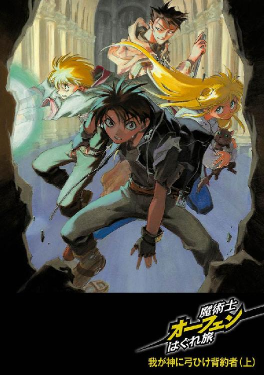
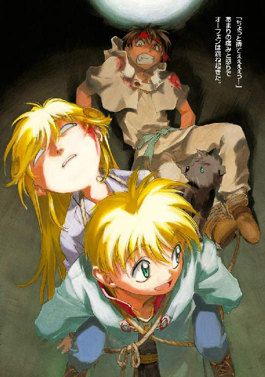
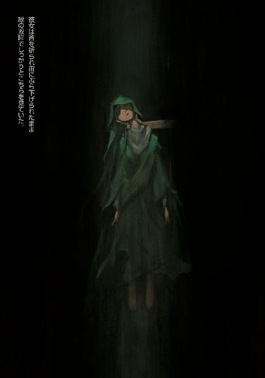
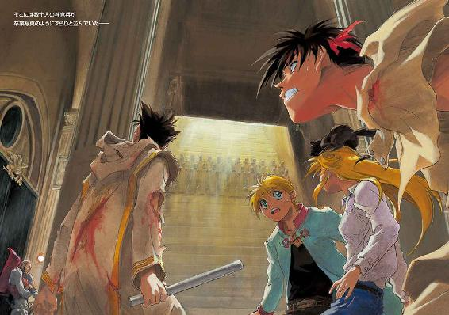
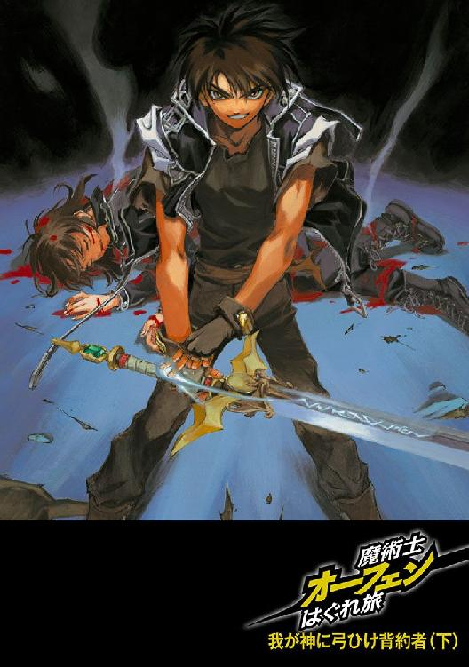
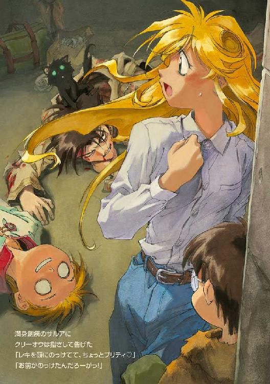
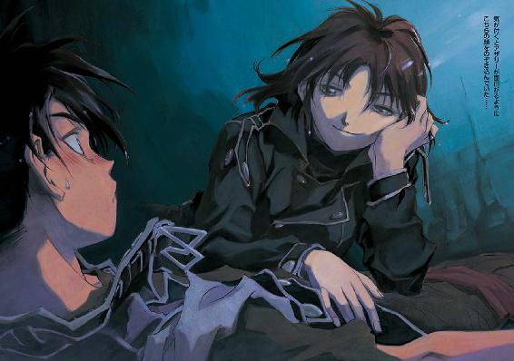
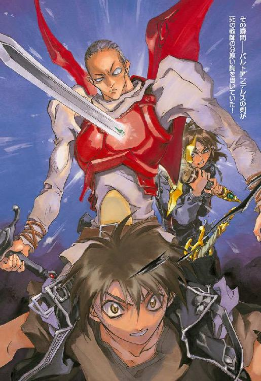
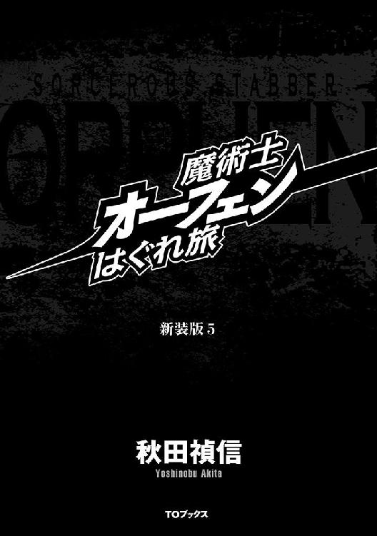
この作品は縦書きでレイアウトされています。
また、ご覧になる機種により、表示の差異が認められることがあります。
一部の漢字が簡略字で表示されていることがあります。
イラスト：草河遊也Ｙｕｕｙａ Ｋｕｓａｋａ
デザイン：ヴェイアＶｅｉａ
◆プロローグ
すべては半ば予想していたことだった。理由などはない──肌を包む空気の質。風の音。いずこからか忍び寄ってくる湿気も感じてはいた。だがそれが理由ではない。
単に分かっていたのだ。彼は胸中で、意味もなく確認した。古くからの約束事のように、分かっていたのだった。
実際それは、古くからの約束事ではあった──彼にとって一瞬だったとしても。
彼は目を閉じていた。彼女の魔術が彼を包んでから、ずっと。視界を閉ざし、さりとて耳を澄ますわけでもなく、ただ意識だけを鋭く尖らせていた。夜の感覚を、静かに練っていく。
いまだ五感が馴染んでいない。その事実もあって、彼は慎重になっていた。ゆっくりと──力を込めて、指の形を歪めていく。数秒を要して拳を作り、彼はまたそれを、さらに倍する時間をかけて開いていった。指は動く。夜の寒気に少しかじかんでいる、その感触にすら新鮮さを覚える。
彼は目を開いた。
光は少なかった。彼の頭上で、巨大な木々が枝葉の天蓋を作っている。月はどこにも見えない。どこにもないのかもしれない。彼は苦笑した──あり得ることだ。世界は変わるはずだ。彼の知っている世界と、今、ここに彼が立っているこの世界。なにが同じで、なにが変わったのか。
知ってはいた。というより、聞かされてはいた。彼女の言葉ならば、一語一句違わずに思い出すことができる。なにもかも──そう。生まれてから彼女に聞かされたすべての言葉をも思い起こすことができるのではないか。そうすべく仕組まれた彼女の魔術は極めて強大で──そして、それに答えるべく彼の思いは、さらに強い。
強いはずだ。
彼は、自分に対して繰り返した。答えを言葉にする必要はない。ただ彼は、悠然と背筋を伸ばした。
「つまり──」
答えとは関係のないことを独りごちる。
「......ここが......そうなのか？」
自分の声に、つぶやきに、彼は眼差しを鋭くした。
「世界は......滅びていない」
果たして、そうなのだろうか？ 疑念が浮かぶ。
彼は胸の中に深く呼気を流し込むと、それを吐き出した。冷たい夜気が心地いい。彼は再び息を吸った。今度は、たいして深くはなく。
澄んだ空気が、これ以上ないほどに肺を満足させた。思わず、にやりとする。そうだ。賭けてもいい──この空気までもが滅びた世界のものだというのであれば。いいだろう、滅亡を甘受しても構うまい。
だが、そうではないという自信を彼は抱きつつあった。
開いた右手のひらを、上向かせる。闇の中に、白い手のひらだけが浮き上がって見えた。その手のひらを──とても自分のものとは思えないその手を見据えて、彼は溜めていた息を吐き出した。
呪文とともに。
「光よ」
彼の手首と指先、その二点を使って三角形を作る残りの一点に、音もなく輝きが灯る。炎ではない。まったく揺れていない。一瞬の閃光を、時間を停止させて固定したような、そんな輝きである。色もついていない白い光。魔術の灯り。
光は発生と同時、なにか反動でもあるかのように、わずかに上方へ跳ねた。そしてそのまま、ふわりと動きを止める。
照らし出された周囲を、彼は見回した。森の中。それ以上のことは分からない。どこかの高地のようではあるが──木々に邪魔されて星が見えないせいで、位置が特定できない。彼はため息をついて、視線を下ろした。白い輝きに照らされ、木々の皮まで白い。白い土。白い下草。木の幹を覆う苔も白い。
白い手のひら。
彼は苦笑した。恐らくは、その笑みすらも白いのだろう──彼自身には見えないが。
もっとも、彼の身に着けている黒いローブは、彼自身の造りだした魔術の灯りに染まってはいなかった。相変わらず黒い。これはデザインした者に言わせれば、一切の迷いを許さない色なのだという。確かに、彼の周りに開けたこの世界の中で、唯一自らの色を保っている。
（さて、どうだか......？）
皮肉混じりに、彼は考えていた。色を保つということと、色を変えないということ。似ていることは認めなければならない。だが違う。
「違う。まあ、どうということもないが」
彼は灯りを消した。先よりも深くなった闇が、なにもかもを閉ざす。
夜の中に彼の瞳だけが輝いている。その輝きが彼にも感じられる。彼は手探りで、懐から銀色のものを取り出した。抜き身の短剣。銀色の刃。手に馴染んだ柄の感触。
恐らくは、これだけが変わらないものなのかもしれない。
彼は歩きはじめた。足音はない。そして彼の胸の中には──
与えられた、ただひとつの命題がある。
◆第一章 銀の刃の役割を
静かに──
淡い光が聖堂を、暖かい空気で満たしている。
クオ・ヴァディス・パテルは足音を立てずに、その光の中へと進んでいった。ぼんやりと、どこかくすぐったい、波打つような橙色の光。光は丸く放射状に伸びている。誰が足を踏み入れることを拒むでもない。柔らかく、暖かい光。
聖堂は、この神殿の中央にある大聖堂とは違い、もっとプライベートな意味合いのものである──もっとも、教会の最高位者たる済世者、教主ラモニロックに、私などというものがあればの話ではあるが......
結局のところこの聖堂における「私」の部分はふたつだけ──まずは、その広さだろう。
（......聖堂とはよく言ったものだ）
表情には出さずに──というより、彼の顔からなにか感情のようなものが出るなどということはあり得ないのだが──、彼は独りごちていた。
この聖堂は豪奢な造りだが、なにもない。運び込まれた家具はどれもすべて最高のものだ──王都から、王家の下賜品として寄贈されたものも多い。ただし、そのいずれにも、人が生活している臭いのようなものが残っていない。教主の私室として使われているはずではあるのだが。個人用の部屋なので、広さはあまりない。だがそれにもかかわらず、室内の光源が弱いせいで、部屋は完全には照らされていなかった。
聖堂は常に光に包まれている。その光に触れることができる人間は、極めて限られていた。それに関して言えば──あの忌々しい最終拝謁よりも厳しく限られている。
光の正体はといえば、明かしてしまえばなんということはない。蝋燭の明かりだった。聖堂は、その奥を一枚の薄紙で遮られており──蝋燭はすべて紙の向こう側から、こちらを照らしている。紙は淡く泡立てるようにぼんやりと光を通し、そしてひとつの影を映している。
薄紙の向こうに座す、ひとりの聖者を。
キムラック教会最高位者、教主ラモニロック。
教主その人は、まったく動いていないはずだが、その影は蝋燭の炎とともに揺れ──大きくなり小さくなり、一時も静止していない。そのため影だけでは、その姿を想像することもできそうにない。
のみならず、実際に教主の姿を見た者もいないはずだった。
そう。いない......
「クオ教師様」
呼びかけられて彼は、視線だけを横に向けた──できれば見たくはなかったというのが本音だったが。
「......アナスタシアか。なぜわたしだと分かった？」
聖堂の隅に、じっと立っているその女は、澄んだ声ですぐに答えてきた。
「足音で、あなたではないかと」
目を閉じた顔を、どこへというわけでもなく、だいたい部屋の真ん中のほうへと向けている。まだ若かったように記憶していたが──粗末な使用人の格好をしているせいで、ひどく老けて見える。髪もぼさぼさで、そちらは少女というかさらに下、幼児じみた風貌を彼女に加味していた。もとは黒かったその髪は、灰色っぽくくすんでいる。
髪に半ば隠れるような目元は、鈍い傷跡のようなものがのぞいている。左の目尻から眉間を通り、そしてもう一方のまぶたへと。両方の眼球をえぐった傷跡。
（もう見慣れても良さそうなものだが......）
彼は、静かに毒づいた。自分がつけてやった傷を、そういった少女の顔に見るのは、あまりいい気分ではない。
彼女──アナスタシアは、静かに、まるで子供にでも語るように言ってきた。
「祝福を与えてくださった教師様のことは、親のように分かるのです」
「......そうか」
クオは、言葉少なにそれだけ答えると、彼女から視線を外した。こちらが見えていないのならば気分を害すこともあるまいと、自分に言い聞かせる。
「教主様のお言葉を賜れるか？」
聞きながら彼は、薄紙に映る影を見つめた。影は動いている。だが影の向こうの当人はどうだか分からない。
「教主様は」
アナスタシアは言いかけて、うやうやしく両手を組み合わせて聖印を作ると、礼をしてから続けた。
「三日前からどなたにも、なにもお言葉をくだされておりません」
「そうか」
短い答えを再び口にして、クオはきびすを返しかけた。本来ならば、長々しい聖言でも述べていくところだが、やらなかったからどうだというものでもない──少なくとも、部下が見ている前でさえなければ。
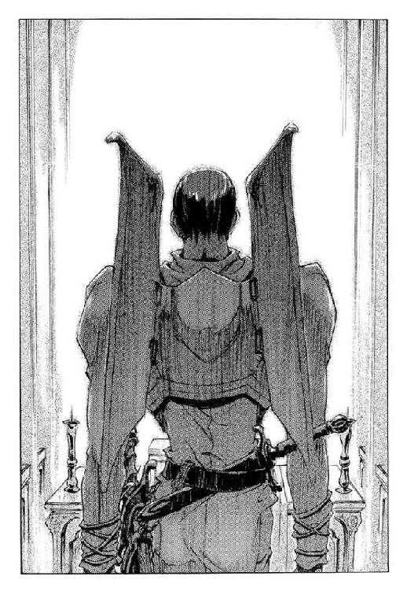
と、入り口に向かいかけた時、彼の巨体を包んでいる鎧や剣帯が、がしゃりと音を立てた。普段はこのようなことはない。特に今、彼が身に着けている深紅の甲冑は特別なものだった。防具としてはどう見ても不完全な代物ではある──胸と背中だけを覆い、腹部や肩、首筋を守る部品がまったくない。背中からは鳥の翼のように、衝立の形をした装甲が二枚飛び出していたが、飾りにしてはあまりにも不格好で、そして大きすぎる。
剣は二本下げている。剣帯にぶら下げられているのは豪華な鞘に収められた長剣──そして後ろ腰に、剣帯ではなくズボンのベルトに、三十センチほどの長さの剣が下げられていた。漆黒の柄に、漆黒の鞘。意匠に凝ったところはないが、材質がそこいらの鋼と同等のものでないことはすぐに分かる。
これらのものが音を立てることは、ほとんどなかった。鎧は部品が少ない分、ほとんどすべてが一枚板である。二本の剣も互いがぶつからないように慎重に身に着けていた。だが、急いで聖堂を退出しようとして、あわててしまったらしい。
そして──
「武装しているのか......クオ」
寝ぼけているような男の声を耳にして、クオは、素早く向き直った──聖堂の奥へと。
今度は音が鳴る鳴らないの問題ではなかった。その場にひざを着いて聖印を作ると、定められた聖言を唱えはじめる。
「我ら、原初の血の聖なるかな──」
「いや。構わぬ。クオよ。武装しているのか？」
長い音節をいくつにも分けるように小さく息継ぎしながら──教主の声は囁かれていた。クオは、ちらりと横目でアナスタシアが床に伏せて最敬礼しているのを見てから、ごくゆっくりと顔を上げた......
「はい」
はっきりと答える。いかなる場合であれ、言いよどむことは──神官としては決して許されない。
「なぜ」
教主の声は、若くもあり、老獪でもあり、意味を聞き取れるぎりぎりの抑揚しか含んでいない。言葉を覚えたての子供のようなたどたどしさだった。
クオはわずかに顔を伏せると、
「......侵入者が。〝外輪〟にて部下が捕捉したようですが、突破されたなら、必ずこの聖舎にやってくるものと思われます」
「また魔術士か......」
「はい」
「王都の手の者か？」
「確認中です。が、恐らくは違うかと」
もし《十三使徒》ならば──
絶対に勝てませんが、と胸中で付け加える。
と、教主はそれまでとまったく変わらない口調で、全然別のことを言ってきた。
「剣が折れた。さきほど......分かったのだが」
「............!?」
さっと眉をひきつらせて、クオは思わず上体までも起こしていた。剣と言えば──彼らにとって剣は、ひとつの意味しか持たない。
クオ自身も剣帯に下げている──死の教師の象徴、ガラスの剣。
教主は淡々と続けている。
「〝ネットワーク〟......が探知した、ガラスの剣が折られた。地下でだ」
「ネイムです。ネイム・オンリー。突破されました」
答えを待っている暇はなかった。クオは立ち上がると、角張った指を丸めて拳を作った。
だが、教主の声に変化はない。乾いた口調で聞いてくる。
「地下......ということは、狙いは《詩聖の間》か......？」
「恐らくは、そうかと」
「今宵の警備は？」
「カーロッタはおりません。わたしのみでやります」
「そうか。許可しよう」
許可もなにもないものだが、クオは反論しなかった。無論、まさか教主その人が「頼んだぞ」などとのたまうはずもないし、それにも増してもちろん、クオもそのようなことを望んでいるわけではない。
だが、それでも──つぶやいてしまう。
「......せめて、オレイルがおりますれば」
「駄目だ」
返ってきた声には、躊躇もなにもなかった。
「奴はこの教主の顔を見た。いずれ殺せ。分かったなクオよ」
「はい」
クオはうなずくと、聖堂を出ようとした。が──
「そういえば──」
教主の言葉は、それで終わりではなかった。
「お前は以前、この教主の顔を見た男をひとり取り逃がしている。お前はカーロッタに殺されろ。分かったなクオよ」
「......はい」
再び、即座にうなずく。言いよどむことは許されない。
クオは足を止めずに、もう出口に差し掛かっていた。というところで、また教主が声をかけてくる。
「クオよ」
「はい」
クオ・ヴァディス・パテルは立ち止まった。聖者を肩越しに見ることなど許されないため、完全に振り返って簡易的な礼を取る。
薄紙の向こう側にいる、影だけの聖者は、厳かに告げてきた──
「我ら、原初の血の聖なるかな」
聖言。クオは落ち着いて返答した。
「聖なるかな」
教主はそのまま続けてくる。
「生誕の美しきかな」
「美しきかな」
「運命の正しきかな」
「正しきかな」
最後に教主は、一拍置いた。意味はないだろう。単に、話しすぎて疲れただけか。
クオには苦痛だったが。
「死の聖なるかな」
「聖なるかな」
最後の答えを返してから、クオは聖印を切った。そして、いまだ床にはいつくばっている少女の姿を一瞥する──
少女は最敬礼したまま、手できつく両耳をふさいでいた。この聖堂にて唯一、聖者と直接に接触することを許されているこの者は、見てはならないものを見ることは許されず、聞かねばならないことは聞き逃してはならず、聞いてはならないものは、決して聞いてはならない。
（誰でもそうだがな......）
そんなことをつぶやきながら、クオは、聖印を解いた。今は真夜中。明日の夜明けをとてつもなく遠く感じる。
◆◇◆◇◆
痛みを感じた時には、どうするだろう？
どうということのない疑問だった。叫ぶか、泣くか。怒るかもしれない。本当にどうしようもない痛みであったなら？──彼は静かに結論を出した。静かに、そして速やかに。
微笑むのだ。力なく。
口の端を歪ませて、眉を傾け、息を吐き出す。それは間違いなく笑みだった。つまずけばすぐさま泣き顔に変わりそうなほど弱々しく、彼は微笑んだ。声はない。声を出せば、それは確実に泣き声になる。それは分かっていた。
「お師......様......？」
背後から聞こえてきた不安げな声に、彼は、ぴくりと頭を動かした。ゆっくりと顔を上げ、さらに緩慢な動作で肩越しに振り返る。そこには見覚えのある少年が立っていた。
いつの間にか、灯火があたりを照らしていたことに、彼は気づいていなかった──今初めて、その少年の傍らに浮かんでいる魔術の鬼火を発見する。真っ白い炎はゆらゆらと、彼とその少年、そしてほかのすべてを照らしていた。
彼。
自分を見下ろしたわけではない。だが彼はなんとなく胸の中に、自分自身の姿を思い浮かべていた。変わらないのは髪の色、瞳の色──黒。艶のない、静寂の黒色。赤いバンダナ以外、身に着けているのはもともとの彼の服ではなかった。着慣れていない麻の上下。白い生地は、さんざんかぶった泥水のせいで黄土色に汚れていた。
少年。
少年も、似たようなものである。黒いシャツの上に、それを隠すように白いマントを羽織っている。どこか頼りなげな眼差しは、拍子抜けしたような間の抜けた様子で、こちらを見ている。
ほかのすべて。
そう、ほかのすべてだ。
彼はそれらを順々に観察していった。少年の造りだしたものであろう、魔術の鬼火──小さく揺れている。波動のように放射しているその明かりも、同じ形で揺れていた。明かりがすべてを照らし出している。明かりがなければすべては闇に沈む。
彼らがいるのは巨大な地下道だった。その由来は、詳しくは分からない。が、どこか見覚えのある光景にも、彼には思えた。限りなく広大なこの通路──あちこちに礎石だけは見える柱が、ほとんどすべて倒壊しているというのに、通路そのものは崩れていないというのは、明らかに不自然ではある。だが実際通路は崩れていない。空漠とした闇をすっぽりと囲んで、虚ろに笑っているように見える。どこまでも広がっていく闇に、うっすらと色をつけるように、黄色の砂が舞っている。
地上は雨──ということで、この地下は特に空気が湿っているようだった。喉の奥に痛みを感じる。力の限り絶叫した、彼の喉。
まぶたにも痛みを覚えている。泣きたくとも涙が出なかった、彼の目。
そのほかにも、外傷の痛みであればいくらでも、身体に浸透していた。数本の裂傷は、刃で引き裂かれたものだ。かたまりかけた血がべったりと、彼の身体を湿らせている。背中と肩に打撲。脳震盪も起こしているかもしれない──そして、折れた右腕。右手首が完全に動かない。骨折してはいないだろうが、確実にひびは入っている。戦った、彼の身体。
弱い。弱い身体だ。
唐突に彼は意識した。そう。弱い身体だ。傷つきすぎる。
自分の身体ではないかのような冷淡な目で、彼は自らを見下ろしていた。そして当然、ほかのすべても。少年が背負っている金髪の少女──頭から血を流して意識を失っている。少年の肩に、こちらに尻尾を向けて乗っている黒い子犬。いや、黒い毛並みを持った、強大なるディープ・ドラゴン種族の子供である。
（そうだ。弱すぎる......）
観察しながらも、彼の瞳はその少年も、少女も、ドラゴンも、なにも見ていなかった。彼が真実見つめていたのは、ただ自分自身の傷ついた身体だけだった。そして──そして、傷ついた、もうひとりの男の身体。
傷つきすぎて、もう動かない男の身体。
その男は、彼のすぐ近くにゴミのように転がっていた。顔といわず首といわず血をこびりつかせて、まぶたを開けたまま、もう動かない。
男は死んでいる。
彼は──つまりオーフェンは──痛む身体を見えない手で引き起こすように、その場に立ち上がった。静かな地下道に、どうしても消えない音が耳に残っている。ただ注意を引くことだけが目的のような、甲高い耳鳴りの音。
オーフェンは息をついた。少年が、おずおずと繰り返してくる。
「お師様......？」
不安そうな眼差し。少年の碧眼が歪んで見える。
「この人......」
彼は少女を背負ったまま、転がっている死体を指さした。いや──指先は、微妙に死体を外れて関係のない床を指している。死体を指させるほどには、この少年の心も強くないのかもしれない。
（みんな、弱い......）
オーフェンは死体を見下ろした。改めて視線を動かす必要などなかった。どこを向いていようとも──彼の視線の焦点は、その死体にあった。破裂した眼球から血をこぼしている、愉悦にも似た満足の笑みを浮かべて事切れた、その男。
キムラック教会総本山──つまりこの地下道の上にある神聖都市キムラックを守護する、死の教師の死体である。
「死んでる」
オーフェンはぼそりとつぶやいた。喉がずきりと痛む──先ほど絶叫した際、かなり痛めたらしい。胆汁の臭いに混じって血の味が、口の中に広がっていた。
「死......？」
不思議そうにその単語を繰り返す、少年──オーフェンは、うっすらと笑った。いや、相手にとっては泣き顔に見えたかもしれないが。
「死んだ。殺した。こいつは襲いかかってきた。俺は......殺すしかなかった。ほかに方法が──」
一息でそこまで言って、肺の中の空気を使い切り、オーフェンは言葉を切った。そして......
かぶりを振る。
「いや。あったさ。殺さなくたって......こいつはただの人間だった。魔術もなにもない、ただの。今までみたいに勝てた、はずだ......」
「お師様？」
三度目の呼びかけ。オーフェンは少年に向き直り、初めて、自分がこの少年に対して言葉を発していたことを自覚した。
（言い訳をしてた......のか。俺は）
人を殺したことの言い訳を。
彼はまた、かぶりを振った──今度は強く。
「俺はそんなに......弱くは......うっ！」
打撲傷が、しびれるように痛みを増した。衝撃を食らったように筋肉が麻痺し、膝がすとんと抜けて床に落ちる。うずくまるように頭を抱えて──
「くそっ！」
「お師様!?」
四度目だ。少年は、背負っている少女を重そうに引きずりつつ、駆け寄ってきたようだった。オーフェンは爪を立てて床をかきむしりながら、倒れた彼のわきに、少年がひざをつくのを横目で見ていた。弱い手が、自分の肩に触れる。
「どうしたんですか!? これ──すごいケガなんじゃありません？」
「触る......な......」
身体をわななかせ、胆汁の味を噛みしめながら、オーフェンは声を絞り出した。思い通りに動かない右腕を突っ張らせると、なんとか上体を起き上がらせる。折れた手首にはもはや痛覚もない。吐き出した息に吹かれ、空気に浮かぶ黄塵も乱れて散っていく。彼の目の前から──見捨てるように散っていく。
「俺が、殺し、たんだ。いいか──こいつは死の教師で、俺らをはめたんだ。罠をしかけて襲いかかってきた。俺は......いつものように、戦った、だけだ」
（言い訳だ──言い訳をするな！）
胸中の叫びは無視して、さらに続ける。口の中に、胆汁とはまた違った苦みが広がっていった。
「くそったれが──考えてみりゃ、今までだって、こういうことになる可能性は、いつもあったんだ。俺は魔術士だ！ なのに......俺は、制御ができなかった......」
「制御？」
きょとんと、少年が聞き返してくる。
「魔術を失敗したんですか？」
オーフェンは──笑うしかなかった。
「違う」
またかぶりを振る。ただし今度は、今までで最も小さく。
「自分の制御ができなかったんだ」
「............」
少年には、なんのことだか分からなかったのかもしれない。なにも言ってはこなかった。が、それでもちらりと死体を見てから──死体を見るそのままの眼差しでこちらを見ると、弱々しい声を出してくる。
「よくは分からないですけど......でも、仕方なかったんでしょう？ お師様も、ひどいケガしてますし......」
「仕方ない？」
聞き返す。
仕方ない。
繰り返す。
「仕方......ない、か？」
オーフェンは、怯えたように震える声を吐きだした。表情筋が痙攣するのが、自分でも分かる。
その表情を見られまいとして──というわけではないがオーフェンは少年から顔を背け、物言わぬ死体へと視線をもどした。
「俺が自分を制御できなかったことが、仕方ないってのか？」
「そんな──つもりじゃあ......」
弱々しく、少年が言ってくる。
分かっていた。この少年がどういうつもりでそれを言ったのか、オーフェンにも分かっていた。つまりは、この少年は──
（理解して......ねえんだ）
頭痛が治まらない脳の中を、直接かき回してやりたくなるような衝動で、オーフェンは自分の髪をかき混ぜた。汗と地下水とで、まだ濡れている。粘り気のある髪の毛が数本、指にからみついたまま引きちぎれた。その痛みも心地よい。終わらぬ苦痛の最中では、小さな痛みはかえって快感だった。肺が暴れ、息が苦しくなってくる。彼は頭をひっかくのはやめて、両手を胸に当てた。
「う・わ・あ・あ・あ──」
彼はひきつる口を無理やりに開いた。言葉といっしょに唾液がこぼれるのを感じる。あるいはそれは、ずっと噛みしめていた唇から滴っている血だったかもしれないが。
叫び声ではない──それほどの激しさはない。それでも嗚咽ほど弱くはなく、途切れ途切れに彼は言葉を吐き出しはじめた。苦痛に叫びながら、その場にくずおれる──
「お師様！」
少年が、声をあげながらさらに身体を近寄らせてきた。とりあえず近くの床に、背負ってきた少女をごろんと寝かせて、
「大丈夫ですか？ でもあの──クリーオウも、なんか大変みたいなんですよ。気を失ってて、血を流してて。でもぼくじゃあ治せない......でしょう？ レキも役立たずだし......お師様！」
少年の声は、耳にというより頭の中に響いてくる。ことさらに甲高く、耳に入ったときは、なんのことはない、ただの少年の声でも──頭の中で無限に反響していく間に、どこまでもヒステリックに変調していった。
「うるさい......」
オーフェンはうめいて、少年の手を振り払った。
少年はやめない。さらに声をあららげてくる......
「お師様──！」
「うるせぇっ！」
再度振り払った手が──偶然──、少年の横面を殴打した。
「............あ............」
こぼれた声に、意味が込められるほどの時間もなく──
だがゆっくりと、しりもちをつくように少年が倒れる。
殴られたほおを押さえ、ほうけた表情を見せて、少年は為す術もなく転んでいった。石造りの床に、ぺたんと腰を落としている彼と、数秒間、視線が合う。
殴った手は痛くもない。触れた感触すら残っていなかった。
その手──左手を抱くように引きもどし、オーフェンはつぶやくように声を出した。
「あ──わ、悪い」
それを聞いて──いきなり──少年の顔色が変わる。
「なんなんですか、いったいっ！」
少年は叫びながら、ぱっと飛び起きた。細い肩をいからせて怒鳴り声を張り上げる。
「あ......いやあの、そのな」
口ごもってオーフェンは、とりあえず少年の激昂から身を守るように後ずさりした。が、少年は構わずに続けてくる。
「あもいやあのもそのなもないですよっ！ いきなりはぐれて、なにがなんだか分からないうちにそんな大ケガして！ しかも心配して近寄ったら殴られるんじゃ、ぼくは片っ端から割が合ってないじゃないですかっ！」
大声で──その大声のせいで鉄砲水が起き、はぐれる羽目になったということを覚えていないのか、少年は精一杯の声量を惜しみなく使っているようだった。さっきまで虚を突かれていた表情に、今は灯が入っている。
「だいたいお師様、ぼくのことを半人前だ半人前だって言うんなら、ちゃんと守ってくれたっていいようなもんじゃないですか！ それを結局、お師様がどっか行ってる間に、ぼくだってあの白い服着た連中に取り囲まれたりしてたんですからね！」
まくしたてて、少年はこちらを指さしてきた。
「この街に入ってから、ずっとヘンなんですよお師様は！ なんか自信がないみたいにふらふらしてて！ いつもだったらもっと、どしんと構えて動くものを見る端から全部なぎ倒すくらいのことはするでしょう!?」
「いや......今までだって、ンなことをした覚えはないが......」
気の抜けた声でうめきながらオーフェンは、痛む右腕を丁寧にさすってみた。完全に手首をくじいているうえ、骨に異常を感じる。この程度なら、治せないこともないだろうが......
（治す？──なにを使ってだ？）
唐突に、わけの分からない疑問に心をとらわれ、オーフェンはきょとんとした。が、すぐに思い出す。
（魔術で、だ。決まってるだろうが。馬鹿馬鹿しい......）
すぐに思い出したつもりではあったが──そうでもなかったのかもしれない。かなり待たされたように焦れた様子の少年の怒声が、彼を現実へと引きもどした。
「お師様っ！」
はっと、意識をもどす。
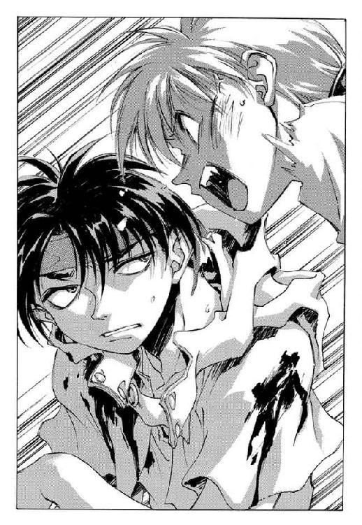
「な、なんだよ」
痛む頭に左手を添えて、オーフェンは聞き返した。少年は、焦りのほうが強くなったのか、単純な怒りは引っ込めつつあるようだった。不安そうに眉根を寄せて、床に寝転がしてある少女を指し示す。
少女は眠っているように──ただ悪い夢でも見ているように、目を閉じてぐったりとしている。呼吸は深い。小柄な身体は震えている様子もないが、服が濡れているせいもあり、かなり冷えている可能性はある。こめかみに、浅い傷。出血しているが、それ自体はどうということもない。
むしろ頭蓋骨のこの部分を、傷が開くほど強打していることのほうが問題だった。
少年は顔の半分だけをこちらに向ける形で視線を上げ、言ってきた。
「クリーオウが......様子がおかしいんですよ。よく分からないですけど動かないんです」
「気絶してりゃ、そりゃ動かねえだろうさ」
オーフェンはぐったりと答えながら、少年と並んで、その少女のわきにかがみ込んだ。指先で、そっと彼女の金髪をどけて、傷口を見る。
やはり浅い。
「......俺のほうが、よっぽど重傷だろが」
彼はうめいて、嘆息した。
「でも、お師様とクリーオウじゃ、根本的な材質の強度が違うでしょう」
引っかかるような引っかからないようなことを言ってくる少年に、オーフェンは妙な表情を返した。
「そうとも思えんが。だいたいこいつは前から──」
と、少女を指さす。が。
うっかり右手で指さそうとして、あわてて引っ込める。麻痺していたはずの手首から、鈍い痛みが伝わってきていた。
「大丈夫ですか？」
心配そうに聞いてくる少年に、オーフェンはなんとかうなずいた。
「あ、ああ──ええと......」
ちかちかと瞬く視界を、何度か、まばたきして矯正する。それでも痛みは退かなかったが、我慢できないことはない。
大きく息をついて、そして──彼は、なにかを忘れていることに気づいた。
「......なんの話をしてたんだっけか？」
「............」
少年は、訝しげにこちらを見て、
「本当に、大丈夫なんですか？」
「え？ ああ......ただ気絶してるだけだよ。ほっときゃ起きるさ」
「いえ、そうじゃなくて、お師様も、なんか変ですよ」
変？
それを聞いて、ふっと......顔から、力が抜ける。
少年は怪訝な表情はそのまま続けた。
「別に、どこがどうというわけじゃないんですけど......とにかく、クリーオウを治してあげてくださいよ。あ、ちゃんと乾いたところに寝かせてからのほうがいいですね。きっと文句言いますから」
「あ、ああ」
うなずく。そこで言葉が途切れた。
オーフェンは、自分が少年から目をそらそうとしているような錯覚を覚えつつ、少女を見下ろした。少女は意識のないまま目を閉じている。彼女の近くを、小さな黒い子犬のような生き物がうろうろと歩いていた。
簡単な傷だ。少なくとも傷そのものは。魔術で簡単に癒せる。
オーフェンは、意識を集中し始めた。慣れたことだ。なんの心配もない。ほとんど意識せずに、イメージを魔術の構成として編み上げる──
同時に彼の中に、周りの空間に投射すべき構成と入れ違いに、周囲の情報が入り込んでくる。干渉しようとしている対象物は、目の前の少女。近くには少年と、子犬のような生物。彼らのいる場所は、あまりにも広大な地下道。黄塵が舞い、空気は湿って、光源は白い鬼火のみ。
地上は雨。死体はひとつ。ずっと離れたところに、昏倒しているらしい白服の兵士たち八人。死体はひとつ。彼が殺した死体がひとつ。
少年。
そういえば──この少年の名前はなんだ？
そして、この少女の名は？
（あれ......なんだ？）
彼は、ふと違和感を覚えた。そして──
視界が歪曲し、そのまま彼は、昏倒した。
◆◇◆◇◆
なんの前触れもなく、ぱかと目を開けて、ドーチンは起き上がった。もう丸一日降り続いている雨の音が、静かに夜を彩っている。
部屋の中は真っ暗だった。窓ガラスが、わずかに光沢を示している以外は、光らしい光がなにひとつない、暗闇。ボルカンのいびきが聞こえてきている──ということは、
（これは、兄さんの足なんだろうな）
彼の顔面を踏みつぶしている足を適当に放り投げ（いびきは止まらなかったが）、ドーチンは腰を上げた。手探りで蝋燭を探し、その燭台に突っ込んであるマッチを擦る。ぼっ、と点った丸い灯を、ドーチンは蝋燭に移した。闇を圧するほどの大きさはなくとも、それでもありがたい明かりが、部屋の中を照らす。黄塵に反射して、明かりは思いのほか大きくなっている。
マッチを振って消しながら、彼は訝った──
彼ら──つまり、ドーチンと、その兄であるボルカンは、床に寝ていた。ボルカンは今も部屋の真ん中で大の字になり、大いびきをかいている。彼ら『地人』が、いつも身に着けている毛皮のマントがあれば、おおむね寝具はいらない。ただこの部屋には、ひとつだけベッドがある。部屋と同じくたいして広くもなく、質素ではあっても上等ではない粗末な寝台。
その寝台が空っぽになっていた。
◆◇◆◇◆
銀の刃の役割を、彼は別に忘れていたわけではなかった。彼女は彼のすぐ目の前に立っている──もう既に刃の先に軽く触れているのではないかというほどに。
イスターシバの瞳に射すくめられて、彼は立ちつくしていた。
瞳と、そして彼女の言葉とに。
「......滅び......？」
彼は、聞き返した。
彼女は身動きひとつしない。返ってくる言葉はなかった。ただその落ち着いた眼差しが、あるひとつのことを示していた。
「あなたは......」
わけが分からないながらも、彼は我知らず、つぶやいていた。かすれた声音で、囁くように。
「あなたは、真実を語ろうとしているのですね......」
「真実？」
今度聞き返してきたのは、彼女のほうだった。自分の言葉で自らの金縛りが解けたというように、言葉といっしょに静かな動作を見せる──彼女のまとっている緑色のローブが、さらりと音を立てた。優雅に背中を見せる彼女は──
ひょっとしたら、銀の刃の役割を忘れているのかもしれない。彼の携えるこの刃が、彼女を殺すために用意されたものだということを。
あるいは、さらにひょっとすれば──忘れていないのかもしれないが。
「真実......」
その単語を繰り返す彼女の背中を見つめながら彼は、彼女の視線と同じほど、その背中にも圧倒されていた。動けない──
（自分は、彼女を殺すために遣わされた暗殺者だというのに！）
と、彼女が振り向いてきた。
どこまでも優雅でありながら、さりげない力強さを感じさせるほどに、彼女が固く拳を握っていた。美しいローブは穏やかな衣擦れの音を奏でている──が、やはりその肢体はあくまで緊張し、こわばっている。
シスター・イスターシバ。ウィールド・ドラゴン種族の、ただひとりの司祭。
それは、そんな女だった。
「我がこれより語ることは......真実などと美しいものではない」
と、緑色の双眸に、黒い針を突き通すような一筋の陰が宿る。
「それに、それでは贖罪にならぬしな」
陰はすぐに消えた。陰が抜ければ、彼女の瞳に残るのは澄んだ眼差し──どこまでも透明で、そして世界のいかなる影までも映すであろう、決心の瞳。
彼女が告げてくる。
「今まで汝らになにも語らなかった罪──最も汚らわしき言葉で事実を語ることにより、贖おう」
彼は確信した。
銀の刃の役割を──
◆第二章 彼女は忘れていないのだと
アテレンス・フィンランディ。
マーサ・フィンランディ。
目を見開く寸前にその名が胸に浮かび──そして開いた瞳を光が射した時には、オーフェンはその名前を忘れていた。
名前は忘れたが......それが、自分を産んだ人間たちの名前であったことだけが、記憶に残る。
産んだ人間である。親であったことは、ほとんどない。両親ともに、旅行中につまらない事故で死亡している。
彼が、まだ生まれたばかりの頃のはずだ。どのみちそれを恨んだことは一度たりとなかった。実を言えば周りにいた人間たちのほとんどが、彼と似たような境遇だったのである。彼が育った《牙の塔》では、身寄りのない子供たちをスカウトして黒魔術士へと育成することが非常に多い......
（にしても......なんで俺、そんなこと思い出してるんだ？）
自分が生きていることを確認したかったのかもしれない。というより、誰かから生まれてきた人間だということを。
額の上に重くのしかかるなにかを振り払いながら──実際にはなにも乗っかっていなかったが──、彼は意識を視界にもどした。仰向けに倒れている彼を見下ろすように、煌々とした鬼火が宙に浮かんでいるのが見える。鬼火の白い光の中に、金色の黄塵が混じって、まるで太陽のように。
こういった明かりは、簡単な魔術で造り出せるものである──造るだけならば。どのような魔術にも言えることだが、特にこうした明かりは、ある程度の長時間存在を維持できなければ意味がないため、実はそれなりに難度の高い部類に入る。まあ、そうとはいえ本格的に難しくなるのは重力中和などの完全な「超高難度」のカテゴリーに入ってからなので、あまり関係ないといえば関係ないのだが。
（簡単な......魔術。そう......この程度の構成で......）
あまり意識せずに思い浮かべようとして、オーフェンは頭痛に身をすくませた──いまだ脳震盪が続いているのか、複雑なことを考えようとしても集中できそうにない。脳の血管が片端から詰まったような違和感が、彼の意識を揺さぶった。
（にしてもこれは......痛てぇな。どうしようもなく痛い。にしても痛い......）
と、彼は自分の状況にふと気づいた。
「ちょっと待てぇぇぇぇっ！」
上半身のバネだけで、跳ね起きる──ただし、足首をくくっているロープの許す限りでだが。
両足首にロープを結びつけられ、荷物のように地面を引きずられながら、オーフェンはわめき立てた。
「いきなり、なんで引きずられてるんだよ、俺はっ！」
「お師様っ!?」
ロープを持って、彼を引きずっていたのは──
マジクだった。気絶したままのクリーオウを、おんぶ紐で背中にくくりつけて、肩にはレキを乗せている。彼は振り向いてくると、ぱっと表情を明るくした。
「気がついたんですか!?」
「こんなゴツゴツした場所を芋袋みてえに引きずられてりゃ、めちゃめちゃ寝覚めばっちりだわ、馬鹿たれ！」
オーフェンは怒鳴りながら足首をひねると、あっさりとロープから右足を引っこ抜いた。片方が抜ければ、もう片方もほどなく外れる。
地面の砂塵をはね上げながら、ぴょんと立ち上がるこちらを見て、マジクが、ぱんと手を打ち合わせて感嘆の声をあげた。
「うわぁ。お師様、たまに妙な特技持ってますよねえ。普段あんまり役に立ちそうもないような」
「くそやかましいわっ！」
口から唾を飛ばしつつ、マジクの胸ぐらをつかみ上げる。
「なんで足首くくって引きずってんだよ！」
「首をくくったら死んじゃうじゃないですか」
「まあ、そーいやそーだが」
即答してきたマジクに、思わず納得しかけてしまってから、オーフェンは、あわててかぶりを振った。
「理由になるかっ！ 大ケガしてる俺を引きずりやがって！」
マジクをつかんでいる右手に、さらに力を込めて──ふと気づく。
「あれ？」
と彼は、マジクのシャツをはなすと、その右手を目の高さまで上げた。わきわきと握ってみる。痛みは感じない。
「ケガは治ってますよ」
おずおずと、マジクは言ってきた。さんざ怒鳴ったせいか身体が半分逃げているが、目線はこちらに来ている。
「とにかくなんとかしようと思って、魔術でやってみたんです。ぼくが」
「ほほう......」
オーフェンは半眼になると、自分の右手を観察した──ほかにも身体をぺたぺた触ってみるが、確かに外傷はなくなっている。ふさがった皮膚の下に微妙な痛みが残ってはいたが、こういったことはよくあることだった。
見ると、マジクはレキを肩に乗せたまま、ふふんと胸を張っている。
「どうです？ すごいでしょ、お師様」
しばし、少年のその得意げな顔を見つめてから──
オーフェンは右手首を左手でつかみ、大声で叫んだ。
「うわあああああっ!?」
「ど、どうしたんですか？」
びっくりしたのか、目を白黒させてマジクが聞いてくる。オーフェンは、右手をわななかせながら、ぞっとした声でうめいた。
「お前、制御に失敗しただろ！ 指が一本増えてやがるっ！」
「ええええええっ!? そんな、本当ですかっ!?」
驚愕の声をあげるマジクに──
オーフェンはいきなり冷たい視線を投げると、黙って拳を振り上げた。
「本当ですか、じゃねえ」
めし、とマジクの金髪の頭に拳骨を落としてやる。
「自信を持って『ンなわけないでしょーが』と否定できないでどーする。そーゆうこったから、半人前だってんだ、お前は」
「ううう。ひどいよぉ」
涙目になってしゃがみ込む、マジク。おぶったクリーオウが、だらんと白目をむいている。マジクの肩にいたレキが、その顔の上にぴょんと飛び乗った。
死体のように首をのけぞらせているクリーオウを見て、オーフェンは腕組みした。そうやって身体を動かしても、確かにたいした痛みは感じない──
（まあ、たいしたモンだけどな、実際）
賞賛は胸中にしまったまま、憮然とした顔つきでオーフェンはつぶやいた。
「それはそれとして、なんでクリーオウは気絶させたまんまなんだ？」
「いえ、魔術で癒すんでも、失敗したら怖いですし」
あっさりと答えてくるマジクに、半眼で聞く。
「......俺はいいのか？」
「ていうか、ほっといたらお師様、死んじゃいそうでしたから。ぼくが気絶させた兵隊の人たちもそのうち目を覚ますでしょうし、あそこにずっといるわけにもいかなかったでしょう？ ほら、やっぱり引きずらないと」
「なんだかなぁ」
鼻から大きく息を抜けさせて、オーフェンはうめいた。あたりを見回して──少なくともマジクの鬼火が照らしている範囲では結局、もといたところとなんら変わりない光景に見えたが──、頭をかく。
「にしても、どのくらい引きずってきたんだ？」
「さあ......休み休みしながら、二時間くらいは歩いたと思いますけど」
「たまにお前、ヘンに体力あるよなー。別にいいけど。んで、真っ直ぐに歩いてきた自信はあるか？」
「いいえ」
やたらきっぱりと──なにがそんなに自信があるのだか知らないが──うなずいてくるマジクに、オーフェンはにっこりと、うなずき返してやった。ポケットから、一枚の紙切れを取り出す。
「実はここに、この地下道の地図があるんだが......」
言いながら。
オーフェンが確信したのは、ただひとつのことだった。
道に迷ったのだ。
火事。襲撃。戦争。
危機的な状況というものは、いろいろとあるわけだが──
遭難というのは、最悪のもののひとつなのではないだろうか。
オーフェンは陰鬱に考えながら、地図を確認していた。
黄塵の舞う地下道はどこまでも──あざ笑うようにどこまでも──続いている。端から端まで何度も地図に視線を這わせて、オーフェンはしぶしぶと認めた。
「......この地下道、とんでもない大きさがあるぞ」
「ホントですか？」
クリーオウを乾いたところに寝かせていたマジクが、ひょこひょこと近寄ってくる。さっきまで、クリーオウの上に積もる黄塵をぱたぱた払ってやったりしていたのだが、十分もやっていたらさすがに飽きたらしい。オーフェンはまだ続く頭痛をため息で紛らわせながら、相手にも見えるように地図を広げてやった。
「見た限りじゃ、どの通路も同じ広さがあるらしい──つまり、こことまったく同じ広さがな。この地図は、あの酒場の地下から出口までの道筋がかろうじて書いてあるだけみたいなんだが、縮尺だけはそれなりに精確らしい。とするとだな......」
スタート地点から目的地まで、指を滑らせると、
「大ざっぱに見積もって、十キロ以上はありそうだな。なにを考えて、こんなに掘ったんだ？」
「掘ったって、なにがですか？」
きょとんと聞いてくるマジクに、オーフェンは妙な顔をした。
「なにがって、お前──この地下道だよ。どう見たって鍾乳洞にゃ見えんし、それなら誰かが掘ったってことだろが」
「そういや、そうですけど......」
マジクは、あたりを見回すと、
「でも、地下っていうの、多いですよね」
「なにがだ？」
再び地図を食い入るように見ながら、上の空に返事をする。と、マジクが天井を見上げているのが、視界の端に見えた。地上を意識しているのかも知れないが──この地下道の中には上り下りの坂道もあったので、ここが地下何メートルであるのかは、正確なところは分からない。百メートルまではないだろうが。
ぼんやりと、マジクがつぶやく。
「......遺跡とかですよ。いつかのアレンハタムの地下にあったのもそうでしたし、この前の劇場も、それに、ここも──」
「天人の遺跡は、確かに地下のものが多いけどな──あの古代の魔術士たちは、もとは地下の種族だったんだそうだ。それでいて天人って呼び名もアレだが。でも」
とオーフェンは地図を見たまま、適当に手を振って周囲を示した。
「ここは天人の遺跡じゃない。人間が掘ったとも考えにくいんだけどな。こんなでっかい地下道を掘る技術、王都にだってねえだろうし」
「天人じゃない？」
聞き返してきたマジクに、オーフェンは少しだけ顔を上げた。こちらを見ているマジクの顔──そして、寝たままのクリーオウと、そのそばでうろうろしているレキを順々に見やってから、肩をすくめる。
「天人たちは通常、自分たちの住処を魔術で防御している。彼女らの沈黙魔術は、媒体になっている魔術文字を無理やり破壊してしまいでもしない限りは不滅の効果を持っているから、ここがもし天人の遺跡だったら──」
彼は説明しながら、自分が腰掛けている、横倒しになった支柱の破片をぽんとたたいた。
「こんなに壊れてるわけがない。この前の地下劇場でもそうだったろ？ 木製の壁だってのに、光熱波を直撃させても傷ひとつつかなかった。本格的に破壊しようと思えば、物質崩壊でも仕掛けなけりゃ効きゃしない」
「ぶっしつほうかい、ですか？」
聞き返されて、ふと考え込む。言っておいてやってもいいかもしれない。
また肩をすくめてオーフェンは、口を開いた。
「どうせお前にゃ使えやしないが、覚えとくだけ覚えとけ。魔術構成の究極形、そのひとつだ」
「はあ......」
「お前には理論的なことはなにひとつ教えてねえような気もするが──そのうち教えてやるけどな──、俺の先生であるチャイルドマンは、黒魔術によって引き起こされる現象が、最終的にはみっつに集約されると理論づけたんだ。それが物質の崩壊、波動の停滞、意味の消滅だ。聞いての通り、これらはすべてなにかが消えることを意味している。だが物質が崩壊すれば波動が流れ、波動が停滞すれば物質は結束する。ただそのふたつに関しては、物質も波動も消滅してはならない。無への消滅を認めれば、無からの発生もまた認めなければならないからだ。ただし、意味の消滅がそれを補う──これが起きると、そのふたつ、両方が起こる」
「......あの、お師様、なにがなんだか──」
「重要なのは、物理法則はさほど関係ないってことだ。これらの法則はあくまで、音声魔術によって形成される構成の普遍的な特徴によって決定されている。だから、人間以外の思考パターンを持った存在が音声魔術を使えば、まったく法則の異なった音声魔術を使う可能性もあるってわけだ」
「さっぱり分からないんですけど......」
「ドラゴン種族の魔術が、それぞれの種族によってまったく異なるのも、その辺が理由らしい。思考パターンがなにによって決定されるものなのか、実験のしようがないんで判明はしてねえんだが、言語や育った環境が関係してるってのが、今のところの妥当な結論だろうな」
「うううう」
「やーい、半人前ー」
しくしくと泣き崩れるマジクに、オーフェンは最後にはヤジを飛ばしてから、こほんと咳払いした。地図を指さして話題をもどす。
「それはそれとしてだ。天人の遺跡だとしたら、作られてから千年以上は経ってないってことになる。天人種族がこの大陸に来たのが千年前だからな。彼女らが地上から姿を消したのが、だいたい二百年前──この程度の年月では、て言い方もすげえけど、とにかくそのくらいじゃ風化しないのが彼女らの魔術の、もの凄まじさってやつだ」
「ぼくらの魔術は......」
オーフェンは、上空の鬼火を指さした。
「ああいう簡単なもので、保って一時間。次元が違うな」
「ですねー」
しみじみと同意するマジクを見ながら、オーフェンはさらに話題をもどした。
「......んで、ここの地下道だが、どうも話を聞いてる限り、地図に書かれている範囲の外に出ちまったみたいなんだよな。とは言え、もどるってのも、どうだかな......例の神官兵たちが意識を取りもどしてるかもしんねえし」
「ほかに出口はないんですか？」
あたりを見回して、マジクがつぶやく。地下道の広さに対して、鬼火の光量は完全に不足している──どちらを向いても闇が視界を閉ざしていた。壁も天井も見えるわけではない。夜の中に取り残された子供のように、きょろきょろするしかなかった。
オーフェンは地図をしまい込みながら、ふうむと声を出した。こめかみをこすりながら、考え込む。頭痛がどうにも治まらないのが鬱陶しい。
「結局のところ、俺らはこの地下道がそもそもなんのために作られたものなのか、それも分かっちゃいないんだよな。それが分かりゃ、なにか考えようもあるんだろうが......」
「でも......なんか......」
マジクが、指を立てて言ってくる。
「やっぱり、雰囲気とかがアレンハタムの地下にあった、バジリコック砦でしたっけ？ それに似てる気がするんですけど」
「砦、か？」
聞き返してオーフェンは、息をついた。立ち上がり、腰に両手を当てて背筋を伸ばす。魔術で無理やりに傷を治すと、そのあとしばらく身体を重く感じることがよくあった。
「だいたい、地下になにかを作るんなら、こんなでっかいスペースを掘る必要はどこにもねえし、逆にこれだけの大容量を必要とする施設なら、地上に作りゃいいんだよ。こんだけの穴を掘って、土砂をどけたら、しゃれでもなんでもなく山が一個できるんじゃねえか？ しかも、今じゃなんの用途もない。無駄もいいとこだ」
「少なくとも、キムラックの人が掘ったんじゃないでしょうね」
あごに手を当て、悩むように言ってくるマジクに、オーフェンはぱちんと指を鳴らした。
「それだよ。気になってたんだが、この街の連中、どうしてこんな辺鄙な場所に暮らしてるんだ？ キムラック教会の発祥の地が、この大陸北方だとされているんだが、そもそもそれが、この地下道と関係あるのかもしれない」
「キムラック教会と言えば、あれですよね。確か、女神がどうとか」
ひどくあやふやなことを言う。オーフェンは肩をコケさせながら、マジクに告げた。
「お前、そんなことも知らないでここに来たのか？ 運命の三女神だよ。巨人の大陸で、ドラゴン種族に魔法の秘義を盗まれたっていう神々のうちの三姉妹だ」
「............」
突然──
マジクが、口をつぐんだ。
いつも愛嬌ばかりが目立つ瞳に、なにか深刻なものを浮かべて。
オーフェンは、多少ぎょっとしてから、
「どうしたんだ？ 別に、きついことを言ったつもりはなかったんだけど」
「いえ、そうじゃなくて」
少年は、中途半端な微笑を見せてきた。この街に入る時から黒装束を隠すために羽織っている白いマントに、自分で手を触れている。自分で自分を抱きしめるような仕草で。
「今ぼくらの頭の上に何千人も何万人も、そんな疑問に答えることができる人たちが暮らしてるんですよね。そう思ったら、なんか馬鹿馬鹿しくなっちゃって」
「............」
それを聞いてオーフェンも、しばし黙り込んでから──
「そうだな」
自嘲して、笑みを浮かべた。
マジクは今さら疲労を思い出したのか、力なくその場にぺたんと座り込むと、のろのろとあとを続けてきた。
「なんとか道を後もどりして、あの神官兵とかいう人たちに聞けば、答えを知ってるかもしれませんね。でも......」
と、小さな肩をやるせなくすくめる。
「その前に、袋叩きにされて殺されちゃうかな」
「............」
オーフェンは答えなかった。自分たちが──そして他人たちが──やっていることが、とてつもなく虚しいことだという自覚はもともとあったつもりだが、他人から聞かされるとさらに痛感させられる。
だがそれにも増して、しゃべっているマジクはさらに感じているのかもしれない。
それにしては饒舌だったが。
「でもひょっとしたら、それはただぼくたちがそうなんじゃないかって思ってるだけかも。誰も確かめたくないから、確かめてないだけかもしれないですよね......」
慣れない苦笑を浮かべて、笑っている。
「なんなんでしょうね、これって。さっきのお師様の言葉を借りるんじゃないですけど、本当に無駄なことって、こういうのを言うのかもしれないですね」
そんな、マジクのつぶやきを聞きながら──
オーフェンは、あまり関係のないことを考えていた。
「分かってはいたんだが......」
オーフェンは、目を閉じた。
「お前たちには、悪いと思ってる」
え？──と、マジクがびっくりしたような声をあげる。
軽く笑いかけて、オーフェンは続けた。
「お前たちは、単に俺のやりたいことに巻き込まれただけなんだよ。俺とかかわったばかりに、まったく関係のない厄介事にな。正直に言えばだ、俺自身、俺がなんでこの街に来なけりゃならなかったのか、よく分かっていねえんだ。この前お前に言われた通り──俺は自分の姉貴を追っかけて、ここに来た」
と、彼はポケットに手を突っ込みかけて、自分がいま身につけているのが、普段の黒ずくめでないことを思い出した。武器も、彼と彼の姉の、ふたつのドラゴンの紋章も、服といっしょに行方不明になっている。
手をポケットから出し、彼はその拳を握りしめた。
「俺の姉──ていうか、実の姉じゃあないが、アザリーは確実にこの街に来ている。彼女のことはこれ以上もなく知っているつもりだ──言ったことだけは必ずするひとだよ。彼女はこの街のどこかにいて、恐らくは、この街の中枢へ、ユグドラシル神殿へ行くだろう。俺はそれを追っている。だが......」
彼は嘆息して、拳を解いた。
「彼女に追いついたところで、どうしたいのか。なにか言いたいことでもあるのか。俺にはさっぱり分からない。彼女を助けたいのか。彼女の邪魔がしたいのか。あるいは──」
その次に浮かんだ言葉を、彼は呑み込んだ。声にするよりも早く、思考にするよりも早かったかもしれない。
だから胸に痛みを覚えつつも、自分がなにを思い浮かべたのか、彼は理解していなかった。
かぶりを振る。と──
「そんなの、決まってるじゃないですか」
朗らかに、マジクが言ってくる。
「姉弟なんでしょう？ お師様、その人と仲良くしたいんですよ、要するに」
「仲良く、ねえ」
その単語は複雑だった。そしてある意味、特別でもある。
オーフェンに分かったのは、マジクがその複雑さも特別さも意図せずにそれを言ったのだろうということだけだった。自分でもよく分からない。
「俺は昔から、彼女には逆らえなかった......それが結局、こんな──」
言いかけて彼は視界を移した。どこへというわけでもなく、頭を巡らせて、そして──
ある場所を見て、彼は硬直した。
その表情の変化に気づいたのか、マジクが怪訝そうにこちらを見やる。すぐさま少年は、こちらの視線に合わせて、その場所へと振り向いた。
どういうことだかは分からない。
ただ言えることは、いつの間にか、なんの前触れもなく──
クリーオウとレキが姿を消していたということである。
「ええい、くそ、なにがなんだか！」
毒づいてオーフェンは、数分前まではクリーオウが横たわっていた場所に、四つん這いになって顔を近づけた。マジクもあわてて、駆け寄ってくる。
「どうですか？ なんでなんですか？ クリーオウが、いなくなるなんて！」
「どれひとつとして答えられそうにねえな。いや、待て──」
ぶっきらぼうにそう言ってからオーフェンは、騒ぎ立てる少年を制止した。砂が積もっている床に、うっすらと──
「足跡だ！」
砂の上に残っている、わずかなくぼみを指さして、オーフェンは囁いた。強く叫べば、細かい黄塵はあっさり吹き飛ばされてしまっただろうが。
と、マジクへ顔を上げる。
「マジク、光量を上げてくれ。足跡をたどれば行方が分かるだろうが、暗くてよく分からない」
「は──はい」
答えと同時──いやしばらく待ったか──、鬼火が輝きを強める。こうすると鬼火の寿命は縮むが、この際そんなことはどうでもいい。
足跡は砂の上を点々と、一定の歩幅で規則正しく続いている。ほとんど、巻き尺で測りながら歩いているような精確さで、だ。オーフェンはごく短時間、眉根を寄せて訝ったが、とりあえず気にしないことにした。あのじゃじゃ馬が、こんな訓練されたような歩き方をしていたのは見たことがなかったが、絶対になかったとまでは断言できない。
「向こうに、まっすぐ向かってるみたいですね......」
マジクが、その足跡の続いている方向を指さして言う。
ああ、と答えながらオーフェンも、そちらを見やった。もと来た方向ではない。
「追いかけるしかねえな」
「でも......どうしたんだろう。クリーオウ、地べたに寝かされて怒ったんだったら、その場で跳びかかってきたりすることはあっても、こんななにも言わずにどっか行っちゃうなんていつもはしないのに」
「その通り──〝しないのに〟だ」
オーフェンは、親指の腹を舌で舐めた。
「それをした──あるいは、させられたからには、なにかがあったんだ。急ぐぞ」
足跡をたどることに関しては、さしたる苦労があったわけではない──歩幅はあくまで一定で、しかも真っ直ぐに続いているだけである。倒れた柱やら、がれきやら、大きな床のひび割れすらも迂回せず、ただただ進んでいる。
どこまで進んでも、地下道の様子は変わらない。どこまでも、暗くだだっ広い空間が続くだけである。
オーフェンもなるたけ急いで、足を進めた。そして──
「ん？」
つぶやいて、彼は目を凝らした。鬼火の明かりが照らす前方に、ちらちと、金色のものが見えたような気がしたのだ。
ほどなく明かりの中に、クリーオウの後ろ姿が入ってくる。
「いたな」
オーフェンはマジクに合図すると、さらに足を速めた。こちらに気づいた様子もなく、思いのほか速い足取りで歩いていく少女を、がれきを跳び越え追いかける。歩き続ける彼女の横を、すり抜けるように追い抜いて──
振り向いて、クリーオウを見やる。どうということでもなく、彼女は目を閉じたまま、ただ歩いていた。こめかみの傷はもうなくなっている──とりあえずこれだけは、マジクが消したのだろう。
彼女が目を閉じて歩いていることについては、オーフェンはさして驚きも感じなかった──もとより、彼女は明かりもなしに歩いていたのだから。それでも、つまずきもしていない。彼女の金髪の頭の上に、緑色の双眸を爛々と輝かせている黒い子ドラゴンの姿があった。
「......なるほどな」
とりあえず速度を彼女の足に合わせながら、オーフェンはつぶやいた。あとを追ってきたマジクが、声をあげる。
「なにがですか？」
「なんとなく、こんなこったろうとは思ってたんだけどな。こいつの仕業だったんだ」
と、レキを指さす。
「これですか？」
マジクもレキを指さすと、当のレキが、威嚇するように犬歯を見せる。怒っているのかもしれない。
「フィエナを覚えているだろ？ 前に《フェンリルの森》にいた」
「ええ」
クリーオウが早足のため、こちらもふたりそろって小走りになって、オーフェンはマジクに説明を始めた。
「あの娘、あの森にいたディープ・ドラゴンに使い魔にされてたらしいんだよな」
「使い魔、ですか？」
「ああ。強力な精神支配で、ほかの生物と五感をも共有させてしまうことができるらしいんだけどな。その段階になると、ある程度その相手を意のままに操ることもできるんだ。どうもレキの奴が、クリーオウに魔術をかけて操ってるみたいだな、これは」
「......ここ真っ暗だから、魔術を使えないんじゃないかと思ってましたけど」
人間の魔術士が声を媒体に魔術を扱うのに対して、ディープ・ドラゴン種族の暗黒魔術は視線を媒体とする。つまりは、視界内にしか、効果は及ばないわけである。
オーフェンは肩をすくめた。
「夜目でも利くんだろう。俺はそれより、この黒い悪魔がクリーオウの指示もなしになにかできるってことのほうが驚きだったけどな」
「でも──」
マジクは不思議そうに、首を傾げてみせた。
「なんでこの毛玉、そんなことをしてるんです？」
オーフェンは怪訝な声を出しながら、それでも即答した。
「多分......俺らがいつまで経っても治そうとしないもんだから、誰かほかに助けてくれる人間を探そうとしてるんだろ。なんつーかガキっぽい考えだが、考えてみりゃこいつ、赤ん坊だもんな」
「ケダモノですしねー」
うんうんとうなずいて、マジク──そして唐突に、少年は顔面からべしゃりとコケた。
クリーオウ、というよりレキだが、そちらは特に構わずに進んでいく。オーフェンはそちらを見送りながら、一応足を止めた。とりあえずクリーオウのほうは、心配はなさそうだと踏んで、マジクに近寄る。
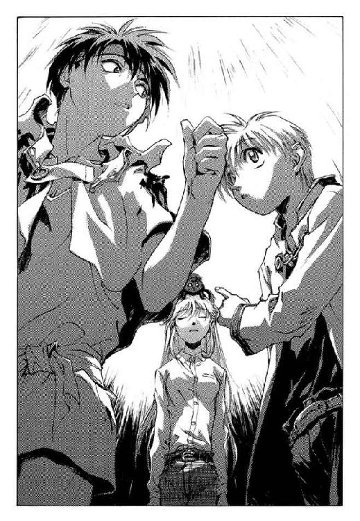
「なにやってんだよ、お前」
「痛ててて......」
顔をさすりながら、マジクが起き上がる。
「いえ、くぼみに足を突っ込んじゃって──あ、クリーオウ、行っちゃいますよ」
「え？」
マジクが指さした方向が予想外だったため、オーフェンは多少驚いて振り返った。見るとクリーオウが、いきなり方向を変えて進んで行く。
「なんだ？ ただ真っ直ぐ歩いてるだけかと思ってたが、目的地でもあるのかな」
オーフェンは独りごちつつ、マジクに手を貸してやった。立ち上がらせてから、またクリーオウを追いかける。
光の届く範囲から遠ざかり、闇の中に紛れようとしている少女を追うのは、森の中で野生動物を追跡するほどまでとはいかなくとも、それなりに困難なことではあった。闇だけではなく、いつになく濃度を増している黄塵もまた、視界を危うくしている。尻尾のように闇に揺れる金髪が目立つため、見失う心配は大きくもないが。
「もしかしたら......」
うめいてオーフェンは、横を歩くマジクの顔を見やった。マジクもまた、同じことを思いついていたらしい。
「ええ。あのドラゴンが、クリーオウを助けてくれる人間を探しているんだとしたら......ひょっとしたら臭いかなにかで、こっちに誰か人間がいるってことが分かっているのかもしれないですよ」
「......誰か人間、てこともないだろうがな」
こんな場所にいるとすれば、どういった人間かは考えるまでもない──
どちらにせよ、キムラックの住民である限り、彼らの味方であるはずはなかった。
「でもこれで、出口が分かるかも」
「最悪の出口じゃなけりゃ、歓迎会を開こう」
どうしても楽天的な気分にはなれず、オーフェンはこだわった。
そして、不意に──
「あ!?」
マジクが、悲鳴じみた声をあげる。クリーオウの姿が、ふっと消えたのだ。
オーフェンは落ち着いてあたりを見回した。と、気づいて指さす。
「また方向転換したんだ。向こうだろう」
彼が指を向けた、そちらには。
クリーオウの姿があった。こちらに背を向けたまま、黄色い光をシャワーのように真上から浴びて立っている。黄色い光。
マジクの鬼火の明かりでは──ない。
「出口だ！」
少年の甲高い叫び声が、地下道にこだました。
断層のようなものがそびえている。
なにか巨大な地滑りでも起きたように、その場所で地下道は大きく崩れていた。むき出しになった地層。崩れて積もった土砂、がれき。地下道そのものが折れて崩れているため──壁面がちょうど急勾配の坂道のようになっている。その斜めにずれた断層は、絶壁にも近い急勾配だったが、なんとか足がかりを見付けて登ることはできそうだった。その断層の天井から──天井の亀裂から、黄色い光が落ちてきている。
光の色はあまり濃くはなく、オーフェンにはそれが松明の光のように見えた。少なくとも、月光などではない。もう夜が明けているのならば、太陽の光なのかもしれなかった。都市のどの部分に開いている出口だかは分からないが。
クリーオウは断層の下で、ぽつんと立ちつくしている。オーフェンもそちらに駆け寄りかけて──ふと、足を止めた。
「......なんですか、この臭い？」
マジクがつぶやくのが、聞こえる。
「臭いで分かる、とはよく言ったもんだな」
手で鼻を覆って、オーフェンも応じた。
鼻をつく異臭が漂ってきている。どう形容しようとも受け入れられそうにない、完全にどうしようもない、悪臭である。脳髄をえぐり取るような猛烈な臭いに、オーフェンは忘れかけていた頭痛がさらにひどくなるのを感じていた。マジクはと言えば、早々にマントを頭からかぶり、うめいている。
内臓すべてが一致団結して催しているような、悲惨な嘔吐感に耐えながらオーフェンは、水っぽくなった目をしばたたいた。嗅覚は既に麻痺しかけ、その悪臭を受け取っているという情報だけが頭の中で飛び交っている。目から涙をこぼしつつ、オーフェンはそれでも前に進んだ。
地下道には当然ながら風もなく、その場によどんでいる臭気はとてつもない濃度を持っているようだった。意味もなく手でそれをかき回しながら、粘り着いてくるような悪臭をかき分けて、彼は歩き続けた。とにかくなにか、進まねばならないという焦燥感が、自分を駆り立てるのを自覚する。
（嫌な予感が......する？）
いまだかつて、悪い予感だけは外れたことがない。
近寄るにつれて、立ち止まっているクリーオウの足下に転がっている無数のがれきが、本当はなんであるのか見えてきた。
それは──
無数の人骨に間違いなかった。
◆◇◆◇◆
手の中の剣が滑る。
滑っていった先にあるのは──暗闇の中の、ひとつの気配。
背後にある窓は開け放たれて、薄っぺらいカーテンを緩やかにはためかせている。夜空から、雨雲に覆われた漆黒の空から雨とともに落ちてくる風が、部屋の中に吹き込んできていた。
「......起きたほうがいいんじゃないかしら？ カール」
彼女の指にすっかり馴染んだ剣は、ぴたりと動かず、ベッドに横たわる人影に突きつけられている。肩を守る革鎧の重さを感じながら、メッチェン・アミックは眼光を鋭くした。冷たく、暗い夜の寝室。
部屋に明かりはない──必要もないだろう、とメッチェンは皮肉げに考えた。ベッド近くに置いてある小さな丸いテーブルに、これまた小さな金色のベルが置かれている。これを鳴らしさえすれば、明かりを持った使用人がひとりかふたりは姿を見せるだろう。
だから大声は出せない。メッチェンは声を押さえ、息すらひそめてそのベッドの上の人影を凝視していた。
天蓋付きベッドは馬鹿げて広く、その真ん中で寝ている人物に剣を突きつけるためには、片足をベッドに乗せなければならなかった。土足だが、まあ仕方あるまい。どのみち、そういった礼儀のことを言うならば、ずぶぬれになって窓から侵入してきた時点でもうおしまいだった。
（この女なら──なにを怒るかしらね。真夜中に起こされたこと？ 剣を突きつけられたこと？ 絨毯を濡らしたことかしら？）
そんなことを、ふと思う。しばしして──メッチェンは、ベッドの人影が身動きするのに気づいた。
長いブロンドに埋もれていた白い顔に、ささやかな眼光が点る。目を開いたのだ。
「寝ぼけてるふりは無用よ。あなたのお友達みたいにだまされるつもりはないの──あなたが決して寝ぼけたりしないってことくらい、よく知ってるわ、カール......カーロッタ・マウセン」
「......まるで、わたくしの手口のすべてを知ってるみたいな口振りじゃない。ねえ？ 可愛いメッチェン」
ベッドの上の女が、起き上がった。
カーロッタ・マウセンという女のプライベートを初めて見て、メッチェンが反射的に思ったことは──ただひとつだった。
（間違ってた......）
表情には出さずに、舌打ちする。
（何年も前から──初対面の時から気にくわなくて──なんだこの派手な女はとか思ってたけど......）
勘違いだった。
カーロッタは地味な女だった。
もっとも──黒豹のような地味さを、地味と呼べればのことではあるが。
そう。カーロッタはそんな意味で地味な女だった。シーツを胸元に押し上げて、ネグリジェを隠している。暗闇の中、色までは判別できないが。どこかおっとりとした眼差しを、穏やかにこちらへ向けている。
そしてその視線に対して真っ向から、メッチェンの剣が、彼女の眉間に突きつけられていた。
口元に笑みを浮かべて、そしてどうしようもなくおかしいとばかりに鼻で笑い、カーロッタが言ってくる。
「......剣を突きつけて人を脅すんなら、喉元とか脇腹に切っ先をつけるべきじゃないかしら──いくらあなたが凄腕でも、剣で頭蓋骨を貫けるわけじゃあるまいし、わたくしがいざ反撃を始めたらどうするつもりなのかしら？」
「そうは思わないわね」
言い返してメッチェンは、唇をなめた。続ける。
「あなたが、顔に傷をつけられる危険を冒すはずがないもの」
「......まあせっかく、持って生まれた資質だものね？ 大切にしないと」
カーロッタが、ことさらに──メッチェン以上に──声をひそめていることに、彼女は気づいていた。大声を出せば、すぐに人が呼べる状況でだ。だがもとよりメッチェンには目算があった。
（人を呼んだりして、メッチェン教師に剣を突きつけられたなんて常識外れのスキャンダルを、自分の身内に広めるはずがないものね......）
メッチェンは確信していた。
カーロッタは寝ぼけたりはしない。寝ぼけて騒いだりすることはない。冷静な打算を忘れることもなく、ましてや打算し損ねるなどということは決してない。
そう。だから──顔に傷をつけたりはしない。
剣の柄をつかむ指に、汗がにじむのを彼女は感じていた。雨で全身ずぶぬれになっているのだから今さら関係ないが。
メッチェンはささやいた。
「聞きたいことはひとつだけよ。サルアはどうしたの？ まさかこの時期に、街の外に出しているはずがないわね──？」
「白状するとね」
カーロッタは切っ先を目前にしても、瞳孔すら乱さない。乱さないまま答えてくる。
「この街に仲間が誰もいなくなって、あなたがおろおろするところが見たかったのよ」
ちッ──
舌を打ってメッチェンは、きっかり三センチ、剣を突き出した。眼球をえぐっても、この女が声をあげないという確信はある。
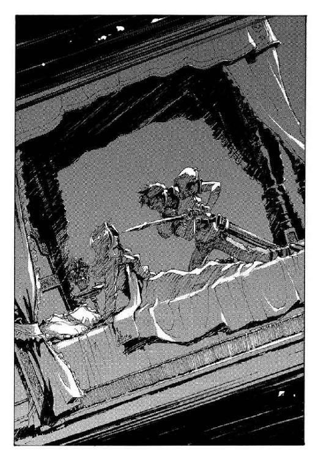
だが。
刹那、メッチェンは右腕に走った激痛に身をよじった。漏れかけた悲鳴を左手で押し殺し、ベッドから大きく跳び退く。剣ははなさなかったが、かろうじて指を引っかけているだけで、構えることはもうできそうになかった。右の上腕から、熱い痛みがにじみ出している。にじみ出ているのが痛覚だけでなく、出血もしていることは疑うべくもなかった──
ベッドから転がり落ち、しりもちをつくように床に倒れながら、彼女は痛みにしびれる箇所に触れてみた。なま暖かい体液が、止めどなく溢れている。傷はかなり深いようだった。
絶望的な麻痺が、身体を支配しようとしている。全力でそれに抗って──メッチェンは顔を上げた。凄絶な眼光で、カーロッタを射抜く。
──射抜いたところで、当の彼女は素知らぬふうだったが。
「......あなたは、わたくしの手口をひとつだって知っていない。そうでしょう？」
シーツから、ほとんど常識では考えられないような角度で、白い足が飛び出ていた。カーロッタ・マウセンの足──凍っているように白く映える左足。足の親指と人差し指とで、細いナイフをつまんでいる。
「ベッドの中にナイフを隠していることくらい、予想してもいいでしょうに」
「くっ......！」
メッチェンは唾を吐くと、剣を手になんとか立ち上がった──廊下から、ぱたぱたと複数の足音が集まってくるのが聞こえてきている。声はともかく、床に倒れた物音は屋敷中に、この広大な屋敷すべてに響きわたったはずだ。
「可哀想にね、メッチェン......」
足をシーツの下に隠すと、カーロッタはあくびすら交えてつぶやいてきた。
「あなた、とうとうこの街で独りになったわけね。たったひとりでクオに勝てるかしら」
彼女はいつの間にか手に持ち替えていたナイフを、軽く宙に放ってまた受け止めた、滑り落ちるようにベッドから下りて、こちらを見ている。
「......この部屋にある武器は、これだけよ。このちっちゃなナイフだけ。あなたにまだ右腕を振るだけの体力が残っているか分からないけれど、戦闘用の長剣と渡り合うには心許ないわね」
と──ちらりと、この広い部屋の入り口を見やる。廊下を走る使用人たちの足音を意識しているのは明白だった。
一拍置いて肩をすくめ、あとを続けてくる。
「逃げるなら、今しかないわよ？」
（......わたしを逃がそうとしている......）
それは間違いなかった。この場所で──彼女の邸内で、さらに言うならば彼女の寝室で──教師を殺すわけにはいかないのだ。
単なる嫌がらせで、この場所で死んでしまおうか。
そんな考えが、ことさら甘美にメッチェンを誘惑した。なによりも、それが一番楽そうだという理由で。唇を噛んで、彼女はかぶりを振った──
「いつか、殺してやる」
うめく。カーロッタはただ微笑むだけだった。ナイフを持ったまま、ベッドわきの白いテーブルへと近寄り──水差しといっしょに置いてあるグラスを取り上げる。
「殺すのならば、クオになさいな」
冗談とも本気ともつかない、そんな口調──そんないつもの口調。
足をひきずるようにメッチェンは、窓まで急いだ。部屋の扉が、軽くノックされる。
「お嬢様。どうかなさいましたか？」
初老の男の声。唇を噛み、歯を噛み、舌を噛んで、メッチェンは窓枠を乗り越えた。雨と風の中へ、まとわりつくカーテンを振り払いながら転げ落ちる。
背後で、がちゃんとグラスが割れる音。そして、カーロッタの声。
「......タウニー！ グラスを割って指を切ったわ。シーツと絨毯が血で汚れたから、染み抜きができる子を連れてきなさい──」
雨と風が吹き付けてくる。
傷の痛みと、身体から抜けていく体温とに戦きながら、メッチェンは逃げ出していった。夜明けにはまだ遠い、暗い夜道へと。
◆◇◆◇◆
彼女は忘れていないのだと。
それを知ってしまったためか、彼には、彼女の声がどこまでも冷たく聞こえた。遺言のような──
イスターシバの声。
「事実を告げよう。汝らは失敗作だ」
彼女の笑みには隙がなかった。入り込めないほどの、深い自嘲。
「我らの、最大のものとなるはずであった魔術──その失敗作だ。我らの役には立たぬ失敗作。我らが〝始祖〟に、もっと力があったならばあり得なかったはずの、失敗作。我ら種族が、神に抗えなかったがゆえの......失敗作。その魔術の、目的は──」
一瞬、言いよどむ。
言葉が出なかったわけではあるまい──彼はいかなる要素も見逃すまいと、彼女の表情を見つめていた。そして気づいていた。前歯を折りそうなほどに、彼女が歯を食いしばったことに。
「我らの目的は──」
次いで出てきた彼女の声は、苦渋に満ちていた。
「滅びを、止めること......」
「わたしたちを生贄に、ですか」
◆第三章 「生贄？」
キムラック──
大陸における教会すべての総本山たる、北の都。そこに雨が降っていた。
暗い夜空から、絶え間なく雨粒が落下してきている。見上げれば滴の軌跡が放射線状に広がっていた。都の夜は暗い。その暗い夜に、雨が灰色の筋を無数に刻みつけている。
勢いよく落下してくる冷たい滴に顔をたたかれながら、彼女はひとり、じっと立ちつくしていた。
夜の道はただ前にだけ伸びている。あるいは夜明けへと連なっているのかもしれないが、それがゴールであったとしても、今はまだ見えない。夜明けという遠すぎる終着点は、待ち遠しいようでもあり──あっさりと訪れたならば勿体ないようでもある。
街には、前日から下された戒厳令のため、人通りはない。もとよりこの雨の中、わざわざ出歩こうと言う物好きもいないだろうが。いつもこの街に尽きない砂塵が雨に流され、建物という建物、道という道を泥で汚している。
（本当に強大な力というものを、見たことがある......）
なんとなく、彼女は独りごちた。雨に打たれる街並みを見上げながら。
（大陸でも最強の黒魔術士が、わたしの先生だった──そしてわたしも、その最強の魔術士の一員となった。そしてまたそれとはさらにレベルの違う、ドラゴン種族の圧倒的な力というものも見たことがある。でも）
皮肉な思いに、口元を歪ませる。
眺める街は闇に黒ずみ、どこまでも続いている。雨の音以外にはなにもなく、人もいない、石の街。屋根という屋根は街自身を見下ろし、重苦しい雨粒の大群をものともせずに傲然とそびえている。
外輪のスラムとは打ってかわって、この街の中枢たる神殿街は、彼女に自分の街を思い起こさせた。黒魔術士たちの街、タフレム市。そこに負けないほどに整然と、そして豪奢にすべてが建ち並んでいる。静かで、なにも起こらない街の景色。自分にいかなる力があろうとも──たとえ見える限りの建造物を薙ぎ払うほどの力があったとしても、この「街」というすべてを壊すことなどはできない。
もし、それができたならば、人は狂うだろう。
（そうね......結局はそれが、最強の力......）
それに比べれば、どのような力も霞む。
雨の中、彼女は歩きだした。
時刻はもう真夜中を過ぎている──月が見えないので正確には分からないが。
漆黒の戦闘服に身を包み、手には長大な剣をぶら下げて、正確な歩幅で彼女は歩いていった。剣は簡素な革製の鞘に収まっている。標準よりかなり長い剣で、それこそ馬上で扱うものにも匹敵しそうな代物だった。飾り物の剣がそうであるように、剣自身にも装飾が為されている。一番目立つのは、柄に設えられている月と魔物の紋章だった。
彼女自身もまた長身だったが、それにしても剣のほうが長い。刀身が百センチ以上はある。
顔に張り付いた黒髪を伝って、雨がしたたり落ちた。それを左手で払い──彼女は顔をしかめた。いや、というより、表情から感情を消そうとした。物思いのすべてが、感傷のように思えたのだ。
進もうとしているはるか先には、黒々とした、ひときわ高い建造物が見える。墓標のように殺風景な、巨大な神殿。キムラック教会の真の中枢たる、ユグドラシル神殿である。
はるか古代──そしてはるか永遠へと続く神話。伝説では、ユグドラシルと呼ばれる神々の世界に、キムラック信徒の崇める運命の三女神が住まうという。すべて生命の誕生とともにあり、それの運命を紡いで、投網のように浴びせかける。彼女らを魔女と呼ぶ者もいる──国教たるキムラック教会の手前、声をひそめてであるが。
運命を司る三人の女神。あるいは魔女。
神々の世界、世界樹。
その名を冠した神殿が、雨に打たれている。
神話ほどの長大な歴史は必要ない。だがこの大陸にとっては長い歳月、その神殿は幾度となく無数の雨粒を浴びたはずだった。人が生死を繰り返す歴史の中で、この街に生きた者は誰であろうとこの神殿を見上げただろう。
この街に生きなかった者でさえ、夢の中でこの姿を思い浮かべていたかもしれない。
彼女──アザリーは再び足を止めた。実を言えば、意を決して隠れ家を出てから、これを繰り返していたのだが。
足を止め、ブーツのつま先で泥水が流れを分けているのを見下ろして、彼女はつぶやいた。
（......結局、わたしがやろうとしていることは、その強大な力に刃向かうことなのかもしれないけれど......）
だがかつて同じことをした人物を、彼女は知っている。
（先生は──十年前に、ここにいた。きっと......）
妄想じみているとは自覚しながら、彼女は確信していた。
（チャイルドマン・パウダーフィールド教師、いや暗殺者チャイルドマンは、間違いなくこの道を通って、あの神殿へと向かった。わたしには分かる......）
と、顔を上げる。神殿は当然、まだそこにあった。夜空に傲然と黒い影を映している。
行かなければならない。行かなければ永遠に師のことを理解できないという確実な思いが、彼女にはあった。
歩き出す。もう立ち止まることはない。夜は必ず開ける。目的地にも、必ずたどり着く。
（理解、さえすれば──）
声には出さず、独りごちる。
（ひょっとしてわたしのこと、許してくれますか、先生......）
天魔の魔女は、多大な労力を使って口元を引き締めた。
それをしなければ、泣きだしそうな気がしたのだ。
◆◇◆◇◆
「どういうことだ!?」
悪臭の中、ろくに息もできずにとにかく出すことのできた言葉は──それだけだった。
うずたかく積み重なった人骨の山。猛烈な悪臭は、そこにあるのが骨だけではないことを物語っていた。そこかしこに、まだ人間の形を保ったまま腐乱している死体が見える。死体の種類は様々だった。男、女、老人、子供。
冷静になって観察すれば、数メートルにまで積まれた眼前の山がすべて、人骨というわけではないことが分かる。ようするに、がれきの山の上に人骨が捨てられているのである。
吐き気と、そして恐怖と。どちらも似たようなものではあったが、それだけにふたつ相乗して襲いかかってくるのを、オーフェンは感じていた。
「し、死体置き場ですか？ ここ」
ふらふらと目を回して──文字通り瞳孔がぐるぐる回っている──、マジクが言ってくる。オーフェンは半眼になって答えた。
「それにしちゃあ、奥ゆかしさっつーか、威厳っつーか、足りんものが多すぎるような気もするけどな」
うめきながら、足下で黄塵と白っぽい石灰の粉のようなものが混じり合っていることに気づく。骨が風化して粉になったものらしいが、だとすればかなり古い死体も混じっているということになる。
落ちている白骨も、砕けるなり壊れるなりしているものがほとんどだった。
「......どうやら、あそこから全部落っことされたらしいな」
見上げて、つぶやく。はるか上方──地下道の天井に開いた穴。そう思ってよくよく見れば、それは亀裂などではなく、四角い人工の穴である。
「ひょっとしたら、死体処理のダストシュートみたいなもんかもしれねえな」
「......死体をゴミみたいに捨てたりしないと思いますけど......」
鼻をつまんでいるせいで鼻声になって、マジクがつぶやいた。
ンなこと言ったってな──と、息をしたくないので胸中で答えて、オーフェンはクリーオウへ視線を転じた。彼女は、というよりレキは、のろのろとした動作でがれきの山をよじ登りかけている。確かに、壁の断層をうまく登っていけば、あの天井の穴に入り込めるかもしれないが......
いや、そうではなかった。唐突になんの前触れもなく、レキが少し天井を見上げたあと──クリーオウとレキ、両方の姿がかき消える。
「転移しやがった！」
オーフェンは毒づき、クリーオウが立っていた場所へ急いで飛び乗った。ディープ・ドラゴン種族の魔術は視線を媒体とするため、術者が立っていた場所から見える範囲に転移したことは間違いない。夜目が利くならば、人間とは視界も違うかもしれないが。
なんにしろオーフェンはがれきの上に立つと──なにやら、がれきや骨とは異質な、ぐにゃりとした柔らかいものを踏んでしまったらしいことは無理やり無視して──、天井の穴を見上げた。
穴は、天井の隅に開いている。が、完全な隅っこではない。四、五メートルばかり内側にである。あまりよくは分からないが、穴は斜めに開いているらしい。わずかにこぼれている光を遮る形で、どうやらクリーオウのものらしいシルエットが映っているのが見えた。レキは、彼女といっしょに穴の入り口まで転移していったわけだ。
「ど、どうします......？」
あとについて登ってきたマジクが、困った声を出す。
「どうするったって......」
頭をかきながら、オーフェンはうめいた。臭いのせいでますますひどくなる頭痛に目眩を覚えて、一瞬、もうどうでもいいような心持ちになるが──
「あの断層を登ってみる──しか......ねえみてえだな。気は進まんが」
しぶしぶと、大きく崩れている壁面を指さす。
地下道は、なにか大きな地滑りでもあったかのようにここで崩れていた。地下道を筒と考えれば、それが途中でぼっきりと折れて半分ずれ込んでいる。そんなふうである。あたりに山となっているがれきも、そのせいで生じたのだろう。なにが原因なのかは分からないが、亀裂はうまい具合に斜めに入っているため、ちょうど足がかりにできそうな形になっていた。一番近い足場は、ちょうどこのがれきの位置から飛び乗れそうな位置である。
天井の穴も、亀裂によって生じた隙間を広げた形で開いているため、この断層を登っていけばたどり着けることになる──ただ。
ぼんやりと、マジクがつぶやくのが聞こえた。
「天井に張り付いて五メートルは進まないと、穴に入れそうにはありませんけど」
「............」
自分の生徒の、的確で間違いのない完璧な推論に、オーフェンはどうしても賞賛を送る気にはなれなかった。
前述したが、穴は地下道の壁にぴったりとついて開いているのではなく、少し通路の内側に寄っている。つまり──マジクの言った通り、蜘蛛のように天井を這える生物でもなければ穴に潜り込めそうにはない。
（......あの程度の距離なら......重力を中和して、空中浮遊できないこともないか？）
自分自身に問いかけて、即答できずに彼は腕組みした。
言えることは、ひとつだけだ──
「とにかく行くぞ」
「......なんか、いい手があるんですか？」
期待の色をにじませて、マジクが言ってくる。
オーフェンは嘆息して、かぶりを振った。
「いんや。ただ少しでも天井に近くなれば──」
と、適当にあたりを指さす。彼は既に、断層に向けて歩き出していた。
「こいつらから離れられるだろ」
「......そですね」
恐ろしげにあたりを──あたりに散らばった人骨やら死体やらを見回して、マジクがうなずく。
彼らは坂道になった断層を登りはじめた。
思ったよりきつい勾配を、十数メートルほど登る。ここまでくれば悪臭もだいぶマシになっていたが、登ってしまったことで、ひどく容易に死体を眺められるようになってしまっていた。例の天井穴から差している明かりに、人骨の山がぼんやりと照らされている光景は、どうにも胸を悪くするだけである。
「な......なんとか」
最後の足がかりを踏みしめて、天井近くまで上り詰める。オーフェンは、ぜえはあと息を上げながら、あごの下の汗をぬぐった。
「たどり着いた、な」
「こっからが問題ですけどね」
冷静に、マジクが指摘してくる。
とりあえず下を見やって、オーフェンはげんなりした顔を見せた。
「......飛んでくのは危険だな」
当たり前だが、床までは登ってきたのと同じ距離がある。苦労して登ってきただけの高度を一秒少々で落下するのは、考えただけで彼を憂鬱にさせた。ばらばらに散らばっている人骨やら死体やらを見て、少なくともひとりぼっちにはなりそうにないと予想しても、あまり慰めにはなりそうにない。
重力中和による空中浮遊は、制御が難しい。一瞬だけならまだしも、口を開けている穴までの距離──五メートル少々──というのは、成功率が低いとまではいかないが、なかなかに難しい数字ではある。空間転移は言うまでもない。
（できるか......？）
それでも一応オーフェンは、試しに重力中和の構成を編もうとした。が──
複雑な構成は、すぐに霧散した。頭痛のせいで集中できない。
「傷は治ってるはずなんだけどな......」
脳震盪のような後遺症は、なかなか消えない。毒づいて、彼はマジクの顔を見やった。
なにか言おうとして口を開ける。が、それはそのままため息に化けた。
「どうかしたんですか？ お師様」
聞いてくるマジクに、オーフェンは弱々しく手を振った。
「......いや。お前にできねえかなと思ったけど、考えただけ馬鹿だった」
そして、なんとか次の手を考えようと爪を噛む。それだけのことだった。ことだったはずだが。
多少、彼が予想していなかった反応が返ってきた。むっとしたような、マジクの声。
「馬鹿ってことないでしょう。やってみますよ」
「あのな」
オーフェンは、肩をコケさせた。呆れてつぶやく。
「つっぱるのは構わんが、やる気だけでできるもんじゃねえんだよ。魔力の強さってのは確かに先天的なもんで、お前がそれに優れてることは認めるがな。構成を編む精度や魔術の制御力は、訓練で培うしかねえんだ。別にお前が劣ってると言ってるわけじゃない。ただ、まだ未熟だと言ってるんだ。ンなものは、いつか必ず克服できるんだから──」
あわてるこたぁねえだろ。そう言おうとして──
オーフェンは、ふと動きを止めた。マジクはもう、こちらを見ていない。
両手を胸の前で合わせて──ただし触れ合わせてはいない──、手の間の空間をじっと見つめている。その場所になにがあるわけでもない。ただなにかの気配だけが収束していく。
そして、はっきりと見える。マジクの身体の周りに、幾重にも広がっていく膨大な構成。巨大で複雑で、そしてある意味単純な、ひとつの構成。
「お前──」
ぞっとしながら、オーフェンは叫んだ。
「やめるんだ！」
こちらの制止も、集中しているため聞こえないのか──あるいはほかに理由があるのか──マジクは動かない。オーフェンはとっさに、少年の身体をつかもうと手を伸ばした。が、刹那。
「我は跳ぶ──」
りんとしたマジクの声が、響く。
「天の銀嶺！」
魔術が発動する。
（間に合わなかった......！）
覚悟を決めて、オーフェンは歯を食いしばった。
感覚が消える。
次の瞬間には、彼らふたりは宙に浮いていた。ゆっくりと──それまでへばりついていた断層を離れ、虚空へと進む。
頼りなげに宙を進む自分の身体を、オーフェンは冷や汗をかきながら見下ろしていた。手も足も空中に放り出されたまま、為す術もなく進んでいく。すぐそばで、マジクがさっきのポーズのまま意識を集中して、必死になって魔術を制御しているのが見えた。
愕然と、オーフェンはただそれを見つめていた。正直なところ、マジクはよくやっていると言える──オーフェンは認めざるを得なかった。難しい構成を完成させ、それを維持している。無重力状態で感覚も不安定になり、上も下もない状態では、正常な集中力を保つことは難しい。見ているうちにもマジクの身体が震え、目も血走っていく。苦しげにうめく息。制御が身体に負担となっているのは明らかだった。やがて、ふたりとも、例の天井の穴へと入っていく......
穴は斜めに開いていて、ちょうど前に言った通り、ダストシュートのように思える。大きさは、縦横二メートルというところ──これなら死体を転がしても途中で引っかかるということはないだろう。かなり急な勾配がついているが、壁面には凹凸がついているため、よじ登るのは難しくないだろう。
──というところで、身体に重さがもどった。
「──っ!?」
オーフェンはとっさに手を伸ばすと、一番近い壁面のへこみに指先をねじ込んだ。勾配に足を滑らせつつも踏みとどまり、もう一方の手でマジクの身体をつかむ。
マジクは完全に魔術で力を使い果たしたのか──もともと疲労で余力など残っていなかったろうが、抵抗もできずに転げ落ちる寸前だった。ぎりぎり、指先だけでマントの襟を引っかけてから、なんとかつかみなおす。壁面に突き立てている指先に、ひきつれるような痛みが走った──二、三枚は爪が剥がれたらしい。その血で指先が滑りそうになったことに戦慄しながら、膝の筋肉をゆるめてバランスを取る。
なんとか数秒、その体勢を保持してから、オーフェンはじわじわと両腕を引き絞った。
マジクはぐったりと、下を見つめている。わずかに身体を震わせている少年を、ゆっくりと引き寄せてから──
「こンの──」
オーフェンは怒鳴りつけた。
「ドアホ！ なに考えてやがる！」
「う......う......」
こちらは見ずに、マジクがうめき声をあげる。
「うまく......いった、でしょ？」
「馬鹿こけっ！」
下を──つまり、十数メートル下の床を見たままのマジクに、オーフェンはさらに声をあららげた。マジクはもう体力が残っていないのか、哀れなほどに肩をすぼめている。力の抜けた彼の身体を腕一本だけで支えて、オーフェンは渾身の力を振り絞った。壁のへこみをつかみなおし、身体を勾配に対して立てていく。
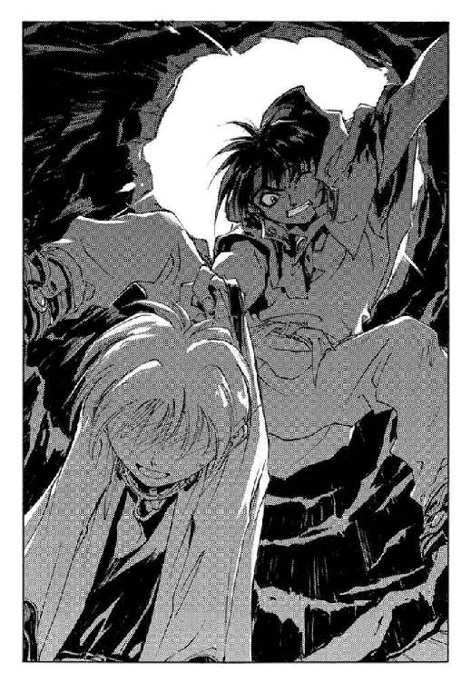
マジクは自分も、壁に対して腕を立てようとしたようだったが──腕を少し震わせただけで、動くことはできなかったようだった。それを見ながら、オーフェンは小さくつぶやいた。
「......動けねえんだろ？」
「............」
マジクは答えてこない。
ほおがひきつるのを感じる──表情が険しくなっていくのを煩わしく思いながら、オーフェンは続けた。
「お前ひょっとして魔術を使ったあとは、大抵そうなんじゃねえのか？」
「大きな魔術を使うと......疲労するんです。でも制御に成功しさえすればそんなことはないし──それは、当たり前のことなんでしょう？」
「なんで今まで相談しなかったんだ！」
オーフェンは吐き捨てるように言うと、今までそれを聞こうとしなかった自分を呪った。言っておかなければならなかったのだが、気づかなかった──自分自身が、魔術の制御に失敗することなどほとんどなかったせいで、失念していたのだ。
「お前はそれが、どんなに危険な状態なのか分かってない」
「だって、当たり前──」
「知ったふうなことを言うな！」
大声で叱りつける。と、マジクが身体をすくめるのが分かった。なにを怒られているのか分かっていないのか、きょとんとこちらを見返している。
頭を抱えたいが、腕が足りない。ましてや殴りつけるにも足りてない。舌打ちして、あとを続ける。
「考えたことはなかったのか。制御に成功した時は、疲労を感じたりはしないんだろうが？ 言っとくが、術後の疲労度ってのは、制御の成否には関係ない。関係ないんだ！ 制御を失敗した時に身体が動かなくなるほど疲労を覚えるのなら、成功したって同じだけの体力を使うはずなんだよ」
分かったのか分からないのか、マジクが目をぱちくりとさせる。オーフェンは声を震わせた。
「じゃあ、なんでお前は疲労したりしなかったり、そんなことになるのか？ お前は別に、疲労してるんじゃない。衰弱してるんだ」
つかんでいる襟元に、さらに力を込める。
「そうだよ！ 魔術は物理法則からは完全に独立している。だが、それにもかかわらず物理現象に作用している──この意味が分からねえのか？ 魔術は、制御されて初めて魔術なんだ。そして制御されている間しか魔術でいられない。制御から外れれば、ただの物理力にもどるんだよ。つまり物理法則に従いはじめる。まっさきに現れるのがなにか知ってるか？ 反作用だ。見習い魔術士の死亡率が極端に高い理由がそれだ！」
怯えたように視線をそらしたマジクを追いかけて、オーフェンは目をつり上げた。
「お前はかろうじて魔術を制御しているに過ぎない。生じた反作用で、自分自身をも標的にしてるんだ！ いいか──今より少しでも低いレベルで制御をしくじれば、確実に死ぬことになるんだぞ！」
言っておかなければならなかった──
（最初に言っておかなけりゃならなかったんだ！ くそ！）
にらみ付けるが、マジクはまだ目をそらしたままである。自分のこめかみで脈打つ音と、頭痛とが相まって、オーフェンは脳幹に異様な痛みを感じていた。
そして──唐突に、マジクが、きっ、と視線を返してくる。
「でも......お師様にはなにもできなかったじゃないですか」
「......え？」
なにを言われたのか理解できず、オーフェンは聞き返した。マジクはそれで口をはさむ隙を見つけたのか、襟をつかんでいる彼の手首を、強く握ってきた。
「お師様がなにもできないようだったから、ぼくがやったんじゃないですか。なら、お師様に怒られるいわれなんてないですよ！」
「お前な──」
オーフェンは言い返そうとするよりも早く、マジクに手を振りきられた。マジクは一度危なっかしくバランスを崩しそうになりながらも、なんとか手がかりを見つけ、そこに張り付いた。あまり格好のいい体勢ではないが、真剣にこちらを見据えて、言ってくる。
「お師様は......」
少年はそこで、一度躊躇したようだった。だが、なにかを呑み込むように喉の奥を動かすと、静かな声でささやくように言う。
「お師様はまるで、ぼくに嫉妬してるみたいだ」
血管が大きく脈打ち──
頭痛が激痛にまで強まって、オーフェンは身体をわななかせた。瞬間。
「きゃあああああああっ！」
クリーオウの悲鳴が、穴の上方から響きわたってきた。
「────!?」
声は近い──
勾配の続く上方を見上げてオーフェンは、マジクから手をはなした。壁に手をつき、登りはじめる。
あえて振り返りはしなかったが、あとからマジクがついてきていることは気配で知れた。足を滑らせないよう注意しながら、ひたすら急ぐ。
穴自体は何メートルも続いているわけではなかった。せいぜい、三メートルほどか。足場が足場であるため、そう簡単には登れなかったが、それでも一分少々でオーフェンはその穴から身を乗り出していた。死体を落とすための穴。転がすための勾配。そこから顔を出す。
そこは、通路になっていた。
ダストシュートというのは、あながち間違っていなかったのかもしれないと、オーフェンは思いはじめていた。通路に対して直角に、穴は開けられている。つまりは死体をこの通路まで運んできて、この穴に突き落とすわけである──落下した死体は、そのまま地下道で風化していく。この穴から漏れる、わずかな明かりを仰ぎながら。
とはいえ死体を捨てるダストシュートなど、あるわけがない。
「いや......」
オーフェンは通路に下りて、唇を噛んだ。ある。
彼は通路を左右に見回した。マジクがおずおずと──居心地悪そうに、穴から顔を出してきている。さっきのことを気にしているのか、こちらに目を合わせようとはしてこなかった。
だが今は、そんなことはどうでもいい。
額に軽く手を当てて、オーフェンはうめいた。
「最悪のことになっちまったかもしれねえな」
通路には地下牢が並んでいた。
赤錆がびっしり浮いた、重そうな扉が続いている。通路の壁はすべて堅固な石造りで、ところどころに松明が燃えている以外に光源はない──湿っぽい空気も、暑苦しい雰囲気も、そしてあまりにも静かすぎる影も、地下室特有の雰囲気をすべてなぞらえていた。壁の向こうにはなんの気配も感じられない。ただ土の重さが、分厚い石壁を通しても通路に染みだしてきている。
空気に混じっている黄塵は、地下道よりさらに濃い。視界がぼやけるほどの砂が、ふわふわと渦巻いていた。
腐敗臭が鼻孔をくすぐる。オーフェンは緊張を高めて、拳を握った。
「地下牢だな。結局これは、牢で死んだ人間を捨てるための穴だった、てわけだ」
と、自分たちがくぐり抜けてきた穴を一瞥してから、また視線を移す──通路へと。
通路はあまり広くはない。大地下道のことを考えれば、ますますせまく思えたが、だがそもそもはこちらが正常だろう。地下に大きなスペースは作れない。特に、この上に建っているであろう建築物が大きければ大きいほどに。上になにもないのなら、地下に施設を作る必要もないであろうから、地上が空き地になっていることはないはずだ。
通路はかなり長かった。通路には、互い違いになる形で、左右両方の壁に扉が並んでいる。扉には小さなのぞき窓と、扉の下に食事を差し入れるためのものか、隙間が開いていた。ただ──この腐臭をかげば──あえてそれをのぞいてみたいと思わなかったが。
「......なにが最悪なんですか？」
小声でマジクが、聞いてくる。ただしあくまで目を合わせてはこなかったが。
オーフェンは肩をすくめる。
「地下牢なんだよ。分かるだろ？ 当然、出入り口は、囚人が逃げないよう監視されているはずだ。この街の衛兵なら、俺たちに友好的に接してくれるとは思えんね」
「ぼくとお師様と、それにクリーオウが回復すれば、レキの魔術だってあるんです。戦って勝てないことは──」
ぼそぼそと言ってきたマジクに、オーフェンは怒りの視線を投げた。口をつぐむマジクに、噛んで含めるように言い聞かせる。
「お前は二度と魔術を使うんじゃない。いいな？」
「......そんなことを言ってる場合じゃないでしょう？ この状況じゃあ、武器になりそうなものはなんだって──」
「どんなことがあろうと諸刃の剣を使うつもりはない。完全な制御法が身に付くまで──何年かかるか分からねえが──、お前の魔術は使用禁止だ。構成を思い浮かべたりもするんじゃねえぞ。命令だ」
「でも──」
と抗弁してくるマジクに──ここで初めて目が合ったが──、オーフェンは、きっぱりとかぶりを振った。
「違反すれば破門だ。自分の師の指示すら聞けねえ生徒を、俺がいつまでも我慢してると思うなよ」
「横暴ですよ！ お師様だって──」
マジクはそこで言葉をいったん切り、意を決したように表情を変えてあとを続けた。
「フォルテさんが、言ってましたよ。お師様だって、いろんな人が止めるのを聞かないで《牙の塔》を飛び出したんじゃないんですか!?」
「それとこれとは違う」
オーフェンは歯を軋らせるように吐き捨てると、
「それに、口論してる暇はねえ──クリーオウを探さないと」
そして、再び左右を見回す。
かなり離れた場所に、ただひとつ開いている扉を見つけ、オーフェンは瞳の焦点を絞ろうと目を細めた。通路にたくさんある扉は、どれもこれも同じ形である。そのうちのひとつだけが、ねじ曲げられたように開いている。
というより、こじ開けられていた。鍵を、ではなく扉そのものを。
「あそこだ」
オーフェンはささやくと、マジクを手で促してそちらへと足を向けた。通路はそれなりに長く続いているとはいえ、しょせんは地下のもので、二十メートルはない。向こうの端に、地上に続いていそうな階段も見えた──その手前に、鉄格子が縦と横のひとつずつ、二重に通路を閉ざしているのも見えたが。
とにかく開いている扉へと、オーフェンは駆け寄った。看守の姿がどこにもなかったのは、不幸中の幸いだった。恐らくは、看守の詰め所は例の階段の上にあるのだろう。声が響くので、小声で会話するのも危険なようだが──あちこちの扉の向こうから、時折思い出したように悲鳴やら叫び声やらが響くため、さきほどのクリーオウの悲鳴も、さして目立ちはしていなかったようだ。
石造りの通路で足音を立てないのは無理であるため、そのあたりは開き直って、オーフェンは壊れた扉の前まで走り寄った。豪快な肉屋でサービスしてくれる分厚いステーキ肉を連想させるような、厚い鉄製の扉が、なんの気なしにふたつに折れてねじれている。こんなことができるのは、レキの魔術以外にはない──とオーフェンは確信して、扉の奥を見やった。薄暗い独房の中に、揺らめく金髪が見える。背中を向けたクリーオウが、頭にレキを乗せたまま立ちつくしていた。
とりあえず無事らしい。悲鳴をあげたということは意識を取りもどして、精神支配も解けたということだろう。ほっとしてオーフェンは、声をかけた。
「クリーオウ。大丈夫か──」
ばっと、金髪の少女は振り返ってきた。一瞬、振り返ってきて「それはこんな顔かい？」とかいう展開を思い出したりもしたが──一応こちらを向いたクリーオウの顔は、特にどうという変化があったわけではなかった。ただあちこち薄汚れていて、そして驚愕しているだけである。
（......驚愕？）
オーフェンはふと、訝った。突然こんな場所で意識を取りもどせば驚きもするだろうが、驚愕というほどでもなかろう。地下道だろうと地下牢だろうと、実際どうということでもない。
だがクリーオウは文字通り、驚愕しているようだった。口から泡を飛ばして、ばたばたと腕を振る。
「大変よ、オーフェン！」
少女は気安く駆け寄ってきて、気を引くようにこちらの手を握った。それをぶんぶんと振り回すようにしながら、上気した顔で言ってくる。
「本当にわたし、いきなり水に流されたと思ったらこんなとこに出てて、なんだか夢見てたみたいなんだけど、あ、考えてみたらこっちのほうが夢見悪いみたいね。だって牢屋なんだもの。牢屋って大嫌いなの」
「......まあ、あまり好きって奴もいないと思うが」
オーフェンのつぶやきに、クリーオウはうんうんとうなずくと、手をはなして今度は頭上のレキをぺしぺしたたきはじめた。黒い子ドラゴンは迷惑そうに逃げるが、せまいブロンドの頭の上で、逃げ場があるわけでもない。
「でも実を言うとね、この子がわたしを連れてきてくれたらしいのは、なんとなく分かったのよね。なんか夢うつつに、誰かに手を引かれて歩いてたみたいな感じはあったから。それでね、なんとなく行き先に、助けてくれそうな知り合いがいるんじゃないかって、そんな感じもあったの。でね、それで大変なの！」
相変わらずのきんきん声で、まくし立てる。オーフェンは不安になって、通路のほうを見やったが、看守が下りてくる気配はないようだった。マジクが一応、そちらを見張っているようだったが。
「大変？」
もうこれ以上大変てこともねえだろうけどな、と胸中で付け加え、眉を上げる。
「はっきり言ってクリーオウ。大変なことなら、もう聞きたくねえんだ」
「でも、聞いといたほうがいいわよ。それにどうせ、すぐに気づくもの──」
と、彼女は背後を示した。短い腕をぴんと伸ばして、牢屋の奥のほうを指す。
オーフェンもそちらを見やり、そして──
「......？」
目を、ぱちくりとさせた。牢の奥の暗がりには、なにが原因だか知りたくもない染みがついたぼろぼろの敷布がある。だがそれだけで、ほかにはなにもない。
「あれ？」
指さしたポーズのままで、クリーオウ当人も、虚を突かれたような声を出している。
「おかしいわね。今ここで人が死んでたのに」
恐ろしいことを簡単に言ってくれる。
（自分が言ってることがなんだか、分かってねえんじゃねえだろうな......）
ぶつぶつとオーフェンは、独りごちた。聞かれればまた面倒くさいことになりそうなので、声には出さないが。通路には明かりがあっても、牢の中にはなにもない──無論、窓もない。その暗闇が自分の表情を隠してくれていることに感謝しつつ、オーフェンは嘆息した。
「死体だぁ？」
聞き返す。クリーオウは、レキを落としそうになるほどにはっきりとうなずくと、
「ええ。ここに転がってたの」
「転がって──」
「寝てただけさ」
首筋に、ひんやりとした感触を覚えて──
オーフェンは、とっさに飛び退いた。どちらにというわけでもない。ただ、その場から跳び出す。クリーオウを突き飛ばし、反射的に戦闘体勢を取る。振り向いた先にいたのは、ひとりの男、それも見覚えのある男だった。
背後から忍び寄り、こちらの首に手をかけていたらしい。右手だけを差し出したポーズで、その男は笑みを浮かべていた──拗ねた眼差しで。どこかひょろりとした体格の、若い男。斜めに構えてこちらを見据えている。
「............」
その男の名前を、忘却の淵ぎりぎりで思い出し、オーフェンは口早につぶやいた。
「サルア？」
「......ああ。ようやくお前は......来てくれた、ってわけだ。サクセサー・オブ──」
「その名前を呼ぶなっ！」
オーフェンは思わず叫ぶと、その男──サルアにつかみかかった。伸ばした手がサルアの着ている礼服のような白いローブに触れて、べちゃり、と異様な音を立てる。
（......べちゃり......？）
感触に、手の甲がひきつるのを感じる。冷たく、そしてなま暖かい。地下牢すべてに充満する生臭い腐臭と、源を同じくする異臭。
「ま、そういうこった......」
つかんだ腕を──弱々しく振り払い、サルアは口の端をにやりとさせた。血に染まった歯が、わずかにのぞく。
「そっちの金色のに、死体と間違われんのも、しゃあねえかもしんねえよな」
「お前......」
オーフェンは絶句して、ふらりと一歩、後ろに退いた。立っていたクリーオウが背中に当たるが、そんなことに構っていられない。
サルアは満身創痍──というよりも、単に五体がそろっているというだけで、身体に無事な箇所はないような有様だった。ローブは白いが、あちこちに血が染みだして真っ黒な血痕を見せている。左肩を異様に下げているのは、関節が外れてでもいるのか。なんとか両足で立ってはいるが、どう見てもバランスが悪い。どちらかの足首が折れているのかもしれない。そして、先ほど触れられた首筋を自分の指で撫でてみて、オーフェンは顔をしかめた──べっとりと血がついている。サルアの指先には、一枚たりと爪が残っていなかった。
「オーフェン......」
背後から服のすそをぐいと引っぱり、クリーオウが聞いてくる。
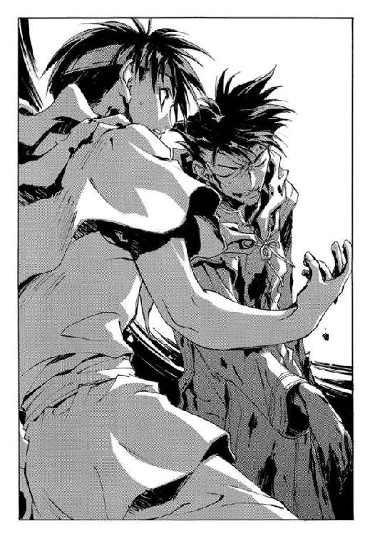
「知り合い？ わたしもなんか、どこかで見たことあるような気がするけど」
それを聞いて、サルアが首をコケさせる。
オーフェンは少女を見下ろすと、半眼になって告げた。
「そーいや、お前は確か背後から、こいつに斬りかかっただけだったからな。覚えてないかもしれねえけど......」
「そうよね。知らない相手に斬りかかることなんてよくあることだし」
「......俺って、こんなのに殺されかかったのか......？」
心底傷ついたのか、ぼろぼろの手で頭を抱えてサルアがうめく。ただし、やはり左腕はあがらないようだったが。
本気で忘れているらしいクリーオウの頭をぽんとたたいて、オーフェンは答えた。
「前に《フェンリルの森》に入った時、村にいた殺し屋だ。このキムラックの......死の教師、サルア・ソリュード。だったよな？」
「自分の名前は人に言わせねえくせに、俺のこたぁべらべら言ってくれるじゃねえか」
皮肉げにそう言うと、死の教師はまばらにひげの生えたあごをさすって見せた。
「ま、知られたからってどうってことはない。今は見た通りの半死人だ」
「てゆうか、誰も覚えてない死体なんて、幽霊よね」
朗らかに指摘するクリーオウに、サルアが少し疲れたような声音で答える。
「......なかなか鋭い意見だ。偉いぞ」
「オーフェン。ひょっとしてわたし、馬鹿だと思われてるのかしら」
「知らないほうが幸福なことだってあるぞ」
それだけ言って話題を打ち切ると、オーフェンは牢の中を適当に見て回った。といったところで、ほとんど動かずにあちこち向いただけだが。見た限り、食器が残っているわけでもなく、部屋の隅にある便器を使った形跡もない。つまり──
「ここに入れられて、長いこと経った、てわけでもないみたいだな」
「牢の中で過ごす二日間が短いだなんて思うもんじゃねえぞ。ここで手慣れた連中に尋問を受けりゃ──見れば分かるだろうが──出るもんなんざ出なくなるぜ」
ぶつくさとぼやくサルアに、オーフェンは笑う気にもなれず嘆息した。
「試したくはねえな。あの穴から捨てられた骨の山を見てきたもんでね」
と──
突然、マジクが牢に飛び込んできた。廊下を指さして、
「......看守が来ますよ！」
「さすがに、騒ぎすぎたな」
軽い口調で、サルアがぼやく。
かつ、かつと規則正しい靴の音──階段を下りてくる靴の音を聞きながら、ぶつぶつと続けている。
「あの足音を聞くと、憂鬱になるんだよな。ここの連中も、たまにゃスキップくらいすりゃいいのによ」
「黙ってろ」
オーフェンは冷たく言うと、通路に落ちている、壊れた扉を苦々しく見つめた。牢に引きずりこむ余裕はないし──どのみち扉がなければ、看守が興味を持たないはずもない。クリーオウに、というよりレキに対して、オーフェンは皮肉った。
「......いつかちゃんと、鍵の開け方を覚えろよな、お前」
「鍵がかかってても扉が開けられるのに、わざわざ鍵から外すのは二度手間じゃない」
口をとがらせて大まじめな顔で、分かるような分からないようなことを言ってくるクリーオウに、オーフェンはあえてなにも言い返さなかった。足音がかなり近づいてきていたのだ──階段を下りきったらしい。
通路の向こうから、若そうな男の声が聞こえてくる。
「......なんだ？」
「脱走か？ 扉が、あんな──」
と、そのまま言葉を失ったらしい。厚さ三センチもある鉄扉が、紙屑のようにくしゃくしゃに丸められていれば、そんなものだろう。
「奴らは、必ずふたりでやってくるぜ」
薄目に笑みを浮かべ、小声でサルアが忠告を発する。
「ひとりずつ、一撃でやりな。ちっとくらい派手にやったって、上にゃ聞こえねえよ。尋問中の悲鳴ですら、聞こえてねえってんだから」
「上？」
レキを胸に抱きなおし、黒い毛並みにうっすら積もった黄塵をぱっぱとはたき落としながら、クリーオウが聞き返す。彼女はきょとんと上目遣いになって、あとを続けた。
「......そういえば、ここってどこなの？ まだ地下よね」
「なんだよ。知らねえで来てたのか？」
サルアは呆れたようだったが、確かにここがどこなのか、オーフェンにもまったく見当がついていなかった。
通路から、がちゃがちゃと重い鉄の音──鉄格子を開けているらしい。鍵が錆びついてでもいるのかかなりもたついて、看守たちの毒づきも聞こえてきている。
牢の入り口わきの壁に、身を隠すように張り付いて、オーフェンは拳を固めた。サルアの言う「派手」がどの程度のことだか知らないが、武装しているかもしれない看守をふたり、素手で倒すつもりはなかった。それでなくとも疲労が激しい。彼は意識の一部を眠るように集中させて、魔術の構成をイメージしはじめた。
それでも頭のどこかを会話へ傾けて、つぶやく。
「地下道で迷子になったんだよ。お前の仲間──ネイムとかいったか──にはめられてな。で、そこの尻尾の生えた毛玉が俺らを先導して、ここに来たってわけだ。どうも人間の臭いかなにかを頼りにここにやってきたらしいんだが」
サルアはなにも答えてはこなかった。疲れていたのかもしれない。
マジクが、クリーオウをかばうように入り口の前に陣取っている。少年に、魔術の構成を編もうとしている気配がないことに、オーフェンは少しほっとしていた。機嫌は損ねたかもしれないが、こちらの言ったことだけは、理解していなかったわけでもないようである。
頭痛が脳幹を揺さぶっていた。激しくではなく、緩やかにちくちくと。脂汗──もしくは冷や汗を額に浮かべて、オーフェンは乾いた唇に唾をつけた。舌でなめると、苦い砂の味がする。キムラック全土を覆う、死んだ砂の味。
鉄格子が開いたらしい。ちょうつがいの軋む音が、無遠慮に神経を逆撫でしてくれる。オーフェンが身体を緊張させている時──
静かに、サルアがつぶやいた。
「......ここは、ユグドラシル神殿の地下牢──余人の知らない神殿最下層《詩聖の間》の、さらに下だ」
通路を足早に駆けて、牢の入り口に姿を現したのは、ふたりの神官兵だった。
神官兵という呼び名は、昨日、死の教師であるネイム・オンリーに聞かされたものである──頭の中でその単語を閃かせながら、オーフェンは神官兵なるものがそもそもどういった仕事をしている役人なのか、分かっていなかった。神官らしく白い服をまとっている。よくよく見れば、サルアが着ているものもまったく同一のものである。どこか鎧を思わせる、重そうな生地と、かっちり固まったデザイン。フードはややたっぷりめで顔が隠れているわけではないが、顔の下半分を黒いマスクのような布で覆っている。鋭い眼光だけが、外にのぞいていた。サルアが言った通り、確かにふたりである。
彼らが手に警棒を握っているのを見ながら、オーフェンは編み上げた構成に魔力を流し込もうとした。刹那──
じぃんっ──！
金属音にも似た不快な音が、頭を突き刺す。と同時に視界が真っ暗になった。うねるような痛みが喉の奥から脳を侵食する。激痛の侵略は、たった一瞬で彼の全身を支配した。
「ああああああっ!?」
自らの身体を抱きしめ、叫ぶ。
（やっぱり──やっぱり、そうか！）
絶叫とともに、視界が少しだけ回復する。夕闇のように暗く白く閉ざされた視界に、こちらに向かって飛んでくる、細長いものが見えた気がした──
次の瞬間には、警棒に打ち倒され、オーフェンは壁まで吹き飛んでいた。痛みは感じない──それ以上の痛覚が既に働いている──が、衝撃だけは感じることができる。火薬が弾けたような一撃は、警棒のものだ。立て続けに後頭部に当たったのは、牢の壁だろう。こちらのほうが重く、硬い。乱暴な子供の手で振り回されるぬいぐるみのように、オーフェンはなにもせずにその衝撃を甘受した。
やがて、天井へと焦点が合う。彼は床に倒れていた。
「オーフェン!?」
「お師様っ！」
クリーオウとマジクの声が、遠くから聞こえてくる。せまい牢の中、距離にすれば二メートルも離れていなかったろうが、それにしてもオーフェン自身が遠くに行きすぎていた。気絶したいというのに、それができず──彼は声なき声で、同じことを叫びつづけた。何度も繰り返した。
（そうだ──やっぱり──そうだ──）
喉に痰が詰まり、息があがる。頼りになりそうにない視覚だけではなく、ぼやけた五感を総動員してなんとか、あたりの様子を探った。サルアが、あの傷ついた身体のどこに余力を残していたのか、神官兵のひとりから手際よく警棒を取り上げ、一瞬で相手を打ち倒している。クリーオウとマジクとが、残ったひとりを取り囲んで、特にクリーオウがなにやらやたらひどいこと──よく見えないが──をしているらしい。
そう。よく見えなかった。視界が薄れていく。涙だ、と彼は驚き半分で気づいた。残りの半分は──笑い出したい気分だった。
震える手で涙をぬぐうと、多少はマシになった。神官兵ふたりはとうに倒れて、やたら嬉しそうなクリーオウに、ロープで縛り上げられている。さっきマジクが、オーフェンを引きずってくるのに使っていたものだ──もとは、地下道に下りてきた神官兵たちが使っていたものを拾ったらしいが。だが、そんなことはどうでもいい。
「お師様......？」
怪訝そうな表情で、マジクが近寄ってくる。サルアは倒れた神官兵の横に立ったまま、その場から動けないようだったが、視線だけはこちらに向けている。オーフェンはどちらも見返さなかった。見返すことができなかった。
涙をふいた手をそのまま、開いて天井に向ける。ゆっくりと簡単な構成を編む。ごく単純な、誰にでもできる構成。簡単すぎて悲しくなるほどの、構成。
彼は、かぶりを振った。
構成は、知らないうちに彼が意図していたものとはかけ離れた形に変貌していた。ばらばらで、まったく意味を成さない。部分部分を取ってすら、まったく形になっていない。構文どころか文字にすらなっていなかったかもしれない。崩壊した構成は、いくらまとめ上げようとしても、ただ無意味に広がっていくだけだった。砕けた破片が、水の中に溶けていくように。
呆然と、オーフェンはうめいた。声がうわずっているのが、自分でも分かる。
「駄目だ......俺は......もう駄目だ」
遠鳴りのようにどこからか、しかし無辺に──頭の痛みが激しさを増していく。どこまで逃げても追いかけてくる、執拗な痛み。彼はうめいて、痰を吐き出した。
「魔術が──使えなくなった！」
叫ぶ。重い沈黙が、あたりを支配した。クリーオウの鼻歌さえも、ぴたりと止まり──
「............へ？」
間の抜けた声で、聞き返してくる。オーフェンは開いていた手を、そのまま警棒で打たれた額へと当てた。砂の混じった血の感触が、指の間を湿らせる。彼は言葉もなくただ、呆気に取られたクリーオウの顔を見つめ続けた。
◆◇◆◇◆
「生贄？」
返ってくる声は固い。乾いたかさぶたのようにこわばって聞こえてくる。
「汝らは失敗作だ。生贄にもなれなかった」
彼女はきっぱりと、そう言い返してきた。そして──唐突に力を抜いて、うなだれる。
「......幾度と繰り返させるな。気が萎える」
「あなたはいつだって失望してきたのではないのですか？」
特に意味があって、言ったことではなかったが──男は、自分の言葉が彼女に与えた影響に気づいて、意表を突かれた。脱力してなおどこか強さを感じさせていた彼女の美貌に、今度こそ決定的にひびが入る。身体すらわななかせたかもしれない。イスターシバは、静かに顔を上げてきた。緑色の瞳が揺れている。
「......そうだ。我らはあの日から、常に絶望と相対してきた。だが」
と、毅然とした仕草で首を起こす。
「あなどるな！ 我らは常に戦ってきたのだ！ 顔を背けたことは一度としてない。汝らに──」
彼女の双眸が、痛痒に耐えるように閉じられた。彼女の髪が、さらりと揺れる──震えたのだ。
「汝らにもそれができるのか、我らには......分からないが」
「そのために、我々には真実を語れなかった、と？」
短剣を手の中でもてあそび、彼は聞いた。ふっ、とイスターシバが笑みを漏らす。
「真実ではない。事実だ」
彼女はこだわった。
「......ただ起こったこと。それだけだ。その意味まで語るほど、我らは傲慢ではない」
「むしろ、あなたがたは臆病だったのではないですか？」
これもまた、深い意味があってのことではない。だが今度は彼女は、表情を見せてはこなかった。ただうなずく。
「そうだ」
数百年を生きてきたその声は、凍るように冷たかった。
「我らは臆病だった。滅びに対しても臆病だったと認めざるを得まい。だが──汝にそれを言う資格があるのか？ 我らより、さらに脆弱なる汝らに？ 我らは滅びを知らぬ種。そう、それ故に運命の名を自らに冠した。ウィールド・ドラゴン＝ノルニル！ 運命を超越し、常世界法則を解析し、〝ユニット〟の首長となった。我らこそが、世界を管理するノルンたち......永世の魔女となるはずだった......」
「なぜ、できなかったのです？」
彼女は即答してきた。
「既にいたのだ。管理者は。いや──いなかったのだと言うべきかもしれぬ。汝を混乱させるだけかもしれぬが、それが正しい。運命の女神はいなかった。それゆえに我らは勘違いした。だが彼女らは現れたのだ」
正しかったのは──
それが自分を混乱させるだけ、という部分だけだったかもしれない。男は、苦々しくそう感じた。理解できない。
「我ら種族に管理できたのは、せいぜい、この大陸だけだった。ちっぽけな、大陸とも呼べぬこのキエサルヒマ大陸だけ。巨人の大陸は破滅した。いや──この世界、この宇宙、すべてが灰燼に帰した。蛇の中庭すべてが、現出したシステムの餌食となった......」
「分かりません、母よ──」
「理解せねばならぬ！ 汝らこそが、第七のユニットなのだから！」
「ユニッ......ト？」
彼は、怪訝に聞き返した。聞いたことのない単語である。イスターシバは──
眼差しを鋭くした。
「ユグドラシル・ユニット......現出した神々は、我らのことをそう呼んだ。我ら、ドラゴン種族のことを。そして」
口の中に苦い汁でも湧いたように、苦悶の表情を見せる。
「我らすべての運命を破壊した。これは汝らにも起こり得る。汝らが警戒せねばならぬことは、それだ──」
「分かりません！」
彼は、絶叫するように繰り返した。彼女がなにを言っているのか、さっぱり分からない。混乱した頭の中で、彼はただひたすら自制していた──この場を逃げ出したりしないように。
「現出？ 神々？ なんのことですか。ええ、あなたがたの伝説は知っていますよ。神々から魔術を盗み出したのだ、と。ですが、あなたがたはこうもおっしゃりました──この大陸に、神々はいない、と！」
「この大陸には」
返ってきたのは──
またもや固い声。そしてしごく平静な、冷たい声だった。少しかすれた、美しい声音。イスターシバの吐息とともに。
この大陸には。
血がのぼった頭に、切り裂くように冷たいものが横切っていく。彼は、唐突に──理解した。
彼はゆっくりと、手の短剣を顔の高さまで上げた。きらびやかな刃は、玩具のように輝いている。刃の光沢に見入るように、彼はじっと視線を固めた。ふと気づくと、彼女もまたこの刃を見つめている。刃をはさんで、ふたりの目が合った。緑色の潤んだ双眸と、黒色の乾いた瞳。
彼女の瞳に、なにか哀れむような色が混じり──
そして次には、その哀れみを自分に向けて、目を閉じたようだった。彼女がなにを考えているのか、そんなことは分からない。が、なにを感じているのかは、分かるような気がしていた。
自分の身体が震えはじめるのを自覚して、彼は初めて自分の感情を理解した。愛ではない。
（愛ではない）
彼は胸中で断言した。そんなものではない。恐怖。畏怖。不理解。理解。だが、すべてがそろえば──それはおおむね、愛のようなものだ。
◆第四章 彼女の言葉を彼は待った。そして......
「......使えねえ、とか言われてもな」
いらだちも少し混じった、あきれた調子でつぶやいたのは──サルアだった。爪が再生した指先を、試すように動かしながら、
「そういうことってのは、よくあることなのか？」
彼らはもう、地下牢にいるのではなかった。階段を上がり、看守の詰め所に移動している。例の看守たちは縛り上げて、サルアがもといた牢に（レキに扉を直させて）閉じ込めてあった。そっくり入れ替わった、ということになるが。
詰め所は、牢に比べれば居心地が良さそうだった。そこそこに広く、机と椅子があるので、少なくとも床に座らずにすむ。酒瓶とグラスが置いてあるのを見て、オーフェンは多少の驚きを覚えたが──瓶の口から匂いをかぐと、中に入っているのがただの水だと知れた。どうも看守のひとりが、水差し代わりに持ち込んだものらしい。
扉は、やはり頑丈そうな鉄扉──サルアの話では、ここから神殿へとつながっているという。オーフェンはふらふらと部屋を見回して、そして聞いた。
「......お前、なんでここのことに、そんなに詳しいんだ？」
聞いてから、しょっちゅうこの地下牢の世話になっていたのかもな、などと思いつく。
マジクとクリーオウは、彼からは少し離れたところで、やや不安げにこちらを見ていた。ふたり並んで、そっくりの心配顔を浮かべている。
オーフェンは聞きながら、サルアではなくふたりを見ていた。サルアも、ちらりとそちらを見やり、へっ、と笑って肩をすくめると、
「俺たちはな──」
と、彼らは『俺たち』を強調した。死の教師は、という意味だろう。
「この街では、その地位も任務も秘密にすることになっている。大抵は、この神殿庁のお偉い教師様、て立場を隠れ蓑にするんだが、教師を演じるには、俺はちと歳が足りないんでね。さっき、ネイムの奴に遭遇したと言ってたな」
さりげなく言いながらも、眼光をきわどいものにしている──その遭遇が、どういった種類のものだったのか、悟っている目つきだった。
「あのガキも、見かけは老けてるが歳が歳なんでね。外のスラムで斥候みたいな役を押しつけられてるってわけだ。俺はもうちっとマシで、この街にいる時には神官兵の任務についているのさ。街を出る時は、サルア教師様ってことでお見送りつきだけどな。つうわけで、ここの看守の交代時間も知っている。夜明けまでは、ここは安全だ」
「年齢、か」
瓶をテーブルにもどし、オーフェンは独りごちた。
見た限り、サルアが自分より年下ということはなさそうである──が、いいところ二十二、三というところだろう。
「じゃあひょっとして──マスクのせいで分からなかったが、あの神官兵とやら、ほとんどみんな子供なのか？」
「まぁな。子供ほど扱いやすい兵隊はいないってことだろ。俺に言わせりゃ、なんだっていいじゃねえか、てとこだけどな」
「ひとつ聞きたいんだが──」
「おい」
サルアは、ぴしゃりと遮ってきた。ケガはもう既に、クリーオウがレキに頼んで、すべて完治させてしまったらしい。少なくとも外見上の傷はすべて癒されていた。いざダメージがなくなり、真っ直ぐに立ってみると──この死の教師は意外と背丈がある。ひょろりとした印象を持っていたのだが、決して痩せているわけではなく、体格としては標準のようだった。
なんにしろその彼は、不快さを隠しもせず、つり上げた眉毛に表していた。髪をかき上げながら、言ってくる。
「俺の質問に答えてねえな。答えたくねえって気も分からんではないが」
「今は、そんなことより──」
「現時点で最大の戦力だったはずの人間から、その戦闘力がすっぽりなくなったってことよりも、いったいなにが大事なんだか、答えられるもんなら言ってみろよ」
「............」
オーフェンは無言で、一番近くの椅子の背をつかみ、引き寄せた。しばし──椅子に体重を預けたまま立ちつくすが、ふとひざから力が抜ける。
彼はうなだれて椅子に腰を下ろした。そのまま、両手で顔を覆う。
「オーフェン！」
びっくりしたような声で、クリーオウが叫んだ。ぱたぱたと、駆け寄ってくる足音。少女はむしろ押しつけるように両手でこちらの肩をつかんでくると、間を置かず、サルアに対してだろう、非難の声をあげた。
「──いじめなくたって、いいじゃない！」
「別に、いじめてるわけじゃないと思うけど」
ぽつりとつぶやいたのは、マジクである──オーフェンは顔を伏せていたため見えなかったが、声が近いので、クリーオウといっしょに駆け寄ってきていたらしい。あるいは、クリーオウに引きずってこられたか。どちらかというと、後者のほうがありそうだが。
「あのな」
呆れたような、サルアの声。
「ガキはともかく、大人ってのは、たまにゃ、ちっとくらいいじめられたほうがいいんだよ。てなわけで顔を上げろ、キリランシェロ」
オーフェンは、さっと顔を上げた。厳しい眼差しで、サルアをにらみ付ける──だが、どうにらみ付けたところで、相手はぴくりとも動じた様子を見せなかった。笑みすら見せて、言ってくる。
「呼び名くらい、ぐだぐだこだわってんじゃねえよ。だいたい、そこの坊ちゃん嬢ちゃんは、この名前の意味も分かっちゃいないんだろが。てめえがあわててるだけ滑稽ってなもんだ」
「馬鹿にしないでよ！」
言い返したのは──なぜか──クリーオウである。オーフェンは開きかけた口をぱくぱくさせながら、隣に立って決めポーズのようなものを取っている彼女を見上げた。見ているうちにも彼女は得意げに胸を反らし、懐から、ぱっとメモ帳のようなものを取り出す。
「なんとわたしは、なんか聞いたけれどちょっと忘れそーだなー、と思ったような事柄は、みんなメモってるんだから！ 学校じゃ『メモ魔クリちゃん』て、ちょっと呼びづらいあだ名つけられたりしてたんだからね！」
彼女は好きなだけまくし立ててから、メモ帳をぱらぱらと繰り始めた。その間に、オーフェンがマジクに目で問いかけると──マジクは疲れたように、うなずいてきた。ただそのうなずき方は、どちらかと言えば、まあ、あだ名って自分から言い出したりもできるものですよね、という嘆息が込められていたように思えたが。
ぽかんとしているサルアに向けて、クリーオウは、びし！ とメモ帳のあるページを掲げてみせた。その頭上でレキがあくびをして、丸くなって眠ろうとしている。
「ここよ！ ええと──キリランシェロ。舌を噛みそうな名前第一位」
「なんの分類だっ!?」
さすがにたまらず、オーフェンは椅子を蹴って立ち上がった。詰め寄るようにクリーオウへ顔を近づけると、彼女はちっちっと指を揺らしてから、
「ほかにもあるのよ。アナグラムすると、シンリェロキラ。もっと言いにくくなるの」
「やかましいわっ！」
オーフェンは彼女の手からメモ帳をひったくると、そのまま床にたたきつけ、何度も踏みつけにした。あー！ というクリーオウの非難がましい悲鳴は無視して、サルアへと向き直る。
「くそったれ──確かに、てめえの言うとおりだ。落ち込んでても仕方ねえ」
「ちなみにキンラリシってことにすると、きんかくしにちょっと似てるわよね」
「文字が減ってるみたいだけど」
横でわけの分からないことを言い合っているクリーオウとマジクは無視することにして、
「魔術士が魔術を使えなくなる、なんてことは──ない」
オーフェンは腕組みして、断言した。クリーオウらが、ぴたりと口をつぐんでこちらを向くのを意識しながら──あえてオーフェンは、気づかないふりをした。真正面のサルアが、怪訝そうな表情を浮かべる。
なにか言おうとするサルアを、オーフェンは軽く手をあげて制した。
「あるはずがないんだ。どうして魔術が発動しなくなったのか、俺にもさっぱり分からない。俗に魔力と呼ばれる俺たちの感覚は、先天的に備わっているものだ──これが消滅することはない。で、それを制御する術を〝構成〟っていうんだが......」
「構成？」
きょとんと、クリーオウが聞き返してくる。オーフェンは振り向かずに答えた。
「説明すると長くなるから、簡単に言うと──どんな魔術を使うかっていう設計図みたいなもんだな。俺たちは魔力によって、限定的ではあるが、自分にとって理想となる世界を造る。それが魔術の効果だ。魔力は構成によって制御される。この構成ってやつは、イメージによって編成されるんだが、この構成に魔力を注ぎ込むと、スタンバイＯＫってわけだ。あとは、魔術が及ぶ範囲を呪文によって決定する」
「その作業のうちの、どれができないんだ？」
さすがに冷静に、サルアが問いを発する。
オーフェンは、しばし考え込んでから──
「構成が編めなくなったらしい」
「そんな」
びっくりしたような声を、マジクがあげる。オーフェンは、今度は振り返った。汚れたうえによれよれになったマント姿で、この少年は両腕を広げた。安っぽい仕草ではあるが、心底あわてているらしい。
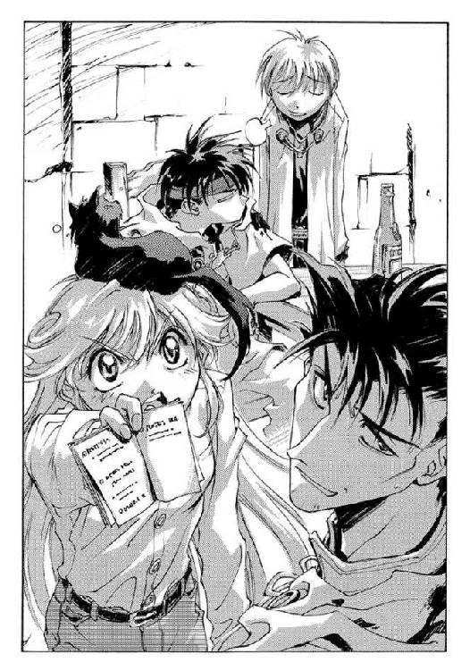
「それって──つまり......ようするに......」
自分が気づいたことの意味に加えて、改めてほかの意味も気づいたのか──声が次第に尻すぼみになっていく。最後には、単なる口の中でのもごもごしたうめきになって、そのまま彼は言葉を切った。
横で人差し指をぴっと上げ、クリーオウがあとを続ける。
「つまり、素人になっちゃったってこと？」
「そういうことだ」
「......マジクと同じくらい？」
「それ以下だ」
オーフェンは吐き捨てるようにそう言うと、またサルアに向き直った。
「熱衝撃波はおろか、そよ風ひとつ起こせそうにない」
苦々しく告げる──
サルアは冷静な眼差しでこちらを見ている。身体の傷は治っているが、着ているものはもとの、血塗れのぼろ服。例の神官兵たちと同じ服であるわけだが、ところどころ破れているせいか、あるいはもともとそうなのか、彼が着ているものは多少ラフになっている。
見ていると彼は、ため息をついた。じっとこちらを見据えていた視線を天井へと外して、おどけるように頭をかく。
と、彼が口を開いた。
「鍵は、夜明けだ。夜だけが、俺たちの味方になってくれる......朝になれば見張りの交代がやってきて、俺の死体がなくなったことに気づくだろう。夜明けだ。夜明けまでに、俺たちは敵よりも一歩先に進まなけりゃならねえってわけだ」
てきぱきと、説明をしながら──
彼は懐から、さきほどの神官兵から取り上げた警棒を二本取りだした。そのうちの一本を、こちらに放ってくる。
くるくると回転して飛んでくるそれを、オーフェンは受け止めた。長さ三十センチほどで、内部が中空にでもなっているのか、かなり軽い鉄棒である。が、手に覚えた感触はかなり硬い。受け止めた手のひらがひりひりするほどに。それを手にして言葉を待っていると──サルアはため息が鼻から抜けきらないうちに、言ってきた。
「さっきも言ったが、看守の交代は夜明けだ──それまでここは安全なんだが、見つかるまでのんびりしてるわけにもいかねえ。とっとと地上に出て、街に逃げ込もう。あまり気は進まねえが、俺の実家に隠れれば、半日は稼げる。いくらクオといえども、俺の兄貴にはそうそう手荒な真似もできないんでね」
ぽかんとしているこちらに、にやりと笑みを作り、器用なウインクまで見せる。警棒を手に、血に染まった神官服を着たこの殺し屋は、軽くあとを続けた。
「......ま、こんな事態だ。使える武器から使っていこうぜ、相棒」
◆◇◆◇◆
「どぅおぅぉぉぉぉぉぉぉいぅぅぅぅこぉとぉぉだぁぁぁぁっ!?」
「訳・どういうことだ!?──と言ってるんだと思うけど、そんなこと言われたって、ぼくだって分かんないよ」
ドーチンはごくごく当たり前に、そう答えた。小屋の真ん中に、なぜか見つかったたき火の跡のようなものを棒でつつきながら、顔を上げる。
小さい明かりが精一杯照らしている部屋の中で、兄が、意味もなくくるくると回転していた。剣を手に、独楽のように回ってから──
「つまり、謎はここだ！」
びし、と剣先を玄関へと向ける。
玄関はただ玄関で、つまるところ最後に見た時に玄関であった通り、改めて見てもやはり玄関だった。小屋はほとんど山小屋のような造りで、入り口から内部が隔てられているわけではない。扉を開ければそのままこの部屋である。玄関マットも傘立ても、ポストすらない。
ただの玄関である。
「............？」
意味が分からずにドーチンが訝っているとボルカンは、
「──と見せかけて、ここだっ！」
と言いながら、すすっと、切っ先をベッドのほうへと向ける。どうやら、回転していたせいで指し間違えていたらしい。
（別にいいけどね）
本気でどうでもいい心持ちで、ドーチンは視線をベッドへと移した。
無人のベッドである。そこを占領していたはずの女の姿はない。
「あの女、どっこに行きやがったのだ!? 確かにあの女のあまりの横暴さに、昨日俺様が小言を言ったわけだが、少しばかりきつい言い方をしたくらいで夜逃げするとは、最近の若い女は社会人としての根性が足りん！」
「社会人は関係ないと思うけど」
たき火の跡は、部屋のほぼ中央に残っている──小さな丸い、灰の山である。街を覆っている黄塵と混ざって、レモン色になった冷たい灰。ちょっとやそっとの火力では、なにを焼いたにせよこれほど完全な灰にはできないはずだが。
棒でつつき回しても、灰の中には燃えかすひとつ残っていないようだった。
と──ふと思い出して、ドーチンは口を開いた。分厚い眼鏡越しに、兄ボルカンは、いまだ剣をベッドに向けたまま硬直している。
「それはそれとして兄さん、あのひとになんか小言なんて言ってたっけ？」
「俺様の英雄的な寛容の精神を以てしても、あのクソアマの甘ったれた横暴さには、いつまでも無言ではいられなかったのであるっ！」
仰々しくわめいてから、ぐっと拳を握りしめる。調子が出てきたのか、ボルカンは素早くベッドの上に飛び乗った。土足のまま仁王立ちになり、続ける。
「ひとつ！ 自分はこの小屋で寝ても覚めてもごろごろしているくせに、この民族の英雄・マスマテュリアの闘犬ボルカノ・ボルカン様に買い出しをさせるなど、あまりにも不届き！ まず間違いなく、世界を破滅させる陰謀のひとつである！ よって本来ならば、桜吹雪で遭難し殺すところである！」
「ふうん」
そんなもので世界が破滅するならば、倦怠期の夫婦のせいで何百万回カタストロフが起きるか分かったものではないが、ドーチンは特になにも言い返さなかった。
「そしてまたひとつ！ 恐るべきことにあの自堕落女狐、言うにことかいてこのロンリー・ダンディズム・ボルカノ・ボルカン英雄様に向かって、あんたなんの役にも立たないんだから、せめて誰かに言われる前にゴミ捨てでもしてたほうがいいわよ、などと言語道断なことを！ これはまさに、謎の呪文で呪い殺すべき失言！」
「へえ」
ロンリー・ダンディズムってなんのことだろうとは思いつつも、ドーチンはやはりあえてなにも言い返さなかった。
ボルカンは絶好調のようで、再びびしりとポーズを取ると、風もないのにマントをたなびかせた。マントの下から手で煽っているのが見えたが。
「そう！ そういった数々の悪行に対し、敢然と正義を行うべく定められた出生のこの俺は、あの女に最後通告を告げたのである！──『どうかお願いですから、もうちょっと待遇をよくしてくれろ』と！」
「......ホントに少しばかりしかきつくない言い方だね」
どう答えたらいいものか、本気で分からずにドーチンは、思ったことだけを口にしていた。
結局のところ、どうということでもないのかもしれない......
ドーチンは棒で灰をかき混ぜながら、頭の隅で考えていた。つまりは、あの女の人、アザリーとかいう黒魔術士は、この街で──魔術士を見れば即座に手近にあった得物を持って殴りかかってくるような人々が集まったこの街で、買い出しや街の中の偵察やらをやってくれる者として、自分たちを連れてきたのだ。魔術士が、よりによってこのキムラック市に潜伏しようというからには、それなりの事情があるはずだろうし、突然姿を消すようなことがあっても、さして不思議ではない──明日あたりに死体で発見されることも含めてだ。
ただ問題は、彼女がいなければ、彼らもこの街から出ることができないということである。
この街に入る時には、彼女が持っていた、ドラゴン種族の物らしい転移装置で入ってきたのだ。ただしあの転移装置では、神殿にまでは入れなかったらしいが。よって、街を出る時にもあの装置がなければどうしようもない──地人がふたり、身分証もなにもなしで街の検問を通過できるはずもなかった。
兄が、そこまで冷静に考えていたのかは定かではないが──
一応、ことの重大さだけは理解しているようなので、ドーチンはほうっておくことにした。
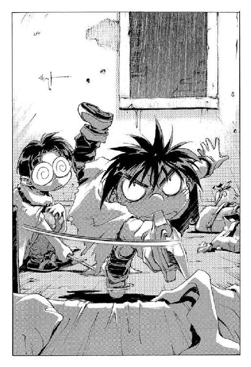
「まあどのみち、できることと言えば、待つことしかないんだけどさ」
ため息混じりに彼はつぶやいた。あの黒魔術士が帰ってくるのを待つしかない。
こつん、と棒の先に変わった感触を覚えて、ドーチンはかなり驚いた。もう完全に灰しかないと思っていたのだが──灰の積もっている場所から少し離れたところに、黒っぽい破片のようなものが落ちている。
ドーチンはその破片に見覚えがあった。いびつな三角形の、黒い革の破片。
（あの本の、表紙の隅っこのところだ......燃え残ってたんだな）
本を燃やすなんて。
（やっぱり野蛮だね。人間は。最高の教育を受けているはずの魔術士ですら、こんなことをするんだから......）
ぶつぶつと文句を言いながらドーチンは、その破片を棒の先で弾いた。
◆◇◆◇◆
地下だから、だろうか。通路はひどく汚れていた。
掃除などされた形跡もなく、床と言わず壁と言わず、黄塵が張り付いて薄汚れている。砂のこびりついた跡がまだらになった壁は、彼らの行く手を左右からせばめている。あまり広い通路でもなく──天井も低い。無論、明かりらしい明かりもない。
サルアが詰め所で見つけた携帯用のガス灯が、ぼんやりとした光の輪を広げていた。その輪に先導されて、進んでいく。
無言で──というわけでもなかった。
「ここはな、すべてのキムラック教徒が聖地と崇め──祈り、信じて、ずっとやってきた。そんな街だ」
先頭のサルアが、隣についてきているクリーオウに説明してやっている。
「そしてその中心となり、またすべてでもあるユグドラシル神殿。誰がこんな馬鹿でかい神殿を作ろうなんぞと言い出したのかは知らねえが、そいつに賛成しちまった連中ってのも相当に頭が膿んでたんだろ。建造に三十年。これでもハイペースな工事だったとは思うけどな。今から約百年ちょい前、この神殿は完成した。もちろん、深刻な債券を山積みにしてだけどな」
と、警棒の先で軽く壁をたたいてみせる。乾いた音が、通路に響いた。
サルアの背中をなんとなく見つめながら、オーフェンは口を開いた。これは別に、隣を歩いているマジクに説明しようとしてというわけではないが──金髪の少年はずっと、あえてこちらを無視するように口をつぐんでいた。
なんにしろ、オーフェンはつぶやいた。
「当時の教主、ラモニロック。この名前は代々継承されてきたもので、現在の教主もおんなじ名前だが......」
へっ、とサルアが鼻で笑い──なんのことだか分からずにオーフェンが視線で探ると、サルアは肩をすくめて、邪悪を祓うような仕草を見せた。聖印というものである。
「......？」
結局、サルアが笑った理由を説明しようとしないので、あきらめてオーフェンはあとを続けることにした。
「とにかくラモニロックは、一説ではドラゴン種族たちからこの聖地を守るために、砦としてこの神殿を建てたのだとも言われている。当時はまだドラゴン種族がいたからな。ウィールド・ドラゴン種族が、支配者として俺たちの祖先を保護していた......魔術士狩りの、前の時代だ」
「実際に神殿が完成したのは、魔術士狩りの後、てことになったけどな」
サルアが肩をすくめたせいで、明かりが揺れた。その明かりを追うように、レキがぐるりと頭を回している。
その子ドラゴンに頭を踏んづけられて、クリーオウもまた同じような動作をしていた。のんきに質問の声をあげる。
「その時に、さっきの、おっきな地下道も作ったの？」
オーフェンも、それは聞いておきたかった。注意して耳を傾け、促すようにサルアを見続ける。
死の教師は──半ば予想はしていたが──にやりとするだけで、なにも答えはしなかった。ただ、
「あれは人間が作ったものじゃない。そのくらいは、気づいてただろ？」
「じゃあ、何者が作ったんだ」
苛立ちまじりにオーフェンは聞いたが、サルアはやはりにやついたままだった。一応、答えるだけは答えてくる。警棒で自分の首筋あたりを軽くたたいて、気楽な調子で。
「お前さんは、魔術の最エリートだ。なら分かるんじぇねえか？」
「分かってたら、いちいち聞かねえよ」
「じゃ、気づいたことをみんな並べてみな」
胸中で舌打ちしてオーフェンは、言葉を切った。それでも歩きながら、言われたとおりにしてみる──
気づいたことは、あまり多くない。
地下道が、とてもではないが、人間の技術力で作れるものではなかったということ。
かなり古いこと。ひょっとすればこのキムラック市そのものより、さらに古いかもしれないこと。
だとすれば、キムラック市が、この地下道の上にわざわざ築かれなければならなかった理由があるのかもしれないこと。
地下道の造りが、天人の遺跡にどことなく似ていること。ただし、天人の建造物であるならば、あそこまで荒れ果てているはずがないこと......
オーフェンは、大きく息をついた。
「分かった」
「おう」
振り返らずに、サルア。オーフェンは半眼になって続けた。
「お手上げだってことが分かった」
「そうかい」
警棒の先で背中をかきながら、サルアはそれだけをつぶやいた。そして。
──あとは、だんまりのまま、歩くだけだった。
「......なにそれ？」
きょとんと、クリーオウが声をあげる。
「答え、教えてくれないの？」
そでを引っぱって問う彼女に、サルアはやはり顔を向けもしない。ただふらふらと歩きながら、
「若い奴らってのは、すぐ模範解答ばかり欲しがるんだな。もうちっと、自分で考えようって気にならねえのか？」
「なに、それっぽいこと言ってるのよ。あの馬鹿みたいな地下道の由来なんて、模範も規範もひとつの答えしかあるわけないし、考えたって分かるわけないじゃない」
いつもの口調で軽々と、普通では跳び越えづらい場所をすっ飛んでいく。クリーオウが学校の廊下で雑談でもしているような気軽さで、口を尖らせるのが見えた。
「それに、若い奴らって、あんただってわたしたちとたいして歳、違わないでしょ」
「そう言ってもらえると嬉しいねぇ」
額にぺしりと手のひらを当て、うなるように言うサルアに、ぼそりとクリーオウがつぶやく。
「......やっぱ、なんかおっさんくさいわ、あんたって」
「嬉しくないねぇ」
一言前とまったく同じ調子で、サルアがうめいた。額に当てていた手をはなすと、どこにしまっていたのか警棒をくるりと持ち直す。
「ひょっとして......」
唐突に、言い出したのは──マジクだった。
横を見ると、少年はやはりこちらには顔を向けないまま、漠然と口を開いている。考えながらしゃべっているのか、どこか虚ろな口調で、彼はつぶやいた。
「やっぱり、あそこは天人の遺跡なんじゃあないですか？」
「おい、言っただろ。あそこはあまりに──」
オーフェンは言いかけたが、マジクは言葉を止めなかった。突然立ち止まって、伏し目だったまぶたをさっと見開く。
「そう。壊れすぎてるんです。でも、だからあそこは天人の遺跡じゃないなんて理由にはならないんじゃないですか？ そうですよ」
マジクは初めてここで、こちらに視線を返してきた。興奮したのか、大きく息をついてから、続ける。
「壊れすぎているから天人の遺跡じゃないってわけじゃなくって──天人の遺跡をも、あそこまで破壊するような、なにかとんでもない出来事があったのかもしれない。あの地下道は古いものなんだから、かりにどんな大事件だったとしても、ぼくらが知らなくても不思議はないですよ。人間がこの大陸に来る以前のことかもしれないんですから。そうですよ──アレンハタムの遺跡だって、そうじゃないですか。あれだって地下は残っていたけれど、地上部分は全部、魔獣に根こそぎ吹き飛ばされて......」
「そうじゃなくって」
オーフェンは、かぶりを振った。熱っぽくこちらを見ているマジクを真正面に、ゆっくりと否定する。
「そうじゃなくて、地上部分をすっ飛ばされてもなお、地下が無傷で残ってたんだよ。天人が砦の類を地下に作るのは、そのほうが防御が固いと思ってたからだ。実際それだけに、地下部分はとんでもなく強固に作ってやがる。しかも、あの地下道ほどに大規模な代物なら、どれだけ強力な呪符が為されていたか、想像もつかねえよ。それを破壊するなんざ、いったいどんな化け物だってんだ」
特にどうというわけではない。知っていることを言っただけのつもりだったが────
返ってきたのは、賛同でも否定でもなく、ただ沈黙だけだった。
「？」
分からずに、疑問符を浮かべる。見ると、クリーオウが沈黙しているのは、びっくりしたようにサルアの表情を見ているからである。マジクもそうだった。死の教師が見せた表情の変化に、呆気に取られているふうだった。
そして、サルアが黙っているのは────
マジクを見ているせいだった。片眉をつり上げ、仰天と賞賛が混じり合ったような眼差しを見せている。
口笛を吹きながら、サルアはいきなりマジクの肩に手を回した。
「ほぉう？」
と、やたらにやにやしながら、クリーオウのほうを見やっている。目をぱちくりさせているクリーオウの額をちょんと警棒で突いて、彼は言った。
「ほれ。言わなくたって、考えりゃ分かるもんだろが」
「......え？」
最も驚いた様子なのは、マジクだった。怪訝そうに表情を歪めて、ぺたぺたと馴れ馴れしく背中をたたくサルアを見つめている。サルアはなぜか上機嫌に、マジクをずるずると前列に引っぱると、足で蹴ってクリーオウを退がらせた。
「正解者は、ランクアップして上座にいかなくちゃな」
わけの分からないことを言って、マジクから手をはなす。
「なんで蹴るのよー」
ジーンズから足跡をはたき落としつつ、クリーオウが文句をつける。といって、もとよりそのジーンズは黄塵のせいでひどく汚れており、あまり意味はなかったが。
と──
ようやくサルアの言っていたことが分かって、オーフェンはすっとんきょうな声をあげた。
「今のが、正解だったのか!?」
「そうさ」
にやけた笑みを浮かべて、サルア。ガス灯のてっぺんについている吊り輪を警棒に引っかけて、ぶらぶらさせている。
「およそ三百年前に天人が建造した、最大にして最後の砦なんだそうだ。名前は......なんだったかな。忘れたが。規模がでかすぎて、埋めることはおろかふさぐことすらできやしねえ。なにしろところどころ粉々になっちまってるせいで、雨やらなんやらで地盤が弛むと、わけの分からねえ場所にぽっかり出口ができちまったりするんでな。道に迷ったりぐずぐず落ち込んでたり死の教師に追っかけ回されたりしてなけりゃ、この神殿街と外輪街もフリーパスみたいなもんだ」
「......その嫌みな性格直す、いい方法知ってるぜ」
険悪に、オーフェンはうなり声をあげた。サルアは、またにやりとしたあとに改めて、興味津々という表情を作ってみせた──かなりわざとらしく。
「へえ？ どんな方法だ？」
「『わたしは死の教師です』って札を首から下げて。《牙の塔》のグラウンドから裏口まで鼻歌付きで散歩してみろよ」
「遠慮しとくよ。おっさんくさいと言われたまんま死にたくないんでね」
へらへらと笑いながら言う、彼の仕草にかちんときたというわけではなかったが。
突然、猛烈になにかが引っかかって、オーフェンはサルアの手首をつかまえた。ぐっと力を込めて、ささやく──
「魔術士は、無意味に殺人なんかしない」
忘れかけていた頭痛が、脳を焼いた。その痛みに表情がひきつる。
ただサルアは、笑みを浮かべたままである。ただし、ただ面白がるだけだったそのにやにや笑いに、どこか冷笑のようなものが混じるのが分かった。
「......本当に？」
なにもかもを見透かしたように、それだけを聞いてくる。
頭痛とともに、右手首に激痛が走った──
「くっ......！」
息を詰まらせて、オーフェンはその場にくずおれた。サルアの手首を握りしめていた右手は、今は死んだ蜘蛛のような形で指をいびつに縮め、痙攣している。制御のもどってこない右手に舌を打ち、オーフェンは床にその右手を置くと、左手を強く握り込んで、思い切り右手を殴りつけた──
「オーフェン!? なにやって──」
クリーオウが隣にかがみ込んでくる。オーフェンは無視して、右手を殴りつけた痛みに顔をしかめた。右手の痙攣はそれで止まったが、今度は身体が脱力して動こうとしない。頬骨のあたりで吹きだしている、涙の気配とでもいうような不快感に、彼は必死で抗った。振り払うようにまぶたを閉じて、自分でもよく分からない問いを投げかけている──
（今のは......殴られた右手と殴った左手、どちらの痛みだったんだ......？）
誰に対してでも、自分に対してでもない。ただ闇雲に投げつける。それは投げ捨てるのと変わらなかったのかもしれないが。
やがて、彼は──
ふう、と吐息した。額に浮かんだ汗をぬぐいながら、クリーオウの心配顔を見返す。
「......大丈夫だ」
「本当に？」
彼女の声は疑わしげだった。勢いよくかがみ込んだ時に、頭から振り落とされたレキが、足下できょろきょろしている。子ドラゴンは、居心地のいい寝場所からいきなり放り出されて、結局事態が把握できなかったのか、意味もなくでんぐり返りを始めた。
それを少し見てから、胸に抱き上げて、クリーオウが聞いてくる。
「汗びっしょりよ、オーフェン」
「ああ」
そのうちのいくらかは涙だ。だから大丈夫。
そんなことを声には出さずに付け加えて、オーフェンは立ち上がった。
「ここんところ、落ち着いて眠れてなかったからな。疲労のせいで、立ちくらみが起きたみたいだ」
まだちかちかしている目を押さえて、オーフェンはかぶりを振った。目を開くと、クリーオウの手を引いて立ち上がるのを助けてやってから、サルアのほうを向く。
「......話をもどすが、天人の遺跡をあそこまで破壊する存在ってのは、なんなんだ？ 知ってるような口振りだったが」
「......さあて......」
はぐらかすようにサルアがつぶやくが──
オーフェンは直感的に、彼がなにもごまかそうとしていないことに気づいていた。むっとした表情のクリーオウを手で押さえ、いまだ混乱した眼差しであちこちを見回しているマジクを一瞥し、サルアへと視線をもどす。
この若い死の教師は、すうっと、笑みを消した。
冷たく、厳しい眼差しをこちらへと返してくると、
「お前さんら、俺らを心底なめてるんじゃねえのか？」
「あん......？」
意味が分からずにオーフェンは、聞き返した。ただ、相手の態度の変化に、さりげなくクリーオウを退がらせる──そしてついでに、床に転がっている警棒を見る。さっきの発作で落としていたのだ。
だがどちらにせよ、サルアが即座に襲いかかってくるという気配はなかった。サルア自身もまた、警棒にガス灯を引っかけて、戦闘体勢にはほど遠い状態である。彼は静かに告げてきた。
「俺たちが、自分たちの一生を賭けてまでやっていることがなんなのか......考えたこともないんじゃねえのか？」
ただそれだけを、押し殺した声で言ってから、くるりときびすを返す──
そして再び、通路を進み始めた。マジクの腕をひっつかみ、引きずるようにして。
「............？」
オーフェンはクリーオウ（ついでにレキも）と顔を見合わせると、怪訝な視線をぶつけ合わせた。一応、警棒を拾ってからサルアのあとを追いかける。
サルアはかなり足早になっていた。大股ですたすたと進みながら、静かな声で続けている。
「さっきも言ったが、考えてみるんだな──はっきり言って俺は、てめえら魔術士がなにかを考えてるところを見たことがねえ。俺ぁ別に、良き血がどうとか、呪いの血統だとか、魔術士の血筋なんてもんにさほど興味はねえんだよ」
と──しばし、沈黙。
「......結局俺は、外の世界を見過ぎたんだろう。あの腐れ教主の言葉を借りればな。魔術士を絶滅させる。それがここの教義だが、俺は別にそんなもんを意気に感じて剣を取ったわけじゃねえ。退屈すんのが嫌だったからだ。考えることをしようともしない奴らってのは、見てて退屈なんだよ。だから──ちったぁ、考えろ」
ンなこと言われてもな。と胸中で独りごち、オーフェンはうなった。言っていることは分からないのでもないのだが、だからといってどうしろというんだという気もする。
（なんだってんだ？ だいたい、なんでいきなりこんな歩きながら、小言じみたことをまくし立てて──）
オーフェンは、そこで気づいた。思わず、ぴたりと足を止める。
クリーオウもつられて立ち止まり、後ろのふたりの足音が消えたことに気がついたのだろう。サルアもまた、そこで進むのをやめた。
ぎろりと、振り返ってくる──腕をつかまれているマジクが、ぞっと後ずさりしようとするほどの形相で。オーフェンがただじっとそれを見返していると、サルアは、はっと我に返ったように、ほおをひきつらせた。
そして、じわじわと変形するように......顔が、皮肉なにやにや笑いへともどっていく。
「だ、だから......つまりだな」
咳払いして、彼はマジクの腕をはなした。
「なんでもかんでも人に頼ろうとするんじゃねえ。特に俺に。めんどくさいから」
だが、オーフェンは聞かなかった。びしと指をさし、
「ようするにお前、説教とかするのが異様に照れくさいんだろ。教師のくせに」
「うるせえなっ！」
サルアは赤面して、そう叫んだ。ぶつぶつと、言い直す。
「俺の兄貴がホンモノの説教屋だから、俺はああはなりたくねえんだよ。て......立ち止まったのはいいタイミングだったな」
と、通路を見上げる。
そこはもう既に、通路の終わりだった。天井に穴が、そして壁に、鉄製の鎹を打ち込んだようなはしごがついている。
「ここは？」
クリーオウの問いに、サルアが即答した。
「......この穴を上がれば、神殿の最下層に出られる」
「最下層って、じゃあ最下層より下のここってなんなのよ」
「最下層の下は、地下牢だ。そういうもんだろう」
憮然と答えるサルア。
クリーオウはこそこそと、こちらに耳打ちしてきた。
「ねえ聞いた？ オーフェン。今のって、なんかそこはかとなく哲学っぽかったわよね。あの人あんなこと言ってたけど、実はお説教好きなんだと思うわわたし」
「......聞こえてるみたいだぞ」
実際、耳打ちしているわりには声がでかいため、サルアには丸聞こえのようだった。こちらを見て、怒ったように肩を震わせている。
「まあいい。俺から昇るからな」
サルアはそう言うと、はしごに手をかけた。通路の天井が低いため、数段もない。床に立っていても、せいいっぱい身体を伸ばせば天井の穴に手が入る。
「ああ、そうそう──」
と、昇りかけてサルアは、なにか思い出したように声をあげた。
「そう言えば。さっきの話、例の地下道が、砦だった頃の名前。思い出した」
「どうでもいいわよ、そんなの」
あっさりとクリーオウが言うのだが、サルアは、まあ一応聞いておけと言いながら手を振った。そして、ゆっくりと──つぶやく。
「そう。確か......ラグナロク砦、だったな」
そんなことをもごもごと言いながら、サルアははしごを昇っていった。天井の穴から姿を消し、やがて手だけを出して、こいこいと振る。オーフェンは、マジクやクリーオウと順々に目配せしてから、はしごに手をかけた──
「待ってくださいよ」
と、マジクに呼び止められ、オーフェンは動きを止めた。マジクはすたすたと近寄ってくると、
「ぼくが先に行きます。お師様、身体の具合がよくないんでしょう？」
「............」
オーフェンは、無言で、はしごをつかんでいた手から力を抜いた。滑り落ちるように、手がすとんとはしごをはなれる。
「すいません」
結局マジクは軽く会釈のような礼をすると、先にはしごを昇っていった。クリーオウが──今度はきちんと小声で、耳打ちしてくる。
「......どうしたの？」
「いろいろ複雑でな」
頭痛ではなく、胸のあたりにちくりとした痛みを感じながら、オーフェンは苦笑した。
「おい」
と──いきなり、天井の穴からサルアが逆さまに頭を出してくる。彼は自分の口に人差し指を当てると、
「まだ構わないが、もうそろそろ静かにしてくれ。最下層には──今までとは違って、人がいる可能性もあるからな」
「分かった」
あとは無言だった。クリーオウを先に昇らせてやり、オーフェンは最後に通路をあとにした。黄塵の渦巻く闇が遠くへと続いていた、その通路を。
昇ってみると、いきなりそこは小部屋である──それも、恐らくは物置かなにかだろう。せまい場所に四人押し込められることになって、さっそくクリーオウが不平をまくし立てるべく口を開いたが──オーフェンは素早くそれを手でふさいだ。もう厄介事は、頼まれても増やしたくはない。
（......なんとかなりそうだな）
腕力では敵わないため、指を噛んでこちらの手を外そうと奮闘するクリーオウのことを別とすれば、オーフェンは段々と安堵しつつあった。なにはともあれ、色々と気にくわないところもあるサルアだが、彼がいればここから脱出するのも難しくはあるまい。とりあえず、この神殿街に入ることは成功したわけである──行きすぎて、いきなり神殿の中に入ってしまったというのは計算外だったが。どのみちオーフェンには、この神殿など興味なかった。ただ、恐らく......
（アザリーは、ここに用事があるんだろう......まず、間違いなく......）
彼女が、前に言っていた──彼女の目的が、チャイルドマン教師のかつての足跡を追うことにあるのなら、ここには必ず来るはずだ。かのチャイルドマン教師が、なにか目的があって十年前にこのキムラックに侵入したということは間違いがないようであるから。
オーフェンは、半ば落ち着いた心持ちで、部屋の中を見回した。ごちゃごちゃと、木箱やら棚やらが並んでいる、ほこりっぽい小部屋である。地下牢への、秘密の出入り口というところか──まあ、さすがに神殿の地下に地下牢があることなど、余人には知られたくないところだろう。どういった種類の人間を投獄するためのものなのかは知らないが。
と──
彼は、また苦笑した。マジクに出し抜かれるのも分かる──頭の働きが鈍っているのかもしれないなと、オーフェンは嘆息した。投獄されるのはどういった人間か。決まっている。自分たちのような人間だ。神殿への侵入者を投獄し、そして尋問するための場所だったのだろう。そして、ついでに──尋問のあとは、ダストシュートから地下道へごろん、で片がつく。
地下道に、かなり風化した白骨が落ちていたことも思い出して、オーフェンは思わず憂鬱な思いを味わった。いったいどのくらいの昔から、そんなことをしていたのだろう。
（まあ別に、どうでもいい......）
こっそりと目を閉じて、オーフェンは嘆息した。どうでもいい。このユグドラシル神殿も、地下道も、サルアも、どうでもいい。この神殿から脱出したら、もう外は夜明けに近いだろうか。夜明けが鍵だという、サルアのせりふが頭に浮かぶ。夜明けまでに一歩先に進まなければならない。
（俺にとっての一歩ってのは、結局......）
それがなんであるかは明らかだった。地上へ出たならば、すぐにアザリーを探さなければならない。寝ている暇はない──
サルアが無言のまま、部屋の出口となる扉を開けた。
マジクが無言のまま、そこから出ていく。
クリーオウですら無言のまま、それについていった。
〝鍵は、夜明けだ......〟
胸中で繰り返しながら、オーフェンも扉をくぐり──
次の瞬間、はっとして、力の限り絶叫した。
「な・にぃぃっ!?」
小部屋を出ると、そこはかなり広い通路になっていた。いや、通路というよりは柱廊とでも呼ぶほうが雰囲気は近い。壁のある柱廊である（矛盾しているが）。実際に大理石であるはずはないが、白大理石のような、白い壁。壮麗な柱が無数に連なっている。その柱も白。どの柱にも一本につき一枚ずつ、大理石画がかけられている。床は、ぴかぴかの藍色に磨き出され、立っていても足下に顔が映りそうなほどである。ただ、ここにも充満している黄塵のせいで、どこかくすんではいたが。
あまり明るくはない。明かりがあちこちに規則的にかけられた古びたランタンだけだ。
驚くほど天井は高い。ふと見ると──小部屋を出て左手に、巨大な門。高さ三メートルほどはある門だが、扉はイバラが無数に巻き付いたような模様の格子である。そして正面には階段。広く、緩やかで高い、精密な石段。
その石段に、まるで卒業写真でも撮るようにずらりと──
数十人の神官兵が並んでいた。
◆◇◆◇◆
彼女の言葉を彼は待った。そして......
「その刃は我を貫くことはできぬ」
唐突といえば唐突に、彼女はそんなことを言ってきた。思わず、剣の柄を握る手に汗がにじむ──その銀色の刃に、なにがしかの魔力があるというわけではない。
ただの短剣である。例えば、目の前にいるこの女が日常的に使うような、強力無比な魔力を備えているわけではない。人の手にあり、人の腕を剣の刃へとつなぐ、ただの金属の道具に過ぎない。
（そもそも自分は......彼女を殺せるつもりでいたのか？ こんなもので......）
意味のない問いが、彼の胸を締め付けた。意味がないということならば、剣であろうと、魔術であろうと、彼女に対抗する力が自分にないことなどは分かり切っていた。
ただそれでも──相対したかった。ただその程度のことだったのかもしれない。
打ちひしがれながらもあくまで優雅に、彼女はその指をこちらへと向ける......
「我は汝をこの世から消す」
「............」
彼は、答えなかった。
不思議と恐怖が消えるのを感じる。彼女の明確な言葉のせいで。最初から、予想していたことだったのかもしれない。あるいは、期待すらしていたのかもしれなかった。自分のことだけは分からない。彼は、抱きしめるように両手で短剣を握りなおした。
「......あなたが産みだしたのです。わたしを」
外に出すことができた言葉は、自分でも驚くほどに無価値だった。
「あなたに滅ぼされるのならば──」
「汝らは滅びぬと言ったであろう」
落ち着いたイスターシバの声音に、彼は苦笑した。
「生まれ変わりを信じるのですか？」
「神々に呪われ、運命を解かれた我らは、神の法則をなにひとつ信じることなどできぬ。無論、転生もだ」
彼女の指が──ゆっくりと、躍った。
細い指が、いずれも休むことなく、ただしまったく同じ動きをすることなく、踊るように歌うように、空をなぞる。その指先に小さな光が点り、その光が、はっきりとした銀光の軌跡を引いていた。
その軌跡が、複雑な図形を描き出している。
魔術文字──ウィールド・ドラゴン種族の沈黙魔術の媒体となる、混沌の文字。
その文字を幾重にも描きながら、彼女がつぶやいた。
「汝を産んだ者として、我は、汝には最高の教育を施したつもりだ。汝はすべてにおいて、それを最大限に活かしてくれた──魔術はもとより、およそ現在の人間種族で、知識、行動力、理解力、先見性......いかなる分野でも、汝を超える者はいない。だがはるかな未来ならば──我らの助けなしでも、汝らの子孫は独自にその段階へと進んでいるやもしれぬ。いないやもしれぬ。それは重要なことなのだ、我が子よ」
◆第五章 その魔術が彼を殺すと
敵の数は二十四人──
数えたわけではないが、オーフェンはほとんど反射的にそう判断した。すべて同じ格好の、似たような体格の神官兵たちが、二十四人。彼がとっさに目で捕らえたのは、彼らの持っている武器である。自分が今握りしめているものと同じ、金属の警棒。
その姿が、二十四だった。
「なんともはや──」
状況のわりには軽い口調で、サルアがつぶやくのが聞こえた。わざと相手に聞かせるように声高に、ただしあくまで独り言のように。
「夜明けも地上もくそもなかったな。この《詩聖の間》の前で待ち伏せとは、思い切ったことをするじゃねえか」
「貴様の思い切りには負けると思うがね、サルア・ソリュード......」
答えてきたのは、神官兵の誰でもない。
オーフェンは身構えながら、視線だけを横にずらした。真正面の、神官兵が並んだ階段ではなく──大きな格子の扉のほうへと。格子は複雑に絡まりあい、扉の向こうはのぞけないが。
格子の下に、軽く背中を預ける格好で、腕組みしてこちらを見ている男がいる。ぱっと見て、思わず目を疑うような大柄な男である。奇妙な鎧を上半身につけた、悪魔のような形相の大男......
オーフェンの脳裏に、一昨日メッチェンに聞かされた言葉が甦った。
『「身長百九十センチ、体重八十キロそこそこ──オレイルに比べれば、どうにも痩せ気味ね。四十歳の人間としては」
「顔は、いつもなんだか怒ってるみたいな目つきしてる。でも彼は怒らないわ。決してね。肩が異様に盛り上がってるわ──首がみっつある、とか言われてたこともあったかしら。でも伊達の筋肉じゃないわよ。平気な顔してバットをへし折るのを見た時は、さすがに我が目を疑ったけどね......」』
メッチェンの描写は、おおむね正しかった。冷たく厳しい眼光が、うなりをあげて──とまではいかないが──前方に投げ出されている。頬骨が突き出て、それ自体が仮面のような顔つきである。寝ぼけた芸術家の手による彫刻のような奇妙な体躯に、これまた奇妙な形の鎧を着けている。
オーフェンは、訝った。
異様な鎧だった。魔術士が戦闘装備として開発したようなプロテクト・アーマーなどと比べても、奇怪な形状をしている。軽量級から最重級までのプロテクト・アーマーは、それぞれの用途によって形状が異なるが、どれにも共通する特徴がある。つまり、身に着けていても動ける、ということだ。
骨格を身体の中心に持つ人間の構造では、身体の外側に装甲を持つ、つまり昆虫のような外骨格の動きをすることはできない。完全に腕を覆う鎧を身に着けていた場合、まず腕を動かすことはできないのである──これを解消する方法はない。各種プロテクト・アーマーは、戦車戦用の最重級も含めて、関節を自由に動かせるような遊びが入っている。防具としては明らかに弱点となる部分だった。つまりは、隙間なのだから。
人間が身に着ける防具は、必ず不完全なものになる、ということである。
とはいえ──その大男が身に着けているものは、そういった問題とは次元が違うほどに、滅茶苦茶な構造をしていた。急所を覆っていないのである。その深紅の甲冑が守っているのは、背中と胸だけだった。死角となる脇腹や、下腹はむき出しになっている。腕もまったく無防備なため、動きやすいことは動きやすいのかもしれないが、上腕に攻撃を受けただけで戦闘不能になりかねない。首も同様だった。さらには、翼のように突き出した、背部の装甲──これは明らかに邪魔である。これがあるおかげで、長大な武器を構えることは不可能だろう。剣がせいぜいである。ついでに遠くから槍でここを突かれただけで、バランスを崩してしまいかねない。
およそ考えられる限り、機能性のない防具だった。ちなみに下半身は──むしろ上半身に比べて装甲が着けやすいはずの下半身は、厚手の布でできた、ただの白ズボンである。
その男は、のそりとした動作で、格子から背中をはなした。腰に下げている剣が揺れるが──音はしない。
大男は横一文字だった口をほんのわずか、隙間を開けた。歯の色も分からない程度の隙間である。
「魔術士と結託するとは......どういうことなのだ？ サルア」
「思い切りは必要ねえな」
ぺっ、と黄塵が混じった唾を吐き捨てて、サルアがそちらに身体を向ける。オーフェンはそれを見ながら、じわじわと後退していた──
（状況が厳しすぎる......）
退路はない。
前に進むこともできない。地上への唯一の道であるらしい階段は、二十人以上からなる神官兵で埋められている。武装した大人数の兵士を相手に、こちらの対抗策となるはずの魔術は使えない。
かろうじて、なにがしかの切り札になり得るのは、クリーオウとレキの魔術だけだが、それを伝えようと手を伸ばしても、
（あれ？）
オーフェンは、嫌な予感を覚えて眉根を寄せた。数秒前までいたところに、彼女がいない。こういう時は、いつも同じパターンで──
「おいっ！」
彼は叫んで、気楽にすたすた進み出していたクリーオウに手を伸ばした。ぎりぎり、髪の毛をつかむことに成功する。
「痛っ」
小さく毒づいて、びっくりしたように振り返ってくるクリーオウに、オーフェンはささやいた。
「どこへ行くんだよ、どこへっ！」
「どこって......」
クリーオウはレキを頭に乗せたまま、無表情にこちらを見ている神官兵の、一番端を指さした。
「あそこから──」
と、すうっと指を移動させる。神官兵のすべてをなぞり、そして、格子扉の前の、大男までを指さしてから、ぐっと拳を握る。
「あそこまで、この子に頼んで分子レベルで沸騰させて消失してもらうには、全員が見渡せるところに行かないと」
「そーゆうことをするなぁぁぁっ！」
あっけらかんと言ってくる彼女に、オーフェンは怒鳴り声をあげた。頭上のレキと同じポーズでビビった様子のクリーオウが、不思議そうに声をあげる。
「なんで？」
「ここはまだ地下なんだぞ！ 上の神殿が全部がれきになって落っこちてきたら、それをどう防ぐつもりだったんだよ！」
「それは──」
クリーオウは言いかけて、少し口ごもってから、改めて手をぽんと打った。
「わたしたち、きっと日頃の行いがいいから、どうにかなるわよ」
「......こーゆう場所でこんな目にあってる時点で、日頃の行いにはケチがついてるような気がするが」
オーフェンはどうしようもない疲労感を覚えながら、それだけを言った。クリーオウの返事は待たずに、後方へと引きもどす。やはり、あてになりそうにはない。
顔を上げると、サルアが半眼でこちらを見ていた。
「......もういいか？」
「ああ」
手を振って、オーフェンは答えた。と、サルアは警棒で首筋をかきながら、大男へと向き直っていった。
大男は終始、無表情のままのようだった。サルアと視線が合うのと同時、再び口を動かさずに言ってくる。
「この前話をした時には、泣いて許しを懇願していたように思ったのだがな」
「さあ。俺は覚えてねえな──なにしろ片っ端から爪を折られて、喉と舌に針を刺されたもんでね。なんだって言ったかもしんねえな。しろと言われりゃ、あんたに求婚だってしたかもよ。にしてもだ......」
と、サルアはちらりとこちらに視線を投げた。そして、今度は大男にというよりも、ずらりと並んだ神官兵たちに向けて、聞こえよがしな声をあげる。
「結託で思い出したんだが、俺としては、あんたがなにと結託しようとしているのか知りたいところだね、クオ。なんとなく、なんとなくだが、あんた、毎週欠かさずにやっていた最終拝謁を、半年前からは──」
刹那。
オーフェンが視界にとらえることができたのは、宙にきらめく、きらきらとした光の筋だけだった。その光が、サルアに触れたように見えた、一瞬──
「────っ!?」
唐突に、サルアの身体が宙に浮いた。弾かれるように勢いよく、最も近い壁にたたきつけられる。その手から警棒が落ち、床に跳ねて高い音を立てた。
「なんだ？」
オーフェンは驚きながらも、彼に駆け寄ろうとした。たいしたダメージはなかったようだが、背中から壁に打ち付けられて、声が出せないらしい。床に落下して、ふらふらと起き上がりながら、サルアはこちらに手をあげた。手のひらを広げて、制止の合図を送ってくる。
よく分からないながらも、オーフェンは足を止めた。警棒を構え、クオと呼ばれた大男に──遠く離れたその男に向かって戦闘体勢を作る。もともと短い武器は得意であったし、警棒を使った訓練もこなしてはいる。だが。
（今のは......なんだった？ それが分からなければ、どうしようもねえぞ......）
光の筋は、もうどこにも見えない。現れたのと同じ唐突さで、いずこかへ消えてしまっていた。なんとか立ち上がったサルアは、こちらに背を向けてクオをにらみ据えている。彼が言ったことをふと思いだし、オーフェンは胸中で繰り返した。
（最終......拝謁？）
ネイム・オンリーが死亡前に言っていたことだ。意味は分からないが。
（拝謁？ 最高位人物に会うことだろう？ だが──誰にだ？ キムラック教会での最高位人物といやあ、教主ラモニロックに決まってるが......その程度のことなのか？）
考えても答えは出ない。いや、出るのかもしれない。オーフェンは、横目で神官兵たちを警戒した。全員まだ動いてはいないが、命令さえあれば、即座に跳びかかってきそうな隊列にはなっている。
考える時間は限られているようだった──ここで答えが思いつかなければ、そのまま人生が終わってしまうようなきわどさを彼は覚えて、内心、寒気を感じる。死ぬわけにはいかないが......
意地を張っていても仕方のないことというのが、世の中には、ある。そんな虚無的な思いが自然にわいてきた。
熱くなっていく身体を、冷や汗が冷ましていく。そんな堂々巡りを続ければ、体力だけを地味に消費していくことになる。うんざりとなって、オーフェンは唇を舐めた。虚無の連鎖を断ち切るには──はさみが必要だ。強いはさみが。例えば、希望のような。
（残念ながら、そこまで楽観的な状況でもないみたい、だな......）
黄塵が渦巻いている......
その中で、クオがまたゆっくりと動き出すのが見えた。彼が動くよりも先に、彼が動こうとしている空間から黄塵が逃げていく。そんな錯覚じみた光景を、オーフェンは瞳に映していた。不格好な深紅の鎧姿で、腰の大剣ではなく、後ろ腰から短剣を引き抜く。
長さ三十センチほどの短剣を、それよりはるかに長い右手にぶら下げるようにして、大男は初めて表情らしきものを見せた──笑み。頬と額の皮だけが歪んだ、暗く、深い笑み。
「お前がなにを言ったのか、教えてやろう......」
つぶやくクオ──確かクオ・ヴァディス・パテルとか、メッチェンは言っていたか──の背後で、例の無意味な翼状の装甲が、かすかに開いたようにオーフェンには見えた。そして......先ほどちらりと見えた、空中にきらめく光の糸のようなものが、いっせいにクオの周りで広がりはじめる。
光で編んだ網のように広がっていく、その〝翼〟に唖然としながらも、オーフェンはクオのつぶやきを聞き逃してはいなかった。
「お前はな、こう言ったのだ。メッチェンとともにわたしを殺して、すべての教義を大陸に公開するよう、教主様に進言するつもりだとな」
ざわ......と、今までまったくの無言だった神官兵たちに、波紋のようなざわめきが起こる。水面だけに薄く広がり、そして──一度広がるだけで、あとは消えていってしまうような。
「へぇ。俺も拷問されてる時は、意外といいこと言うみたいだなあ」
サルアは落とした警棒を拾い上げると、それを器用にくるりと回転させた。しっかりとそれを握り直し、言い放つ。
「魔術士と......いや、聖都以外に住む人類のすべてと対立するような今までのやり方じゃあ、キムラック教会はいつか滅びる──哀れなドラゴン信仰者みたいによ、ちりぢりになって顔を隠して生き延びるのがせいぜいだ。それが分からんわけじゃないんだろうが？ どのみち、あんたがあの教主を傀儡にしていることは分かってるんだ。あんたさえ排除すれば、あとは簡単に──」
そこまで言いかけて──サルアが、ぷつりと声を切る。オーフェンも、思わず悪寒を覚えて身体をすくませた。
クオ・ヴァディス・パテルが笑っていた。
ただの笑みではない。笑い声をあげるわけでもないが、哄笑の上に哄笑を重ねたような、異様にひきつった笑みを、その大男が浮かべている。目をつり上がらせ、ぱっと見には憤怒の形相にも似た笑みである。
そして、なにも言い返してはこない。なによりも異様だったのは、そのことかもしれなかった。
多少、意気を縮小させながらも、サルアが続ける。無理にでもにやにやして。
「さて、俺もおもしろいことを教えてやるよ、御大。ここにいるのはな──」
と、彼はこちらを示した。そのまま続ける。
「《牙の塔》のキリランシェロ。聞いたことはあるよな？ あんたが退けたっていう、あのチャイルドマン・パウダーフィールドの生徒だ。あんたがあの大陸最強の魔術士とどう戦ったか、俺はオレイルに聞かされて知ってるんだぜ！」
サルアがそれを告げた瞬間、クオの顔面からその異様な笑みが消えた。そして、さっきと同じ、サルアの周囲に光の筋が閃く──
だんっ！
強烈に床を蹴って、サルアは後方に跳んでいた──つまり、こちらに。サルアが立っていた場所を、光の筋はきらきらと通りすぎていく。
無事、床に着地して、サルアが余裕ありげに鼻を鳴らす。
「へっ──あんたご自慢の〝緋魔王〟も、来るタイミングさえ分かってりゃ、どってことねえ」
「呪われた魔術使いと手を結んだお前には、もはや我らが同胞たる資格なし......」
サルアの言葉は無視して──クオは短剣を掲げた。
「死ね」
およそ神官には似つかわしくない単語を吐き出すと、それが合図か、階段の神官兵たちが静かな足取りで動き出した。一段一段踏みしめて、顔の下半分を覆っているマスクですら隠せない、明らかな殺意をたぎらせている。
「おい、キリランシェロ......」
サルアはクオを見据えながらも、ぼそりとこちらにささやいてきた。
「クオは俺が潰す。お前は、あっちの神官兵たちを全員相手しろ」
「............」
あまりと言えばあまりにも無茶な指示に、オーフェンは思わず絶句していた。が、なんとかあえぐように言い返す。
「──て、お前、ちょっと待てよ!? ンなことができるわけ──俺は今、魔術が──」
「そいつを悟られないよう、うまくやれ。神官兵はこの街から外に出たことがない。魔術士との戦闘経験がほとんどねえんだ。魔術を恐れている......念のため言っとくが、クオひとりのほうが手強いんだからな」
「ねえ、オーフェンどうするの!?」
大声で、クリーオウが叫んでくる。彼女の代わりに、頭上のレキがぱたぱたと手（前脚）を振っていた。
「オーフェンてば、魔術使えないんでしょ!? ねえねえどうしようか！ わたしも剣を持ってきてないし、オーフェンも武器らしい武器なんてもってないのよね！ ひょっとして、打つ手がなんにもないんじゃない!? ねえオーフェン、なんか答えてよ──」
まったく危機感なく、ただやたら響きわたる声で叫ぶ少女を呆然と見ながら──
頭を抱えて、オーフェンは泣き声じみた声を漏らした。
「......この......クソアマは......」
「まあ......なんとかうまくやってくれ」
あきれかえった声で──多少絶望感も混じっていたか──、サルア。
サルアはそれを言ってから、再びクオへと向き直っていく。クオは背中から、滝のような光の筋を広げていく。輝く翼のように。光だけで作られた巨大な翼は、その無骨な大男を天使のように──あるいは悪魔のように──見せていた。
オーフェンは、とりあえずそちらはサルアに任せることにして、神官兵のほうに身体を向けた。サルアとは、背中合わせの形になる。ぱたぱたと気楽に駆け寄ってくるクリーオウに、彼は毒づきかけた。
「お前はな──」
と。
駆け寄ってくるクリーオウの向こうで──
オーフェンは、全身からさっと血の気が退くのを覚えた。思わず警棒を取り落としそうになりながら、叫ぶ。
「マジク！ お前──やめろ！」
接近してくる神官兵たちに向けて、マジクが両手を合わせて構えを取っていた。精一杯の真剣な面持ちで、標的をにらみ付けている。小柄な少年の周囲に、膨大な構成が展開されているのを、オーフェンは悪夢でも見ているような心地で理解した。
集中したまま、マジクは言ってきた。
「建物を崩さない程度にやればいいんでしょう？ クリーオウには加減ができなくても、ぼくはできる──」
身体の前で合わせた少年の手に、ぼっ、と純白の火が点る。神官兵たちが、意気をくじかれた様子で立ち止まるのが見えた。マスクのせいで表情はよく分からないが、瞳が恐怖に染まるのだけは分かる。
オーフェンは立ちすくんで──ここまで発動しているのなら、今から妨害するほうが危険が大きい──、クリーオウを引き寄せた。魔術が暴発した場合、なにが起こるか分からない。
そうしているうちにもマジクは、追いつめられた表情で構成に力を与えていく。炎がひときわ輝き、少年は両手を前方に投げ出して叫んだ。
「我は放つ光の白刃っ！」
膨れ上がる光熱波が、一直線に神官兵たちを打つ──
直前に。
マジクのすぐ目の前に、光の壁のようなものが出現した。輝きとは違う、ただ水流のようにきらめくだけの、光の筋が幾重にも重なり合った──壁。
光の筋は複雑に重なり合い、入り組んだ紋様を空中に描いていた。マジクが放った光熱波を、真正面から受け止め、そして、爆裂させる。
白い炎の炸裂は、術者自身──マジクを巻き込んでいた。轟音とともに燃え上がる衝撃と熱風が、少年を包み込む。悲鳴は聞こえなかった......
「マジク!?」
クリーオウが叫んで、そちらに駆け寄っていった。オーフェンも、あとに続こうとしながら──ふと足を止める。彼はぞっとしながら振り返った。クオ・ヴァディス・パテルの姿を視界に収める。
クオの鎧から展開された光の翼が、途中で消えている。マジクの眼前に出現したのは、間違いない、その翼の先だったはずだ。そして、銀光の網が描き出していた紋様は......
「魔術文字......？」
その事実は、オーフェンの理解力を超えた。キムラック教徒の殺し屋が、ドラゴン種族の魔術を使う？
クオはただ静かに嘲りを浮かべている。
「イ・フ・リ・ー・ト。魔人の鎧だ」
こちらに背中を向けたまま、サルアがつぶやいてきた。
「お前らの魔術は通じねえんだ、あの御大には」
オーフェンはその言葉を受け止めて、ふっと──記憶の淵からなにかが浮上してくるのを予感した。望んだものではなく、ただ自然に思い出す。メッチェンと出会った、カミスンダ劇場。そして、あの鎧。
なんの機能性もない、深紅の鎧。キムラック教会は、天人の遺跡を秘匿していた......
「......天人の遺産か！」
オーフェンは叫んだ。現在、大陸に残っている天人の武器の大半は、かつての魔術士狩りの際、魔術の力を持たない普通の民衆に、魔術士と戦う力を与えるために創造されたものだ──天人の魔術によって造られたその武器類は、人間の魔術をはるかに凌駕した力を持っている。魔術を完全に防ぐ防具の類があったとしても、まったく不思議ではない。
クオはなにも答えてこない。光の翼が、もとにもどった。薄いカーテンのようにたなびいて、クオの周囲を巡る......
と、サルアが駆け出した。警棒を水平に構え、叫ぶ。
「奴は俺がやる！ 神官兵をたたけ！」
クオに突っ込んでいくサルアに背を向け、オーフェンはマジクのほうを見やった。クリーオウが助け起こしているが、意識がないらしい。間近で熱衝撃波が炸裂したのだ──ぱっと見ただけでも、あちこち焼けただれて、着ていたマントも黒こげになっている。薄い胸が激しく上下しているのが見えた。まだ死んではいない。
クリーオウが、その身体を揺さぶりながらわめいている。
「マジク！ ちょっと、なんで返事しないのよ！」
と──
魔術の脅威がなくなったことを悟ったのか、神官兵たちがふたりのほうに殺到しようとしているのが見えた。
「くそっ！」
オーフェンは毒づいて、警棒を手に神官兵の部隊へと突っ込んだ。二十数名いる部隊のうちの五、六人が、こちらへと向き直る。
（全部を引きつけるのは無理か......）
神官兵に取り囲まれて、マジクとクリーオウの姿が見えなくなった。甲高いクリーオウの罵声だけが聞こえてくるが、様子は分からない。
一番手前にいる神官兵が、こちらより先に打ちかかってくる──得物は同じ。警棒である。斜め上から振り下ろされてきたその警棒を、オーフェンは右肘で受け止めた。骨まで響くような痛みが走るが、それは無視する。舌打ちする間もなく、彼は右腕をあげたついで、警棒の柄のほうで相手の眉間を痛打した。一瞬に切り取られた視界の中、神官兵の目が反転して白くなるのが、確かに見えた気がする。
ぐらりと倒れる相手の手から、オーフェンは空いている左手で警棒をもぎ取った。クリーオウたちがいたほうをちらりと確認し──群がった神官兵たちの姿しか見えなかったが──右手に持っていたほうの警棒を、床を滑らせてそちらに放ってやる。
「クリーオウ使え！」
短く叫んだ。混戦の中、彼女がそれを拾えるかどうかは分からないが、うまくやってくれるかもしれない。
もう既に打ち殺されているかもとは、考えないことにした。
どのみち、もう既に次の相手が、こちらに打ちかかってきている──
今度はふたり同時だった。左右から、真ん中を少し空けるような形で。警棒を転がしたために姿勢を低くしていたオーフェンは、そのまま身体を投げ出した。床を一回転し、起き上がった時には──そのふたりとはすれ違っていた。
振り返るような暇はない。周囲すべてが、もう敵に囲まれている。
起き上がろうとした頭を狙ってくる警棒を、左手の警棒で受け止める。金属が打ち合う耳障りな音が鼓膜を突き抜けた。相手の動きが止まったその一瞬に、完全に立ち上がる。真正面で、再び警棒を振りかぶるその神官兵に、オーフェンは迷わず突進した──相手の腕の内側に入って、激しく息を吐き出す。
同時に、敵の身体の中心に肘をたたき込む。
ふたり目が、倒れた。
（きりがねえ......！）
どちらを見ても、敵がいる。
再び左右から、前後から、時には上下から、神官兵たちに取り囲まれ、オーフェンはほとんど我を忘れて身体を動かしつづけた。黄塵にかすんだ視界に、白い人影が無数に連なっているような錯覚を覚える。打ち、防ぎ、もう何人倒したのか──あるいは何回倒されたのか──数えるのも忘れた頃に、唐突に......動きが止まる。
「............？」
警棒を手に、オーフェンは、ふと立ちつくしていた。それまでは、ひっきりなしの攻撃に対して、反射的に戦闘を続けていたのだが──
攻撃が、なくなったのだ。
見下ろすと、四人──いや五人。神官兵が倒れている。少し離れたところに、最初に倒したひとりが。横を見ると、クリーオウがいた。彼の位置から、やはり少し離れている。マジクをかばうような格好で、レキを頭に乗せたまま、ちゃんと拾ってくれたのか、あるいは自分で誰かから奪い取ったのかもしれないが、警棒を構えている。その足下にも三人、神官兵が床に沈んで固まっていた。少しびっくりしたような表情で、クリーオウがこちらを見ている。
（なんだ......？）
状況が、よく分からなかった。残りの神官兵は、いつの間にかこちらを遠巻きにしている。残った人数は、十四人になるか。こちらを取り囲むように輪になっているが、襲いかかってはこない。彼らの目に、困惑のようなものが浮かんでいるのがうかがえた。
十四人。十四？
（ひとり......足りない？）
オーフェンは気づいて、さらに見回した。すると──
背後にひとり、神官兵が立っている。
「なにっ!?」
彼が振り向くと同時、その神官兵は恐ろしく速い挙動で警棒を打ち下ろしてきた。跳び退くようにそれをかわして、オーフェンは構えなおした。が、相手のほうが速い──
クリーオウが呆然と見つめていたのが彼ではなく、その神官兵のことだったのに気づきながら、オーフェンは再び打ってきた敵の警棒を弾き返した。また後方に跳ぶ──ふりをして、今度は左に跳ぶ。
跳びながら、彼は右手に持ち替えた警棒で、神官兵の右ももを狙った。が、それには相手も気づいていたようで、空振りして終わる。
「オーフェン！」
クリーオウが、叫んでくるのが聞こえる。返事する暇はない──それどころか聞いている暇すらない！
「ちいっ！」
同じ武器では勝てない。そう踏んでオーフェンは、警棒を投げ捨てた。拳を固めて相手を見据える。マスクに下半分を隠された顔。こちらを見返してきている眼。
ブラウンの瞳。
（............？）
オーフェンは一瞬なにかに気づきかけたが、結論が出るよりも早く、相手が攻撃に出てきた。動き出す一瞬前、警棒を握る手をゆるめ、再び握るのが見えた。簡単なフェイントである。直後、真正面から彼女は警棒で突いてきた。
反撃するよりほかはない。オーフェンは身体を大きく反転させた。突き出された警棒の外側へと身体を回転し──その勢いに逆らわずに、敵の耳のあたりに裏拳を放つ──
刹那。
「オーフェン！ その人は──」
クリーオウの声に、オーフェンは拳を止めた。敵も動きを止めている。警棒を突き出したその神官兵と、それを打とうとしていたオーフェンは、結果が出る直前の体勢で、ぴたりと硬直していた。
「その人は......」
のろのろと、クリーオウが言ってくる。
「わたしを、助けてくれたの......」
その神官兵が、にやりとしたようだった。
そして警棒を持っていた手を、ぱっと開く──甲高い音を立てて、警棒は床に落ちた。その音に紛れて、彼女がつぶやきを発するのが、オーフェンには聞こえていた。
「来たれ──」
ふっ......と、開いている彼女の右手に、なにか空気が固まるような気配が集中していく。
数秒遅れて、その手の中に、長い棒のようなものが出現する──いや、長大な剣。見覚えがある。
いつの間にか、彼女はマスクをむしり取っていた。こちらは、もはや見覚えどころの話ではない。いたずらっぽい微笑が、こちらを向いていた。ぎょっとして、後ずさりしながらその名を叫ぶ──
「アザリー！」
「やっぱり来たのね」
彼女は短くそう言うと、剣──天人の造り出した変化の剣、月の紋章の剣を一閃して、身にまとっている神官兵の服の端を軽く切り裂いた。その刃に、無数の魔術文字が輝く。文字は膨らみ、彼女が裂いた服に転移した。服全体が、その光に溶けて消える。
次の瞬間には、彼女が着ていたものは、黒い戦闘服へと変化していた。前にも見たことのあるものだ。変化を終えたあと、彼女はこちらにウインクしながら、その剣を投げ出すように、床に突き立てた。まだなんらかの魔力が働いているのか──剣は石の床に、冗談みたいに簡単に突き立つ。
「でも、なあに？ その格好」
彼女に言われて──オーフェンは、唐突に意識した。ぼろぼろになって、泥やらなにやらで汚れた、白い上下。もとは修道服のようだったそれは、今では完全にボロ布の集合体になり果てていた。
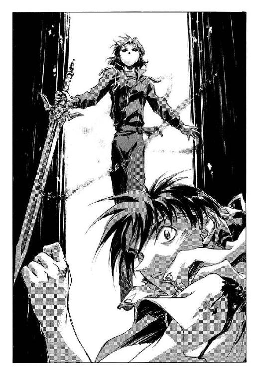
「あ、いや、これは......」
オーフェンは、ばたばたとその服を手ではたいた。たたいたところで落ちる汚れでもないのだが、そんなことをしている間に、アザリーが剣を床から引き抜き、その刃をこちらに向けた。あっと言う間もなく、その切っ先を服に当てる。
と、先刻と同じプロセスで、彼の服に光が移った。ぼろぼろの服が、着慣れた革のジャケットに変化する。
いつもの黒ずくめにもどったこちらを眺めて、アザリーが笑う。
「そっちのほうが似合ってるわよ。だいたいあんたって、白ってのが体質的に合わないのよね」
「そうそう。わたしも同意見」
ひょこっと横から顔を出し、クリーオウが同意する。マジクも抱えて持ってきたようだったが。
「ンなことは、どうでもいいだろ」
オーフェンは、バルトアンデルスの剣から身を退くように後ずさりしながら、思い出して周囲の神官兵へと視線を移した。彼らは、いまだ困惑を続けてはいるようだったが、それでもそれなりに状況を分析して、おおむね正しい判断を下したようだった。つまり──
とりあえず、こちらを皆殺しにするのだ。
いつもの格好にもどってオーフェンは、じりじりと近寄ってくる神官兵に向き直った。服が変化しただけなので、ドラゴンの紋章はない。武器もない。さっき警棒を捨てたことを多少後悔しながら身構える。包囲されているので、神官兵がにじり寄ってくるのは正面からだけではない。マジクの魔術を弾き返した、さっきの光の壁を思い出しながら、オーフェンは不安の味を噛みしめた。アザリーの魔術でも、あれと同じ結果となるのであれば──結局のところ、形勢不利は変わっていない。
が。
ぽん、と肩をたたかれて、オーフェンは思わず拳を落とした。向きやると、アザリーが剣を肩に担ぎ、気楽に笑っている。こちらを見つめているその瞳が──ちらと、足下へと下がった。
つられて、オーフェンもそちらを見る。と、アザリーの足下、先ほど彼女が剣を床に突き立てたところに、光の文字が輝きを発している。
彼女の黒い靴のつま先が、その文字を踏んだ。瞬間──
「うわああああああっ!?」
あがった悲鳴は、神官兵たちのものだった。全員、似たような悲鳴をあげながら、上空へすっ飛んでいく──恐ろしい勢いで、彼ら全員の足下の床が、それぞれ直径一メートルほどの円柱となって天井へと伸びていったのである。天井はかなり高い──十とはいかなくとも、八メートルほどはあるか。壁にかけられたランタンの明かりしかないため天井あたりはかなり暗く、あまりよくは見えないが。天井に激突するほんのぎりぎりまで円柱は伸び上がり、神官兵たちをぺしゃんこにする寸前、ぴたりと止まった。そして、アザリーの足下から文字が輝きを失う。
「飛び降りたっていいけど──」
彼女は円柱の上にいる神官兵たちに向かって、からかうような声をあげた。
「下は石の床よ。よく考えてね」
「......すっごーい......」
クリーオウが、感嘆の声をあげる。
アザリーは彼女の頭（とレキ）をぽんぽんと撫でつけながら、肩をすくめてみせた。彼女に、というよりこちらに言ってくる。
「わたしもかなり、この剣の扱いには慣れたのよね」
と──こちらの表情を見て、笑みを消す。彼女はやや寂しげな眼差しを投げてきた。
「......そんな顔しないでよ。確かに、わたしたちにはいわくありの剣だけど──道具は道具よ。賢ければ、相応に使い方を選ぶことができるわ」
オーフェンはかぶりを振って、関係ないことを聞いた。
「いつ、ここに侵入してたんだ？」
「わたしもあなたに同じことを聞きたいわね。多分......あなたと同時くらいだったんじゃないかしら」
答える彼女を、オーフェンはじっと見つめていた。ごくなにげなく、間近に立っている彼女を。アザリー。天魔の魔女。自分の姉。
ずっと──ずっと、追いかけてきた女。
「俺は──」
彼は声を出そうとして、そして、肺に痛みを覚えた。彼女を見ていて、まぶたがしびれる。考えようとして、頭痛がぶり返してきた。なにをするにも、そうだ......
（結局、彼女のことに関しては、俺は苦痛しか感じられないんだ......）
言うべき言葉はもう分かっていた。言うべき場所はどこでもいい──言うべき時は、今しかない。オーフェンは口を開いた。彼女の姿はもうない。
（......？）
わけが分からず、彼は目をぱちくりさせた。ずっと見つめていたはずだったのだが、彼女がいつの間にかかがみ込んでいたことに気づかなかった。見下ろすとアザリーは、クリーオウからマジクの身体を受け取り、あちこちに触れて傷の度合いを調べている。
「アザリー？」
オーフェンが聞くと、彼女は──当然マジクのことを聞かれたのだと思ったのだろう。一番ひどい腕の火傷を調べながら、言ってきた。
「急いで治癒させないと危ないわね。でも......」
「でも？」
クリーオウが、きょとんと聞き返す。オーフェンは、うなずいた。
振り返る。もとより忘れていたわけではなかった。
神官兵を押し上げた、十四本の円柱が防風林のように立ち並んでいる向こう──黄塵の霞の中から、光の翼を開いた巨人が歩いてくる。
満身創痍のサルア・ソリュードを片手で引きずって、無言で歩いてくるクオ・ヴァディス・パテルを見つめて、オーフェンはアザリーの言葉を聞いていた。
「彼が......そんなことをする暇をくれるなら、ね」
アザリーがやるにせよ、クリーオウがレキに頼んでやらせるにせよ──治癒蘇生の魔術は時間がかかる。外傷をふさぐだけならば簡単だが、今のマジクのような重傷を治すには、治癒させる間、かかりきりにならなければいけないはずだ。
（マジクの奴を見捨てて、三人がかりで襲いかかれば、ちったぁ楽に戦えるかもな）
最悪の状況から、ここまで回復した──三対一にまで。これをまたもとのレベルにまでもどすのは、馬鹿げているといえば馬鹿げている。
皮肉げに考えて──オーフェンは、頭に手を当てた。と、皮肉な思いがいっそう強まる。アザリーといえばアザリーらしい。彼女は服を変化させる際に、バンダナを忘れていた。
あるいは、わざとかもしれないが。
だが、魔術がない自分は、彼女が望んでいる者にはなれないだろう。
キリランシェロには。鋼の後継には。
──チャイルドマンの代わりには。
「オーフェン」
「キリランシェロ」
同時に──アザリーとクリーオウ、同時に呼ばれて、どちらの名前に反応したのかは自分でも分からないまま、彼は振り返った。肩をすくめてやる。
（......俺に噛みついてくるなんざ、可愛い生徒じゃねえか）
笑って、彼は決心した。もとより、決めるほどのことなどなかったのだが。
ゆっくりと歩いてくるクオにあごをしゃくり、
「奴は、そんな暇はくれないだろうな。暇なら、俺が作る。マジクの奴を回復させるのに、どのくらい時間がいる？」
「五分」
アザリーがつぶやいて、そして構成を編みはじめる......
すっくと、クリーオウが立ち上がった。こちらの横について、拾った警棒をしっかと構える。
「わたしが、オーフェンのサポートするからね」
同時に、少女の頭の上で、レキが頭を上げた。ただ、クオの鎧が天人の魔術によるものであるならば、ディープ・ドラゴンの、しかも赤ん坊レベルの魔術など防いでしまう可能性のほうが高いが......
オーフェンは、それについては言わなかった。クオを見据えたまま──クリーオウの頭を、ぽんとたたく。そして、
「ああ。サポートが必要だ」
「......オーフェン!?」
半ばびっくりしたように、クリーオウが叫ぶ。声に歓喜のようなものが溢れているのを感じながら、オーフェンはあえて気づかないふりをした。
クオの歩みが──
止まる。緋色の鎧を着けた、翼持つ死の教師は、引きずっていたサルアの身体を、ぼとりと床に落とした。サルアは、やはりまだ息はあるようだが、意識を失っているらしい。治ったばかりの身体に、無数の創傷が見える。クオが手にしている短剣でつけられたものだろう。
オーフェンは口を開いた。
「お前が、クオ・ヴァディス・パテル......か。死の教師の、頭領だったっけかな」
クオは答えてこない。
構わずにオーフェンは続けた。
「ネイム・オンリーを殺したのは、俺だ」
はっ、と──クオではなく、背後のアザリーが顔を上げるのが気配で分かったが、振り向くことはしなかった。
クオは無表情のままである。
オーフェンもまた、その感情のない顔を真似するように、表情筋から力を抜いていった。
「てめえまで殺すとは言わねえ。時間を稼がせてもらうぜ」
クオが、笑った。夜が明ける。
◆◇◆◇◆
その魔術が彼を殺すという確信が──
にわかに曇ってきて、彼は眉根を寄せた。彼女が虚空に文字を重ねるごとに、彼女へと集まっていくパワーは、圧倒的なプレッシャーとなってこちらへと反射してきていた。が、その力はむしろ......
「やめてください！」
彼は、弾かれたように叫んだ。短剣を下ろして、続ける。
「あなたに、そんな大魔術を使うような余力が、残っているはずがない──」
「素晴らしい閃きだ。我が子よ」
イスターシバの声は、満足げだった。
笑みすら浮かべていたかもしれない──ただ、急速に乾燥し、ひび割れていく彼女の顔には、表情らしい表情など望むべくもなかったが。
ドラゴン種族の司祭は、その手元に集束していく力と引き替えに、自分自身の身体を崩壊させていた。顔だけではない。鮮やかな緑色に、輝きすら感じさせていた髪も縮れ、塵となって崩れていく。自重に耐えきれなかったのか足首が折れ、彼女はその場にひざをついた──が、魔術文字を描く指だけは、決して止めない。
そして言葉も止まらない。
「まったくもって上出来だ。そう。これは我が生涯で、二番目に強大な魔術となろう」
「そんな......」
彼はただ震えながら、それを見ていた。動くこともできない──構成されていく魔術文字に立ち向かうなど、不可能というよりも、あり得ないことだ。ウィールド・ドラゴン種族の中でも──始祖魔術士を別とすれば──最強最大たる司祭、イスターシバの力。
文字は幾度も描かれ、なぞられ、そして放たれて──一点に集中していく。すべて銀の輝きで描かれた、ひとつとして同じではない文字たち。その上で、ひとつとして一定の規格から外れることのない文字たち。
彼はただ力なく見つめるだけだった。崩れゆく、その女たちを。
「この文字は汝を殺す。最小単位まで分解し、そして数百年の後の時代に、再構築する」
光の文字は刻々と大きくなっていく。そして激しさも増していく。
「我らの力では時間転移など望むことはできぬが、擬似的にそれを実現することはできる。これは汝にも良い教訓となろう」
その輝きが、ついに広間を満たした瞬間──
彼は、絶叫した。全身を貫く恐怖と畏怖に、失禁寸前になりながら泣き叫んでいた。分からない。なにを恐怖していたというわけでも、ましてやなにを畏怖していたというわけでも。
一体なにを予想しているのか......
自分はあの文字に殺される──それならば死の恐怖だろう。
彼が最も愛し、最も恐れていた女が、力なく崩れていく──それならば死への畏怖だろう。死という、厳然たる終止符への。
その絶叫が終わる頃には、光も消えていた。
彼は立っていた。そして彼女は──ボロくずのように──その場に、倒れていた。顔だけをこちらに向けて。背後には、もはやどこも似ている部分のない、自らの美しい肖像画を祭壇に背負って......
彼と彼女の、ちょうど中間あたりに、ひとつの文字が浮いていた。文字は音もなく、ゆっくりとこちらに、近寄ってきている。
だが、恐ろしく遅い。彼のもとまでとどくには、数分はかかるだろう。
イスターシバの、うめきにも似たつぶやき声が、広間にこぼれた。
「この文字が......我の、我の最後の魔術」
彼はなにも言わなかった。ただ、文字を見つめていた。
「この文字に触れれば──汝の身体は消滅し、そして数百年後、この大陸のいずこかの地に再生される。だが無論」
と、声が自嘲に化ける。
「無論、汝はこの文字を避けることもできるだろう......横を通り過ぎて、我にとどめを刺すのも容易であろう。我が子よ。汝は決断のできる男だ。ゆえに、決断を任せよう。いかなる決断であろうとも、我にとってはたいして重要ではない。いずれにせよ。我が死は避けられぬ。この砦は、我が種族の墓所としては申し分ない場所だ。死処で死に抗うことほど、無粋なこともなかろう」
なにを言っているのか、分からない──
何度も繰り返した言葉を、彼は再び叫ぼうとした。が、声が出ない。
いや。と彼はかぶりを振った。理解したくなかっただけだ、彼女が死ぬなど！
彼女はずっと、遺言をつづっていたのだ......
彼は文字を見据えたまま、動かなかった。彼女はそれに気づいたのか気づかないのか、ただひとりで続けている。
「だが、どういった決断にせよ、しばしの時をもらわねばならぬ。汝にはこれから、長い物語を聞かせなければならぬゆえ──」
◆第六章 物語が終って
夜明け前。
夜明け前だと直感的に、天魔の魔女アザリーは感じていた。無論、いまだ地下だというこの神殿の中に、そのような兆候があるわけではない。ただ、そう感じただけだ。思っただけかもしれない。
ただ、動き出しているのは間違いなかった。夜明けへ。
◆◇◆◇◆
メッチェン・アミックは夜明けを前に、路地裏に座り込んでいた──激しい雨に打たれ、虚ろに眼を輝かせる。
聖都に立ちこめる暗雲が、昇ったならば紫に燃えるはずの朝日を閉ざしていた。
戒厳令下の路地裏には、人の気配はおろか生命の吐息すら感じられない。雨に濡れ、冷たく固く、そして重くなっていく身体を抱きしめるように、彼女は傷ついた右腕にきつく布を巻き付けた。いつもは頭に巻いている、青い布。雨と血に濡れた今は、黒バラの色に染まっていたが。
◆◇◆◇◆
夜明けを知らず、マジクは闇の中で眠っていた。
なにが起きたのか分からない──ただ、閃光とともに彼は、ここに弾き飛ばされていた。
誰かが身体に触れている。激痛にすくむ彼の身体を、あやすようになにかの力で抱擁してくれる。
（ああ、そうか。このひとが、お師様の──）
まったく脈絡なく、彼はそんなことを思っていた。
◆◇◆◇◆
夜明けが見えないことがもどかしい。
サルアは混沌とした意識の淵から、無理やりに起き上がった。口蓋も鼻孔の奥も、ただひたすらに血なまぐさい。舌の上の、べたべたとした感触に吐き気を覚えつつ、彼は顔を上げた。うつ伏せに倒れていた状態から首を立てて、なんとか身を乗り出そうとする──両腕はどちらもほとんど言うことを聞いてくれなかったが。
「ここでは──駄目だ、キリランシェロっ！」
喉から暖かいなにかがこみ上げる。胃液でないことだけは、間違いないだろうが。
「《詩聖の間》だ......その門が開けば、クオは威力のある武器が、使えな──ぐぁっ！」
吐きかけていたその暖かいものは、胸のあたりで支えさせられた。後頭部をクオに踏みつけられて、サルアの意識は再び濁っていった......
◆◇◆◇◆
夜明けは彼を戦慄させていた。
なにがどうというわけではない──ただ、全身の皮膚の内側で曲がった針金がのたうつような、きりきりした違和感がうねっている。もう夜が明ける。
「《詩聖の......間》？」
サルアの言葉を繰り返し、オーフェンはその痛みをなんとか振り払った。詩聖の間──
「あの、門の向こうか？」
クオが立っている向こうに、高くそびえる格子の門。格子が複雑に絡まり合い、中をうかがうことはできないが、かなり物々しい代物だった。余人の知らない《詩聖の間》──神殿最下層──そのようなことをサルアが言っていたのを思い出す。なにかは分からないが、この神殿にとって重要な部屋なのかもしれない。
だがどのみち、扉はクオの後ろである。彼を突破しなければ、その《詩聖の間》とやらには入れない。
クオ・ヴァディス・パテルは光の翼を広げて、悠然とこちらを見据えていた。その目に隠すことのない殺意がのぞく。足下には倒れたサルア。その右手には、巨体には不釣り合いな短剣──どこからどこまでも、隙のない漆黒の剣。黒曜石から削り出されたような暗い光沢。不規則に渦巻く砂塵の中、その男は死をもたらす魔王のように、あるいは戦士を故郷へと導く精霊のように、堂々と立っている。
オーフェンは片目を半分閉じると、その男を視界の中心に据え、魔術の構成を編みはじめた。が、額をえぐられるような激痛を覚えて、すぐに中断する。
（やっぱり......駄目か）
魔術は使えない。血涙で顔面を染めたネイム・オンリーの死に顔が、目の前にちらついた。
「くっくっくっ......」
笑い声。クオである。顔面だけに収まってしまう小さな笑みで、彼は面白そうにつぶやいてきた。
「バルトアンデルス──月の紋章の剣、か。かつての戦乱の際、天人種族がドラゴン信仰者たちに与えた武器のひとつだな。多彩な魔術に対応するため効果を限定せず、多少なりとも刃で傷つけた物質を分解、再構成する。ただ、訓練されていない人間にとっては、その再構成を命じるための精神集中が難しかったために、戦中には実用に達しなかった。だが、そうだな。魔術士が使えば、制御は可能だな。皮肉な話だ」
と、肩をすくめる。
「ちなみに刻まれた文字数は千八十四字。大意はこうだ。我は始めにして終わりなり。そは時の魔物。いつでもほかのなにか......本格的に解析すれば時間もかかるだろうが、現存している物の多くは習作だ。武器としては魅力もない」
オーフェンはただ黙って、それを聞いていた。向こうも反応を期待していなかったのか、気にした様子もない。クオは軽い調子であとを続けた。
「......多少は意外だったかね？ お前たちは、天人種族の遺産を扱うことができるのが、《牙の塔》だけだと思っていただろうからな......だが、その遺産の力は絶大だ。我々は当然着目していたよ。独自に魔術文字を解析するのには、かなりの時間がかかった。遺跡の隠匿に関しては、王都も気づいていないことはないだろうが、今のところはなにも言ってきていない」
「キムラック教会は、運命の三女神信仰だろうが。神々から魔術を盗んだと伝説にあるドラゴン種族は毛嫌いしてるもんだと思ってたがな」
オーフェンは皮肉たっぷりに毒づいたつもりだったが、どうということでもなかったようだった。クオは、ふんと鼻で笑うと、
「我々も馬鹿ではない。有用なものは利用する。どのみち......ドラゴン種族は、ドラゴン種族だ。人類とは関係ない。好きなようにすればいい」
「そんな、話には──」
息を切らしながら、場に割り込んだ声は......
クリーオウだった。いつの間にかクオの左手に回り込むように走っている。小脇に抱きかかえていたレキを、投げ出すように掲げて、
「興味、なーし！」
途切れ途切れに叫んだ、少女の声の直後─クオの周囲に、霞がかった光が発生した。レキが緑色の目を見開いてそちらをにらんでいる。光はぱちぱちと音を立てて炎に化け、一瞬、振動した。
大爆発が起こる。
爆発の中、クオがその身体を翼で囲うのを確かに見て、オーフェンは駆け出した。燃えさかる火柱の中心にいる人影に向かって。
（翼を防御に使っている今なら、なにもできないはずだ......）
今なら、扉を開けられるかもしれない。
走りながら、叫ぶ。
「クリーオウ、そこの扉をぶち抜いてくれ！」
「オーケイ！」
買い物でも頼まれたような気安さで、クリーオウは手をあげた。くるりと素早く、門へと向き直り、彼女は──
弾き飛ばされた。
「きゃあああっ!?」
火柱から伸びた翼に打たれたクリーオウは、体重も軽いせいもあってか、かなり派手に床を転がった。巻き添えを避けるためだろうが、彼女が投げ出したレキは、ころんと別の方向に転がっていく。少女の身体は、長いブロンドが尾を引いて火の玉のように回転し、壁に激突した。ぎゃ、と短い悲鳴を発し、身体を伸ばして止まる。
床の上でレキが、目をぱちくりさせてから──ついでにもう一回転、自分から転がった。
「......なに!?」
目算が外れて、オーフェンはうめいた。それでも、足は止めずに走り続ける。その前方で火柱がふたつに割れ、クオが姿を現した。一方の翼を伸ばし、もう一方だけを身体に巻き付けて。
そちらの翼も音を立てずに展開し、クオは表情のない顔をこちらへと向けた。
（背中の装甲か......）
あまり意味のないことを、オーフェンは気づいた。背中についている、赤い二枚の板。そこからきらきらと筋を引いて、光の翼が広がっていた。よく見ると、板の先が崩れて無数の糸に変じている。宙にきらめいて見えるのは、その残像だった。糸を紡ぎ合わせて、翼を作っている。
足を止める余地はない──立ち止まれば、クオは間違いなくクリーオウのほうからとどめを刺すだろう。
だが逆に、接近してしまえば、そうそうあの翼も使えないはずだ。
駆け寄るこちらを見つめたままで、クオは持っている漆黒の短剣を上げた。その刀身に、左手をそっと添える。
（妙な構えだな）
オーフェンは訝ったが、相手の武器が短剣ならば接近するのに都合がいい。あと五歩だ......
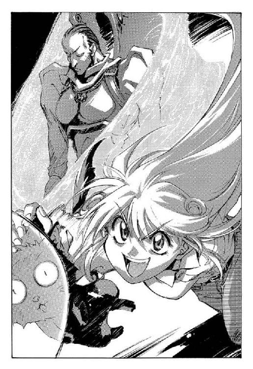
クオの指が刀身を撫でている。あと三歩。
ちらりと、口の端がめくれ上がり、白い歯が見えたような気がした。あと二歩。もう半秒もかからないはずだ。
刹那──
脳裏になにかが弾けて、オーフェンは横に跳んだ。光の翼ではなく、今度は黒いなにかが、その横を通り過ぎていく。
床に足がついてもオーフェンは立ち止まらず、さらに前方に身体を投げ出した。一回転してから体勢を立て直し、また後ろに跳ぶ。
そのすべての動きのあとを追うように、鋭い気配が迫ってきていた。鞭のようにしなり、黒い残像がちょうどＳの字を描いて床の石をえぐっていた。耳障りな音を立てながら、床に深い傷跡を引いてクオの手元までもどっていく。
「これは......」
後方に跳び退いたせいで、再びクオとの距離は開いていた。またいつでも跳べるように足を床に押しつける形で、オーフェンは身構えた。
クオの短剣が、長剣のサイズにまで伸びていた。いや、そうではない。
不敵に笑みを浮かべる死の教師の手には、黒い短剣の柄だけがあった。刀身が、複雑なジグソーパズルのピースのように、ばらばらになって宙に浮いている。ちょうど、もともと組み合わさっていた形を間延びさせているようだった。クオが柄をあげると、なんの問題もないように、刀身も上がる。大男はそれを振りかぶり──
オーフェンは素早く伏せた。頭上をその刃の群れが通り過ぎていくのを確認してから、起き上がる。
刃はさらに隙間を広げて、数メートルにまで延長されていた。クオが柄を引きもどすと、刃も縮む。すべて柄でコントロールできるらしい。彼は鞭を操るように、その刃の群れを振り回した。
流星群のように剣の破片が跳ぶ──
前後左右でうなりをあげる黒い刃を避けながら、オーフェンはクオの声を聞いた。
「これが、星の紋章の剣......ムールドアウル。貴重な一振りだ」
刃は伸びれば伸びるほど、当然その隙間を広げることになるのだが、刃の破片ひとつにでも当たれば、致命傷になり得る。破片の数そのものは限られているので、さすがに数十メートルまで伸ばせば怖くもないだろうが。
刃の破片はひとつひとつ、奇異な形状をしていた。文字のような。恐らくは、魔術文字だろう。
（くっそ......！）
間断なく襲いかかってくる刃を避けていくうち、次第にクオとの距離が開いていくのを、オーフェンは悲惨に自覚していた。距離が開けば開くほど不利になる──こちらには魔術がない！
いくら《塔》で体術による戦闘法を身に着けたといっても、魔術士のもつ技能のすべては、あくまで魔術が主体となる──主体であり、きっかけであり、決め手でもある。それがなくなったことがどういうことなのか、彼は悟って歯がみした。
（なにも......できない！ 無力だ）
彼は舌打ちして、かなり大きく跳び退いた。これでクオとの距離が、十メートルほどに開いてしまう。
と──星の紋章の剣とやらが伸びるのも、その距離くらいが限界なのか、クオの攻撃が止まった。流れるように剣の破片が集まっていき、刀身をだいたい腕の長さほどにするまで縮んでいく。
「この鎧と......剣がなければ、勝てると思っているな？ 魔術士よ」
クオのつぶやきとともに、背中の翼が優雅に羽ばたいた。
そして──死の教師は、足下に伏しているサルアを一瞥すると、
「その通りだ」
あっさりと認める。
どうでもいいことを──と、胸中でののしりながら、オーフェンは上がっていた息をなんとか落ち着けようと胸をさすった。
クオは静かに続ける。
「この男が、我々に反逆しようとした理由、お前にも聞かせてやろう。今の体制のままではキムラック教会が滅びる？ そんなことではない。この愚かな若者は、この街に退屈していたのだそうだ......」
剣が再び、さりげなく伸びていくのを、オーフェンは気づいていた。腰を落とし、次に備える。この距離にまで遠ざかれば、無理に攻撃してきたとしても刃の隙間が広すぎる。避けるのはさほど難しくないはずだった。
「退屈だと？ わたしは退屈したことなどない。わたしはずっと──」
クオは、剣の柄を中腰に構えた。
「ずっと恐怖していたのだ！」
そして、彼は剣を突いてきた。
勢いよく、刃が伸びてくる──確かに突くのならば、隙間がどれだけ広がろうと関係ない。
「ネイムと、似たようなことをっ！」
口走りつつオーフェンは、横に逃げた。そのまま、クオが剣を引きもどすよりも早く、前方に突進する。
「そうだ！ 息子だからな！」
クオの叫びにオーフェンは一瞬、気をそらされた。刹那、クオが手首を翻し──突いていた剣をそのまま、横に振り払う。
「────っ！」
黒い刃が自分の身体を輪切りにするように通り抜けていくのを、オーフェンは声なき悲鳴で受け入れていた。無論、刃の隙間があるので両断されたりはしないが、いくつかの破片がかすめて、脇腹から胸にかけて数本の裂傷を残していく。
痛みとショックに耐えながら、オーフェンは転倒した。出血はさほどではないようだが、複雑な形状をしている刃で切られたためか、傷の痛みが尋常ではない。
床をかきむしってのたうち回りたい衝動を抑えて──オーフェンは、肘で床を打ち、その反動で仰向けになった。一瞬前まで倒れていた床を、いつの間にか上から振り下ろされてきていたムールドアウルの刃がたたく。オーフェンはさらに身体を反転させて、うつ伏せにもどってから立ち上がった。必死の思いで顔を上げる──と、充満している黄塵を突き抜けて、死の教師と視線が合った。
「この──」
「息子だったからな」
クオは淡々とした口調で言い直してきた。剣を引きもどし、続ける。
「死んだか。どうやって？」
「奴は......」
オーフェンは思わず答えかけて──そして、激痛に身体を緊張させた。胸の創傷の痛みと、さらに強まった頭痛とに、視界が歪む。
──わたしを殺したのだから！──
ネイム・オンリーの声が、どこかから自分を呼んでいる。
両手を胸に当て、爪を立てて、オーフェンは意識が遠ざかるのを感じていた。激痛が、彼の意思を崩していく。
（俺は......弱い......）
漠然と、その意識だけが最後に残る。
と、その瞬間だった。
「キリランシェロ！ 跳びなさい！」
煮えたぎる脳に注がれた冷水のような──アザリーの声。
反射的に、オーフェンは跳んだ。次いで、彼女が叫ぶのが聞こえてくる。
「波紋よ！」
視界が歪んでいてよくは分からないが、覚えのある構成が展開されているようだった。アザリー特有の、精密で強靭な、魔術の構成。
彼女はマジクのもとにいた。一瞬見ただけなので判然とはしないが、マジクの治療は終わったらしい。床に寝かさせている少年の横にしっかりと立ち上がり、右腕を掲げ、その構成を大きく重ねている。彼女の呪文と同時、彼女の足下の床が唐突に砕け散った。床の破壊はあっと言う間に前方へと広がっていき──津波のように床を侵食していった。床から壁へ、壁から天井へと、螺旋を描いて破壊が進む。刻み込むような細かい振動に、柱も、先刻神官兵たちを持ち上げた円柱も頼りなげに揺れた。あたりに落ちていた数本の警棒も、乾いた音を立てて粉々に粉砕される。
連鎖していく、自壊──魔術以外の防御では防げない。クオの間近まで自壊は進んだ。クオが翼を自分の前の床に打ち付けるように下ろすと、破壊の波はふたつに分かたれて、大男の後方へと流れていく。
「ひゃあああっ!?」
間の抜けた、クリーオウの悲鳴が聞こえた。が、彼女の場合は、抱きかかえているレキが足下を一瞥しただけで魔術の効果から免れていたようだが。
オーフェンが跳んでから、床に下りるまでの一秒間で──それだけのことが起こった。クオの背後の壁──そして格子の門にも、自壊は進んでいく。廊下の半分を粉砕して、アザリーの魔術は終わった。
神殿が崩れるか。とオーフェンはぞっとしながら天井を見上げたが、その様子はない。思ったより頑丈な造りになっているようだ。
アザリーは右腕をすっと下ろすと、左手で提げていたバルトアンデルスの剣を右手に持ち替えた。にやりと──そう、確かににやりと──凄絶な笑みを浮かべると、いかにもガラの悪い表情で険悪な声を出す。
「......しゃらくさいわね。たかだかキムラックの番犬が」
「この力──察するところ、こういうことか。天魔の魔女アザリー。チャイルドマン教室最強の黒魔術士が、生きていたと」
クオはトーンの低い声を吐き出しながら、身を守っていた翼を左右に開いた。翼が守っていた彼の足下の床だけが、絶海の孤島のように無傷で残っている。その無傷の範囲にサルアも倒れていた。クオは、大儀そうにサルアの身体をぼろぼろになった場所へ蹴り出すと、
「どういうことだ？ この聖都にまで、災いをまきに来たか？」
「あいにく誰に頼まれたって、こんなほこりっぽいところにまで来たくはなかったんだけど──忘れ物があってね」
「......忘れ物？」
会話に口をはさむ格好で、オーフェンは聞き返した。アザリーが、こちらを見てふっと笑顔を見せる──愁眉もともに見せて。
「あのひとの遺言を聞き忘れたから、ここに来れば聞けそうだったから、ね」
「戯言か！」
クオが、怒りの声をあげる。
「どのような汚らわしい仕業でここに来たかは知らないが、わたしはこの聖都の守護者だ！ まさか生きて帰れるとは思ってはいまいな！」
アザリーは相手にせず、今度は左腕を掲げた──
「光よ！」
炎の塊が膨れ上がる。
マジクが前に放ったものは、目の前で妨害されて弾き返されたが、アザリーの編む構成は規模も精度も速度も、マジクのものなどよりそれぞれ数倍から数十倍は軽く上回る。光は雷電を周囲に放ちながら、真っ直ぐにクオを狙っていた。クオの鎧が、光の翼を閉じる──
ごうっ！
轟音、というよりは衝撃に顔を押されて、オーフェンは腕をあげた。爆風から顔を守りつつ、薄目を開けて戦況を見る。アザリーの放った光熱波はクオを完全に包み込み、炎上させていた。ただし......
やはり、爆炎の中にクオの姿が見えた。岩を砕き鉄を溶かすほどの焦熱の中で、仁王立ちしている。これを見た限り、あの翼の防御能力は、ほぼ万能に近い。
やがて炎が消え、クオはまったくの無傷で姿を現した。炎の余波を振り払うように翼を空打ちして、手にした星の紋章の剣をこちらへと向ける。
「無駄だというのが──」
「察するところ、あなたって学者バカ、てところね」
澄ましたふうに、アザリーがつぶやく。彼女はにっこりして、肩をすくめた。
「魔術文字を解析したのは、あなたよね？ 解析者でもなければ、とてもじゃないけれど天人の武器をそこまで使いこなすことはできないわ。だとしたら、たいしたものだとは思うわよ──実際、わたしの見立てた限りでは、あなたは《牙の塔》のスタッフを何十人束にしたよりも優れた解析者かもしれない。特に、魔術の訓練もされていないのに、驚くほど高度な武器を制御している......」
「わたしをほめるか？──寛容なところを見せてもらって、ありがたいな、天魔よ」
「あら。わたし、あなたが、馬鹿だって言ったのよ」
妙に機嫌良さそうに話す時は──彼女は要注意なのだ。オーフェンは知っていた。だがそれ以前に、呆気に取られてもいた......
「わたしの目的を聞かなかったわね、あなた。わたしがこの神殿に侵入して、どこを目指していたと思う？」
アザリーが、しなやかに、クオの背後を指さす。
「それとね、自壊した物質は、なにかの干渉を受けない限りはその配置を保つけれど──ちょっとした衝撃でも受ければ、しごく簡単に崩れ去るの。後ろを見たほうがいいんじゃない？ ええと......クオ・ヴァディス・パテル、だったかしら？ あなた」
彼女の言葉を聞いて──クオの顔面に、亀裂が入った。表情が破壊されたのかと思うほどの、はっきりした驚愕の色。彼はその巨体を驚くほど素早く、振り返らせた。彼の背後。
壁。扉。崩壊していたそのふたつが、完全にばらばらになってがれきと化していた。熱衝撃波をクオが受け止めた余波でだろう。
壁と門はともに崩れて、ぽっかりと穴を開けていた。《詩聖の間》──サルアがそう呼んでいた場所が、姿を見せている。
「なん......だ？」
オーフェンは唖然と、声を漏らした。わけの分からないものが、そこにある。
《間》というのは、単なる呼び名のようだった。オーフェンは広間を予想していたのだが、そんなものではまったくない。崩れた壁の向こうは、そのまま天然の地下洞窟のようになっていた。鍾乳洞のようには見えないが、ぽっかりと空漠とした空間が広がっている。
どこまでもどこまでも。洞窟ははるか遠方まで続いているようだった。広さもとんでもない。この廊下からは切り立った絶壁のようになっており、屋根のある谷が、地下に埋まっているというふうである。見下ろせば、広大な洞窟のすべてが地底湖のようになっていた。暗闇を映して黒々としている水面が、静かにたたずんでいる。雨によってもたらされた地下水のすべてが、ここに流れ込んでいるのかもしれないと、オーフェンは直感的に考えた。それにしても──広いが。
だが、それはしょせん、そんなものに過ぎない。
彼を呆然自失させたのは、その空間に浮かんでいる人影だった。
浮かんでいる──文字通り、宙に浮いている。オーフェンの目に最初についたのは、その緑色だった。流れるような、緑色の髪。
緑色のローブ......
人影は、美しい女の姿をしていた。洞窟の奥、廊下の崖から、街の一区画分ほど離れた空中に浮いている。ぶらりと力なく垂らしている手足も美しい。
なぜ、彼女は宙に浮いているのだ？
オーフェンは、簡単に疑問に思った。
そして簡単に答えを悟った。
彼女のすぐ近くの空間から──なんの脈絡もなく、腕が一本突き出している。空間から生えているように。それもまた、女の腕だった。その腕が、彼女をつかんでぶら下げている。
ほっそりした首をわしづかみにして。
彼女の首は完全に折れているようだった。異様な角度で首が曲がっている。完全に死んでいるはずだった。が──
オーフェンは、目を凝らした。途端に気づく。
「............!?」
震え上がって彼は後ずさりした。彼女は──首を折られ、宙にぶら下げられたまま──こちらを見ていた。緑色の双眸で、しっかりと。
「女神......よ......」
クオ・ヴァディス・パテルの怯えきった声を聞いて、オーフェンは失いかけていた自制を取りもどした。クオは、巨体を無理やり畳み込むようにその場にひざまずくと、宙に浮かんでいるその女に向けて、深々と頭を下げた。
「お許しを......このような......罪......」
こちらを忘れたかのように、震え声で祈っている。
アザリーも驚きを隠せないようで、剣をぶら下げてその女を見つめている。ぽかんと口を開けたその表情は、滅多に見られないものだったが、オーフェンもそんなものに見とれている余裕はなかった。見ればクリーオウも、レキの頭を撫でながらぽかんとしている。マジクはいまだ寝たままで、サルアも意識を取りもどしていない。
さらに見回せば、円柱の上でどうしようもなくしていた神官兵たちも、クオと同じくひれ伏している。
（なんだ......この光景は？）
オーフェンは、訝った。クオは、女神と言っていた。
女神？ 地下洞窟。地底湖。
女。女神？
様々なものを頭の中で整理しながら──オーフェンは、とりあえず自分に分かりそうなところだけを引っぱり出した。クオ・ヴァディス・パテルだ。
彼は気づいた。
クオは我を忘れたように《詩聖の間》に向けてひれ伏している。捕らえるのならば、今しかない。
オーフェンは忍び足で、クオへと忍び寄っていった。あれほど大きかった身体も、うずくまっていれば子供のようなものだ。翼もいつの間にか消えていた。ムールドアウルとかいう剣も、柄を適当に放り出している。クオを守っているものはない。
どのような大男であろうと、隙を見せているところで一撃すれば、昏倒させることができる自信が彼にはあった。一歩──また一歩、数分前まではあれだけ困難だった距離が、あまりにも安易にせばまっていく。
やがて、オーフェンはクオの間近にたどり着いた。うつ伏せている後頭部を見下ろしながら、息を吸って拳を振り上げる──刹那。
「キリランシェロ！ 危ない!?」
アザリーの声に、彼は一瞬動きを止めた。
次に来るのは衝撃。激しい衝撃と轟音。
その次に来るのは目眩。とても深い目眩。
彼の五感が停止した。外界から孤立した脳が感じることができたのは、猛烈な目眩。めくるめく朦朧とした迷宮に平衡を失い──よろけ、崩れる。
それまで立っていたはずの床が消えた。
最後の最後に、感覚が復活する......
彼が理解したのは、頭から落下する自分と、眼前に迫り来る、地底湖のどす黒い水面だった。
◆◇◆◇◆
夜明け前、その男はいきなり彼女の視界から消え、暗く深い淵へと沈んでいった。突然響きわたった火薬の炸裂音に、悲鳴もなく後方に吹き飛んだかと思えば──そのまま、廊下から足を踏み外して、地底湖へと落下していく。
その間、彼女は為す術もなくそこにいた。
「そ......んな......」
クリーオウはただ唖然と、あえぎ声だけを漏らした。
◆◇◆◇◆
夜明け前......
夜明け前？
怒りを込めて、クオ・ヴァディス・パテルは鼻で笑った。夜明け前など関係ない。
彼は起き上がった。皆殺しの決心を──神官兵たちも含めてだ──固めて、起き上がる。まずは、あのキリランシェロを殺した。
彼はその巨大な手の中に、最後の武器である、重く硬い拳銃を握りしめていた。硝煙をたなびかせるそれを、彼はもったいつけながら──呆然としている、残り三人の侵入者とひとりの背約者へと向けた。
真夜中には遠く感じていた夜明けが、もう訪れてしまっている。だがそれも、どうということではない。
彼の人生には夜明けなどない。だから夜が明けようと、関係がない。
◆◇◆◇◆
夜が明けてもいないほどの早朝に目が覚めることが多くなった──
苦笑混じりにそんなことを考えながら、オレイルは寝床から起き上がった。老いが怖いわけではない──生活に変化を求めなくてもいいというのは、立派な特権だった。今朝もまた、寝床からあたりを見回しても、昨日と変化はない。彼以外にはもう誰もいない、聖都から遠く離れた古い家の中。
そしてカーテンをわずかに持ち上げ、外をのぞく。南の空に、うっすらと光明が見える。雨が終わる予兆を感じて、彼はベッドから足を下ろした。滑るように。
◆◇◆◇◆
カーロッタ・マウセンは、夜明け前には目覚めない。
◆◇◆◇◆
夜明け前、その男は。
いくら閉じていたところで眠りの訪れないまぶたを、大儀に思いつつ開いた。苦しくはない──だがすがすがしくもない。あの日から......眠っていない。
聖堂は静かだった。いつも柔らかい光に包まれて。雨の音も聞こえない。神殿の頂点にして最奥。ユグドラシル神殿は、彼の鎧だった。
教主ラモニロックはその鎧──いや、揺りかごか──に抱かれて、意味もなく頭を巡らせた。ゆっくりと、呼ぶ。
「アナスタシア」
「......はい」
常に聖堂の隅に控えている、その少女が声を返してくる。
「来い」
「はい」
聖堂を真ん中で隔てている薄紙を通り抜けることを許されているのは、この少女だけだった。いつものように──彼女は、聖堂の隅のほうから薄紙をしずしずと押しのけ、壁に手をついてこちら側へと入ってきた。
細い手で慎重に壁を伝い、少し小首を傾げ、控える。
顔はこちらを向いていない。傷ののぞく両目を伏し目にして、こちらの言葉を待っている。訓練途中の子犬のように。
ラモニロックは肘掛け椅子に座ったまま──あごの下で両手を組み合わせ、じっと彼女を観察していた。どうということのない、ただの少女だ。格好も立ち居振る舞いも、取り立てて見るべきところもない。
彼は、居心地の悪いその椅子から腰を上げた。そして、告げる。
「芝居はやめろ」
「......は？」
彼女は、聞き返してきた。ラモニロックは、一歩一歩進みながら、
「芝居はやめろと言ったのだ。お前は、目が見えるんだろう」
「そ......んな......？」
ふらりと肩を震わせて──身体を壁にもたれかけさせるように、アナスタシアは後ろに退いた。
ラモニロックは、無言で首を左右に振った。
進む足を、速める必要はない。あわてる必要はなかった──退がれと命令されない限りは、この少女はどこにもいかないだろう。
やがて、手を伸ばせばとどく距離で、彼は足を止めた。両手をあげ、動かない少女の首を、そっとつかみ上げる。
彼は穏やかに、少しずつ力を強めながら、声を出した。
「お前は昨日の晩、クオに気づいたろう。足音で分かった？ あの男が、足音を立てて歩くことがあるとでも思っているのか。お前は目が見えるのだ。そうだろう」
「違いま──」
「そうだろう、と言っているのだ」
「そ、そうで......す」
「恐れるな。教主は怒りを覚えてはいない。教主は怒りなど覚えない。それに──なにがお前の罪だというわけでもない」
ラモニロックは、声を低くした──そして小声に。どうせ聞こえてはいないだろう。
「この教主の顔を見てはならないのだ」
上向いた少女の顔を見下ろして、彼は続けた。
「この顔は、剥がされている。あれを見た者は、みなそうなる。本当の意味であれを見た人間は、この教主しかいない......いないのだ。この顔は、その刻印だ。女神に、運命を剥ぎ取られた印......だから、永遠に──」
淡い光が聖堂を、暖かい空気で満たしている。
静かに──静かに、いつまでも。
◆◇◆◇◆
物語が終わって、そして彼の眼前には、光の文字があった。
物語が終わり、もう広間に声はない。
彼女の物語は終わったのだ。
彼の身体に文字が触れる。文字は輝きを強め──彼を包んでいった。閃光に目を突き刺され、激しい痛みが脳を焼く。が、彼はただ無言でそれを受け入れた。苦痛は、すぐに終わるはずだ。
（再び、目が......覚めてからだ。そう。すべては......）
閃光の気配がなくなり、彼は目を開いた。光は消えていなかった。ただ、淡く頼りなげなものに変わっている。緩やかな光は、あやすように彼を包み込んでいく。
手から、銀の短剣が消え失せた──分解したのだろう。
そうしている間にも光が、自分を消失させていく。強烈な喪失感と戦いながら、彼は必死に正気を保とうとした。ふと、思いついて聞いてみる。
「ここの人形たちには......なんと命令するおつもりなのですか？」
この砦に保管されている、一千体もの殺人人形──ドラゴン種族らにとってはどうということはなくとも、大陸の人類をすべて抹消しうるほどの勢力となるはずだ。
イスターシバはしばし黙したが、それは躊躇とは違うように彼には思えた。ぽつりと、彼女の言葉が聞こえてくる。
「聖域に命じられた通りの命令をだ。どのみち、ここにある人形はすべて、ドラゴン信仰者たちから改造されたものだ。これ以外の命令は受け付けぬ──人間種族の魔術士を滅ぼせと。ただし、汝が再生され、そしてまた死んだあとに、と我は付け加える。汝はその死時を、覚悟して決めなければならぬ。無事再生されたならば、己が死したのちも大陸の命運を任せられる者を育て上げよ。ここにある一千体の殺人人形をも脅威とせず、聖域とも渡り合える......そんな戦士を。さもなくば、汝らに未来はない」
彼女の言葉は──次第に小さくなっていく。
五感が閉ざされていく中、彼は再び目を閉じた。耳だけを澄ます。彼女の言葉は続いていた。途切れ途切れになっていくが、それでも聞こえる。
「......我が子よ......我は死ぬ......が、消え失せはせぬ......汝ら......は......失敗作......だったかもしれぬ......が......それでも......永遠に......我が......子なの......だから......」
彼は、すべてを閉ざされた。
百数十年の眠りに、ほんの一瞬で落ちていく。渦巻く深淵への、ほんの一瞬間。
そして──
「汝らは主命を受諾するのみ──分かっているだろうが」
霊廟に響く声は冷たい。だがそれは感情の冷たさではなく──むしろ、運命の底冷えする冷たさであった。絶望と、もうあり得ない未来への、うす寒い羨望。
絶望と、もうあり得ない未来への、うす寒い羨望......
（つづく）
◆再びプロローグ
すべては半ば予想していたことだった。理由などはない──肌を包む空気の質。風の音。いずこからか忍び寄ってくる湿気も感じてはいた。だがそれが理由ではない。
単に分かっていたのだ。彼は胸中で、意味もなく確認した。古くからの約束事のように、分かっていたのだった。
実際それは、古くからの約束事ではあった──彼にとって一瞬だったとしても。
彼は目を閉じていた。彼女の魔術が彼を包んでから、ずっと。視界を閉ざし、さりとて耳を澄ますわけでもなく、ただ意識だけを鋭く尖らせていた。夜の感覚を、静かに練っていく。
いまだ五感が馴染んでいない。その事実もあって、彼は慎重になっていた。ゆっくりと──力を込めて、指の形を歪めていく。数秒を要して拳を作り、彼はまたそれを、さらに倍する時間をかけて開いていった。指は動く。夜の寒気に少しかじかんでいる、その感触にすら新鮮さを覚える。
彼は目を開いた。
光は少なかった。彼の頭上で、巨大な木々が枝葉の天蓋を作っている。月はどこにも見えない。どこにもないのかもしれない。彼は苦笑した──あり得ることだ。世界は変わるはずだ。彼の知っている世界と、今、ここに彼が立っているこの世界。なにが同じで、なにが変わったのか。
知ってはいた。というより、聞かされてはいた。彼女の言葉ならば、一語一句違わずに思い出すことができる。なにもかも──そう。生まれてから彼女に聞かされたすべての言葉をも思い起こすことができるのではないか。そうすべく仕組まれた彼女の魔術は極めて強大で──そして、それに答えるべく彼の思いは、さらに強い。
強いはずだ。
彼は、自分に対して繰り返した。答えを言葉にする必要はない。ただ彼は、悠然と背筋を伸ばした。
「つまり──」
答えとは関係のないことを独りごちる。
「......ここが......そうなのか？」
自分の声に、つぶやきに、彼は眼差しを鋭くした。
「世界は......滅びていない」
果たして、そうなのだろうか？ 疑念が浮かぶ。
彼は胸の中に深く空気を流し込むと、それを吐き出した。冷たい夜気が心地いい。彼は再び息を吸った。今度は、たいして深くはなく。
澄んだ空気が、これ以上ないほどに肺を満足させた。思わず、にやりとする。そうだ。賭けてもいい──この空気までもが滅びた世界のものだというのであれば。いいだろう、滅亡を甘受しても構うまい。
だが、そうではないという自信を彼は抱きつつあった。
開いた右手のひらを、上向かせる。闇の中に、白い手のひらだけが浮き上がって見えた。その手のひらを──とても自分のものとは思えないその手を見据えて、彼は溜めていた息を吐き出した。
呪文とともに。
「光よ」
彼の手首と指先、その二点を使って三角形を作る残りの一点に、音もなく輝きが灯る。炎ではない。まったく揺れていない。一瞬の閃光を、時間を停止させて固定したような、そんな輝きである。色もついていない白い光。魔術の灯り。
光は発生と同時、なにか反動でもあるかのように、わずかに上方へ跳ねた。そしてそのまま、ふわりと動きを止める。
照らし出された周囲を、彼は見回した。森の中。それ以上のことは分からない。どこかの高地のようではあるが──木々に邪魔されて星が見えないせいで、位置が特定できない。彼はため息をついて、視線を下ろした。白い輝きに照らされ、木々の皮まで白い。白い土。白い下草。木の幹を覆う苔も白い。
白い手のひら。
彼は苦笑した。恐らくは、その笑みすらも白いのだろう──彼自身には見えないが。
もっとも、彼の身に着けている黒いローブは、彼自身の造りだした魔術の灯りに染まってはいなかった。相変わらず黒い。これはデザインした者に言わせれば、一切の迷いを許さない色なのだという。確かに、彼の周りに開けたこの世界の中で、唯一自らの色を保っている。
（さて、どうだか......？）
皮肉混じりに、彼は考えていた。色を保つということと、色を変えないということ。似ていることは認めなければならない。だが違う。
「違う。まあ、どうということもないが」
彼は灯りを消した。先よりも深くなった闇が、なにもかもを閉ざす。
夜の中に彼の瞳だけが輝いている。その輝きが彼にも感じられる。彼は手探りで、懐から銀色のものを取りだした。抜き身の短剣。銀色の刃。手に馴染んだ柄の感触。
恐らくは、これだけが変わらないものなのかもしれない。
「わたしは......彼女の子供」
取り憑かれたように、彼は独りごちた。闇の中へ、吸い込まれていく息と声。
「戦乱の時代から──火薬の庭から送り出された、永遠の子供。わたしは──」
彼は歩きはじめた。足音はない。そして彼の胸の中には──
与えられた、ただひとつの命題がある。
ただひとつの命題が──母に与えられた命題が。どこまでも求める。命在る限り求めなければならない命題。
世界が滅びていないのならば──まだ滅びていないのならば。
これが必要となるだろう。世界を。彼の母が造った世界を──世界を後継する者はいずこ？
──『後継者は誰だ？』──
今、彼の胸には、ただその命題だけがある。
●あとがき
上下巻なのに「あとがき」って変だよな、などと思いつつもほかにいい見出しも思いつかず、こんな感じなのですが。どちらかというとインターミッション独白メモという雰囲気で。なにしろ独白なもんで、キャラクターなしで作者ひとりでお送りしております。シリーズ九度目の巻末です（解説）。
いやはや、クライマックスってのは難しいです。予想はしてたんですが。秋田は話を作る時、一冊で経過する作中時間は基本的に二十四時間と決めてるんですが、今回はなんと六時間しか経過してないんですねー。真夜中から夜明けまで（って、もとよりぴったり二十四時間で終わった話はひとつもないんだけど。数日間かかる話も多いし）。
このキムラック編は登場人物が極端に多いから、それらにちゃんとキャラクターをつけようと思うと、なかなか話を進められないんですよね。六巻みたいに、単なる敵役とかだったら、それなりに淡白にやるんだけど。このクライマックスでそれをやると、なにがなんだか分からないうちに話が終わっちゃうもんな（言い訳）。
と、いうわけでかなり長引いてるこのキムラック編ですが、次の巻で決着がつく──はずです、多分（苦笑）。
まあ、そう言ったところでこのシリーズ全体が完結するわけじゃないんですが。ずっと続いてきた〝西部編〟の完結くらいに思っておいてください。第一部・完でも可。でも劇場版をやるたびに『さらば』『永遠に』『完結編』といちいちうそぶいたあげく新作まで作った宇宙戦艦は不可（関係ないけど）。
このシリーズの新展開については......まだまだ未定なんですが、十巻を書き終わるまでには思いつくでしょう。その前に、番外編とかやりたいな。ただでさえ同じシリーズで、みっつの異なる設定を使ってるもんだからややこしいけど、やるんだったらプレ長編とかかなぁ......無謀長編は却下。あんないい加減な話、一冊分もかけて話作ろうとしても、めちゃくちゃになるだけだもん（前振り）。
さて、と。インターミッションがあんまり長くなってもしょうがないし。未完なので日付もつけないことにして、ここはひとまず、こんなところで。秋田でした（ぺこり）。
◆第七章 キリランシェロ
（......この子は？）
（知っているだろう。キリランシェロという......）
一瞬だった。
溺れるのに要する時間は、本当に一瞬だった。着水の衝撃と、その黒い水の冷たさに、身体が動かなくなる。もがくこともできずに、彼の身体は沈んでいった。なにも見えない水中で──自分の身体がどういった状態にあるのかも自覚できなくなる。ただ分かるのは、上方──どちらが「上」なのか定かではなかったが──で、黒々とした水の蓋が閉じたということ......
（とりあえず、現時点で教室を移動できるのは、この子だけだ......ミランは）
（意地を張るべきではないと思うのだがね......）
あまりにも大質量の水に呑み込まれると、抗うことはまったくの無意味だった。実際、彼は──オーフェンは、指一本動かすこともしなかった。沈んでいく自分を、なるたけ冷静に理解しようと努めただけだった。理解というよりも、納得か......あるいは、切望か。
感覚が麻痺していく。圧倒的な眠気が、すべてを支配していく。だがむしろ彼は、目を閉じて、猛烈な激しさでその睡魔をかき抱いていた──眠らせてくれ。
（わたしは知っている......君という男を）
──もう眠らせてくれ！──
（この子に託したらどうかね？ 託すつもりがないのなら、君は用済みだ......）
衝撃が、水の冷たさが、水中の無重力状態が、理解が、納得が、切望が。
彼を叫ばせていた。
◆◇◆◇◆
クオ・ヴァディス・パテルがこちらを見ている。
無骨で巨大な身体を古代種族の鎧で守り、その手には、黒い金属の塊を握っている。虚無の目玉のような銃口から、白い硝煙をたなびかせた──その武器は拳銃だった。左手に構えたそれを、クオという男は、玩具のようにこちらに向けた。その双眸に感情は見えない──押し殺された怒り以外は。銃口の奥にある弾丸が見えないのと同じように。
アザリーは無言でそれを見返していた。
（............）
胸中にも、言葉が浮かんでこない。ただ自分の全身がこわばるのを、彼女は感じていた。胸の筋肉がしまって、肩が震える。剣を──バルトアンデルスの剣を握っている拳に、力が入った。
壮麗ですらあった回廊は、彼女が放った魔術のせいで、めちゃくちゃに破壊されている。砕かれた床、壁、天井、そして......《詩聖の間》とやらを隔てていた扉。すべて、彼女が壊したものだった。彼女が剣の力で〝変形〟させた床から、天井近くまでも突き出した無数の柱の上には、今も神殿兵たちが無力に震えている。彼らが震えているのが──数メートルもあるとはいえ──その柱の高さのせいでないことは明白だった。神殿兵たちが恐怖しているのは、彼女が開いた《詩聖の間》への扉、その向こうに広がっている光景にだった......
黒々とした水を無辺に広げている地底湖。回廊の床で死角となっているが、その湖面に波紋がひとつだけ広がっていくのが見える気がした。静かな水面に揺れる、たったひとつの波紋──彼女の弟が、その黒い湖面に落下した時にできた波紋。彼女の弟を、呑み込んだ波紋......
そして、それよりははるか遠方、地底湖の、ちょうど中央あたりだろうか──その上空に、緑色のローブを着た女が宙づりにされている。虚空から突然生えている腕に、首をしっかりとつかまれ──だらんと四肢を伸ばした姿勢で、ぶらさがったその女は、遠目にも分かるほど美しかった。喩える必要もないほど。地底湖の上空には多少の気流があるのか、長く伸びた緑色の髪が風に揺れている。その女の首をつかんでいる腕は、微動だにしていない。花束でも持つように、ただその女の首をわしづかみにしている。女の首は、はっきりと折れているのが見て取れた。
「......女神......」
ぽつりと──そして呆然としたつぶやきが、静寂を破った。自分のつぶやきではない。そのことに理不尽な驚きを感じつつ、アザリーはつぶやきの主をちらりと見やった。壁際に、ちょこんと座った金髪の少女である。ディープ・ドラゴンの赤ん坊を膝に抱いて、地底湖のほうを呆然と眺めている。
少女のつぶやきは、数秒前にクオ・ヴァディス・パテルが漏らしたことの繰り返しに過ぎなかった。
クオとかいうこの死の教師が、あの吊された女を見、怯えとともに漏らした言葉。女神。罪。
──お許しを──
それを聞いてから、まだ数秒ほどしか経っていない。その数秒の間に......
アザリーは、はっきりとほおがひきつるのを自覚した。噛みしめた奥歯が音を立てる。彼女は剣を自分の足下に投げ捨てると、クオに向けて、呪詛のように叫んだ。
「殺した......わね！ あの子を！」
間の抜けたせりふだとは、その時は思わなかった。
クオはまったく無表情のまま、こちらへと一歩を踏み出してきていた。死の教師が身に着けている真紅の鎧が、再び、光の翼を展開するのが見える──
だがそんなことは構わなかった。
腰を落とし、両手を突き出す。再短時間で最大の構成を編み上げると、彼女は絶叫した。
「光よ！」
空間に膨れ上がった光が、一直線にクオのもとに収束していく。
反動に身体を打たれながら、彼女は全力で魔術を放出した。衝撃が、自分の腕と腹部とで、びちびちと音を立てている──クオがそつなく翼を翻し、鎧の力で彼女の魔術を簡単に受け止めているのが見えていなかったわけではなかったが、彼女はひたすらに力の解放を念じていた。爆音が、神殿を揺るがしている。
光が、消えた。
クオを取り巻いている熱波は、いまだ完全には消失していない。赤みがかった陽炎のように、炎が渦を巻いている。アザリーはあがった息をなんとか抑えようとしながら、足下の剣を拾い上げた。彼女の意思に反応して、刀身に刻まれた魔術文字が白い光を発する。
彼女は躊躇せず、その剣を床に突き立てた。そして、叫ぶ。
「沈め！」
天人の鍛え上げた剣が、彼女の命令に従い、水に潜るように床の中へ溶け込んでいく。あっと言う間に、バルトアンデルスの剣は床に呑み込まれた。
視線を、上げる──
クオはいまだに火炎に包まれている。熱波が消えないうちは、翼を開いて行動には出られないはずだった。少なくとも、先刻の動きでは、そうだった。だが逆に、翼を閉じている間は、こちらの魔術は一切通じない。
（あいつがあの鎧を着ている限り、倒すことはできない──）
アザリーは不承不承、それを認めた。
そして、懐から小箱を取り出す。
黒い、小さな箱だった。もう少し飾り気があれば、宝石箱と似ているとも言える形である。彼女は動かないクオを見据えながら、その箱の表面に指を滑らせた。一定の規格に従って、魔術文字を描く。
（この天人の転移装置を使っても、この神殿には侵入できなかった......）
複雑な文字を描くたび、箱は少しずつ重量を増している。遠くに行こうと思えば思うほど、多くの文字を描かなければならないのだが、人間が持っていられるような重量の範囲内では、百キロは転移できない。天人自身が使う場合ならば、わざわざ手で持ったりはしないだろうが。
箱がある程度重さを増したところで、アザリーは指を止めた。
（でも......中から外に脱出はできるかもしれない......）
刹那──
音のない風を、彼女は感じた。弾けるような危険信号を感じて、跳び退く。
クオが、大きく翼を羽ばたかせていた。彼を足止めしていた熱波が、消失している。
アザリーは、はっきりと音を立てて舌打ちした。
（早い......防ぐだけじゃなくて、ある程度なら、魔術を強制的に無効化するような力まであるの!?）
焦りながらも、次の構成を解き放つ。
「精霊よ！」
総毛立つような寒気と、燃えるような恍惚とを同時に感じながら、彼女は通常の戦闘ではまず用いない魔術を放っていた。
彼女のかざした手の先に、巨大な──直径三メートルはある光球が具現化した。光は一瞬で転移し、クオの真正面に炸裂する。
じいっ！──
爆発とは違う、中途半端な轟音が鼓膜を震わせる。光球は圧倒するようにクオにのしかかっていたが──クオの翼もまた、その威力に拮抗するように、なんとか光球を受け止め、押しもどそうとしている。
「光速で転移する擬似球電まで防ぐなんて......」
ただ単に構成を編んだ直後に放出される光熱波などならば、空間に放たれた構成に反応して防御を行うことも可能だろうが、いったん出現したあと、術者の意思で移動を制御できる擬似球電は、人間レベルの魔術士には絶対に防げない。
だが──防御反応そのものまで、魔術に組み込まれているのか、クオの鎧はそれすらも防いでしまうようだった。
切り札のひとつを防がれて、彼女は思わず声に出してうめいていた。が。
翼はぎりぎりその光球を防いでいるだけで、消失まではできないでいた──少なくとも、まだしばらくは保ちそうに見える。アザリーはすぐさま駆け出した。背後へ。
彼女が立っていたすぐ後ろに、彼女の弟の弟子──確か、マジクとかいったか──が寝ている。重傷を治癒させたあとなので、そう簡単には目覚めないだろう。アザリーは意外なほど軽いその少年の身体を肩に担ぎ上げると、いまだ擬似球電と力比べをしているクオを一瞥した。
意を決して、再び走り出す。彼女はクオのわきを通り過ぎると、力なく倒れている若い男──完全に名前を忘れたが、見覚えはある男だった──のもとに駆け寄った。いくつもの創傷を負って、ぐったりと床に寝ている。ひょっとしたらクオが彼女の前で何度かこの男の名前を呼んでいたかもしれなかったが、どうしても名前が思い出せない。どのみち、どうでもいいことだが。
彼女は顔を上げた。男のとなりにマジクの身体を下ろすと、気短に叫ぶ──
「クリーオウ！」
誰にも教えてもらった覚えのない彼女の名前だけは、なぜか覚えていた。
回廊の壁際に、いまだ座り込んだままの少女。事態を把握していないのか、呆然としている。その少女に向けて、アザリーは声量を上げた。
「こっちに来なさい！」
と──クオを見る。まだ擬似球電は消されていない──
そしてクリーオウへと視線をもどす。こちらも、まだ動こうとしていない。
「早くしなさい！ キリラ──ええと、オーフェンが、本当に死ぬわよ!?」
ほとんど出任せのような気分で、声をあららげる。
が、ともかくも、効果はあったようだった。びくりと身震いしてから──クリーオウが、立ち上がるのが見える。取り落としそうになった子ドラゴンをしっかりと抱え直して、あわててこちらに駆け寄ってくる。
アザリーは、持っていた黒い箱を、すぐ近くまで来た少女の手の中に押し込んだ。転移先を指令された転移装置は、多少の重みを少女の小さな手に押しつけたようだった。
口早に、告げる。
「それを持って、できる限りこのふたりに近づいて。あと三十秒くらいで発動するはずだから」
もう、球電の形が、不格好に歪みはじめている──
拳を握りしめ、アザリーは続けた。
「そして、できる限り早くこの街を脱出しなさい。あなたのドラゴンと、この子の魔術があれば、できるはずよ──この罰当たりな街を全部廃墟にしてでも、絶対に逃げ延びなさい。あのデカブツ」
と、クオを指さす。
「あのデカブツが、この神殿から出る前によ......多分、しばらくは、出られなくなるはずだから......」
「ち、ちょっと──」
戸惑ったような声音で、少女が抗弁してくる。
アザリーは、もう彼女のほうは見ていなかった。消滅しかかった擬似球電と、クオだけを注視していた。
クリーオウが、言ってくる。
「なにを言ってるのよ？ オーフェンが、あそこに落っこちちゃって...・」
少女は言いながら、陰鬱に広がる地底湖のほうを指し示した。黒々とした闇と、渦巻く黄塵とが、単調なノイズを描いている。黄塵は、地上よりはるかに濃くなっているようだった。
自分でも言っていることが分かっていないような口調で──実感できていないのだろう、実際──、クリーオウが続けた。
「助け......助けなきゃ、早く......」
「あの子のことは、わたしが面倒見るわよ」
アザリーはきっぱりと告げた。
沈黙が──長くない沈黙が、冷たい重さを運んでくる。
「あなたは──」
クリーオウが、今さら思いついたのか、すっとんきょうな声をあげた。
「あなたは、誰なの？ オーフェンの、なんなの？」
「わたしはね」
答えながらアザリーは、乾いた唇をなめた。クオをその場にとどめていた擬似球電が、ふっと小さくなり──消える。
「わたしは......」
彼女は立ち上がった。クオに向かって、一歩進み出る。
もうそろそろ時間のはずだった。転移装置が発動し──
「わたしは──あの子の......」
瞬間。
小さな空気のざわめきを残して、転移装置はクリーオウと、あとふたりを転移させた。
答えを告げる相手がいなくなってしまい、あとを続ける意味を失って、彼女は口を閉じた。静かな視線で、クオをにらみ据える。
クオの鎧は翼を開き、人よりも大きななにかを抱擁しようと構えているようにも見えた。左手の拳銃を、ズボンのポケット──恐らくその中にホルスターがあるのだろうが──に入れると、腕組みする。
彼は口元を引き結びながら、まるで腹話術のように声をかけてきた。いや、実際には、口も動かしていたが、その動きはあまりに小さかった......
「一対一で、わたしと戦うつもりかね......？」
そして。
ふわっ──
と動いた光の翼が、彼の立っている位置から数メートルほど離れたところを薙ぎ払った──つまり、神殿兵を天井近くまで押し上げた柱を。
ぼっきりと折れた柱が、ゆっくりと倒れる。
そして、柱が倒れるよりも早く、柱の上で動けずにいた神殿兵が、石の床に叩きつけられた。七、八メートルを垂直に落下して。
首から落ちたのか、神殿兵はそのまま動かなくなった。
「............？」
アザリーが驚いて硬直している間に、クオはまた二度、三度と同じことを繰り返した。柱が倒れるたびに、その上に乗っていた神殿兵が石床に落下する。落下してもなお息があった者もいたが──そうした者には、落下したのち、さらにクオのもう一方の翼が一撃した。呆然としている間に、数名が絶命する。
「......なんのつもり？」
わけが分からずに、アザリーは口を開いた。だがクオは、知ったことではないとばかりに、こちらを一瞥しただけだった。なにも答えてはこない。
ただ──
クオは、翼の動きを止めた。冷たく──怜悧にではなく、ただ刺すように冷たく、こちらを見返してくると、
「......取り返しのつかないこと、というものがある。罪は、犯してしまえば償うことなどできない。人生を終わらせることを以て、罪もなかったことにするしかない」
どちらかというと、のんきな口調に思えた。
「見てはならなかったのだ──貴様も」
はっとして──
アザリーは、また後方へと跳んだ。光の翼が、彼女の立っていた場所を勢いよく横に薙ぐ。
反撃のための構成もいくつか頭に浮かんだが、
（あの子たちは逃がした......なら、これ以上こんな奴相手に時間稼ぎをする意味はないわね......）
それに──やらなければならないことがある。絶対に。
彼女は跳び退きながら、身体をひねって、クオに完全に背中を見せた。
視界が入れ替わる。
彼女の目の前には、大きく崩れた門と壁、そして、広大な地底湖。
そしてその地底湖の上で、宙づりにされた女の姿があった。
黒い湖。闇と黄塵の渦巻く《詩聖の間》......
（キリランシェロ......どうか、間に合ってね......）
彼女は全速力で駆け出すと、彼女の弟が落下した湖へと──
キムラック神殿の最奥《詩聖の間》へと身を投げ出した。
◆◇◆◇◆
「......この子は？」
「知っているだろう。キリランシェロという......」
キリランシェロは言葉を交わすふたりを、ぼんやりと見上げていた──熱病にかかったように意識を浮かされて。
意識だけではない。彼の身体も浮いていた。床がない。冷たい石の床が。
床を探そうとは思わなかった。
なぜなら彼は溺れていたからだ......
「とりあえず、現時点で教室を移動できるのは、この子だけだ......ミランは、執行部のフィナ・トランが欲しがっているし、スエインは、今さら教室を移動して有効な訓練ができる歳でもない。まあ......ちょうど良かったのではないか？ この子は、君の教室にいるふたりと、面識があるらしい」
「今は手一杯ですよ」
その男は、こちらを見てそう言った。
キリランシェロは、浮いたままの身体はゆったりと流れに身を任せたまま、ただ男を見つめていた。
「新しい生徒は必要としていません......今は、ということですが」
「意地を張るべきではないと思うのだがね......」
答える声は、あくまで冷静だった。冷たく、そしてシビアに、続ける。
「わたしは知っている......君という男を」
その一言で、場が停止したことに、キリランシェロは気づいていた。
「この子に託したらどうかね？ 託すつもりがないなら、君は用済みだ......」
ふたりになって──男が一回だけため息をついた。男はこちらを見下ろし、そして、告げた。
「お前には......わたしの戦闘技術のすべてを教える。覚えてみせろ」
その言葉に、なにを感じるでもなかった。
ただ目の前にいるこの男が、大陸で最強の魔術士であるということだけを、彼は知っていた。
彼が意識を失う寸前に──男は言った。
「わたしを......超えられないのならば、わたしがお前に教える意味とは、なんだ？」
キリランシェロはそれを聞き逃してはいなかった。ただ、彼が言っている意味を理解することは、できなかった。
「こんな訓練に、なんの意味があるんです？ 白魔術士と相対することなんて、まずないのに」
「......いつの日か、分かるだろう。誰かを止めなければならない時に、その力を持ち合わせていなかったことへの後悔が、わたしにはある......」
──そこでようやく、彼は、自分が夢を見ているのだと気づいた。
そして......
ふと気づけば、彼は虚空に立っていた。
（これは夢だ......）
オーフェンはぼんやりと、そんなことを考えていた。
（いや、それとも......死ぬと、こうなるのか......？）
だとしたら死など願い下げだ。
彼は心に決めて、目を開いた。
周囲は闇に閉ざされていた。夜の闇ではない──そんなに優しい闇ではない。冷たい、ただひたすらに光のない、黒い闇。
（死ねば、なにもかも無に還るもんだと思ってたんだがな......）
神々に対する失望を覚えながら、彼は胸中で毒づきつづけた。
（こんな中途半端な状態で、ただ突っ立ってるだけなのかよ......どうすんだ？ 既に死んだんだとしたら、もうこれ以上は死ねねえよな？......まったく、最悪だ......）
が──
なにかの気配を感じて、彼は、止まった。
動きを止めたのではない──もとより身体はぴくりとも動かなかった。思考を止めたのだ。分からなかったが、なにかを感じたその一瞬で、彼はもうなにも考えられなくなっていた。だが意識が混濁としながらも、感覚だけは鋭敏になっていく。
やがて、数秒も経ったか。
彼の目の前に、女の姿があった。
どこかで見た美しい女が立っている。風もないのに、彼女の着ている緑色のローブが、ふわりと揺れていた。長い髪も──緑色の髪もまたそれにあわせて揺れている。女は穏やかな表情で、じっとこちらを見ていた。瞳の形は、微笑んで見える。少し垂れ下がったような緑色の双眸が、闇の中、輝きをのぞかせている......
（......彼女は......）
ほどなくして、彼は思い出していた。先刻、彼が死ぬ直前に見た女だった。地底湖の上で、空中から突き出した腕に宙づりにされていた女。首をわしづかみにされ、はっきりと首が折れているにもかかわらず、こちらを見ていた女。
あの死の教師が......女神と呼んでいた女だった。
（女神？）
彼女を見つめて、その姿にその単語を重ねてみる。
（キムラック教会が奉じる......運命の三姉妹......）
人の運命を紡ぐ女神たち。
「いや──そんなわけが......だって」
彼は、言いかけた。身体は動かなかったし、喉も口も動いた感触はなかったのだが、それでも自分の声が自分にも聞こえたという感覚は得ていた。いらだたしくすら感じる思いが、ふと脳裏をよぎる。
「俺は......生きてるのか？」
突拍子もない考えではあったが、オーフェンはほぼ確信してつぶやいた。漠然とだが、死人は声が出せないような気がしたのだ。
「俺は──」
繰り返してたずねようとするが、口をつぐむ。女が、唇を動かしたのだ。印をつけておかなければ見失うような薄い唇を。
なにかをしゃべろうとしている。思わずぞっとしながら、オーフェンは彼女の言葉を待った。女の、口が開いた。
「かつて──」
「............!?」
なんということのない言葉に、意味のない戦慄を覚えて、オーフェンは総毛立っていた。じっと──そうしなければならないような気がして、じっと──耳を傾ける。
女は静かに、どこか物憂げにさえ見える仕草で、あとを続ける。
「かつて......世界は、ただそれであった。世界は世界であるだけで、それ以上でもそれ以下でもなく、世界に存在する物のためになにを用意する必要もなかった。その頃、世界に住んでいたのは、不死の巨人たちだけだったからだ。巨人らは大地がなくとも、海がなくとも、風がなくとも、星が太陽がなくとも、永劫を生きる力を持っていた。だが、その地に変化が起こる。虚無が満たされてしまったのだ。虚無をくまなく満たしたもの......それが......神々だった」
「............」
思わず肩すかしをくったような気分で──オーフェンは、絶句した。
（どうでもいい......神話じゃねえか......）
眉根を寄せる。子供の頃に聞いたことはあったのかもしれないが、たいして気にもとめてこなかった──そして忘れていた──神話だった。それを、彼女は淡々と語り続ける。
「神々が降り立ったその地には、名前などなかった。巨大なる虚無の穴。虚ろの谷──それが、世界だった。ギヌングガガァプと呼んだ者もいたかもしれぬ。だが神々が巨人を滅ぼし、その巨人の遺骸が積み重なった〝大地〟を虚ろなどと呼ぶ者はいなかった」
「あんたは......誰なんだ？」
オーフェンは、低い声音で疑問をひねり出した。女は答えない。聞こえていたようにすら見えない。
ただひとりで続けるだけ。
「神々は力を以てすべての巨人を殺したが......ただひとつ、世界最大の巨人たる、一匹の蛇を殺すことだけはできなかった。蛇はあまりにも巨大すぎて、何者にも触れることはできず、何者にも見ることはできぬ。世界で唯一の蛇。唯一の真なるドラゴン＝ウロボロス。神々はそれを殺せないと知ると、仕方なく、その蛇がとぐろを巻く内側に世界を作った。虚ろではない、本当の世界を。大海より生命が生まれ、大地へと移り住んでいく。世界は創造されたのだ──蛇の眠る内側に。そして世界はもはや虚ろではなく、蛇の中庭と呼ばれるようになった。そして、巨人の遺骸でできた大地を、巨人の大陸と呼んだ」
と──そこで初めて女は、こちらから視線を外した。斜め上にあごを向け、なにもない暗闇を遠い眼差しで見つめ、微妙にだが、顔をしかめた。
「......誰が呼んだのだ......？」
彼女はひとりで質問すると、自分で答えた。
「神は全能で......全知。ものに名前をつける必要など、神々にはない。神々は意思なく、そして意味なく世界を統治する。世界を名付ける必要があったのは......我らだった。我ら──ノルニルの一族......」
答えが出たので安心したのか、彼女は顔を下ろしてみせた。またこちらを向いて、あとを続ける。
「当時、世界には、生命として卓抜した六種の──」
ぱっ──
突然、視界に白い波のようなものが入り、オーフェンは面食らって目をぱちくりさせた。
「彼らはそれぞれの文明と社会を築き上げ、探求の極限として、世界とはなにかを──」
ぱぱっ──
再び、波。さきほどよりも激しく。
「なんだ......？」
オーフェンは目をこすりながら、あたりを見回した。闇が......次第に薄闇に変化している。それに気づいて、彼はさらに焦燥を覚えた。はるか遠方で、何発か立て続けに、光が閃くのが見える。
波が見えたのは、その光だった。視界を横切るように、幾筋もの光が闇を貫いていく。
唐突に──オーフェンは、全身から汗が噴き出すのを感じた。振り向くと、背後から、猛烈な勢いで炎の塊が迫ってきている。
「我は紡ぐ──」
呪文を唱えかけて、彼は激しい頭痛に脳をかき回された。悲鳴をあげて両膝をつくと、炎がすべてを包み込む──
「────!?」
きつく目を閉じて、悲鳴をあげる。炎の中をのたうち回り、皮膚がめくれ上がるような痛みにどこまでも追い回され、彼は床をかきむしった。石の床に突き立てた爪がたやすく割れ、剥がれる。床......？
見慣れた床だった。
はっとして、起き上がる──そこには、長身の男が立っていた。じっと無表情に、こちらを見下ろしている。自然体だが、右拳だけは握っている、いつもの姿で。
（《牙の塔》......の......体技......室？）
屋内に設えられた、対術等の訓練場だった。彼はそこにいる。誰もいない。目の前に、もうひとりだけ。
（チャイルド......マン？ 先生......）
ゆっくりと、彼は自分の身体を見下ろした。着慣れた──いや、かつては着慣れていた、《塔》の運動服。汗をよく吸う柔らかい生地に、身震いするほどの懐旧の情がわき上がる。
チャイルドマン・パウダーフィールド教師は、まだ戦闘体勢を崩していない。早く起き上がらなければならない。オーフェンはなんとか床を突き放して立ち上がろうともがいたが、それ以上は身体が動かなかった。伸ばそうとした状態のまま動かず、肘が震えている。そのうちに、チャイルドマンが動く。
教師が打ちかかってくることを、オーフェンは覚悟して待ち受けた。が......
「......キリランシェロ。立たないのか？」
チャイルドマンはただ静かに、問いかけてくるだけだった。
（立てないんです）
声にならない声で、オーフェンは答えた。首の筋も痛めたのか、うまく見上げることもできないが──チャイルドマンがどうやら嘆息したらしいことだけは、呼吸で知れた。
そのため息といっしょに、彼の言葉も降ってくる。
「お前もまた、わたしに負けるのならば仕方がないと思っているのか？」
彼はもう一度、嘆息したようだった。
「わたしを......超えられないのならば、わたしがお前に教える意味とは、なんだ？」
意識が、遠くなる──が、
（違う......俺は......違う！）
オーフェンは、歯を食いしばるというよりはなにかを噛みちぎるように奥歯を軋らせながら、床を蹴飛ばした。今まで身体が動かなかったのが夢だったように、そのまま立ち上がる。彼はそのまま、師をにらみ据え──
チャイルドマンはいなかった。
いや、いた。だが、どういうことか、彼は違う人間に見えた。トレーニングウェアではない。黒いローブを着ている。だが身体つきは一回り小さいようだったし、表情がありすぎた。その黒い瞳に──感情らしい感情が宿ったところを見たこともないその双眸に、乾いた悲しみが見える......
（............!?）
彼の瞳に映った自分の姿を見て、オーフェンは顔をしかめた──そして、自分の身体を見下ろしてさらに驚愕した。
（俺の身体じゃない......？）
チャイルドマンの瞳に映っているのは、緑色の髪の、緑色の瞳の女だった。
さっき立っていた女とは、似ているが違う──まったく同じ緑色のローブを着ているが、こちらもまたさきほどの女より、少し若いように思えた。かといって、同一人物ではない。よく似た、だが違う姿。彼はその女を見たことがあった。
（これは......？）
混乱しながら、とりあえずチャイルドマンのほうを見る。その時になって初めて、彼は自分が立っている場所がどこであるかに気づいた。
見覚えのある場所だった。広い、大理石のような白い壁の広間。見上げるほどに天井も高い。自分の背後には祭壇がある──なぜか、振り返らずとも背後を見ることができた。
祭壇には、ドラゴン種族の姿を模した、馬、狼、獅子、熊、サイ──そしてそれらに囲まれるようにして、美しい女の彫像。さらにその彫像の奥には、彼自身となった女の肖像画が掛けられていた。
画家は嘘つきだ。肖像画はいかにも若々しく、生気に満ちている。その一点だけで、この絵には意味がなくなってしまっているというのに。
（............？）
オーフェンは、違和感を覚えた。今の感想は、俺が抱いたものではない？
（この身体が──彼女が考えたことなのか？ それが俺の意識と混ざっている......）
「汝には長らくつき合わせてしまったな。罪に思う......」
自分の第一声に、彼ははっとした。身体が勝手に声を出したのだ。チャイルドマンの表情に、つらい、身を切られるようななにかが浮かんで、天井へと顔を上げる。
その女の名前は、身体のほうが知っているようだった。だが、もとよりオーフェンも記憶の片隅で覚えていた。シスター・イスターシバ。
バジリコック遺跡で、殺人人形が嘲っていた名前......
（なにが......始まっているんだ？）
なかば錯乱して、彼は自問した。答えは返ってこない。刹那──
──起きて！──
誰かに呼ばれて、彼の意識は弾け飛んだ。
◆◇◆◇◆
（失敗したかもしれない......）
──とは決して思うな、と長い年月教え込まれてきた彼女にしても、はっきりと今は、そう思わざるを得なかった。
水が重い。刺すように冷たい、黒々とした地底湖の水──もう少し時間に余裕があったら、服を脱いで飛び込んだのに、と舌打ちする。
どのぐらいの深さまでもぐったのか、アザリーはとうに分からなくなっていた。この湖に落下した弟を追って飛び込んだのはいいものの、水の中は視界もほとんど利かず、へたをすると自分の心臓まで止まってしまいそうなほど水温が低い──それが数分後になるのか、数秒後なのか分からなかったが。
（キリランシェロが完全に気絶しているのなら......そう深くは沈まないはず。必ず浮いてくるわ......）
となれば、あまり深く潜行するのは意味がない。
彼女はそう決断すると、体勢を入れ替えた──頭を水面の方向へ向ける。あまり手足を動かさないように気をつけながら可能な限り静止すると、黒い水の中でひたすらに目を凝らした。
彼はいずれ浮いてくるだろう。だが水面まで浮かせてはならない。クオ・ヴァディス・パテルは、今も必ず、上からこの地底湖をのぞいているはずだ......
（大丈夫、キリランシェロ。わたしが──）
気を抜けば一瞬で溺れ出しそうなぎりぎりの線で意識を保ち、彼女は自分に言い聞かせるようにつぶやいた。呪文のように、力を込めて。
（わたしが守ってあげるから......）
沈むのもまずいが、浮かぶわけにもいかない。彼女はとにかく、彼が浮かんでくるのを待つことにした。無根拠ではあるが、確信があった──彼は、必ず自分の手のとどくところにもどってくる。
──やがて......
視界が利かない闇の中で、近くの闇が、ゆらりと揺れたように見えた。が──
（違う......目の錯覚）
冷静に判断して、そちらに飛び出したいのをこらえる。へたに動けば、自分の体力などあっと言う間に尽きてしまうことは分かっていた。
水中であるため魔術を使えないことが、いっそう心をかき乱す。それでも彼女はひたすらに待ち続けた。焦燥が、一瞬の時が経過することをことさらに長引かせている。それに惑わされてはいけない──自分を制御できない者は、魔術士とは呼べない。
刹那、
ふわっ......と、真正面から、なにかが彼女に触れてきた。それはゆったりと流れてくると、力なく、彼女の首に腕を回す。思わず息を吐き出しそうになりながら──それはこらえて、アザリーは抱きついてきたそれを、しっかりと抱き返した。手でまさぐってみると、間違いなく人の身体である。
だが、まったく脱力して動きがない。呼吸まで止まっているのかは、確かめようがないが。
（キリランシェロ！）
アザリーは胸中で叫ぶと、その身体をしっかりと抱いて、足下の水を蹴った──潜水したまま、水平に進む。
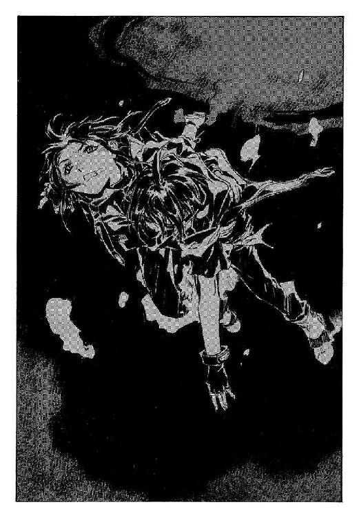
地底湖の広さを考えれば、いくら上からのぞいたところで、水面のすべてを照らせるような明かりなどあるわけがない。飛び込んだ場所から少しでも移動すれば、クオ・ヴァディス・パテルはこちらの姿を見つけることはできないはずだった。このまま泳いで、岸にたどり着ければ、休息することができる。
（問題は......）
苦々しく、彼女は自覚した。
（岸なんてあるのか、ってことだけど）
あの回廊から見たこの地底湖──《詩聖の間》は、地下洞窟にたまった水たまりのように見えた。見ただけで分かったことはみっつだ。あまりにも規模が大きすぎること。地底湖の端は断崖絶壁になっているかもしれないこと。ついでに、この水の上に女が首吊りにされていることだ。
凍りつくほど冷たい水の中を潜行しながら、光明と思えるような要素は──控えめに言っても──ひとつもない。
（キムラック......教会総本山のユグドラシル神殿......その最奥......そして秘義。ここが、《詩聖の間》......）
大概の危険は予想し、覚悟もしていたが──溺れかけることは考えていなかった。
自分よりも明らかに重い身体を抱きかかえて泳ぐというのは、実際にやってみていても正気の沙汰ではないと彼女には思えた。完全に冷え切った手足が、水を切るたびにどんどん重くなっていく。落ち着いてさえいれば沈むことはないのだと分かっていても、内臓が圧迫されるような不安感が襲いかかってきていた。
（急がないと......少しでも早く身体を暖めてあげないと、いくらこの子だって体力がもつわけがない......）
実際、それは彼女自身も同じだった。
やがて──
水をかき分けて伸ばした彼女の指先が、硬いものに触れた。
（着いた！）
水よりもさらに冷たい岩に、指先を引っかけて、彼女は最後の蹴り足を放った。顔面から岩にぶつかるが、もう感覚が麻痺していて痛みも感じない。
どのくらい深くを潜行していたのかを漠然と考えながら、彼女は浮上しはじめた。闇に閉ざされた水中では上も下も分からないが、勘に頼って水面を目指す。
（飛び込んで......から......どのくらい経ったのかしら？）
一分、あるいは二分は経過したのかもしれない──いや、この水温でそう長く泳いでいられたはずがない。一分弱かと、彼女は見当をつけた。と、肩に乗せるようにしていた彼の身体が、突然、重さを取りもどす。
彼女は水面から顔を出していた。
「............」
あえぐように空気を求めながら、どこへ泳ぎ着いたのか確認する──見上げると、はるか頭上に光が見えた。ほぼ垂直の壁面が目の前にそそり立ち、十メートルほど上方に、大きな横穴が見える。光はそこから、この地底湖を照らそうとしていた。だが無論、光量が足りるはずもない。
穴は、ほんの一分前、彼女がいた場所だった。飛び込んでから、一番近い壁面──飛び込んできた方向──に向かって泳いだのだから、当たり前といえば当たり前だが。地底湖を見下ろしているはずのクオのつま先でも見えないかと彼女は目を凝らしたが、疲労のせいか、あるいは冷水の中を潜水して混乱していたせいか、焦点がうまく合わなかった。だが──
抱きかかえている彼の横顔だけは、暗闇の中でもはっきりと見えた。
（キリランシェロ......）
声には出さずに、呼びかける。彼は完全に意識を失って、目も閉じている。ずぶ濡れの髪が額に張り付いていた。顔色が蒼白なのは、身体が冷えたのと、出血しているせいだろう──確か、落下する直前にクオに拳銃で撃たれたはずだった。ひょっとして弾丸が当たったのではなく、単にびっくりして落ちただけなのかもしれないが、楽観する気にはなれない。
アザリーは彼の身体を抱え直すと、再びあたりを見回した。なんとか水から上がって、身体を休める場所を探さなければならない。体温を取りもどさなければ、ほどなくして死ぬことになる。ただでさえ準備もなく冷水に飛び込んだのだ。ましてや彼のほうは重傷を負っている。
だが、どこを見ても完全に切り立った壁ばかりで、入り込めそうな隙間すらない。
（あの死の教師に気づかれないように......できるかしら？）
不安に思いながらも、彼女は立ち泳ぎしながら、左手をあげた。右腕でしっかりと彼の身体を抱きながら、意識を集中する──
「......退け......」
つぶやいてから指先を、壁に触れさせる。
と、まるで気泡が弾けるように、壁に小さな穴が開いた。見ているうちにも穴は広がり、また深くなっていく。数秒後には、なにもなかった壁面に、奥行き十メートルはある洞穴ができあがる。水面から、数センチ上のところである。幅も高さも思ったより広くはならなかったが、大人が立って歩ける程度にはなった。
（さすがに......物質を消失させるのは、骨が折れるわね）
最後の力を振り絞って彼女は、抱えていた彼の身体をその洞穴へと押し上げた。音もなくというわけにはいかないが──上は、まだ混乱しているようだった。多少音がしたところで、クオの耳にはとどくまい。アザリーは水に飛び込んでから初めて、楽観的に決めつけることにした。
彼の身体を完全に押し上げてから、自分もその洞穴へとよじ登る。水から上がって体重を感じると、力尽きかかっていた彼女はあっさりとその場に倒れ込んだ。酷使された筋肉の痛みと、睡魔が襲ってくる──
（......まだよ）
唇を噛み切って、彼女はかぶりを振った。眠るわけにはいかない。
仰向けに倒れたまま動こうともしない彼へと近寄って、ほとんどすがりつくように──と苦笑いして彼女は思った──、彼の胸に手を当てた。
心臓は動いているのかもしれない。が、呼吸はしていない。
舌打ちして、アザリーは顔を上げた。彼が水を飲んだのは間違いない。浮いてきたからには、大量に水を飲んだわけでもないだろうが......
自分の感覚も麻痺しているようなこの状況では、彼の心臓が動いているのかどうか確認しようもないが、少なくとも呼吸だけは確保してやらなければならなかった。彼の鼻と喉を押さえると、人工呼吸を試してみる。
冷えて固まった唇に息を吹き込んでも、反応がない。
最悪の可能性が、脳裏にちらついた......
（拳銃で撃たれてから、かなり──少なくとも、一分以上......は経ってる。既にショック死している......？）
可能性は十分にある。撃たれた瞬間から心臓が止まっていたとしたら、もう手遅れかもしれない。
「冗談じゃないわ」
アザリーは声に出して毒づくと、ついでに彼の口から吸い出した湖の水を唾といっしょに吐き捨てた。
彼の顔を見ている時間などはない。彼女はすぐに人工呼吸を繰り返したが、なぜかその間も、じっと彼の顔を見下ろしているだけだったような錯覚を覚えていた。実際、目を閉じて息を吹き込んでいても、動かない弟の顔が見えるような気がする。
まるで氷の中で眠っているかのように、白く冷え切った弟の顔。
明かりなどないというのに、彼の顔ははっきりと見えていた。ほとんど今までの生涯で、これほど近づいて見つめたことなどなかったことを思い出し、ふと苦笑したくなる。
彼女がよく覚えている弟の姿とは、あまり変わっていないようで、だいぶ変わった、彼の姿。
何度目かの人工呼吸が失敗に終わり、焦燥感を募らせながら、アザリーは顔を上げた。ぞっと身震いして──思いつく。身体を暖めなければならない。彼も、彼女自身も。
（意識が......もつかしら......これ以上疲労しても......）
疑問に思いながらも、やるしかないとなれば、躊躇してはいられない。アザリーは右手を開いて上に向けると、口を開いた。彼女の望みを叶えてくれる世界へと、囁くように告げる。
「......夏よ......」
ふっ──と、光のない熱の塊が、手のひらから浮かび上がっていく。見ることはできないが、まるでくすぐるように、冷え切った肌に熱が染み込んでくるのが分かった。これで少なくとも、凍死の危険性だけは減らすことができる。
「............うっ!?」
我知らず閉じかけていたまぶたを、彼女は震えながら見開いた。一瞬、意識が朦朧としたらしい。
（まだ......眠るわけには......）
歯を食いしばり、彼女はうめいた。弟の顔をのぞき込んで、再び、彼の鼻を押さえる。
（起きて......キリランシェロ。お願い......起きて！）
彼の唇に噛みついて、アザリーは精一杯の息を吹き込んだ。
瞬間......
「ごぶっ！」
彼の身体が、跳ねた。
咳き込むようにして、水を吐き出しながら、彼が呼吸を始める。
（......やっ......た......）
放心しながら彼女は、つぶやいた。彼は──意識はもどらないようだが、軽く身体を跳ねさせながら、水を吐いている。
彼女はもう一度彼の唇を吸うと、吐き出した水を取り除いてやった。すぐに、彼の呼吸が、穏やかなものへとなっていく......
「あとは、撃たれた傷を......」
少なくとも脳の七割は眠りについているような状態ではあったが、彼女はなんとか意識を保ちつつ、彼の身体を見下ろした。手探りで、銃創を探す。
（......ここ......ね）
目をしばたたきながらアザリーは、彼の下腹あたりに血の感触のようなものを感じた。目を近づけてみると、小さな傷が開いている。馬鹿馬鹿しいほど小さくて、そして限りなく深い傷が。
銃創だった。背中にまで手を回してみると、傷は完全に貫通している。弾丸が身体の中に残っていることはないだろうと、彼女は踏んだ。
べとべとと顔に張り付いた髪を払いのけながら、すべての力を注ぎ込んで構成を編み上げる──かすれ声で紡ぎだした呪文とともに、彼の傷が消えていった。少なくとも見かけの上では。
だが今は止血だけでもいい。それ以上は望めない。
（大丈夫よね......死なないわ、あんたは。キリランシェロ......）
ゆっくりと寝息を立てはじめた彼を見下ろして──彼女は、彼の顔を指で撫でようとした。が、もう腕も上がらない。
なにも考えられないほど疲労して、アザリーはくずおれるように、弟の身体の上に倒れ込んだ。岩肌にそのまま眠り込むのは、ぞっとしない。彼の身体とてまだ冷えていたが、硬くはなかった──なんと言っても死体ではないのだ。硬いはずがない。そんなことを、彼女は漠然と思っていた。
眠りに落ちる一瞬前、彼女がなんとなく見上げた視界には、ちょうど中心に、はるか遠く上空にたたずむ、宙づりの女がいた。緑色の旗のようにぶら下げられて、揺れている。その女の目が、じっとこちらを見ているような気がしたが──
彼女には、もうどうでもよかった。
◆第八章 オーフェン
彼にしても、北の地は最悪だと思わざるを得なかった。
「......確かにな、くそ。あいつらのほうが正しかったっていうのかよ」
吐き捨てて、あたりを見回す。マントの下から出した手には、一枚の地図があった。
「なにが『この戦火の後始末は我らがその務めを果たそう』──だってんだ。自分らの街は小ぎれいに作り直して、隅っこの土地はほったらかしかよ」
キエサルヒマ大陸が焦土と化したのは、もう数十年も昔のことだった。大陸全域を巻き込んで吹き荒れたあの戦乱を知らずに成人した者も多い。
彼もそのひとりだった。
だがなんにしろ──天人たちの言っている通りにこの大陸が少しずつ豊かさを取りもどしてきているにせよ──、そのスピードは、遅々としたものに過ぎなかった。人間の住めるような土地は、まだあまりに少ない。
「......だから、こんな土地だって無駄にゃできねえってのに......ち、くそ」
彼は誰にともなく、毒づき続けた。
「あの馬鹿どもに、なんて説明しろってんだ──目指してきた土地が荒れ地だってことを、先遣隊のせいだと勘違いしてるような開拓公社の馬鹿どもが」
憤懣をぶちまけて、砂を蹴る。
この大陸の北端で渦巻く黄塵は、その戦乱の名残だというが、詳しいことは天人たちしか知らない──つんとすましたあの女たちしか。なるほど、彼女らの力で大陸の自然は回復したのかもしれないし、件の戦乱の時代にこの大陸に漂着した人間種族──そして大陸に足を踏み入れるなり戦火に巻き込まれ、種としての力も文明もすべて失いかけた人間種族を都市に招き入れ、庇護してくれたのも彼女らだった。だが──
根拠のない疑念を胸の中で固めつつ、彼は、黄塵の中、歩を進めた。吹きすさぶ風が、耳元をかすめて鋭い音を発している。枯れているわけでもなく、乾いているわけでもなく、ただ、死んでいる砂──黄塵に包まれて。
彼はふと、まぶたを半分だけ下ろした。目をすがめて視界を凝らすと、前方の黄塵の切れ間に、なにか見えたような気がする......
彼は、顔を上げた。
薄紙の裏でたたずみ、蝋燭の火が揺れる音をじっと聞いている──それは、いつものことに過ぎない。だが。
彼はうめいた。苦々しく。灼かれるように。
「女神よ......もうわたしを苛むな......苛むな......」
強く拳を握る。爪を握り込む。
嫌な予感がした。悪夢が目覚めたような。夢など見るはずがないというのに。
◆◇◆◇◆
「......派手に壊してくれたものだな、クオ」
ラポワントはその光景を一望して、そう告げた。目の前にいる、大男に。
実際、派手に壊れたものだと、彼はうんざり付け加えた──胸中で苦々しく。これを修復するのには、莫大な時間と費用がかかるだろう。回廊は端から端まで念入りにハンマーで砕かれたように、めちゃくちゃにされている。いったいどのような破壊的な力が生じればこのようなことができるのか、彼にとってはまったくもって疑問だったが。
魔術によって、という報告は受けていたが。
（忌々しい......）
彼は胸中で吐き捨てた。魔術だけではない。その報告も忌々しい。
壁も扉も──禁断の《詩聖の間》の門も、木っ端微塵に打ち砕かれている。最悪の被害だった。
赤い、不格好な鎧を着けた大男──クオが、しごく平静な声で答えてくる。
「この扉を破壊したのは侵入者です」
「そうだな。そうだろうよ。それで、お前はなにをしてくれたというのだ？ 奴らを取り逃がしてくれただけか？」
クオの落ち着いた声音が癇に障ったというわけではないが、ラポワントは顔をしかめてうめいた。
と、ため息をついて自分の格好を見下ろす──教師長の特別な神官服。貫頭衣に近いものだが、もっと複雑な造りになっている。もちろん白が基調だが、長年の間、黄塵にさらされて黄色がかっている。いくら念入りに洗わせたところで、この黄塵の色は絶対に落ちない。
なんにしろ、教師長たる彼は、眼前の大男より年下ではあったが、位は同等だった。いや、死の教師としての地位を隠すためのかりそめの教師長位でしかないクオに比べれば、彼のほうが上位ですらある。
ラポワントはちらりと、かたわらを一瞥した。こちらには、聖都を守護するもうひとりの死の教師──カーロッタがいる。
ちらりと見た印象から言えば、その女がこの事態を退屈に感じているのが明らかだったため、ラポワントは苛立ちをいっそう強めた。
「......侵入者は、背約者ひとりを含めて、全部で三人──それをすべて取り逃がしたと、そういうことで間違いはないのだな？」
「はい」
こちらを見ずに、地底湖の上におわす〝女神〟のほうを向いて、クオが答える。
だが──
「四人、ですわ」
なにか面白がるような声音で、カーロッタが付け加えてくる。彼女の格好も教師長位の神官服で、デザインはラポワントの着ているものとまったく同じだったが、着ている者が違えば服の印象も変わる。彼女が着てみせると、不格好な神官服も、とりあえずまともな格好には見えるようになる──もっとも正直に、寝間着のようだと言えば彼女は怒るだろうが。
あるいは、笑うだろうか？ そんな場違いなことを考えながら、ラポワントは眉を上げた。
「......四人？」
「メッチェン・アミックが、反乱に加わっているようですわ。昨夜、わたくしの寝室に襲撃をかけてきました」
「結束というものを、一度考えてみてもらいたいものだな」
可能な限りとげとげしく告げたつもりだったが──カーロッタは軽く肩をすくめて皮肉を受け流すと、
「無理でしょう。だって、メッチェンはわたしが嫌いなんですもの。会った時から、そうでしたわ」
ちっ──と聞こえよがしに舌打ちすると、ラポワントはさらに振り向いた。血の跡が一面に広がる壊れた床。
「......それで、そのたった三人の侵入者のためにネイム・オンリーは殺され、二十三人の神官兵を失い、《詩聖の間》の扉は破壊され、明らかに女神のお姿を見たであろうその侵入者たちは無事逃げおおせた、と、こういうわけだ。なにからなにまで素晴らしいことだな。教主様のお言葉が実に楽しみだ」
「手強い相手ですよ。久しぶりに」
クオが、ぽつりと口をはさんでくる。
「まったく、興味深い発言だ」
ラポワントはそう吐き捨ててクオの言葉を遮ると、破壊された扉のほうを見やった。そして......ふと、気づく。
「なんだ、あれは？」
壊れた扉の下あたりに、足を滑らせたような跡が着いていた。思わず背筋に冷たいものを走らせて、クオに向き直る。
「......まさか、侵入者が《詩聖の間》に入り込んだということはないだろうな!?」
「そういったことは、ありませんでした」
きっぱりと、クオが断言してくる。
「............」
ラポワントは、しばらくじっとクオを見つめ続けた──視界の端で、カーロッタすら聞きとがめたのか、いつもの間延びした双眸に緊張のようなものを見せている。もし、クオ・ヴァディス・パテルが嘘をついているとしたら......
（......いや）
彼は、無理やりに否定した。クオの忠誠を疑うのは馬鹿馬鹿しい。
犬の忠誠を疑うようなものだ。
それでもそれ以上はなにも言う気にならず、ラポワントは、かつ、とかかとを鳴らしてきびすを返した。死の教師ふたりを残して、回廊を去ろうとする。と──
「ラポワント教師......」
物静かなクオの声が、追いかけてきた。壊れた床を念入りに踏みしめるように、足を止める。クオはすぐにあとを続けてきた。
「以後の警備は？」
「ひとりが引き続き、この《詩聖の間》とユグドラシル神殿を警備しろ。もうひとり──どちらでもいいが──は、当然、逃亡した侵入者の追跡だ。一日以内に結果を出せなければ、その時は、それなりの覚悟を固めておくんだな」
「分かりました」
嫌になるほど従順に、クオが答えてくる。そして──
「ラポワント教師。もうひとつ」
再び呼びかけられて、ラポワントはいらいらと振り返った。クオは腕組みした姿勢で、じっとこちらを見つめてきている。
「なんだ？」
聞き返すと、クオはあっさり口を開いた。
「......背約者のひとり、サルア・ソリュードが、あなたを頼ってくるかもしれません」
「奴がわたしを頼るとは思えんがな」
「それでも、奴にとって肉親はあなただけです。彼があなたの前に姿を見せたら──」
「分かっている。即座に捕縛してそちらに引き渡す。それでいいな？」
ラポワント・ソリュードはそう言うと、再びきびすを返し、回廊を後にした。
◆◇◆◇◆
「ぶめぎゃ！」
と叫ぶなにかを踏んだ。
それはそれとして──クリーオウは唐突に目の前を覆った暗さに目を瞬いた。もともと、あの神殿の地下もたいした明るさではなかったが、光量の変化が完全に一瞬だったためか、目の奥に痛みを感じるほどの落差を覚える。
ゆっくりと、暗闇に目が慣れてくる。途切れない雨音が、聞こえてきていた。雨のせいか、それともそういうものなのか、この街でならどこにでも充満していた黄塵が、あまり見えない。せまい部屋の中だった──いや、せまい小屋だと言うべきか。粗末な寝台がひとつ。ほかは、部屋の隅に押しやられたゴミしかない。外界に通じているのは、薄黄色く汚れた小さな窓と、そのまま玄関になっているらしい扉。
彼女はなんとなく息苦しさを覚えながらもあえて息を殺し、抱いているレキと、手の中にある小さな黒い小箱を見下ろした。箱は、すっかり重さがなくなり、また輝いていた文字もなくなっている。よくは分からないが、この箱が彼女らをここへと運んでくれたらしい。
（そうだ。マジクと......あのサルアとかいう人は？）
思い出して、彼女は左右を見回した。転移する一瞬前、彼女から見てそこにいた方向に、マジクが転がっている。いまだ意識がないのか、ぐったりと寝こけているようだった。サルアも近くに倒れている。もともと血塗れだった服が、改めて血で汚されている。
（満身創痍、ってやつね）
彼女はため息をついて、さっきから踏んでいるなにかから、ひょいと飛び降りた。「ぐえ！」とうめき声が聞こえてくるが、まあそのあたりもどうでもいい。
（マジクは大丈夫みたい......死にそうな火傷だったのに、あの人、ホントにあれだけの時間で治しちゃったんだ。サルアも、まあ全然無事じゃないけど、ちゃんと生きてる。生きて──）
さっと、体温が下がる。彼女は顔を上げて、再び部屋の中を見回した。実際には目を凝らしたというわけではないが──探していたものがないということは、探すまでもなく分かっていた。
（オーフェン......）
やはり、いない。
しばらく立ちつくし、なにかに鼻の先を押されて、クリーオウは驚いて我に返った。見下ろすといつの間にかレキが身体を伸ばして、前脚で顔を触りにきている。
（どうしようか、レキ）
レキに顔をぺたぺた触られながら、クリーオウは嘆息した。
（わたし、なんにもできなかったわよね。オーフェン、ケガ人で──魔術士が魔術を使えないって、ある意味ケガよね？──それで、わたしがちゃんとサポートしてあげなくちゃならなかったのに）
最後の数瞬が脳裏に浮かぶ。
とは言え、思い出せたことは、ほんの数個の場面でしかなかった。実をいえばあの時、オーフェンのほうを見ていなかったのだ。覚えているのは、あの女魔術士の警告の声と、銃声、オーフェンが悲鳴をあげなかったこと。
彼の悲鳴を聞いていないことが、ことさらに彼女の不安をかき立てた──ケガをしただけなら悲鳴くらいはあげただろうと、彼女は勝手に決めつけていた。
「............」
しばらく、立ちつくして。
ふっ、とクリーオウは、息を吐いた。目を閉じてかぶりを振る。
彼女は決心すると、サルアのほうに向き直った。ここがどこだかは分からないが、とりあえずこの男ふたりを起こさない限りはどこにも動けない。マジクは寝ているだけのようだが、サルアのほうは、明らかにそうではない。
「うっわー......」
近づいて観察してみると、サルアはまさしく満身創痍といった有様だった──つい一時間ほど前にケガを治してやったというのに、またその状態まで逆もどりしている。深い傷浅い傷、それぞれ取りそろえて、まるで身体に刃物で落書きしたようだった。
雨の臭いに混じって血の臭いをかぎ取って、彼女はしかめ面で後ずさりした。一歩二歩さがったところで、さっき飛び降りた時に踏んだなにかを、また後ろ足に踏んだようだが──「ごぎゃ！」──とにかくひたすらにどうでもいい。
「あのー......」
唐突に声をかけられて、クリーオウはびっくりしながら振り返った。と、部屋の隅っこにぽつんと、背の低い人影が座り込んでいる。
眼鏡をかけたその人影は、ぽりぽりとほおをかきながら言ってきた。
「いきなり出てきて、兄さんを踏んでるみたいなんですけど......」
「あ。えーと......ドーチンじゃない。どしたの？ こんなとこで」
「いや......どうしたのっていうか、ここにいたんですけど。ここ何日か」
なぜかこちらの足下を指さしたまま、ドーチンがつぶやく。いわゆる『地人』である。大陸の先住民族で、今は南端の自治領にしか住まないとされている──らしいのだが、クリーオウにしてみれば、そういう話を聞いたことがあるというだけのことだった。
身長は百三十センチほど。丸みを帯びた体格が特徴で、毛皮のマントを伝統的な民族衣装としている。このドーチンは、分厚い眼鏡をかけていた。不安そうな表情でこちらを向いている。
「ここにいた？ 何日か？」
クリーオウは二言続けて声をあげてから──ふと思いついて、聞き直した。
「ここ、どこ？」
「どこかの偉い人が所有してる倉庫の管理人小屋かなにかだと思うんですけど......ここを見つけたのはぼくたちじゃないですから、よく分かんないです」
「いや、そーゆうことじゃなくて、ここってまだキムラックなんでしょ？ どのへんなのよ」
「え？ さあ。ぼくらは、市場までしか往復しませんから」
「役に立たないわねー」
「............おい............」
「あ、そーだ！」
どこからか声が聞こえてきた──聞こえてきたような──気がしたが、とりあえず、それより優先しなければならないことがある。クリーオウは声をあげると、またサルアへと駆け寄った。うつ伏せで倒れているサルアの上にレキを置き、ぽんぽんと叩きながら告げる。
「あのねレキ、ちゃんと治してあげてね。できるでしょ？」
レキが特に返事らしい仕草を返してきたわけではなかったが、クリーオウはそのまま振り返った。きょとんとこちらを見ているドーチンのほうへ、また近寄る。
「あのな......」
また、どこからか声が聞こえてきたようだが──
「こぉぉの不法侵入小娘！ いきなり扉も開けず現れて、あまつさえこのマスマテュリアの闘犬、ボルぎゃああっ!?」
──ドーチンへと駆け寄る途中、またなにかを踏んだようだったが、もうとにかくどうでもいい。
「でも、市場までは出てるのね？」
「え？ ええ、まあ」
なにやらいろいろと言いたげな顔でうなずくドーチンに、クリーオウはさらに詰め寄った。外はいまだに雨足が衰える気配もないが、夜が明けつつあるせいか、どことなく空が白みはじめている。
「神殿まで案内できる？」
「あ、案内もなにも、あれだけ大きな建物ですから、どこからだって──」
「やめとけ......」
制止されて──クリーオウは、驚きに肩を跳ねさせて振り向いた。見ると、傷だらけのサルアが、ふらふらと顔を上げている。
彼は血で固まりかけた前髪を手でどけながら、荒い呼吸の合間を縫うように声を出してきた。
「......クオは......絶対に......待ちかまえている......奴だけじゃ、ねえ......カーロッタって......のが──」
凄絶な眼差しで言ってくる彼に、クリーオウは思わず息を呑んで──
指さして、告げた。
「でも、レキを頭にのっけてて、ちょっとプリティな感じ」
「てめえがのっけたんだろーがっ！」
サルアの怒鳴り声に驚いたのか、彼の頭からレキが転げ落ちる。黒い子ドラゴンはそのまま床をうまく転がっていたが──その転がる先に、なぜか床の真ん中に白い灰の山がある。子ドラゴンは頭からそれに突っ込むと、音のないくしゃみを連発しはじめた。
みな、しばらくその様子をみていたが──
「あう......大声出したから......貧血が......」
へろへろとまた床に突っ伏すサルアに、クリーオウはあわてて聞いた。
「ねえ、ちょっと待ってよ、カーロッタってなに？」
「......カーロッタ・マウセン。死の教師──つまりキムラック教会を守護する戦士のことだが、そのひとりだ。現在、神殿を警護しているのは、クオ・ヴァディス・パテルとカーロッタ・マウセン。そのふたりってわけだな」
「たったふたりじゃない」
口を尖らせてクリーオウが言い返すと──サルアは、また顔を上げてきた。どこか皮肉げに、音を立てて笑う。
「クオの鎧......〝イフリート〟の結界を貫く手段もねえってのに、たったじゃねえだろうによ」
「なんとかなるわよ、そんなの！」
「......そうだな。まあ、奴に関しては......な」
「え？」
いきなり同意してきたサルアのせりふに、クリーオウは思わず言葉を失っていた。呆気に取られているうちに、サルアはさらに上体を起こし──ゆっくりと、床に座る姿勢を取った。身体を引きずるようにして壁際まで這い進み、背中を壁に預けてこちらを向く。
「だが、カーロッタは、駄目だ。絶対にどうにもできねえよ。あの女は──」
「......強いの？」
灰にまみれたまま（途中、なにかを踏みつつ）足下まで駆け寄ってきたレキを抱き上げて、クリーオウは聞いてみた。が、サルアは首を横に振ると、
「そういうんじゃねえ。そういうんじゃねえんだが......まあいいさ。とにかく、俺たちは幸運にも神殿の外に逃げることができたんだ──みっつのチャンスを得た。隠れるチャンス、逃げるチャンス、そして......」
口元を、にっと吊り上げる。
「武装するチャンスだ」
「逃げないわ」
クリーオウは即座に告げた。
「さっきの神殿にもどるの。この、変な箱の使い方が分かれば、またすぐにもどれるはずでしょ──」
「あ、それ、無理らしいですよ」
彼女が持ち上げた黒い小箱を指さして、あっさりと、ドーチンが口をはさんでくる。地人は眼鏡の位置を直しつつ、朗らかにあとを続けた。
「あの魔術士の人が、さんざん試してたみたいですけど、その装置では、ユグドラシル神殿には転移できないんだそうです」
「なんでよ!?」
「え？ いやあの、そんなぼくの首を絞めたって......」
と──
「できるはずがねえさ」
サルアまでもがきっぱりと言ってくるのを聞いて、クリーオウは、ドーチンの襟首をはなした。
見やると、サルアはまた笑みを浮かべている。皮肉げ、というよりははっきりと嘲りの色を含んだ、険悪な笑みである。
「天人の魔術じゃあ、神殿には近寄れない......近寄れるはずがねえんだよ」
「なにを言ってるの？」
「もしそれができたのなら......とうの昔に、神殿は滅びてた──へへっ。ま、そのほうが面倒はなかったんだろうが......やっぱ退屈ではあっただろう......な......」
「......様子が変じゃありません？」
襟元を直しながら、ドーチンがつぶやく。クリーオウは無言でうなずくと、まだなにかをぶつぶつと言い続けているサルアをじっと見やった。暗くてよく分からなかったが、彼の顔色はすっかり蒼白になっている──
「......ケガのせいで、意識が確かじゃないみたい」
「ていうか、死にかけてるみたいに見えるんですけど......」
「言われてみれば、確かにそう見えなくもないわね」
そういえば、レキに傷を癒やしてくれるように頼んでから、ほうっておいたままだった。傷はかけらも治っていないようである。
「まったくもー、レキ、ちゃんとやっといてあげてって言ったじゃない」
彼女はレキを抱えたまま、サルアのほうに進みかけたが、ふと後ろから手を引っぱられて足を止めた。振り返ると、ドーチンが彼女の手をつかんでいる。
クリーオウは目をぱちくりさせながら、疑問符を浮かべた。
「なぁに？」
「いや、あの......またそのまま進むと──ええと、さっきからなにかを踏んだりしてるの、気づいてません？」
気づいていた。気にしてはいなかったが。
「うん。最初、ぶめぎゃって鳴いてたから、ぶめぎゃ虫だと思ってたけど」
「誰がだっ!?」
がばと──床から、なにかが跳ね起きる。
ドーチンにそっくりな──ただし眼鏡はかけていない──こちらも地人である。同じ毛皮のマントの下に、不格好な古い長剣を下げている。顔面にいくつもの足跡をつけたまま短い人差し指をこちらに向け、それは、大声で叫んだ。
「さっきから、いちいち往復便で踏みつけていきやがって！ なぜ踏む!? どーして踏む!?」
ボルカンだった。ドーチンの兄である。クリーオウは思わずしばらくの間ぽかんと口を開けてから、その開いた口でそのまま聞いた。
「あら、あんた、どこにいたの？」
「うっわ、そーゆうことが言えるかこの顔踏み女。いいか、この史上希なる英雄様を膝から下の部位で触れてしまった無礼者は、殺し装置で装置殺されるべしとの掟を、まさか知らんのか!?」
「知らないわよ、そんな妄想」
「妄想じゃなくて掟だと言っとろーがっ！」
わめくボルカンを無視して、クリーオウは地人をわきに押しのけた。その横を通り過ぎて、すたすたと進む。
「だいたい貴様のよーなつまらん小娘の足の裏を、重力の下側から見せられて、この屈辱をなにによってそそげばいいのだ!? やはりこれは原油で化粧し殺すよりほかあるまいと、市長さんもびっくりだ！」
あとからばたばたついてきたボルカンが疾呼するが、クリーオウはあくまでそれを無視した。
「いや、あの兄さん、やめたほうがいいと思うよ。言ってることもなんだかさっぱり分からなくなってるし──」
心配そうに、ドーチンもついてきている。だがボルカンは聞く耳ないようだった。

「この際だから言っておくが、コラ、おい、偽物の金むく娘！ いいから聞けって──」
クリーオウは──
無言で、振り向いた。唾を飛ばしてわめき散らしているボルカンと、そのうしろで不安そうな面持ちを見せているドーチン、そのふたりを見下ろして、息を吸う。
ボルカンが構わずにわめき続けている後ろで、ドーチンが嘆息混じりに幸運を祈るような仕草をしているのが見えた。
「レキ！ このふたり、どっか遠くにやっちゃって！」
瞬間。
ごぼっ、とやたら鈍い音がしたかと思うと、地人ふたりの姿が突然消えた。悲鳴をあげる間もなく、床下を突き破って、轟音とともに地下へとめり込んでいく......
ふたりが意味もなくやたらものすごい勢いで沈んでいったことに仰天しながら、クリーオウは、ぽつりとつぶやいた。
「......遠く、って、ちょっと方向が違うみたいだけど」
地人ふたりが沈んでいった大穴をのぞき込むが、穴は深々と真っ直ぐ地下へ突き進んでいて、ボルカンらの姿はもう見えない。
「......まあいっか。どうせあのふたりが死ぬわけないし......」
それだけで片づけると、クリーオウはサルアのほうへと向き直った。サルアはいつの間にか、力尽きたのかぐったりとしている。呼吸はまだしていたが。
と──彼に近寄りかけてなにかにつまずき、クリーオウは顔をしかめた。
見下ろすと、マジクがいまだ寝息を立てている。
「............」
いらいらと頭をかいてから、彼女は、寝ているマジクの頭を軽くこづいた。
「いいかげん、起きなさいって！」
「うう......ん......」
うめき声をあげるマジクをそのままに、サルアのほうへと向かう。
死にかけた殺し屋の横で腰をかがめ、レキに彼の治療を頼んでいるうちに、マジクがごそごそと身動きを始めていた。寝ぼけたような顔で──実際寝ぼけた顔で、寝ぼけたようなことを言ってくる。
「......あれ......？ なんで......寝てるんだ？」
「あああ、もう、めんどくさいわね！」
彼女はわめくと──立ち上がった。黄塵の舞う薄暗い部屋の中、拳を握りしめ、さらに大声をあげる。長い金髪が、ばさりと揺れた。
「あんたはもうケガなんてしてないんだから、さっさと起きなさい！ ここがどこだかよく分かんないけど、サルアが動けるようになったら、すぐに出発するわよ！ 時間なんてないんだから......ああもう、ぼけっとしてないで、いいからもうちょっとしゃきっとしなさいよ！ あ、今、あくび噛み殺したでしょ。ちゃんと分かるわよ！」
「ちょ、ちょっと待ってよ......」
わたわたと、混乱したように、マジクが手を振ってくる。少年はあたりを見回すと、困惑顔で口を開いた。
「いったい、なにがなんだか......ここは神殿じゃなかったの？」
「あんたがやられて気絶してる間に、いろいろあったのよ！」
「う......うん......」
言われてマジクがあわてながらぱたぱたと服をはたく──これが「しゃきっと」のイメージだったのだろう──のを見て、クリーオウはとんとんとつま先で床をたたいた。なにもかもがいらだたしい。考えてみれば、この街に入ってから、なにひとつとしてうまくいったことがないのだ。そもそも街に入る前にしてからが、危うく置いてけぼりにされるところだったし、街に入ったところで、道案内だったはずのメッチェンとははぐれてしまった。ラニオットの手引きで街の奥に進めるかと思いきや、そこでもまた鉄砲水に押し流され、気づいた時は街の中枢の神殿の中。そこが目的地かと思えば顔がゴツい変な男に待ち伏せされていて、しかも......
（オーフェン......）
ぎりぎりと奥歯を噛みながら、クリーオウは最後の数瞬を思い出そうと努めた──見ていなかったものを思い出せるわけもないのだが。思い出さなければならないような気がしていた。
彼は死んだかもしれない。
アザリーとかいうあの女が、最後に見せた表情。そして声。それだけは思い出せる。思い出せたからこそ、悪い予感が強まっていくのを感じていた。
だが──
（オーフェンは、わたしが死にそうになった時も、なにかをやめたりあきらめたりなんてしなかった......）
レキの魔術が効き始めたのか、サルアの傷がどんどんふさがっていく。クリーオウはそれを一瞥して、決然と独りごちた。
（逃げられるわけがないじゃない）
そろそろ、夜が完全に明けようとしている。
◆◇◆◇◆
闇と......
水と......
オーフェンは冷たく湿ったそれを感じながら、目を覚ました。それらとともにある──それらの中にある、鋭い暖かさも感じながら。
真っ暗だった。だが完全な闇ではなかった。青く染まった闇。重苦しく寒い闇。四肢もまた重く、身体にはけだるさといっしょに緩慢な痛みもある。なにかを思い出そうとし、結局なにを思い出したらいいのか分からず、彼は考えるのをやめた。
（......なんだ？......）
曖昧な疑問を自分に投げかけながら、静かに、右腕をあげる。右腕だけが動くようだった。震える指先は闇の中をさまよい、そしてなににも触れることができないまま、宙を滑った。
ふと、鼻先になにかが触れる。見下ろすと──黒い髪が、鼻に触れている。
彼は右手で、それをどけた。少しくせのあるその髪を持ち上げると、見慣れた横顔が、彼の胸に顔を埋めている......
「......アザリー？」
彼は、呼びかけた。が、その横顔は微動だにしない。彼女の吐く息が、彼女の体温を直接こちらへと伝えてきた。
自分が床に倒れていて、彼女が彼の身体にのしかかって眠っている。その状況だけを悟ると、オーフェンは、大きく吐息した。
（彼女が......助けてくれたのか......）
脇腹に触れてみると、銃創が消えている。クオの剣にやられた傷も、ついでに治癒してくれたらしい。
虚空から──なにも見えない虚空から、放射してくる熱気を感じる。アザリーが魔術で暖を取ったのだろう。あの状況下で地底湖に落下した彼を救いだし、蘇生させ、傷を治す......言葉にすると簡単だが、並大抵でできることではない。
（そんなことができるのは、そうだな──あんたくらいだ）
だが、ここはどこだ？
彼はいまだ続いている頭痛に顔をしかめつつ頭を巡らせ、自分たちがいるのが、横にくぼんだ岩穴だと認識した。出口のほうを見ると、すぐ外に黒々とした水面が見える。そして、はるか遠く──上空には、緑色のローブを着た、宙づりの女......
（ここはまだ......あの地底湖か。《詩聖の間》とか言ったっけか......）
宙づりの女はじっとこちらを見つめていた。首を折られ、傾いた斜めの顔で、ずっと。
その女と見つめ合いながら、オーフェンは嘆息した。
（キムラック教会ができてから、もう二百年......ひょっとして、あんたはずっと、そうしていたのか......？）
ふと。夢を──思い出す。
いや、あれが夢であったのか、強い疑念を浮かべながら、オーフェンは〝夢〟の中で彼女が語った言葉を思い浮かべていた。
かつて──
かつて......世界は、ただそれであった。世界は世界であるだけで、それ以上でもそれ以下でもなく、世界に存在する物のためになにを用意する必要もなかった。その頃、世界に住んでいたのは、不死の巨人たちだけだったからだ。巨人らは大地がなくとも、海がなくとも、風がなくとも、星が太陽がなくとも、永劫を生きる力を持っていた。だが、その地に変化が起こる。虚無が満たされてしまったのだ。虚無をくまなく満たしたもの......それが......神々だった。
（それは......いつの昔だったんだ？）
夢の中で聞かされた神話に触発されてというわけでもなかったが、オーフェンは目を閉じて思い起こそうとしていた。《牙の塔》で幾度も聞かされたはずの、大陸の歴史──ほとんど暗記暗唱しているはずだった、大陸のすべての歴史を。
否──
（すべての、じゃない。人間が知り得た、すべての歴史──それはキエサルヒマ大陸全史に比較すれば、ほんの三割に過ぎないんだ......）
キエサルヒマ大陸。その歴史が始まったのは、千年の昔と言われている。
その昔、神々から万能の力〝魔法〟の秘義を盗み出し、それを万能ならぬ自らにも扱える術〝魔術〟としたのは、六種の知恵ある獣、ドラゴン種族だった。その行為は神々を怒らせ、ドラゴン種族は神々の怒りから身を守るために、このキエサルヒマ大陸に逃げ延びたのだという──大陸の先住民族たる地人や、そのほかの種族を大陸の限られた地域へと押しやり、大陸の主となったドラゴン種族たちは、その後も神々の放った魔物と戦い続けたという。ドラゴン種族はかろうじてそれらの大戦闘に勝利してきた。大陸は何度となく焦土と化したというが、ドラゴン種族は強大な魔術でそれを癒やし、何百年をも生き延びてきた......
人間種族が、大陸に現れたのは、今から三百年前と言われている。正確な記録が残っていないのは、人間種族の漂着と同時に、神々の放った強大な魔物もまた、大陸に姿を見せたからだった──人間種族の祖先は大陸に漂着すると同時、その戦闘に巻き込まれ、文明も、それ以前の歴史の伝承能力も失ってしまった。ドラゴン種族がその戦いを収めた時、人間種族の文明は、ほぼ原始生活にまで退行していたという。
「その人間種族を自らの都市に招き入れ、教育を施したのは、天人種族だった......」
オーフェンは我知らず、いつの間にか声に出していた。ほとんど吐息そのものと変わらないような、かすれた声音で。
と──
「天人種族の都市に住み、人間種族は急速に文明を回復させていった」
ぞっとするほど馴染みのある声があとを続け、オーフェンは、はっと目を開いた。目の前に、アザリーが顔を起こしている......
目を覚ましたのならば身体をどければいいようなものを、彼女はあえてそれが分かっているのを隠そうともせず──とオーフェンには思えた──、面白がるように、寝そべった彼の身体の上にのしかかっている。ちょうど腹の上でほおづえをついているようなポーズで、彼女はこちらの顔をのぞき込んできていた。
オーフェンは、息が震えるのを隠そうとしながら、続けた。
「......急速に、とはいってもそれには......数十年の歳月を要した......」
「人間種族に大陸古語──天人の言語──が浸透したのも、この頃。この大陸古語は、後に天人が存在しなくなってから、人間たちの間で極端な口語化が行われることになる」
「......やがて天人種族と人間種族の間で、混血が起こる......そしてそれが......」
「そしてそれが、魔術士の歴史、ひいてはこの大陸における人類全史、その始まりだった──」
そこまで一息ですらすらと囁いてから──彼女は、くすくす笑いだした。少し肩をすくめて、目を細めたまま、唇を開く。
「......初等の歴史教科書の序文なんて、よく覚えてたわね、キリランシェロ」
「あの暗唱のテストは、みんな文句ばかり言ってたけど、俺はそんなに嫌いじゃなかったんだ」
オーフェンはため息をついて、両手で顔を覆った。そのまま続ける。
「暗記だけは、アザリーが、手伝ってくれたから」
顔を覆った指の隙間から、あまりよくは見えなかったが、アザリーは確かに笑ったようだった。ほんの先端だけだが、舌を出したのも見えた。
「暗記の付き添いくらいしか、できることがなかったのよね。わたしはテスト勉強の類が苦手だったし、そういうのはティッシの守備範囲だったから」
「ティッシは先生より厳しかった」
実際、そうだった。ペンをくわえて、少し上の空になったふりをしておいて、こっちの手元から視線を外さない。口癖だった──「なんでそんな答えになるわけ？ 頼むからもう一度考えてみてくれない？」
「しつこかっただけよ」
「それに、ちょっと──ちょっとだけ──多分、ほんのちょっとだけ......怒りっぽかったんだ」
たまに物を投げてくることがあった。
「ヒステリーっていうのよ」
手を振って言う彼女に、オーフェンは、笑い返そうとして──
その笑みを、ほおに出る前に押し込めた。静かに、告げる。
「......コミクロンは多分、彼女のことが好きだったんだ」
「............」
アザリーの顔色が、わずかに白くなったように見えた。
彼はゆっくりと、身体を起こそうとした──のっかっていた彼女を、押しのけるように。彼女は特に抵抗もしなかった。すぐに力を抜いて、後ろに退がっていく。
表情は変えたくなかった。なんの感情も出したくなかった。彼女が身体から離れる前に、オーフェンは続けた。
「彼は死んだ。先生も死んだ」
「......わたしが殺したって言いたいわけ？」
アザリーの表情にこそ一切の感情が現れていなかったことに戦慄を覚えながら、オーフェンは完全に身体を起こした。彼女も起き上がり、洞穴の壁に背中を預けて、座り直している。彼は、激しくかぶりを振った。
「違う。もう、変わったんだって......ことだ」
力の入らない拳を無理やりに握りしめて、続ける。
「昔とは、もう全部が変わった」
「そんなことは分かってるわよ」
「俺が分かってなかったから、言ったんだ！」
オーフェンは囁くように叫びながら、手近な壁を殴りつけた。
拳に痛撃が走る──が、そんな痛みなどどうでもよかった。電流のようなものが肘を突き抜け、肩から先を無感覚にした。それもすぐに消え、鈍くなった痛みだけが残る。
「あんたの狙いは、なんなんだ!? アザリー......ここになんの用事があった？ あの、女神とやらを見に来ただけか？ それがなんになったってんだ!?」
痛む拳を開き、宙づりにされた女──クオは女神と呼んでいた──を指さす。アザリーは......
彼女は、視線を動かそうとしなかった。オーフェンが指し示した先を見ようともしない。ただこちらを見据えているだけだ。ほのかに輝くようなブラウンの瞳は、闇の中にあると、金色にも見える。あるいは炎のようにも。彼女の顔には、双眸には感情の色がいまだ現れてはいない。
「わたしはこの姿にもどってから、教室の、みんなを見たわ」
「............？」
ごくごく平らかな抑揚で答えてきた彼女の言葉に、オーフェンは言い返そうとして、言葉を失った。意味が分からなかったのだ。
彼女はそのまま、あとを続ける。
「......それで、不完全だと思った。後継者として......」
「まさか、俺を鍛え直すために、こんなところまで引きずり回したってわけじゃないんだろうな？」
皮肉のつもりで、彼は言った。が、彼女はまったく反応を見せない。
「フォルテは」
アザリーが次に口にした名前に、オーフェンは再び虚を突かれた。彼女の表情に、色が浮かぶ──感情の色が。
彼女は苦笑したのだ。
「フォルテは《塔》を掌握しようとしている。分不相応にもね。《塔》最高執行部は、控えめに言っても御しやすい連中ってわけじゃないわ──実際、彼はウオール・カーレンに抹殺される寸前だった。皮肉なことに、執行部と対等に渡り合うのに彼がどれだけ力不足か、それを知っているのは、彼自身にほかならない。その姿を見て、わたしは」
と、かぶりを振る。
「彼が数年以内に、確実に《塔》を掌握すると思った。彼が、力量のなさを自覚していたから。自覚した以上、彼は絶対に不足分を埋める方法を考えつくわ。そう近い将来とは言えないけれど、彼は先生のしていたことをこなせるようになる」
「............」
とりあえず沈黙して、オーフェンは彼女の言葉を待った。さほど待たないまま──ほとんど独白のような速さで、彼女がまた口を開けた。
「わたしは、あなたのことも観察したわ」
突然──中途半端に、言葉を止める。
そのまま黙り込む彼女に、オーフェンは身を乗り出した。
「──それで？」
促すが、彼女は、寂しげな眼差しを一瞬だけ見せると、顔を下ろした。横を向いて、遠くを見やる。
彼女の目が輝いているように見えた。揺らぐ湖面を映して、波の模様を見せているだけかもしれないが。
考え込んだ表情のようでもある。ごまかしているようでもある。
「アザリー──」
「あなた、魔術が使えないとか言っていたわね」
アザリーはいきなり、関係のないことを言ってきた。
唇を噛み、オーフェンは言い返そうとした。が──
「例の地下劇場を出てから、あなたのことは見ていなかったの。だから、あれからあなたになにがあったのか、わたしは知らない。話しなさい、全部。魔術が使えなくなったって、どういうことなの？ それに......」
と、一拍置いてから、付け加えてくる。
「殺した、ってどういうこと？」
（聞かれた......）
鐘の音のように低く──
頭の中に、なにかが響きわたった。頭蓋が破裂するような頭痛に、顔をしかめながら、彼は彼女を見つめ返していた。いつになく巨大な鼓動が、耳の横の血管で脈打つ。終わることのない、だが慣れることのない脳の痛みに、身体がわななく。
（くそっ......！）
毒づいて彼は、きつく目を閉じた。必死にこらえるが、痛みはさらに激しくなっていく。痛撃の波の下でもがいて、オーフェンは悲鳴をあげかけた。喉の奥から胃液とともに声を張り上げそうになって、そして──
「........................」
ふっと、その痛みが消えた。
気がつくと、彼は自分を優しく抱く腕の中にいた。
視線を上げる。と、アザリーが、彼の首を抱いてくれていた。ぽん、と軽く背中を叩いて──彼女が言ってくる。
「話しなさい、全部、わたしに。あんたのことなら、わたしがなんでも解決できる。今までだって、だいたいはそうだったでしょ？」
その『今まで』というのが、五年前以前のことなのか、それともつい最近のことを言っているのか、オーフェンはあえて聞こうとはしなかった。実際、聞けなかった。どちらにせよ、彼女は勘違いしている──オーフェンは苦笑まじりに考えた──彼女が彼の解決策になったことは一度もない。彼女は昔から、彼のところには厄介事しか持ち込んでこなかった。
「まったく、馬鹿な子よね」
アザリーの声は、優しく付け加えてくる。
「......そんな状態でわたしと対決しようなんて、無理よ」
紛れもない優しさが声となり、それが耳元で囁かれる......
力が抜けるのを感じながら、オーフェンは、頭痛が消えた代わりに鼻の奥が痛み始めるのを自覚していた。まぶたが重く、緩くなる。喉の奥が熱い。脱力したついでに涙がこぼれるのを、彼は止めることができなかった。
（彼女は......）
オーフェンは、泣きながら独りごちた。
（俺が、彼女を殺せる暗殺者だってことを忘れていない......）
◆◇◆◇◆
「............兄さん............」
深い深い穴の中で、ドーチンは限りなく惨めな思いを噛みしめていた──いや、もう噛みしめる歯すらなくなったような気分だった。ただ単にその惨めさをなめながら、ぽつりとつぶやく。
「なんでこーゆうことになるのかな......？」
「うむ」
こんな時でも、兄の返事は自信たっぷりだった。その自信の出所であるとか、そんなような神秘を探求する気にもなれないのが、ドーチンにとっては心底残念だったが。
なんにしろボルカンは、あっさりと言ってきた。
「俺様なりにさっきの戦闘を分析してみるとだな、やはりお前のバックアップがなってなかったとゆーことで、お前のせいだったわけだが。一応、鼻の穴を片方ふさぎ殺す程度で許そうと思っているぞ」
「......戦闘......だったの？ さっきのは......」
「まあ、速すぎてお前には見えなかったかもしれんが、あの小娘が戦闘体勢に入った瞬間、このマスマテュリアの闘犬もまた剣を抜きかけていたぞ。これを戦闘と言わずしてなんと呼ぶんだ？」
「多分、理屈はあってると思うけど......」
結局速かったのは負けっぷりだけだったんじゃないかとは、思っても言わないことにして、ドーチンはなんとか身体を動かそうと身じろぎしてみた。
どのくらい深く埋められたのかはよく分からなかったが、とにかく穴はせまい。どうもとんでもない力で上から押さえつけられて、地下深くまでめり込まされたらしいが──まあ、普通なら死んでいただろう。死ななかった自分を少しだけ恨みつつ、ドーチンはため息をついた。
「さて、どうしようか。この状況」
「うむ......」
ボルカンが、珍しく考え深げな声を出すのが聞こえた......
「とりあえず、兄も身動きが取れんよーだ。この状況でだな、考えられるのは──」
（じっとして、救援を待つ）
──即座にドーチンの頭に浮かんだのは、それだった。もっとも、誰が救援に来るのだろうかとは考えたくなかったが。
そしてボルカンが続けて言ったのは、これだった。
「──暴れてみよう」
「へ？」
「どおおおりぁぁぁぁぁぁっ！」
瞬間、悪夢が訪れた。
まったく隙間のない穴の中に、からまるようにしてはまりこんでいるところで──その片方が暴れはじめたのだ。ほとんど駄々っ子のように、ボルカンは手足を思い切り振り回そうとあがいていた。もっとも、この閉所では手足を伸ばそうにも岩やら土やら、ついでにドーチンの身体やらなにやらが引っかかって、身動きなど取れはしない。
「ち、ちょっと兄さん、無茶しないでってば！ 痛！ 鼻に指が入ったってば！ ああああああああっ！」
「ふんごるぁぁぁっ！」
こちらの悲鳴など聞きもせずに、兄は暴れつづける。ドーチンはさらに悲鳴をあげて、そして──
ぼこっ。
閉塞感から一転して身体を包んだ落下感に、ドーチンは、結局これが自分の人生なのかと、なんとなくなにかを悟りつつあった。
◆第九章 彼女を殺せる唯一の──
顔を隠すために頭に被ったマントは、雨に濡れて重く垂れ下がっている。そのフードの隙間から、マジクはじっと外を見ていた。
雨降り止まぬ神殿街には、人影らしい人影はどこにも見えなかった。まだ日は低く、朝も早い。だから当たり前と言えば当たり前だが、それ以前にこの静寂は、なにかに怯えたような静けさだと肌に感じる。
雨水は道の上に水面を張り、側溝へと流れ落ちて、ごぼごぼと音を立てて流れていく。流れを急にした水は、側溝からまた別の通りへと──そして、いずことも知れない場所へと、動くことをやめずに流れつづけていた。水の流れに終点はない。マジクはそれをどこかで聞いたことがあった。どこで聞いたのかは思い出せなかったが、恐らくは学校でだろう。水だけではない。何事にも終点はない。
雨の中を歩きながら、彼は、ぼんやりと考え込んでいた。
街は見事なものだった──この雨さえなければ、もっと壮麗に見えただろう。この街は、白い。白が基調なのだという話を、マジクは覚えていた。黄塵が雨に流され泥水となっていても、泥はこの街の〝白〟を完全に浸食してはいない。
舗装された広い道の両脇に続く、白い壁、そして白い建物。さらにはるか遠くに見えるのは、巨大な円柱形の神殿だった。この街の中枢、ユグドラシル神殿である。
彼は神殿を眺めるために視線を上げたついでに、さらに空を見上げた。
キムラック市においては、雨は年に数度しか降ることはない──が、一度降り始めたならば、容易に止むこともない。
短期間に大量の降雨量があるにもかかわらず、この都市が大規模な水害に見舞われることがないのは、その極端な水はけのよさのためである。もっとも同時にそのおかげで、この都市は昔から水不足に悩んできたわけだが......
空を厚く覆う雲は、むらもなく地平の上まで続いている。黒い雲は、そこから落ちる雨粒の色と混ざり合って、くすんだ灰色にトーンを上げている。都市を包むのは斜めに落ちる雨の白い滴と、遠ざかりもせず近づいてもこない、永遠の雨音だった。間断なく降り注ぐ雨に頭を叩かれ、神殿街の建物も、実際より背が低く見える。
「どうにかなんないのかしら、この雨」
クリーオウが、文句を言うのが聞こえた。振り向くと、彼女が小石を蹴飛ばしながらあとをついてきていた。レキは彼女の頭の上で、平気な顔でちょこんとお座りのポーズを取っている。雨に濡れるのを嫌がるかと思っていたのだが、そういうことはまったくないらしい。
（......そういや、普段はもともと水の中で暮らしてるんだっけ。ディープ・ドラゴンは）
なんとなく納得して、マジクはクリーオウの表情をうかがった。明らかに不服そうに歩いている彼女に、彼は、できる限り小さな声でつぶやいた。
「でも、雨が止んだらあの砂だよ」
「じゃあ、砂もなんとかしてよ」
「どうにもなるか、そんなもん」
少し離れたところを歩いていたサルアが、言ってくる。ぼろぼろになっていた神官服は、少しでもまともに見えるように取り繕いはしたのだが──雨に濡れてまたほころびが目立ちはじめている。
「さっさと歩け。いつまでも朝じゃねえぞ」
低い声音で言ってくる殺し屋の顔に、マジクははっきりと陰のようなものを見つけていた。サルアのケガは魔術で治したわけだが、魔術による治癒は、疲労まで取り除いてくれるわけではない。むしろ、身体に負担を与えることのほうが多かった。
「昼になったらどうなるわけ？」
多少不服だったのか、口を尖らせながら、クリーオウがうめく──だが言いながらも歩き出すあたりは、彼女らしいと言えば彼女らしかったかもしれない。
サルアが肩をすくめる。
「昼になったら......」
ゆっくりと、その男は答えを発した。雨粒が弾けたしぶきが、その姿を霞ませている。
「もう間に合わなくなるかもしれねえ」
「え？」
「いや、なんでもねえよ。重要なのは、昼になったら、こんな雨でも外出しようって奇特な奴が出てくるかもしれねえってことだ。目撃者が増えるのは、なんつーか、ろくでもないとしか言いようがねえ。分かるだろ？」
雨のせいで表情が隠れ、見ることはできなかったが──
彼の声には、妙に感情が感じられなかった。まるで、無理に抑えつけているように。
マジクは、盗み見るように後ろからサルアを見やると、これもまた声をひそめて聞いた。
「......ぼくら、今どこに向かっているんですか？」
「さっき、地下牢で言ったと思ったがな」
彼はどちらかというとのんきな調子でそう言うと、頭をかきながら、肩越しにこちらを見下ろしてきた。
「お前らってのは......ちっと考えりゃすぐ分かるようなことを、ちっとも考えようとしねえ。永遠にだ」
どこか嘲りと、ついでにあきらめをも含んで、そううめく。
サルアはびしょぬれの髪から指を引っこ抜き、ついた滴を切るために鋭く手を振ってから、あとを続けた。
「──俺の兄貴の家さ」
ぱっと見て──というより、ぱっと見渡せるような規模ではないその門も、白い雨の中で無抵抗に濡れている。
「うっわー......」
いろいろな意味で単純なクリーオウの感嘆の声が、ほんの数秒だけ、雨音を退けた。すぐさま雨が彼女の声をかき消すが──よく通る彼女の声が、そのあとまた響く。
「でも、よくないと思うの」
「？ なにがだ？」
その屋敷の門──平べったい自然石をそのまま積み重ねた石段に、無造作に足をかけながら、サルアが振り向いて聞き返す。門の両横には高い塀がどこまでも続く。へたをすれば、通常の一区画以上に広いかもしれない。
今は槍の形をした柵が閉じている門。その門をびしっと指さして、クリーオウが告げた。
「確かにいいお屋敷だとは思うけど、それだけにここを襲撃して占拠するのは難しいと思うわ」
「俺の家だって言ってんだろーが！」
「非常に怪しいわね」
「どこがだっ!?」
「とりあえず、言い出しっぺのあんたが正門から、わたしは裏門からバックアップ、マジクは人受けが良さそうだから、声明文を持って新聞社に行くのよ」
「がああああああっ！」
頭を抱えて、サルアがわめき声を発する。
大粒の雨の中、ひとしきり騒いでから、突然──ぴたりと動きを止める。
彼はクリーオウの鼻先に顔を近づけ、うめいた。
「......念のため聞いとくが、お前、俺のことなんだと思ってやがるんだ？」
「牢屋に落っこちてた死体」
あっさりと即答するクリーオウに、死の教師が確かに殺意にたぎった笑みのようなものを見せたのが、マジクには分かったが──するべきことが思いつかなかったので、そのまま静観することにした。
「い、一応俺は、神官なんだけどな......ま、まあ、知らなかったんなら、か、勘違いするってことも、あ......ある、あるよな？」
ひくひくとほおをひきつらせて言うサルアに、またもやクリーオウが即答する。頭の上にいるレキの鼻を撫でながら、
「その神官の中でも、思いっきり下っ端なんでしょ？」
「ま......まあ、神官兵ってのは、位置的には非公式で、下位神官の扱いなんだけどよ。いや、でもな──」
「ていうか、一回死体になったのが甦ったんだから、ゾンビよね」
「............」
サルアの言葉が、止まる。表情が陰になっていて見えなかったが──震える肩から、水蒸気のようなものがもわっとあがるのに、マジクは気づいていた。よくよく観察してみると、痙攣するように頭も震えている。
目の前にいるはずのクリーオウは気づかないのか──あるいは気にしていないのか──、そのまま続ける。
「ゾンビってよく分からないけど、昔はたくさんいたんでしょ？ きっとゾンビ光線とか発射して、仲間を増やしたりするのよね。でもなんか、足とか臭そうだからすごく嫌よね......って、サルア、どうかしたの？ 顔真っ赤にして震えちゃって。あなたを見た周りの人が、なんか怒ってるみたいって勘違いしたら、誤解を解くのが大変よ」
「やかましいわっ！」
怒鳴ってサルアは、クリーオウを捕まえようと腕を伸ばしたが、当の彼女はひょいとそれをかわすと、驚いたような声をあげた。
「ちょっと！ なによいきなり！」
「なによじゃねえだろが！ 黙ってりゃ好き勝手言いやがって、てめえどーゆう性格してやがんだ!?」
「え............？」
クリーオウは、しばし困惑の表情を浮かべたのち──
くるりとこちらを向いて、真顔で言ってきた。
「なんか大変よマジク。どうも本当のゾンビだったみたいで、狂暴化しちゃった。いい？ くれぐれもゾンビ光線には注意するのよ」
「え～と......」
どう対応していいものか迷っているうちに、サルアが叫んでくる。クリーオウを指さして地団駄を踏み、
「だから、なにがゾンビ光線だ！ てめえこそ、その髪の渦巻きから光線とか出しそうなくせに！」
「あー！ なんで人の髪型にそーゆうことを言ったりするのよ！」
「いやあの......ふたりともさぁ......」
怒鳴りあっているふたりの中に割って入ろうとしながら、マジクは声をあげた──きょろきょろとあたりを見回してから、またふたりを見やる。
とりあえず、声を聞きつけて通りに出てくるような人影は見あたらなかったが、それがいつまでも続くとは、マジクにもさすがに思えない。
「あの、こんなところで怒鳴りあってても、馬鹿みたい──」
ここで、ふたりが同時に、きっとこちらに視線を投げてくる。マジクは二歩後ずさりして、両手をあげた。
「あ、いや、ていうか、とにかく意味がないと思うんだけど......」
「はっきりと、愚かだと言ってやればいいのだ──愚か者たちにはな」
と──
聞いたことのない声が聞こえてくると同時、マジクは、いつの間にか雨の音が変わっていることに気づいた。
舗装された道を水が叩く硬い音から、もう少し、柔らかい音へと。
振り向く。と、屋敷の門の向こう側に、ひとりの男が立っていた。門から庭の奥へと続いていく石畳に、三十歳ほどの男がいる。石畳を叩いていた雨が、男の傘に弾かれるようになって、雨の音が変わったのだ。黒い傘を肩に乗せるように抱えて、男は、柵の向こう側からこちらをじっと見つめている。
冷たい目だった。黒く、動きのない瞳。背が高く、がっしりした体格は、鍛え上げられたものというより、年相応に太りはじめたためだというようにマジクには見えた。黒い傘と対照的に、男が着ている服は、白だった。
サルアのものとよく似ている──
（神官の......服？）
マジクの予想は、すぐあとに裏付けられた。
「兄貴......」
いつになく神妙な面持ちで、サルアがつぶやく。
「愚か者が」
男は繰り返した。
「お前はいつだって愚か者だ」
言いながら、男はたっぷりした神官服の懐から、細長いなにかを取り出した──
はっと、サルアが息を呑むのが雨音の騒音の中でもはっきりと響く。
男が取り出したもの。それは一本の剣だった。
◆◇◆◇◆
「う～む......」
腕組みしてうなっている兄を横目で見やりながら──
もとい、真っ暗闇の地下で、実際に見えていたというわけではない。ただなんとなく、慣れから想像しただけだった。地下。落下。兄。うめき声。無責任に腕組み。
ドーチンは深々と嘆息した。ただし音には出さずに、こっそりと。
「どうしたもんだろうね」
答えを期待して言ったわけではなかったが、黙っているのも座りが悪い感じがして、彼はつぶやいた。相談するつもりなど毛頭なかったが。
「そうだな」
ボルカンが自信たっぷりにうなずくのが、見えたかのようだった。
「落ちてきたということは、登ってみればもとの場所にもどれるに違いないぞ。兄はそう分析した」
（登れればね）
彼は、また音のないため息をつきながら頭を抱えた。
さっき、あのクリーオウに床下何メートルだか知らないが盛大にめり込まされて、その穴の下から、少なくとも十メートルは落下した。兄が暴れ出したせいで、足場が崩れたのだろうが──
どうもすぐ下に、地下道のようなものがあったらしい。真っ暗でなにも見えないが、声の反響から、それなりの広さがありそうに思える。少なくとも、人が数人並んで歩ける程度の広さはあるようだった。
声を発する向きによって、反響の強さも違う。どうやら本格的に地下道──通路であるらしい。
天井までの高さは、具体的にどれだけあるか分からないが、背伸びして腕を伸ばしても触れられなかった以上、もう考えなくてもいいようではあった。ドーチンは、少なくとも二十回はそれを試していた。
「どうも、上に登るのは無理みたいだよ、兄さん」
「うむ。お前の計画は、いつもそう中途半端なんだ」
きっぱりと真顔で──これも想像だが──言ってくる兄に、ドーチンはあえて反論しなかった。
「向こうと──」
と、声の反響が弱いほうを漠然と指さすが、暗闇では見えていないだろう。
「向こうに、ずっと通路が続いているみたいだよ。行ってみるしかないんじゃないかな」
もう片手の手で、また反対方向も指さす。通路は真っ直ぐに続いているように思えた。
ただの勘だったが。
「............」
しばらく待つが、ボルカンの返事はない。
少し不安になって、ドーチンは言い直した。
「通路ってことはさ、どっかに続いてるってことだから、なんかどこかに出られるってことじゃないかな。落っこちたのは、かえって運が良かったよ......多分」
兄のおかげだ、などとは口が裂けても言う気にならなかったし、実際言いもしなかった。が。
「うむ。兄のおかげであるから、感謝を示すのに、次に手に入る食糧の九割程度を捧呈するといいぞ」
「............うん............」
とりあえず──
闇の中、ふたりは適当に進み始めた。キムラックの地下を。
◆◇◆◇◆
「......と、いうわけだ......」
すべてを語って──話し疲れたということと、胸の中に喪失感にも似た疲労を感じて、オーフェンはため息をついた。頭痛は終わらずに続いている。思わず、すり下ろしたりんごが欲しくなるような、不快な疼き。
アザリーが造ったものらしいこの洞穴の中は、彼女の魔術のおかげで暖は取れていたが、それでもすぐ近くの水面から放射されてくる冷気のおかげで、肌寒さを感じることは否めなかった。
洞穴はさほど広くない。が、ふたり寄り添っていなければならないほどせまくはない。そのことに心底感謝しながら、彼は正面に座っているアザリーを見やった。彼女は洞穴の闇の中で、身体の半分だけを水面からの反射光で浮かび上がらせ、こちらを見つめかえしてきている。
顔の片側だけが照らし出されている。耳の上あたりを押さえている片腕だけが見える。片目だけが輝いている。
「魔術っていうのはね......」
彼女は表情をほとんど変えなかった──が、まったく変えなかったわけではなかった。少しだけ、まぶたを下ろした。
「なんだと思う？」
オーフェンは即答した。彼女の目を見つめながら。
「魔力により、限定された空間に自らの理想の事象を起こすこと」
「限りなく直接的な手段で奇跡を起こすこと、だとわたしは思ってる」
ふふっ──と彼女は含み笑いをしてから、言い直した。
「先生はね......なんて言ったと思う？」
こちらの返事は待たないまま、彼女が続ける。
「──神々の茶目っ気、だって」
「俺は神々に見捨てられたのかな？」
「あなたの答えが、一番正しいわ」
彼女はあっさりとそう声に出すと、顔の向きを変えた──洞穴の奥へと。彼女の顔のすべてが、影に覆われる。
「わたしたち魔術士には魔力がある。世界を作り変える感覚がね。わたしたちは魔力によって、世界そのものを造ることができる。それが、〝構成〟と呼ばれるもの。本来の世界と、わたしたちが造り出した構成とで、世界は二層となる。二層となった世界は、どちらかの層が不要になる。わたしたちはその隙に乗じて、本来の世界を排斥する。採用される構成には、術者の理想が含まれている。その理想が──魔術の効果として現れる」
「そんなことは、魔術士なら誰だって知ってる」
「それだけに、魔術はその奇跡の範疇に他者の持つ別の理想が入り込むことに、徹底して弱い......転ばせることくらいならともかく、敵を直接殺すことや、もともといなかったことを求められないのはそのせいね。なんにしろ、そのために魔術は、あくまで敵が死ぬであろう現象を起こして、間接的に願いを達成しなければならない......その一線を超えることを、精神支配と呼ぶんだけれど......」
「そんなことは知ってると言ってるんだ！」
オーフェンは鋭く囁いて、床を叩いた。瞬間、アザリーの肩が、ぴくりと震える。
その仕草を見て、彼は悟った。
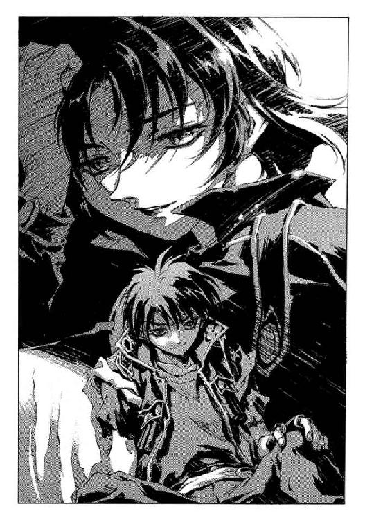
（彼女は、話したくないんだ......）
だがそのすぐあとに、彼女は続けた。
「......わたし、無意識なんて言葉は大嫌いなんだけど──人は一般的に無意識という状態を信じてる。時に無意識という言葉に罪を被せ、それを利用する人もいる。それこそ〝無意識〟のうちにね」
アザリーの解説は、唐突に方向を変えた。顔を相変わらず、影に隠したまま。
「──でも、無意識が意識を上回るなんてことが、もし本当にあるとしたら......にわかには、信じがたいけど......」
「なにが言いたいんだ？」
わけが分からずに、オーフェンは疑問の声をあげた。と──
彼女は、かぶりを振った。光と影の間を彼女の顔が行き来して、ほんの一瞬だけ、その表情が見える。
「あなたは、分裂してる」
「分裂？」
「あなたがさっき、上で魔術を放とうと構成を編んだ時から、気にはなっていたんだけどね」
彼女の双眸には彼の姿は映っていなかった。だがこちらを見ていた。
「あなたは、自分を殺す構成を編んでる。自分自身、意識せずにね。でも自分を殺す奇跡を願うことは意味を為さない。奇跡は願わなければ起こらないけれど、自分を殺すことを願うのは、意味的なパラドックスを生じさせてしまうから。魔術は物理を超えることはできても、意味を無視することはできない。なぜなら、それはあくまで奇跡であって、不条理ではないから」
不意に、アザリーの姿が消えた──いや、オーフェン自身が目を閉じていた。
なにも感じなかった。少なくとも、彼女の説明には。ようするに彼女は、彼に解説書きを貼りつけているに過ぎないのだから。
それでも深い絶望を覚えたのは、彼女の目を見たからだった。彼の姿が映っていない彼女のブラウンの瞳を。
オーフェンは、喉に一度唾を流し込んでから、うめいた。
「......俺が......死の教師を殺したことで自己嫌悪して......意識せずに、自分を殺そうとしているとでも言いたいのか？」
「違うと思うわ」
あっさりと否定し、アザリーは軽い嘆息をはさんであとを続けた。
「あなたが自分を許せないのは、あなたが自分自身を制御できなかったから──そうでしょう？」
「俺は──」
彼は立ち上がろうとして、動きを止めた。どこからか押さえつけられた気がしたのだ。
「俺は......」
言葉までもが、途中で消える。
アザリーは瞳を動かさないまま、告げてきた。
「心当たりがあるんじゃない？」
「俺は暗殺者になれなかったんだ！ なってはならなかったんだ！ それはあんたを......殺すことだから」
絶叫しようとして──実際に出た声は、ほとんどかすれ声だった。彼女も聞き取れなかったように、怪訝そうに眉を上げている。だが、意味まで伝わらなかったということはないだろう。オーフェンはすぐに続けた。
「疑念は、前からあった......先生が、俺を白魔術士と戦い得る暗殺者として訓練していたことは、勘の鈍いキリランシェロ──俺だ──この俺以外は、みんな気づいていた。あんただって、気づいてたんだろう!? 俺が、あんたを殺すために訓練されていたってことを。そうさ。そしてなにより怖かったのは......先生がそう考えていたのなら、俺は絶対に姉さんを殺すことになるってことだ」
「それを認める気になったの？」
「早くから認めるべきだったと思ってる。とんだ回り道だった。だが俺は先生を信じていたんだ。彼がそんなことを考えるわけがないって」
「............」
彼女は、なにも答えてこなかった。ただ無言で──立ち上がった。天井は低いが、立って立てないことはない。
オーフェンもそれに合わせて、腰を上げた。立ち上がり、腰をわずかに落として、拳を握りしめる。
「いや......実際のところは、信じていなかったんだろう。残る逃げ道は、俺が暗殺者にならないことだけだった。殺さなければいい。誰も殺さなければ、姉さんを殺すこともない。だが、俺は殺してしまったよ。最悪の殺人だった。偶発じゃない。意味もなく、殺すまでもなかった相手を一撃で絶命させた──まったく自制できずに、完全に自分の意志で、自分の力で」
「わたしを殺すの？ 理由は？」
こちらの構えに対して棒立ちになったままで、アザリーはそう聞いてきた。彼女の目は見られない──視線を上げられない──が、その瞳に自分の姿が映っていることを、ほぼ絶対的に彼は確信していた。
「俺は今まで、自分がどうしてここに──この場所に、姉さんの目の前まで来なけりゃならなかったのか、ずっと分からなかった」
唇を噛んで、続ける。拳を握り込む力を、さらに強めながら。
「......だが姉さんとふたりきりになって、それが分かった」
「わたしを殺す理由は？」
聞き直されて、オーフェンは、顔を上げた。確かに、彼女の双眸には彼の姿が映っている。決然と口元を締めた、自分の顔が。
彼は、息をついた。新しい酸素を得て、肺が震える。
「理由......逃げ道がなくなったから、先に進むしかない」
一歩近づく。せまい洞穴の中では、それだけでもう手の届く範囲だった。
（彼女は反撃してこない......逃げもしないだろう）
オーフェンはそれもまた、確信していた。彼女もまた──逃げ道などとうになくなっているのだから。
じっとこちらを見つめるアザリーに、オーフェンは告げた。
「結局のところ俺は、このためにここに来たんだ......」
そして、拳を開いた。
右腕を振り上げると──思い切り、彼女の横面に手のひらを叩きつける。
ぱぁん、と短いが高い音が響き、アザリーの顔が、横に跳ねた。彼女はその場から一歩も動かなかったものの、ほおをはたかれ、衝撃に片目を閉じて横を向いたままで硬直している。
「............」
沈黙は、かなり長かった。
オーフェンは、彼女を叩いた感触の残る手をしばらく持て余していたが──しばしして、震える膝を地面に落とした。くずおれて、かぶりを振る。
「──るんだ、アザリー」
声がかすれて、出なかった。再度かぶりを振って、言い直す。
「帰るんだ、アザリー。帰る場所があるんだから。ティッシが待ってる。姉さんが帰るのなら、俺も帰れる。五年前にもどることはできなくても、それに近いものは作れる」
「無理よ」
アザリーは即答してきた。オーフェンは、さらにかぶりを振ると、
「無理じゃない！」
「無理なのよ」
見上げると彼女は、まっすぐこちらを見下ろしてきていた。
「......あなたにとっては、それでいいのかもしれない。でも駄目なの。わたしには、あなたじゃ駄目。なんだか、別れ話みたいで悪いけど」
彼女の言葉を浴びながら──
オーフェンもまた、彼女の顔を見返していた。
歯を軋らせながら、彼は聞き返した。
「......先生か？......」
「有り体に言えば、そうよ。チャイルドマンがいなければ、わたしにとってはそこは帰る場所じゃないの」
「正気なのか？ 彼は......死んだんだぞ」
「そうね。あなたじゃないけど──いえ、あなたと同じね。事故じゃない。わたしはわたしの意志で、彼を殺したわ。だから、わたしが責任を取らなければならない。そうでしょう？」
「死ぬ気なのか!?......そんなことはさせない......」
「............」
彼女はそこで、口をつぐんだ。なにも答えてこない。
ただ──
再び、まったく違うことを、彼女は言ってきた。
「あなたのその不調の原因は、精神的なものよ。精神っていうのは、神聖不可侵のものじゃない......けれど、壊すことも癒すことも難しい。そこが肉体とは違う。思考とも、少し違う」
「また話をそらすつもりなのか？」
オーフェンは鋭い声で囁いた。が、彼女は取り合ってこない。しごく落ち着いた眼差しで、ふっと微笑んでみせる。
「さっき、変わったって言ってたわね、キリランシェロ。昔とはもうすべてが変わったんだって。そうよ。本当に変わってしまったの。五年前に近いものなら作れる？ それすら無理よ。分かっているんでしょう？」
分かっていた──のかもしれない。
彼は、痛みを覚えるほどにそれを承知していた。だから、反論することもできなかった。
アザリーは、そのまま続ける。
「結局、あなたは心のレベルをキリランシェロ......少年時代のものまでもどしてしまっているんでしょうね。それを、本来の成長したところにまでもどすことができなければ、つまりは、あなたは今のままってことよ」
オーフェンは、視線を落とした。目を閉じる。だが彼女の声は聞こえてくる。
「わたしには......手助けできそうにないわね。あなたを最もキリランシェロに近づけている要因は──多分、わたしだから......」
最後の声は──あまりによく聞き取れなかった。もっとも、聞き逃しもしなかった。
彼女の声のくぐもり具合に、ふと、オーフェンは馬鹿なことを思いついていた。彼女は、泣いているんじゃないのか？
見上げてそれを確認する度胸はなかったが。
「ひょっとして」
彼女のつぶやきは、これで終わった。
「あなたには、もう、わたしは......必要ない......？」
◆◇◆◇◆
そこは《詩聖の間》と呼ばれていた。
呼び名に意味などあるまい──単に女神の間では、詩心に欠けるとでも先人が思ったのかもしれない。いや、思ったとすれば、あの教主か......
クオ・ヴァディス・パテルはがれきと化した扉に足を置いて、どこまでも広がっているような地底湖を眺めていた。
黒々とした湖面が、ゆったりと揺れている。水面から立ち上ってくる冷気が、彼の肌をちくちくと刺していた。否──
彼は、思い直した。冷気は立ち上ってきたりはしない。彼の肌を凍えさせようとしているのは、もっと別のものだ......
目を、上げる。
はるか遠く、湖面の上に、女がいる。
史上──キエルサルヒマ史上ではない、もっと遠大な歴史上、最も愚かな女が。
緑色の髪をゆったりとたなびかせ、四肢を垂らし、ただそこにいる。虚空より伸びる手に首をつかまれて。その女が動くことはない。ただし死ぬこともない。
クオは胸中で、聖言を唱えた。
（我ら、原初の血の聖なるかな──）
果たして、聖なる血は真実、聖なるものであったのか──
（生誕の美しきかな──）
生まれるべきであったのか──
（運命の正しきかな──）
それが何者の紡いだ運命であったのか──
（死の聖なるかな──）
............
彼は無言で、女を見据えた。と──
「クオ」
呼びかけられて、クオは、振り返った。あわてる必要はなかった。ただ、手のひらに汗はにじんだ。
立っていたのは、三十がらみの──もっとも、彼女が年齢通り三十歳に見えたとしたならば、それはなにかの勘違いだろう──女だった。実際彼女は、クオが知っているどんな女よりも若く見えた。もっともそれは単に年齢的な意味ではない、老いることを認めようとしない、そういった若さだが。
彼女は珍しく剣を携えていた。カーロッタ・マウセンである。
「見張り、ご苦労様ですわ」
からかうように、言ってくる──信用ならない気安さで、彼女は続けた。
「......逃亡者の足取りがつかめました。部下の報告でね。それでわたくし、出向こうと思うんですけれど」
「行けばいいだろう」
クオはそう言うと、再び《詩聖の間》へと向かいかけた。だが、それより早く、彼女が言ってくる。
「教主様よりお言葉を賜ってきましたの」
彼女の声は明るかった。不必要に明るかった。
その明るさの理由は、考えるまでもなくクオには分かった──カーロッタは教主への拝謁を許されてなどいなかったはずだった。それをした、そして、それをして生きているということは、教主に許された、ということだ......
なにも答えないでいるうちに、彼女はすぐにあとを続けてくる──
「至急、教主様の御許へ出頭するよう、教主様よりご命令ですわよ──クオ・ヴァディス・パテル」
◆第十章 お師様
サルア・ソリュードにとっては、よく知った家だった。
だが、他人の家でもあった。
どこを取っても申し分ない──内装も外装も、最高のものだ。無意味にややこしいその間取りは、気の触れた建築士が設計したとかいう代物で、屋敷全体を三棟に分けて、それぞれが半階ずつ、ずれこんでつながっている。どこを見ても柱がないのはそのせいである。すべての階が、ほかの階を支えているのだ。なんにしろ、この屋敷の図面を作成した直後にガラスのコップを噛み砕いて失血死したとかいう人間の建てたものが、その後五十年も倒壊せずに残っているというのだ。これが最高のものでなくてなんなんだと、サルアは皮肉混じりに考えていた。
部屋数はさほど多くないが、私室以外の部屋が、かなり大きめに作られている。代々教師長の地位を受け継いできた家系ならではのものといえるだろう──広間と応接室はいくらあっても足りないのだ。一年を通して数回しか降らないこの長雨の時だけが、この屋敷から来客が途絶える間隙だった。神殿庁の使い走り、そしてその家族、暇を持て余したほかの教師長、そしてその家族、説教を聞いていなければ自律神経が保てないらしいそこいらの都市信徒たち、そしてその家族......
「......なんで誰もいないんだ？」
サルアは、門の前で兄に手渡された剣を手に──兄に、問いかけた。濡れた髪をタオルで拭きながら、部屋の中を見回す。
兄の書斎である。せまくはない。
白、白、白ばかりの、屋敷のほかの部屋と違って、この部屋にだけは赤いカーペットが敷いてあった。屋敷の数倍は古いという最高級のものだが、触ってみると手触りは悪い。まったくむらのないただの真紅が、床に広がっている。繊維のありとあらゆる隙間には黄塵が詰まり、また逆にむらのない黄色い光沢を付け加えていた。部屋の左右には書棚が構えている。分厚い本の背表紙がずらりと並ぶ中、書棚の中のたったひとつ、左奥のものにだけは本の代わりにトロフィーやらなにやらが飾ってあった。スティックボール、スポーツ剣術、実戦剣術、投げ縄、料理コンテスト、脈絡のない勲章の羅列だった。応接室に飾りきれなかったものが、ここにある。
すべてがばらばらな勲章の中で、唯一の共通点──それはすべてにソリュード姓が刻まれていることだった。先祖代々の勲章たち。
たったひとり、サルアの名前だけはどこにもない。
「使用人たちは、すべて神殿庁に引っぱられていった。帰ってはこないだろう」
ラポワント・ソリュード──この屋敷の、現当主は、雨粒が激しく叩きつける大きな窓を背後に、落ち着いてそう答えてきた。
書斎机の上のガス灯が、ほのかな明かりを広げている。夜が完全に明けたとはいえ、分厚い雨雲は暗い影を地上に落としている。
「無関係の使用人を拷問にかけるほど愚かじゃねえよ──クオとカーロッタは」
うなるように言いながら、サルアは手にしている剣の柄を、ゆっくりと握った。硬いグリップには、微妙に手の跡が残っている。彼の手には馴染まない。もとの持ち主が、いやというほど使い込んだ感触があった。
剣はさほど重くない──が、人間を殺傷するのに不足するわけではない。抜刀したわけではないが、刃が薄いのはすぐに分かる。大陸では、このような肉を切断する鋭利さを備えた剣が圧倒的に主流だったが、サルアはあまりそれが好きではなかった。裂傷を負っても、人間はまだ動ける可能性がある。骨を叩き折られた場合、その可能性はない。
剣をもてあそびながら、彼は続けた。
「今は......どうなってるんだ？ 神殿は」
「騒動。その一言だ。被害が大きすぎた」
ラポワントは、淡々とそれを述べた。ふっと、苦笑するように顔を歪め、
「あれを修復するには、また王都との取引が必要になる」
「どんどん分が悪くなっていく......な」
「それがお前の狙いなのではなかったのか？」
苦笑を引っ込めて、ラポワントは顔の前で両手の指を組み合わせた。顔の下半分を隠して──言ってくる。
「あまり、駄々っ子のようなことはしてもらいたくないものだな。お前を──唯一血がつながった弟であるお前を、後悔させたくはない」
「脅しか？」
「忠告だよ。何度目かのな」
「何十度目かだろう」
言いながら、カーペットの上のサルアは唾を吐き捨てた。両手を広げて、言葉もともに吐き捨てる。
「俺は俺で、やりたいことをやる。言ったはずだぜ」
「危険な遊びは、やめさせなければならない。兄としてはな」
「俺だってひとりの神官だ！ あんたと議論するくらいの立場は得たんだよ！」
反射的に、声をあららげる──が。
ラポワントは、それには答えてこなかった。
カーペットは雨の湿気を久々に吸って、足音を綺麗に吸収してくれる。サルアは兄に背を向け、歩き出した。剣の柄を肩越しに後ろに見せて──聞く。
「彼女は、いつここに来たんだ？」
「今朝転がり込んできた。その直後だ。お前が神殿で反乱活動を行ったと呼び出されたのはな。とりあえず、寝室に転がしておいたよ。あそこが一番目立たないからな」
兄の答えとともに、サルアは剣を見やった。
その剣は──
メッチェン・アミックのものだった。
三階に兄の寝室がある。兄の──というより、代々の当主の寝室だが。
サルアは廊下を進みながら、どこか肌にちくちくとしたものを感じていた。歩き慣れた廊下だったが、なにか空気が違う。
雨のせいか。それも違う。
彼は根拠のないなにかの皮肉を感じながら、ひとりで進んだ。手に提げている剣に、我知らず力が入っていたことに気づく。
寝室は一番奥だった。
寝室、というよりは、三階部分全体が、ひとつづきの家であり、寝室のようなものだった。そうしようと思えば、この三階だけで暮らすこともできる。風呂もあればシャワーもある──水不足のこの街では、おおっぴらには使えないが。遊戯室も、テラスもある。ないのは炊事場だけだ。
どの部屋もすべてつながっているが、廊下から見ると、それぞれの部屋にやはり扉がある。寝室はそれらの中で、最も奥まった場所にあった。
「我ら、原初の血の聖なるかな......」
自然に、サルアはつぶやいていた。いや、自然にではない。習慣のようなものだが。
寝室まではあと三歩。
「生誕の美しきかな」
あと二歩。
「運命の正しきかな──」
そこで止めて、彼は、最後の一歩を残し立ち止まった。
右斜め前の寝室の扉をにやりと見つめながら、うめく。
「......死の聖なるかな」
その最後の一文句だけが、寝室の扉に記してあった。
──『死の聖なるかな』──
サルアにとっては思い出す必要すらもないほどありふれた、聖言の一節である。それを読み上げてから、彼は最後の一歩を床に刻んだ。扉を開ける。
寝室の中は、暗闇だった。窓に分厚いカーテンが掛けられている。
サルアの脳裏に、ひっかかるものがあった。兄が、起きた時にカーテンを開けることを忘れるはずがない。使用人がいなかったとしてもだ──
彼は、戸口から跳び退いた。同時に、真っ暗な部屋の中から、なにかが飛んでくる。
飾り物の皿だ、と理解しながら、サルアは身をよじった。暗闇の中から勢いよく飛び出してきた皿が、彼の横を通り抜けて廊下の壁に激突する。
皿が砕ける派手な音（そしてその皿の値段）に身をすくませながら、サルアは手に持っていたメッチェンの剣を、床に落とした。床の、自分の右足の上に。
そして、部屋の中からまたなにかが飛び出してくる。
人影だった。確認するまでもない。黒い髪をぼさぼさにした女。皮鎧。垂れ下がった右腕をかばうようにしながら、左腕で殴りかかってくる──
飛び出してきた女は、こちらを見て、はっと動きを止めた。その瞳にありありと驚愕の色が広がっている。絶句しながらもかすれた声で、彼女がうめくのが聞こえた。
「サルア......!?」
そして、すべてが一瞬のうちに。
サルアがとっさに蹴り上げた彼女の剣が、放心しかけていた彼女の下顎に命中し、死の教師メッチェン・アミックは伸び上がるように、きれいな姿勢で後方にひっくり返った。
「痛たたたた......」
「いやあ、悪い悪い。なにしろ、とっさのことでびっくりしちまってよ」
あごをさすって涙目でうめく彼女を見ながら、サルアは頭をかいて弁解した──もっとも、彼女はじろりと半眼でにらみ返してきたが。
「びっくりしたのはこっちよ。おまけに殴られて」
「驚くこたぁねえだろ。ここは俺の家なんだからよ」
肩をすくめて言いながら、サルアはメッチェンを眺めていた。自分の剣をひざに置いて、ベッドに腰を下ろしている。いつも頭に巻いていた青い布を右腕に巻き付けているのだが、どうやら負傷しているらしい。彼女がさっきからほとんど右腕をあげようともしていないことが気にかかった。
雨に濡れて髪もぼさぼさ。顔も泥で汚れている。サルアは適当に部屋の中を見回すと、ベッドのわきにある戸棚からタオルを取り出し、彼女に投げてやった。
ふわり......と空気抵抗を受けたタオルは、ゆっくりと広がって彼女の頭に被さる。
それを手に取って、メッチェンは言ってきた。
「そうね。どうしようもないほど、あなたの家だわ」
と、苦々しげに唇を歪めて、
「ここしか逃げ込む場所がなくなって、命からがら潜り込んだら、あっさりあなたのお兄さんに取り押さえられて──こんな病室みたいなところに放り込まれて」
「それで、さっきの奇襲は兄貴を捕らえて人質にでもしようとしてたのか？」
「違うわよ。単に一発仕返ししてやらなけりゃ気がすまなかっただけ」
「なんにしろ、俺に返り討ちにされちまうようじゃ、兄貴にはとうてい敵わねえよ」
言いながらサルアは笑っていたが──言い終わるまでには、笑みを引っ込めていた。ため息をついて、部屋の内装を見やる。
「......にしても、病室みたいとはぴったりだな。一応、寝室なんだけどよ」
実際──
そこは病室のようではあった。白い壁。固いベッド。窓は大きいが、カーテンを閉じれば昼でも暗室にできる。唯一病室らしくないところといえば、さほど清潔でないところくらいか。黄塵は言うまでもないが。
ベッドの頭には、聖典がきっちり立てて並べてある。
「もし病室だとしたら、皮肉よね、あの扉の文句」
「〝死の聖なるかな〟──」
サルアは朗々と唱えると──指で適当に聖印を切った。
「家系の伝説だよ。うちの初代当主ってのは、この部屋で死んだらしくてな。しかもご丁寧に、去り際の一言ってのが、その聖言ときた。以来、ソリュード家の当主はこの部屋で死を迎えるって伝統ができちまったのさ。聖言が唱えられるかどうかは、そいつの死に方次第だけどよ。唱えることができれば......その魂は、ユグドラシルへと旅立つと言われている」
「唱えられなければ？」
「知らねえよ。なんにしろ、死者の悪口を言う奴はいない」
あっけなく告げる。はぐらかされたことを疑っているのか、怪訝な顔を見せているメッチェンに、サルアは笑いかけてやった。
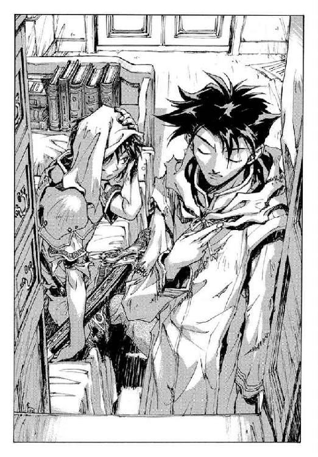
と──
唐突に思い出したように、彼女が口を開いた。
「......カーロッタが、あなたは死んだって言ってたわ」
「彼女は、地下牢での尋問になんぞ立ち会ったことはないだろうからな」
サルアは、へへっと笑いながら腕組みした。
「クオの野郎が尋問材料をそう簡単にゃ殺さないってことも知らなかったんだろうよ。まあ実際......あと半日もほっとかれりゃ死んでたのには違いねえだろうけど。ちなみに、俺は別に今際の際に聖言を唱えようとどうだろうと、関係ないけどな」
「どういうことなの？ いえ、聖言云々はどうでもいいけど」
タオルを手に、メッチェンが顔を上げる。
天井を見上げ──サルアは、後ろに退がった。窓枠に背を預けると、窓ガラス越しに雨粒の感触が伝わってくる。
「......キリランシェロが、ちょうど地下から神殿に侵入してきてな。どうも、レキとかいうディープ・ドラゴンが、地下道を案内したらしい」
右手をあげ、髪をかきあげる。
彼はわずかに声をひそめた。戸口を見やって。もっとも、あの兄が扉に聞き耳を立てている姿は思い浮かばなかったが。
「これは、ひょっとしてだが──ドラゴン種族と利害が一致したのかもしれねえな」
「ドラゴン種族と？」
「奴らにしてみても、自分の目となる者が女神を確認するのは、長年の悲願だったはずだ。教会創立以来、二百年間も果たせなかった望みさ......奴らは何度となく、最終拝謁を果たした人間を狙っていたはずだ。マクドガルは実際、あと一歩ってところでディープ・ドラゴンに接触するところだった。貴重な記録を破壊する危険性がなければ無理やりにでも記憶を探っていたかもしれねえが、なんにしろ、使い魔がもっと協力的だったなら、うまいことマクドガルから最終拝謁のことを聞き出していただろう。俺もそれを待ってたんだが、キリランシェロの余計な茶々入れがあってね。やっこさん、自殺しちまいやがった。今にしてみりゃ、それでも良かったのかもしれねえが」
こめかみに拳銃の形を作った指先を当て、撃つジェスチャーをやってみせる。
「だが、奴らにしてみれば、最終拝謁を果たした人間が接触してくるのを待つなんて消極的なことよりも、自分の仲間を直接、神殿に送り込むことができれば、それに越したことはないだろうさ。腕の立つ人間の黒魔術士がその護衛になってくれるんなら、不可能じゃない......実際、それがかつてこの街に潜入してさらに脱出した男の生徒だってんなら、申し分ないだろ」
「あのドラゴンの赤ん坊が、聖域からの斥候だっていうの？」
メッチェンが、笑う。だがサルアは深刻な表情を壊さないまま、かぶりを振った。
「《フェンリルの森》にいた時に、俺なりに研究してみたんだがな──ディープ・ドラゴン種族ってやつは、 自分で思考できねえらしいんだ。例の呪いのおかげでな。魔術によって、なんとか自我を保っているらしい。こいつは、ドラゴンに使い魔にされていた人間から聞いたことだから、まあ間違いはないだろう」
「使い魔にされていた女の子、ね」
にやにやしながら言ってきた彼女の言葉は無視して、続ける。
「ディープ・ドラゴン種族はその強大な魔術で、ひとつにまとまっている......そうでなくとも、あの赤ん坊が、自分の種族と精神的につながっている可能性はある。となれば、ドラゴン種族たちの〝聖域〟は《詩聖の間》の存在を知った、てことになるな......」
「どうするの？」
メッチェンの問いに、サルアは、顔面から力を抜いた。笑みを浮かべて、腕組みを解く。頭の後ろに手を組んで、彼はさらに窓枠に体重を加えた。
関係ないことのように、つぶやく。
「オレイル爺さんの話じゃあ......十年前、チャイルドマン・パウダーフィールドは《詩聖の間》で、平気な顔をして最終拝謁を果たしたそうだ。まるで、そんなことは端から知っていたというようにな」
当時はまだ無名だったその暗殺者は推定二十歳──キリランシェロとほぼ同じ年齢だった。それに意味はあるのかもしれない。ないのかもしれない。だがなんにしろ、運命じみたものをこじつけることはできそうだった。
サルアには、それをするつもりはなかったが。
「......今、キリランシェロは《詩聖の間》にいる。事情はよく分からんが、クリーオウの話じゃ、死んだはずの天魔の魔女もいっしょだそうだ。お世辞にも計画通りとは言えないが、少なくとも意図していたことは達せられている。んで、ドラゴン種族のことについては──」
緊張した面持ちを見せているメッチェンに、彼は、肩をすくめてみせた。
「......ほっとくさ。言っただろ？ 利害が一致したってな」
「わたしたちの目的と？」
「そうだ」
目を閉じて、断言する。
「教会の存在を──根底から変えてやるのさ」
◆◇◆◇◆
大男はその部屋に入りながら、自分でも驚くほどの無心を保っていた──理由は分からない。想像もつかなかった。
自分はこれから、教主より死の宣告を受けるに違いないというのに。
不祥事、などという次元の問題ではない。ラポワント・ソリュード教師長が、どれだけひかえめにこの教主に報告を行っていたとしても（もっとも、そんなことは期待するだけ無駄だろうが）、彼の極刑は間違いのないところだった。十年前に引き続き──またもや魔術士に《詩聖の間》をのぞかせてしまったのだから。
だがそれでも、部屋の入り口に転がっている、少女の死体をまたいで通りながら、彼は自分が落ち着いているのだと自覚した。その発想の矛盾にも気づいていたが、それを胸中で笑ってやれたことに関しては、間違いなく動揺がなかったからに違いない......
覚悟を決めたせいか──
（覚悟？ いや、違うな......）
手札がなくなりつつある。やれることが決まってしまっただけのことだ。
「クオか」
部屋の奥から──部屋の中央を隔てる薄紙の向こうから、声が聞こえてきた。静かな声。
クオ・ヴァディス・パテルは聖堂に入ってからすぐひざを折ると、胸元で聖印を切った。目を伏せて唱える。
「我ら、原初の血の聖なるかな......」
「聖なるかな」
薄紙の向こうに座す男──教主ラモニロックは、座の上で微動だにしないまま、聖言を返してきた。
クオは、さらに深く目を伏せた。床を見つめ、あとを続ける。
「生誕の美しきかな......」
「美しきかな」
答えを求めるような心持ちで、床を見据える。視線で貫けるほどに。だが無論、床にはなにも記されていない。
クオは胸元で聖印を切っていた右手を、ふと止めて下に降ろした。
「運命の正しきかな......」
「正しきかな」
定められた通りの聖言を、この教主は何度唱えたのだろう──この場所で。
クオは唐突にそんな思いに駆られながら、下ろした腕を、背後に回した。そして。
「死の......」
言葉を止める。
沈黙が、あたりを包んだ。
「............」
なま暖かい唾を喉の奥に流し込みながら、クオはつぶやいた。
「......また、殺してしまわれたようですね、教主様」
「聖言の途中で問答か？ クオよ」
教主の声に、わずかだが苛立ちがこもっているように聞こえる──
すくみ上がりかけた内臓をなんとか落ち着かせて、クオは、言い直した。
「教主様の身の回りをお世話することを、無論誰もが光栄なことだと思い、また死して余栄ありと、その役を受けるのをためらう者もいますまいが......」
「その者は」
と、教主は、仰向けになって戸口に倒れている少女の死体を指し示したようだった。仕草は分からないが、気配で分かる。
「......この教主の顔を見ていたのだ。クオよ。お前が甘かったのだ。もっと、深くえぐるべきだった」
淡々と、教主の言葉は続く。
「教主は、お前に罰を与えようと思っている......が、その理由をお前に勘違いしてもらっては困るのでな。少女に同情し、それをこの教主よりも重んじた──その心根が情けないと思っているのだよ。傷を、深くえぐれなかった罪。それがお前の最大の落ち度だ」
「あの少女の眼球は、完全に破壊されていました......破片を指で引っぱり出したのですよ。少女は教主様の尊顔を視線で汚したりはしておりません。それに......あれ以上深い傷は、脳に達します......」
柔らかい声音で──それこそ、赤ん坊をあやすように、彼は答えた。
「あなたと違い、人間の身体はもろいのです......よ」
その一言は、切り札だった。唯一の切り札だったが──
それなりの効果はあったようだ。教主の言葉が、一瞬ならず止まる。
クオはゆっくりと面を上げた。鎧に包まれた巨躯が、音も立てずに起き上がる。広くはない聖堂の中で、クオは直立して薄紙の人影へと対峙した。
「わたしに......精神支配が通じると思っていらしたのですか？ 教主様」
「やはり、その鎧は身に着けさせるべきではなかった。いつから気づいていた？ 最終拝謁か？ オーリオウルの入れ知恵か？」
「いえ。神の......本当の〝女神〟様のお導きだと思っておりますよ」
腰を落とす。剣帯についている留め金が、わずかに軋む音を立てた。彼は右手を開いた。大きく開いた手で、腰の、大剣の柄を握りしめる。
長大なガラスの剣──死の教師の象徴たる武器、ガラスの刀身を持つ剣を、彼は一息で引き抜いた。重量のある剣が、宙に解き放たれ重い風斬り音を奏でる。瞬間、彼は叫んだ......
意味などない、ただの叫び声だった。
叫びながら彼は、大剣を大きく振りかぶり、薄紙に映る影に叩きつけた──特殊な硬質ガラスでできた刃が、裂くというよりは引きちぎるように、薄紙を破る。薄紙は長年に亘って蝋を吸い、かなり硬くなっていたものの、しょせん、剣を防ぐほどの力はなかった。ガラスの剣が透明な軌跡を引いて、その限りなく薄い壁を──だがはるかな時代を超えてなにかを隔て続けてきた薄紙を──、ただのゴミに変えた。
振り下ろした剣を引きもどしながら、クオは目つきを険しくしていた。薄紙は破られた。その奥に、教主がいる。誰もその姿を見た者はいない、キムラック教会の済世者、至高の聖人、ラモニロックが......
椅子に座したまま、ほおづえをついてこちらを見返してきているのは、緑色の双眸だった。
細い。不自然なほどに細い四肢。足を組み、肘をついているその姿は、大がかりな知恵の輪を連想させる。クオは止まらなかった。剣を振り上げ──
教主に振り下ろした大剣は、木っ端微塵に砕け散った。教主の側頭部にえぐるように叩きつけられ──そして、反動で粉々に割れてしまった。
黄塵をも圧倒して、きらめくガラスの破片が、宙を舞う。
クオは即座に一歩飛び退いた。座した教主はまったく微動だにしていない。にやにやと、ただこちらを見据えている。
クオもまた表情は作っていなかった。面に現れるようなものはなにも残っていない。彼はすぐさま後ろ腰から、漆黒の短剣を引き抜いた。むらのない墨のような刀身に左手で数語、魔術文字を描くと、短剣の刀身が、ぼろっと崩れ落ちる──
ジグソーパズルのようにばらけた刀身は、だが床に落ちる前に再び浮かび上がり、剣の柄の前に整然と並んだ。複雑な、文字のような形をした刃の部品は、クオが勢いよく剣の柄を振り上げた時も、刀身の形を保って追いかけてきた。そして──振り下ろした時も。
無数の刃は、流星群のように一直線で教主を狙った。だが。
初めて、教主は動きを見せた。左手を、ひょいと上げたのだ。
瞬間──不可視の壁に遮られたように、刃の部品たちは虚空で受け止められていた──なにげなく教主があげている、左手の手前で。
息が、ひきつれる。複雑な音を喉で鳴らして、クオは柄を握る手にさらに力を込めた。一瞬だけ、魔剣の力が高まったような気がしたが。
ぱりぃん──
砕けるような音を立てて、刃は力を失い、ばらばらと床に落下していった。糸を失ったマリオネットのように。
「............」
立ちつくし、クオはただ、砕けたガラスの剣と、力を失った星の紋章の剣を見下ろしていた。すべては一瞬だった。その一瞬の間に、教主は二度は死んでいたはずだ。だがすべてが終わってみて、教主がしたことは、こちらを見て、腕を動かしただけに過ぎない。
その沈黙を楽しむように、ことさらに口を閉ざしていた教主が──しばらくして、ふっと笑みを浮かべる......
「白魔術というものを知っているか？ クオよ」
緑色に輝く、三角形の双眸を、ゆったりと閉じてまた開く。
「人間の魔術の究極形......いや、人間という種族が魔術に対して出した、最終的な解答といったほうが近いかもしれないな......」
言いながら、教主は左手を下ろした。細い腕。白い肌の細い腕。奇妙な光沢を持ち、関節だけが奇妙に膨れた、不自然な骨格。
それがなにであるかを、クオは知っていた──
「ドラゴン種族の造った人形が......」
彼は吐き捨てて、同時に剣の柄を床に放り捨てた。と──甲高い哄笑が、聖堂を満たす。
「あははははは！」
笑ったのは、教主だった。いや──教主の座に座った、人形だった。
ドラゴン種族、それも天なる人類と呼ばれたウィールド・ドラゴン種族。その魔術によって造られる、一種の人造人間である。いや、人造人間という呼び名は適当ではない。天人の人形は、すべて人間を改造して製造されるのだから......
「なにがおかしい！」
クオは怒号をあげた。右腕を振り、続ける。
「わたしをたばかってきたな──この聖都のすべてをだましてきたのだな!? この人形が──」
「ぬかすな。無礼なことを」
静かに返ってきただけのその言葉に。
物理的に感じるほどの圧迫感を覚えて、クオは吐きかけていた言葉を呑み込んだ。教主の、緑色の眼が──肌と同じ、奇妙な光沢で、ぎらりと輝く。
「......そうだな。天人の造る人形に、わたしは似ているのかもしれない」
卵形の頭部に、不釣り合いなほど深く裂けた口を、教主はにやりとさせた。
「だが、この教主に払うべき敬意を、お前が忘るるいわれなどないのだよ。この教主はまさしく、教主なのだから」
滑らかにそこまで言って──また口を閉じる。
クオは、ひとりで後に残されたような心持ちになりながら、一歩前に出た。武器はまだ、尽きたわけではない。
それは教主も分かっていただろう。だが教主はまったく動こうとする気配もなく、じっとこちらを見ているだけだった。芝居でも見ているような表情で。
「安心しろ、クオ。教主は怒っておらぬ。教主は怒りなど持たぬ......」
教主はそう言いながら、光沢のあるほおを自分の手で撫でた。
「この教主も、昨夜の騒ぎはネットワークで見ていた......あの男の弟子なのだろう？ 逃がしたか。だが、殺してしまうよりは良かった......」
くつくつと、笑ってさえみせる。
「クオよ。せっかくの機会だ。貴様に話しておこう。わたしは......教主ラモニロック」
口を開かないまま、それは言ってきた。
「そして、運命の女神と邂逅した、人間種族の始祖魔術士だ......」
◆◇◆◇◆
外見の優雅さには関係なく、ソファーは固かった。
神官の屋敷なのだから──と思えば、まあそういうものなのかもしれないが、小一時間座り続けているのも、さすがにつらい。マジクは数秒に一度は座り直しながら、落ち着かない思いで部屋の中を見回していた。細い木を組み合わせたような大時計は、少し曲がった長針を刻々と動かしている。針は互いに十の手前で重なろうとしていた。雨に叩かれ曇った窓。カーテンは風もないのに揺れている。
そこは応接室らしかったが、それにしては家具が少なかった。もしかしたら、一番程度の低い応接室に通されたのかもしれない──実際、それはありそうではあった。部屋の一角には観葉植物が五本、まとめて置いてある。それぞれが極端に背丈の違う、同じ種類の木々。一本は明らかに天井までとどきそうになっていた。白い壁。どこにも傷はないが、うっすらと黄塵の跡が見える。黄塵がいつも均一に空気に混じっているせいか、砂の跡にも大きなむらはない。
理想的とは言えなくとも、整った部屋ではある。天井からぶら下がった、大きめのガス灯。そのシェードも白。膝ほどの高さのテーブルにも白いクロスがかぶせてある。壁に掛かっているのはタペストリーのようだが、幾何学的な模様が幾重にも連なった単調なもので、正直、高価そうにも見えない。機械による大量縫製品だろう。この街では、そんなものでも意外と貴重品なのかもしれないが。あとはテーブルの上の小物。三人の女神の小さな像。からの水差し。使用済みらしいガラスのコップ。
そして──
鍵のかかった扉と格闘しているクリーオウ......
マジクは右手で顔を覆って、つぶやいた。
「開かないと思うよ、多分」
「おっかしいわねー」
動かないノブに張り付いて、がちゃがちゃと音を立てているクリーオウが、突然思いついたように、こちらを振り向いてきた。
「......そーいやあんた、なんとかできないわけ？ オーフェンは鍵を魔術で開けたりしてたわよ」
「理解していないものに魔術で干渉することはできないんだ」
「............？」
疑わしそうに眉根を寄せている彼女に、マジクは顔を上げて続けた。
「わけの分からないものを、なんとなく思い通りにしたい──てわけにはいかないってことだよ。レキに命令しても思い通りにしてくれないことがあるって、クリーオウだって言ってたろ？ ぼくは、鍵の構造なんて知らないもの」
「オーフェンは、うちのお姉ちゃんの部屋の鍵、開けてたわよ」
「お師様は、ある程度の鍵なら分かるんじゃないかな。それでも、お師様だって本当に複雑な機械式のものはどうしようもないはずだよ。それこそ、扉そのものを吹き飛ばすとかしかないんじゃないかな」
「やっぱ、そーするしかないかしら」
「いや、やってくれってことじゃないんだけど......」
とりあえず彼女が本気のようだったので、マジクは立ち上がって止めようとした。
と──
扉が、ノックされた。
「............？」
クリーオウが、訝しげにこちらを向いてくる。ふたり目を合わせて、ぱちくりさせていると、再び扉が静かに叩かれた。
続いて、落ち着いた声音で扉の向こうから声が聞こえてくる。
「鍵がかかっている......開けてくれないか？」
「開かないのよ」
レキを頭に乗せて胸を張り──開かない扉に向かってふんぞり返って、鼻息まで吹きながらクリーオウが答える。ややしてから、扉の向こうから声が答えてきた。
「............ドアノブの下にある取っ手を開いてくれ」
「へ？」
胸を反らしたまま、彼女は間の抜けた声をあげた。疑わしげにそろそろと言われた通りの場所を探り──
数秒後、がちゃりと音が鳴った。
あとは音もなく、扉が開く。
「............」
そのままの姿勢で硬直しているクリーオウの背中を見ながら、マジクは、ふと気づいた。
「そーいえば、内側から開かない鍵をつけるわけないよね」
「なんでもっと早く気づかないのよぉぉぉぉっ!?」
と、わめいて突進してくるクリーオウをよけるため、ソファーの後ろにいったん待避しつつも、マジクは開いた扉の陰から見える男の姿を観察していた──三十歳くらいだろうか？ 精悍な顔つきの男である。角度によっては若くも見え、老けても見えそうだった。地味な装飾の入った白い、神官のような服を着ている。まあ、この街で神官らしく見えるのならば、神官なのだろうが。
「君たちが、神殿に侵入したという魔術士......かね？」
男は入ってくるなり、扉を閉めもせずにそう聞いてきた。顔はこちらを向いているが、視線は微妙に違うところへと向かっているように、マジクは思えた。う～、とうなり声を発しながら近づいてくるクリーオウを気にしながら、なんとか答える。
「......ええ」
「ほう」
男は胸元で軽く聖印のようなものを組んでから、部屋に入ってきた──意識してやったというよりは、単なる習慣のようだったが。
彼が入ってくるのを見て、クリーオウもとりあえずこちらに突進してくるのはやめて、そちらを見入っている。マジクはとりあえずなにか言わなければならないような気がして口を開いたが、具体的な言葉はなにも浮かんでこなかった。口を半開きにしているうちに、男が穏やかな顔で言ってくる。
「わたしは、ラポワント・ソリュード教師長......祖先の血の流れの中、この現在の時を代表してこの家系を預かっている」
ひどく回りくどい言い方だったが──ようするにこの屋敷の主なのだということなのだろうと、マジクは当たりをつけた。教師長、ということは高位の神官なのかもしれないが、正直なところ、教会の組織などマジクはよく知らなかった。
ただ──
（キムラック教会の人間ってことは、魔術士を嫌悪してるはずだ......）
自分に言い聞かせるように胸中でつぶやいて、マジクはこっそりと、いざという時のために発するべき魔術の構成を思い浮かべた。なるたけ警戒心は面に出さないようにしながら、声を出す。
「......ぼくは、マジクっていいます──彼女はクリーオウ」
「なんであんたが紹介すんのよ」
どうでもいいようなことを横からクリーオウが指摘してくるが、とりあえず聞き流しておく。
幸運にも、クリーオウが続けて声を──それも大声を──あげそうに見えた直前に、ラポワントが言葉を発してきた。平静な表情に、かすかに苦笑を浮かべて。
「なぜ、来たのかね？」
「え？」
静かに疑問をぶつけられて、マジクは意味が分からずに聞き返していた。ラポワントはやや鷹揚な仕草で両手を小さく広げると、続けた。
「この聖都のことは知っていたのだろう？──我々が、君たちの訪問を望まないことも知っていたはずだね？ だったら、あえて我々の平穏を乱すのは、マナー違反なのではないかな」
「いえ、あの──」
──ぼくはお師様に連れてこられただけですから。
とっさに吐きかけたせりふを、彼は、ぐっと呑み込んだ。本当に急に思いとどまったため、喉に反発の痛みすら走っている。全身からどっと噴き出る汗と体温とを不快に思いながらマジクは、なんとか言い直そうと言葉を探した。が、頭が混乱して、なにも出てこない。心臓だけが声より大きく脈打っているように感じる。
と、混乱を救ってくれたのは、クリーオウだった。彼女はなんということもないように、レキを胸に抱き直しつつ、口を尖らせて言った。
「行っちゃいけない場所とそうでない場所が分かれてるほうが、変なんじゃない」
「もしわたしが君の寝室を荒らせば、泥棒だろう？ 君たちがやっているのは、そういうことなのだよ。せめて自覚してほしいね」
彼はクリーオウの不平を真正面から浴びてもまったく気にせずに、穏やかなままそう告げてきた。
「君たちはどう感じているのか知らないが......ここは、我々の、せめてもの安息所なのだから」
その言葉に、かちんときたのか──それともなにか反論されれば癇に障らずにいられないのかもしれないが、なんにしろ、クリーオウが弾かれたように顔を上げる。彼女はさらに噛みつくように、口早になった。
「誰も、来るなと言われなければいちいち来たりしないわよ、きっと」
「我々は──」
「ぼくたちは──」
と、会話が止まる。
クリーオウを遮るつもりが、ラポワントがしゃべりはじめたところに割って入ってしまい、マジクは再び言葉を失ってしまった。驚いたような顔がふたつ──クリーオウとラポワントが、視線の待ち合わせ場所に選んだように、両方きっちりこちらを向いている。
思わず後ずさりしそうになりながら、マジクは咳払いして踏みとどまった。髪をかき上げるふりをして額の汗をぬぐい、言い直す。
「ぼくたちは、その──特にあなたたちを困らせようと思って来たわけじゃないんです。あの神殿に侵入したのも、意図してのことじゃなくて......地下道みたいなところで迷って、あそこに出ちゃっただけなんです。神殿を壊しちゃったり、神官の人をケガさせたりしちゃったのは、こっちが悪いのかもしれないですけど......それも、そっちが先に襲いかかってきたから」
「ケガ......？」
なぜか、妙なところでラポワントが怪訝な声をあげるのが聞こえたが──マジクは言葉を止めなかった。せっかく踏み出したものを、もとの場所にもどりたくない。
（ぼくが......やらなきゃ。お師様もいないんだから......）
息を吸ってから、彼は続けた。
「出て行けと言われれば、出て行きます。少なくとも、それだけのことはしたと思っています」
「マジク!?」
クリーオウが、甲高い驚愕の声をあげる。あまりの声量に、レキが耳をたたむのが見えた。
「あんた、なに言ってるの!? オーフェンが──」
「分かってるよ！ クリーオウは黙ってて！」
彼女に向かって一声叫んでから──さっと目をそらし、ラポワントに向けて彼は続けた。
「......神殿には、お師様が──ぼくらの仲間が、まだいるんです。あの地底湖に落下した、って彼女は言ってます。その人の生死の確認をさせてもらうまで、ぼくらはこの街から黙って出て行くわけには──」
マジクは再び、言葉を途切れさせた。
が、先刻と理由は違っていた。
夢中になってしゃべっているうちに、いつからか、ラポワントの表情が変わっていることに気づいたのだ。声は少し厳めしくとも、少なくとも顔だけはあくまでリラックスさせていたラポワントが、ほうけたように、白い顔を見せている。血の気が退いたのか妙に青白いほおは、それを吊る筋肉の力を失って、だらんとしていた。驚いた、というよりは絶望したように見える。
（これと似たような顔を見たことがあった......）
と、マジクは、はっきり記憶していた──半日かけて作った特大ケーキを手にしたまま階段を転げ落ちる瞬間の、母の顔。
すうう......と、奇妙な音を聞いて、マジクはぎょっとした。ラポワントが吐き出した、長い吐息の音だった。それが聞こえるほど、あたりが静寂に包まれていたことに、さらに驚く。
とりあえずマジクは、クリーオウの顔を見やった。彼女は、ラポワントの変化にではなく、自分が怒鳴られたということのほうに仰天しているようではあった。なにがあったのか理解できずに、きょとんとしている。胸に抱かれたまま、レキが自分の尻尾を目の前でぷらぷらさせてひとり遊びをするのが見えた。
再びラポワントに視線を返すと、彼はその短い時間で、多少なりと自分を取りもどしたように見えた。さきほどまでのものに近い表情で──ただしさきほどまでより格段に視線は鋭いが──、言ってくる。
「......つまり、君は、筋を通したいというわけだな？ だがそれは、君たちの尺度での話だ......」
一応、会話の続きを言っているようではあるが、その声がどこか上の空であることは、誰でも気づいただろう──マジクは用心しながら、聞き返した。
「どういう意味です？」
「我々の立場から言わせてもらえば、君たちはもはや容認できない大罪を犯してくれたのだ、ということだよ。とは言え、だ」
服の襟ぐりを直すような仕草をしてから、言い直してくる。
「──仲間の生死を確認したい、というのはもっともなことだ。くわしく話をしてもらえれば、わたしが力になれるかもしれない。なにしろ報告が、いいかげんなものだったのでね......」
「......そのへんにしておいてもらおうかなぁ、兄貴？」
突然──
ラポワントを制止する声が、部屋全体の空気を凍結させた。戸口を見やると──開いた扉にもたれる格好で、いつの間にかサルアが立っている。血塗れだった神官服はもう着替えて、暗い緑色のトレーナーに、緩やかな黒いスラックスという出で立ちに変わっていた。恐らくは部屋着なのだろうが、立派な屋敷の中に現れると、むしろ部屋着のほうが、よそから現れた侵入者に見える...
サルアは小さな鍵──この部屋の鍵だろう──を、キーホルダーを持ってくるくると回転させながら、おどけた表情でラポワントを見つめていた。対照的に、ラポワントの視線は冷たいようだったが。
「......わたしの屋敷で、わたしに指図をしてもらいたくはないものだな、サルア」
「あいにく、これはキムラック教会非公式神官位、死の教師のひとりとしての発言さ。聖都に侵入した魔術士に対して積極的に接触できるのも、ましてや尋問なんぞをすることを許されているのも、死の教師として訓練された神官だけだ──と、こいつはあんたの巣、神殿庁の取り決めたお約束事だったと思ったがね？」
だが、それを聞いたラポワントに、まったく動じる素振りがないのをマジクは気づいていた。そのまま、淡々と言い返す。
「忘れたのではないだろうな？ お前は今や、反逆者としてその死の教師から追われている身なんだぞ」
「死の教師の追走は〝処刑〟じゃなくて〝審問〟さ。つまり、クオかカーロッタの持ってる剣をこの身に受けるまでは、俺はあくまで被疑者のままってわけだ。神官は被疑者となっても、神官としての権限は失わないと法律に書いてある......」
「屁理屈だ」
「そうだよ。なにも兄貴の専売特許ってわけじゃない」
サルアは肩をすくめると──あてつけがましく大げさにため息をついて、こちらを見た。回していた鍵を、こちらに放り投げてくる。
緩やかな放物線を描いて飛んでくるそれを、マジクは受け取った。と同時に、サルアがうめくのが聞こえる。
「...ったく、なんで俺がわざわざ鍵をかけてったか、想像つかないもんだろうかね。どうしてまた、自分から鍵を開けたりするんだか。たまにゃ、考えるってことをさせとかねえと、たるんだ脳が耳から垂れるぞ」
と、こちらの反論も待たずに、こいこい、と指で招いてくる。
「な、なんですか...？」
マジクが聞き返すと、サルアは──また自分で考えられねえのかと言い出すかと思ったが──、軽く肩をすくめて言ってきた。
「緊急時は、あくまで迅速に──ただし準備はできるだけ」
「え？」
「お前らにも武器をやる。神殿は今頃、警備であふれかえってるだろうからな」
それを聞いて、ぎょっとしながらマジクは、ラポワントのほうを見やった──当然、そんなことを聞けば猛烈に反発してくるであろうと予想していたのだが。
彼は、言葉を聞いてすらいないようだった。ややうつむいて、目を見開き、肩を震わせている。いつからそうしているのか気づかなかったが、マジクは神官のその姿に、本能的な恐怖を覚えた。
が──
「え、武器？」
妙に明るい声で、クリーオウが、とてててとサルアのほうに向かう。
「どんなのがあるの？ 斧とかはやーよ。あれってどう考えても大工道具だもの」
「......大工道具ではないと思うけどな」
サルアのひかえめな反論を聞きながら──
マジクも、戸口のほうに歩き出した。ソファーをよけ、ラポワントの横を通り過ぎる時。「......なにが......起こっているんだ......？」
その神官のつぶやきを、彼は確かに聞いた。
「......ここ、あんたの部屋でしょ」
半眼になったクリーオウの、静かな指摘に──
「なんで分かったんだ？」
舌を出して、サルアがしゃあしゃあと聞き返す。
ふたりの後ろで、マジクはひとりでこめかみを押さえていた。軽い目眩が襲ってきたのだ。
およそ、無茶な部屋だった。扉を開けるなり、全員を出迎えてくれたのは油の臭いである──一言でいえば、クレヨンを水に溶かしたような臭いだった。意外と広いその部屋の中に並んでいるのは、ずらりと並んだイーゼルと、白いキャンバスの群れ。何枚かは、ごてごてと品のない色で、塗料を乗せられていた。決して〝描いた〟などと形容したくないような無茶な厚塗りで作られたその絵は、どれもこれもが裸婦画であるらしい。というか、ほぼ立体的な裸婦像とも言えそうだった。なかには人間と別の生物との中間のようなものも混じっていたが、それは多分、言わないほうが無難なのだろうとマジクは判断していた。
なにしろ目立って目をひくのはそれらのキャンバスだが、そのほかにも、ローラーボードやら、雑誌やら、音叉やら（楽器はどこにもなかったが）、折り畳み式のはしごやら、いろいろと置いてある。なぜかわざわざ日陰になるほうの隅に押しつけてあるベッドは、足を向けるほうが妙に低くなっており、よくよく見てみると、そちらの脚を自分で切りつめてあるらしかった。マジクがそれをじっと見ていると、サルアがそれに気づいて、聞きもしないのに答えてきた。
「ああ、頭を高くしねえとよく眠れねえんだ、俺」
「はあ...」
とりあえず、生返事を返しておく。
部屋の中に入っても、乱雑さがマシになるわけもなく、むしろその混沌に足を踏み入れて、ちょっとした後悔すらもが湧いてくる。マジク自身、特に部屋を整理整頓した覚えは──特に母親がいなくなってからは──なかったが、それでもこの部屋は、今までの概念をなにか覆そうとしているのは間違いない。
「？」
不思議そうに眉根を寄せ、なにやらよく分からない青い物体をつまみ上げているクリーオウが、誰へともなしにつぶやく。
「......なにこれ」
「ああ、それか」
サルアは即答してくれた。
「いらなくなったジーンズを雑巾がわりにしてたら、気が付いたらそーゆうものになっちまってな。どうやら、油で溶けたらしい」
「............あっそ......」
感情のない声で──滅多にないことだが──返事して、クリーオウがそれをぽとりと落とす。
とりあえず、わけの分からないものはそのままにしておいたほうがいいのかもしれない。マジクはため息をついた。
「ま、なんにしろ──」
得意げに腕を広げ、サルアが誇りに満ちた声をあげる。
「青春の部屋、って感じだろ？」
「ある意味、人生の墓場とも言えるわね」
「うまいことを言う」
苦笑しながら、サルアもあっさり認めたようだった。
どちらかと問われれば、マジクもクリーオウに賛成だったが、それはそれとして、彼はサルアをちらりと見上げた。黄塵のせいでむずがゆい鼻の頭を、指先でかきながら聞いてみる。
「それで......あの、武器っていうのは？」
「おう。ま、別に忘れてたわけじゃないぜ」
と、言いながらサルアは、散らばったがらくたを蹴散らしつつ、部屋の真ん中へと進んでいく。
が突然振り向き、人差し指を立てて言ってきた。
「──って、こーやって大事そうなものとかをさも無造作に扱うあたりが、青春って感じだろ？ 俺って若いよな」
「そーやっていちいち確認するあたりが、どうしようもなくおっさんくさいわ」
ひどく正直なことを、クリーオウが言う。
ちょっとしゅんとした仕草で、サルアはまた部屋の中央へともどると、うずたかく積んであった本をばらばらと押し倒し、ほかにもそこに置いてあった「防火用」と書かれたバケツやら砂取りブラシやらを適当に放り投げ──ぴっ、と床を指さす。
「ここさ」
クリーオウとふたり、近寄って見てみると、そこには取っ手のついたフタのようなものが、床にはめ込まれていた。一メートル四方ほどの大きさである。
「地下室？」
マジクは見たままをつぶやいた。サルアが、なにやら嬉しげにうなずいてくる。
「そういうことさ。なかなかのカムフラージュだろ？」
クリーオウが、容赦なく答えた。
「猿知恵って感じね」
「ううう......」
鳴き声のようなものをあげながら、サルアはおとなしく、かがみ込んで取っ手をつかんだ。ふんっ、と力を入れて、扉をひき開ける──まず、空気が流れ込むような音がしてから、蓋は跳ね上がるように開いた。
「ち、ちなみにこれはだな、取っ手をある一定の角度で傾けた時だけ、下の通路に空気が流れるようになってて、そうしないとまずまともな腕力じゃ開かないとゆー、実に画期的な代物で──」
「そんな無駄なこと考えないで、普通の鍵つければいいのに」
「い、いつか......いつの日か......」
よく分からないことを言いつつ悔し涙を流しながら、あごにしわを寄せるサルア。
とりあえずそちらは無視して、マジクは開いた扉の奥を、のぞいてみた──地下室への穴は垂直で、一応縄ばしごのようなものが吊してある。深さは、さほどないようだったが。
奥を指さして、マジクは聞いた。
「......こんな穴、わざわざ掘ったんですか？」
「馬鹿こけ。俺が作ったわけじゃねえよ」
サルアは肩をすくめると、舌を出しているクリーオウを押しのけた。
「よくは分からんが、もともとあったんだ。設計者が、地下室が大好きな奴だったらしくてな。用途もない地下室を図面にものっけないで拵えたんだと。で、まあ、あるものは利用しようと思ってな。俺が物置に使ってんのさ」
「そーいえば、わたしの家のお父様も、地下室をこよなく愛してたわよ」
横からクリーオウが言ってくるが、とりあえずどう答えていいか分からなかったので、ほっておく。
開けた扉をもどらないように金具で固定しながら、サルアが言った。
「ま、人間の地下室好きは、同じく地下好きの天人から受け継いだ伝統さ......無駄口たたいてねえで、入るぜ」
と、ほとんど飛び降りるような素早さで、縄ばしごを降りていく。
しばらくしてから──なにかをこするような、しゅっという音とともに、真っ暗だった地下室に明かりが灯った。改めてのぞいてみると、やはりさほど深くはないようだ。
ぼーっと見ているうち、クリーオウがレキを頭に乗せたまま、降りようとしていることにマジクは気づいた。
「武器......ねえ......でもあのサルアのことだから、ひどくちゃらんぽらんな武器か、えらくおおざっぱな武器しかないような気がするのよね」
ぶつぶつと独りごちながら、クリーオウが降りていく。
部屋にひとり残って、マジクは、ふうと息をついた。ふと、窓を見やる。雨の音はまだ続いている。
窓ガラスを叩き、曇らせ、そして洗い流していく雨は、まだまだ続くようだった。雨。水──
（......お師様......）
地底湖に落下していったというオーフェンの姿を、マジクはなんとか思い浮かべてみようとイメージを奮い立たせた──が、そもそもその地底湖というものすら、彼は見ていなかった。彼を助けてくれた女の魔術士というのも。
（......なにもできないうちに、倒されちゃったんだな、そういえば）
胸元に、手を当てる。傷どころか、傷跡もなにもない。クリーオウの話をどんなに過小にして聞いたとしても、彼が致命傷を負っていたのは間違いないというのにだ。それを短時間で、ここまで完璧に治せるとなると、その女の魔術士の力量は、並のものではない。いや、それどころか、並の一流どころですらない。
（お師様と同じか、それ以上の術者だ......そんな人が結構ごろごろしてるのかな、世の中には......）
だが──
彼は気を引き締めるように自分の顔を撫でると、ぐっと拳を握った。
（でもぼくだって頑張れば、そういう人たちの仲間入りができるさ。いつか──）
「マジク、早く来なさいよ！」
──がんっ！──
いきなり地下室から飛んできたなにかに顔面を痛打されて、マジクの物思いはそこで途切れた。
「......なんなんだよ、これ」
自分の鼻に思いっきりぶつかってきた、その木彫りの馬を片手に、マジクは縄ばしごを降りていった。想像通り、あまり深くはない。見上げれば、まだもとの部屋の天井が大きく見えるほどのものだ。縄ばしごを降りきって、その地下室自体もそんなに大きなものではないことが分かる。とは言え、四方が四、五メートルはあるのだから、標準的なものではあるが。
降りると、縄ばしごのすぐそばにクリーオウが待ちかまえていた。降りるなり、腰に手を当てたポーズであっさりと答えてくる。
「たまたま落っこちてたのよ。拾ってみて、投げやすそうだったから」
「......人の土産物を、そんな理由で投げるなよ......」
地下室の奥から、なにやら情けない声音で、サルアがうめく。クリーオウは上半身だけくるりと振り返ると、やたら自信たっぷりに言い切ってみせた。
「物置に置いてある土産物なんて、どーせいらないものなんでしょ」
「自分の部屋に置いとくよりは、壊れたり汚れたりせんですむと思ったんだよ！」
サルアが言い返してくるが──クリーオウはやたらあっさりと無視して、再びこちらを向いてきた。彼女の頭の上に乗っているレキが、足場にくるくると回転されたせいで、不思議そうにきょろきょろとあたりを見回している。
もっとも、こちらを向いたからといって、こちらに話しかけてくるわけでもなかったが。クリーオウは瞳を輝かせて、嬉しげな声をあげていた──
「でも、ちょっと安心したわ」
彼女の『安心』の意味は、一目瞭然ではあった。
地下室は、上の部屋と比べると、まったくなにかの奇跡が働いたかのように整理されている。壁にかけられた、大小さまざまな槍。専門の棚にすべて収められた剣、盾、数はふたつだけだが、金属製の甲冑まである（ただし錆びているようではあった）。手甲やプロテクターのような細かい防具なら、もっと数がそろっている。かなりの数の武器が、一望してすべて把握できるように、絶妙に配置されているようだった。ふと気づくと、既にクリーオウが、ぱたぱた足音を立てて剣のほうに近寄っている。
「......壁、木でできてるんですね」
なんとなく、あまり関係ないことに気づいて、マジクは聞いてみた。部屋の奥で防具を物色しているサルアが、肩越しに答えてくる。
「ああ、もちろん外殻は鉄骨で頑丈に造ってあるけどな。なにしろ暗いから、転んでケガするのもつまんねえし、壁にも床にも、木板を敷き詰めてあるのさ」
言われて見上げると、確かに天井だけは鉄板のように見える。サルアの言う通り、暗いので、あまりよくは分からないが。明かりは、サルアがこの部屋に常備しているのだろう、床に置かれた大きめのランタンだけである。
と、クリーオウが歓声をあげた。
「あ♪ これなんて、なんかいい感じ」
言うが早いか、一振りの長剣を抱えている。足下には既に、十本以上の剣が散らばっていた──まあようするに、それらは不合格品ということなのだろうが。
クリーオウはすぐさま抜刀すると、光に近いほうにその刀身を掲げてみせた。彼女が前に家から持ってきたものに、よく似ている。銀色の刀身は、ランタンの明かりのせいで橙に染まり、黄金のように輝いていた。刃は薄く鋭い。このタイプのものには珍しく、両刃である。少し膨らみを帯びたなだらかな曲線を描き、切っ先に流れていく。光の粒をこぼしそうな光沢が、マジクの素人目にも美しく見えた。
サルアが吹いた口笛が、地下室に響く。
「なかなか見る目があるじゃねえか。そいつは業物だぜ」
「そう？」
ほめられたことが素直に嬉しかったのか、クリーオウは上機嫌で、剣を鞘に収めた。サルアがなにやら防具らしきもの──腹に巻く皮帯だとマジクは想像した──を手にしたまま、にやりとした笑みをのぞかせる。
「そいつの銘は〝スレイクサースト〟一本物さ......近代名工のひとり、コレリー・カラプスの作だ。いわくつきの、いわゆる魔剣ってやつだな」
「魔剣!?」
その単語を聞いて、クリーオウが驚愕の声をあげる。もう一度まじまじと剣を観察し、彼女はすっとんきょうな調子で聞き返した。
「じゃあこれ、なんか魔力とか、そーゆうのがあるの？ さっき、なんかでっかくて目つきの悪い人が使ってた剣みたいに」
「多分それ、クオのことを言ってるんだろうが、奴をそーゆう呼び方する度胸があるのは、多分お前かカーロッタくらいだろうから、花マルをやろう」
「いや......そんなことはどうでもいいんだけど......」
「分かってるさ。花マルのご褒美は、お前さんの誤解を解いてやることだ。誤解は実質的にふたつ──意味的にはひとつ」
芝居がかった仕草で、サルアが指を立て、それを左右に振ってみせる──
むう、と音に出してうめき、クリーオウが不服そうな声をあげた。
「どういうことよ？」
「まあ、聞け。まず誤解その一。いわゆる、魔術の力によって鍛えられた剣ってのは、天人にしか作れない──コレリー先生は人間だ。そして、その二。〝魔剣〟と呼ばれるものは、必ずしも魔力によって鍛えられた剣というわけじゃない......」
サルアは持っていた皮帯を、もともとしまってあった箱へともどすと、一歩前に出て、講義口調で説明を始めた。
と、少し間を取って、ウインクする。
「魔剣ってのは、人の思いが造るのさ」
「思い？」
マジクは思わず、聞き返した。と、こちらを指さして、サルアが続ける。
「そうだ。いわくつきの、て言うだろ？ ようするに、その剣を使った者......その使い方......使われた時代......使われた背景。それらはすべて、時とともに消えゆくものだ。使い手はいつか死ぬ。技も継承されなければ失伝する。時代は過ぎる。背景は、もみ消される。それらはすべてひっくるめて、伝説としてワンパックにされる」
「なんか話が抽象的なんだけど......」
「いいから聞けって。んで、後世に残るものはなにか？ 伝説というそのラベルと、ラベルを貼られた──その剣だけだ。人はこれを〝魔剣〟と呼ぶのさ。魔力のあるなしは、関係ない」
「ようするに......」
クリーオウは言いながら天井を見上げて、まだ考え中のようではあった──が、数秒後、顔を下ろした時には、はっきりとその表情が不機嫌に歪められている......
「噂に尾ひれがついてるってだけで、ただの剣と同じってこと!?」
「同じってことはねえさ。伝説に残るだけあって、たいした上物なのは間違いない」
クリーオウの言葉を受けて、サルアがひょいと肩をすくめる。ランタンに照らされた陰が壁に投影されて、さらに大げさに肩をすくめていた。
「いろいろな剣が魔剣と呼ばれ、伝承されてる。有名なオーロラサークルや、九十四日目、ザ・カーニバル......これらはひょっとしたら、伝説通りの能力を持っているのかもしれないさ。刃こぼれが勝手に直ったり、斬ると同時に傷口に毒を送り込んだり。名工が創意工夫を重ねて、そういった剣を開発したのかもしれねえ。だが実際は──自分の手で使ってみなけりゃ、伝説の真偽は確かめようがねえってわけだ」
説明を続けながら、サルアはすたすたと地下室を横切り、クリーオウのそばまで近寄ってきていた。彼女の横を通り、剣を収めてある棚をのぞき込む。
話を聞きながら──クリーオウはぽかんと口を開けている。マジクはもう少し冷静に、サルアの言葉を分析しようと努めた。だが......
（結局......それじゃあ......）
サルアはあくまで平気な顔をしている。その彼の横顔を見ながら、クリーオウがうなり声を発した。
「......みんなしてデマに踊らされてるわけ？」
「ロマンだと言ってほしいね。ちなみにそのスレイクサースト、名工はある男のためだけにその剣を鍛え上げ、手渡す時にこう言ったそうだ──『さあ、渇きを癒やすが良い』ってな。その瞬間、そいつの銘が決まった」
「怪しげな話......」
少しビビったのか、半歩後ろに退がりながら、クリーオウがうめく。頭上のレキは気楽にあくびをしていたが。
剣を嫌そうに抱えながら、彼女は──
「でも、まあ......形が気に入ったから、これにする」
しぶしぶながら、そう告げた。サルアが振り向いて、にやりとする。
「そんなもんでいいんだよ。伝説なんざ気にする必要はねえ。剣はしょせん道具に過ぎないんだからな。人の思いが魔剣を作るってのは、そういうことだ。折れそうなくらい振り回してやりゃあいいのさ」
と言いながら──棚を眺め回し、新たに一振りの剣を取り出す。
四十センチほどの長さの短剣だった。地味だが、しっかりとした装飾のされた黒い鞘に収められている。彼はそれを手にして、目を輝かせた。
「そのスレイクサーストと、こいつが、ソリュード家が収集した目玉だよ。ちょうどぴったり、目玉はふたつだ」
彼はその剣を抜かないまま、柄を持って構えてみせた。そのあと素早い手つきで剣を回転させると、鞘の先を握る。そのまま柄のほうを、彼はクリーオウへと差し出した。
「こいつには銘がない......だがキリランシェロなら、知ってるかもな。奴に渡してやってくれ。その役目は、お前さんがいいだろ？」
「キリランシェロ──オーフェンのこと？」
クリーオウはそう聞き返しながら、その剣を受け取った。すぐに抜こうとした彼女の手を、サルアが押しとどめる。
「それを抜く資格があるのは、キリランシェロだけだ」
「......あなたのこと、もう馬鹿にしないって約束するからさ」
剣を抜くのはあきらめたようで、柄に触れていた手を離しながら、ぽつりとクリーオウがつぶやくのが聞こえた。
「頼むから、オーフェンのことは、ちゃんとオーフェンって呼んでくれない？......オーフェンだって嫌がってたじゃない」
彼女の言葉を聞いて、さらに彼女の顔を一瞥し、サルアはしばし黙したが──
そのことを約束はしてこなかった。目を閉じてくるりときびすを返しながら、言ってくる。
「あまりにも汚れちまったんで、柄やらなんやらの拵えは変えちまったが、刀身には手を加えてねえ。正直言って、どうってことのねえ代物だし、たいした値もつくわけじゃない。ただでやるよ」
「......この、スレイクサーストってやつは？ こっちは高いの？」
「近代の作だからな。べらぼうに高かったりはしねえけど......まあいいや。そっちもやるよ。その分働いてもらうけどな」
「分かってるわよ。で、あなたはなにを使うの？」
聞かれて、サルアが大きな笑みを浮かべてみせる──
彼は、よくぞ聞いてくれたとばかりに、軽い足取りでまたさっき防具を探していた場所へともどっていった。がさごそと中を探り、そして、細長いものを引っぱり出す。
剣だった。クリーオウが見つけたものと違い、もっと長大で、重量もありそうな一品である。皮の鞘に収められた剣──彼はそれを流れるような手つきで、すらりと抜いた。
刀身は、ガラスでできているように見えた。
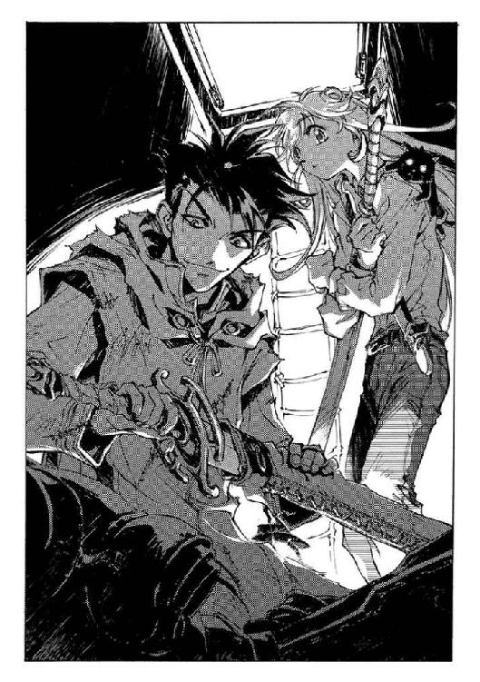
透明な刀身を持つ、長剣。まるで玩具のようでもあるが、それを掲げるサルアの手に、ずっしりとした重みが加わっていることが分かる。その重さは、それが冗談事で作られたものではないことをなによりも雄弁に物語っているようだった。オーフェンが以前、言っていたことがあるのを、マジクは思い出していた。キムラック教会の誇る暗殺集団、死の教師の携えるガラスの剣。
「こいつさ」
目つきを鋭くして、サルアが言ってくる。
「クオにはさっき遅れを取っちまったが──こいつがあれば、負けはしない」
またも滑らかな動作で剣を鞘に入れる彼を見ながら──マジクは、自然と声をあげていた。
「──無理ですよ！」
はっ......と。
我に返ると同時、クリーオウとサルアの、驚いたような視線が自分を注視したことを、強烈に彼は自覚した。ふたりとも、自分がいたことを忘れていたのかもしれない──ふたりの表情に、なによりも驚愕が色濃く現れていることに、彼は苛立った。
「当たり前のことじゃないですか──無理ですよ」
「......なにがだ？」
落ち着いた眼差しで、サルアがつぶやく。
マジクは、死の教師を強く見据えた。
「その剣があろうとなかろうと、あの鎧を着た人に勝てるわけがない──そうでしょう？ 魔術には、魔術しか通用しないんだ。あのクオは、その魔術が通じなかったんです。あの人が持っていたような、魔術の力を持った武器はないんですか？ それがなければ......また神殿に行ったところで、今度こそ全滅させられるだけです......」
「クオが、何本か所持しているとは聞いたことがある──っても、使えるほどに魔術文字を解読できたものは、あの星の紋章の剣とかいうやつだけだけどな」
あまり光量のないランタンの明かりによって、光にさらされたサルアの顔は──あくまでも静かだった。いつになく表情がない。いつも浮かべている。ふざけたような笑みすらも。
「どのみち、そいつが手に入ったところで、文字を解析しない限り魔術は発動しない。解析に何年かかるか分からねえが、キリ──ええと、奴が溺れ死ぬのに十分なのは言うまでもねえな」
（お師様が......死ぬ？）
馬鹿げた発想だと──
マジクは、反射的に感じていた。オーフェン。《牙の塔》のキリランシェロ。当代最強の魔術士のひとり......
それが、死ぬわけがない。
「......でも......だったら、今はまだ......」
ひざが震えるのをなんとか隠そうとしながら──隠しようがなかったが──、マジクは声を絞り出した。肺が妙な音を立てるのを聞きながら。
「今はまだ......行くべきじゃないってこと......です」
「なに言ってんのよ!?」
クリーオウが、叫び声をあげた。それは予想通りだったが、その声を聞いて、マジクは一瞬、足がすくむのを自覚していた。
このようなせまい地下室ではあまり聞きたくない、きんきん響く甲高い声で、彼女が怒鳴りつけてくる。
「今だって、のんびりしすぎてるくらいなのに──急がないと、オーフェンが危ないってちゃんと聞いてなかったの!?」
マジクの頭の中で、冷たいものが弾けた──
「分かってるさ！」
あらんかぎりの大声で、叫び返す。
発声練習も行う音声魔術士の声量は、軽いものではない。それを全開に張り上げたものを叩きつけられて、クリーオウが顔をしかめて言葉を呑み込むのがはっきり見えた。もっとも、サルアは表情を微動だにさせていなかったが。
それが気にくわなかったというわけではないが、マジクはサルアに向けて、さらに叫んだ
「意見だよ！ ぼくなりの意見だ──助けに行くのなら、せめて自分の身を守る方法だって用意しなくちゃ、意味がないだろう!? お師様は強力な魔術士だ──ぼくよりはるかに強力な。簡単に死んだりはしないさ。お師様が！ 死ぬもんか！」
（死ぬもんか──）
叫び声よりも強く、胸中で繰り返す──
オーフェンの姿が浮かんだ。暗い視界に。師はただ立っている。こちらを見ている。拳を軽く横に落とし、右足をわずかに後ろにさげて。
近づく。幾千通りもの方法で、たったひとつの結果が出る。近寄って一瞬後、マジクは打ち倒され、地面に転がっている。
絶対に崩れない。彼の目の前からは、絶対に。
「死ぬ......もんか......」
もう一度叫びたかったが──口から出たのは、弱々しい声でしかなかった。床に置かれたランタンが、揺れる光を発している。地下室いっぱいの武器が、光と、ことごとくそれと同じ形をした影とに踊っている。
サルアが──顔を真っ赤にしてなにか叫びそうな気配を見せたクリーオウを、横に押しやるような形で、穏やかにつぶやく。
「ま、そいつも正論なんだが......」
意気をくじかれたクリーオウまでもが、彼のほうを向いた。サルアは気まずそうに顔をかくと、その顔面に薄笑いを浮かべた。
「準備ったって、これ以上の準備はできないんでね──実際のところ」
「そんな。むざむざ死にに行くなんて──」
「ま、それでもお前さんが行くわけじゃねえんだから、勘弁してくれや」
と──
「......え？」
考えてもいなかった一言に虚を突かれて、マジクは目を見開いた。サルアはやはり、申し訳なさそうな表情をこちらに向けている。
「お前さんは、ここで留守番だ」
「な──」
マジクは、身を乗り出して抗議の声をあげた。
「なんでですか!?」
「そらまあ、どっちがどっちか、選択の結果ってやつだ。クオとカーロッタを同時に敵に回して、いくらなんでもお前さんらをふたりとも守ってやれる自信はねえからな」
「守って......？」
前に突き出しかけた手を、ぱたんと落として──マジクは絶句した。
地下室の中で、五メートルほどの距離を隔てて端に立っているサルアをにらみつけながら、彼は震え声を出した。
「守ってって、なんです......？ 馬鹿にしないでください。ぼくだって魔術士なんだ──あなたが、ぼくを守れるっていうんですか!?」
「同じく馬鹿にしないで欲しいものだな。俺だって死の教師だ──魔術士の暗殺を専門にしている、な」
「ち、ちょっと......」
さすがに気まずい空気を察したのか、自分の怒りを忘れた格好で、クリーオウがうろたえた声でうめく。
だがマジクは、それを無視した。サルアも気にしなかったようだった。
死の教師をただ見据えて、マジクは吐き捨てた。
「お師様には勝てなかったくせに」
「奴は《塔》でも最強の暗殺技能者だ。半人前の術者に過ぎないお前さんとは違う」
「ぼくはお師様より強い威力が出せる！」
両拳を握りしめて、彼は断言した。
サルアは、しかし動じなかった。小馬鹿にしたように鼻を鳴らす──
「だからなんだ？」
「だからっ......て」
マジクが次の言葉に迷っているうちに、サルアがあとを続けた。
「あの若さで生徒を取ったあいつが馬鹿なのか、それとも生徒が生粋の愚か者なのか──俺には分からんが、そんなこっちゃお前さん、永遠に奴には追いつけない。証明は簡単だ。してやろうか？」
「え～と......」
声をあげたのはマジクではなく、クリーオウである。人差し指をくわえて、こちらとあちらを交互に見渡している。
マジクはただ無言で、唇を噛みしめていた。
剣を足下に置きながら──サルアが、言ってきた。
「証明は簡単さ。お前さん、今から俺を倒してみな。ま、表情だけを見りゃ、やる気満々って感じだが──一応アドバイスしてやると、にらみつけただけじゃ敵は倒せんぜ」
「やってやる！」
マジクは、両手を突き出した。
「やってやる！」
繰り返してから、意識を集中させる。
世界が、見えるようになる。
魔力は、そういった感覚を術者に与える。実際は、どうだか分からない──単に術者の思いこみの産物なのかもしれない。が、コンセントレーションに入った術者は、そんなことを気にしないのが普通だった。瞬間、自分の魔術が世界を支配する。
サルアが馬鹿にしたような笑顔で、背後の壁に、どんともたれるのが見えた。余裕ありげに、腕組みなどしている。
（ぼくをなめている──）
怒りとともに、彼は構成を編み上げた。
力の網を、周囲の空間に展開する。あるがままであったすべてを──自分の望むものへとまとめ上げる。マジクは慎重に、だが大胆に構成を造り上げた。もとより、威力をセーブするつもりなどない。
サルアは丸腰──剣を拾い上げようともしていない。ただ。
一瞬で、彼が腕組みを解き、腕を振り上げるのが見えた。そしてそのまま、右拳を──背後の壁に叩きつけている。
どん、という強い振動が、地下室全体に響きわたった。
次いで、狙ったように、サルアの頭上から、短い槍が落ちてくる。天井の暗がりに隠れて見えなかったのだが、そこに飾ってあったのだろう。五、六十センチほどの、投擲用の短い槍である。短く、太い。よく研がれた穂先が、輝いて見えた。
その槍を、ぱっと受け止め、サルアが一歩前に出る。しっかりと肩の上にその槍を構えて──
刹那、マジクの構成も完成した。
（こっちのほうが早い──勝った！）
彼は歓声をあげて、その構成を解き放った。呪文を叫ぶ。
「我は放つ──」
──魔力の放出とともに、脱力感。
（────!?）
貫くような不安感が、襲いかかってくる。
『今より少しでも低いレベルで制御をしくじれば──』
それは間違いなく、オーフェンの声だった。槍を構えているサルアの姿に、怒った師の顔が一瞬だぶる。
『確実に死ぬことになるんだぞ！』
（違う！ お師様は、自分が魔術を使えなくなったからぼくに嫉妬してるんだ！）
幻影の師に叫び返してマジクは、魔術の発動を強行した。
「我は放つ光の白刃っ！」
突き出した手の先に、力が収束していくのを肌で感じる。
力の流れのすべてが、彼の味方をしていた。すべてが集い、標的へと向かっていく。それと同時に、彼の体力をも奪って......
いかなかった。
力は放出されなかった。構成が霧散する。突き出した手は、虚しくただ震えている......（魔術に失敗した！）
完成しかけていた構成が無駄になった。ただなにも起こさない叫び声だけが響いている。彼はなんとか顔を上げた。サルアが見える。視界の中に、クリーオウは見えない。サルアは構えた腕を、しならせるように解き放とうとしている。
魔術士が魔術を放つように。
サルアが勢いよく腕を伸ばすのが、やけにゆっくりと見えた。
（そう......か......）
自分の思考まで速度を落としている。だが、やけに気持ち良かった。とても。
（分かった......なんとなく、分かったけど......）
サルアの腕が伸びきり、槍が放たれたなら、一秒を待たずして自分は死ぬ。
それが悲しかった。涙をこぼす時間すらなかったが。
穂先が、一番鋭い形で──つまり真正面に──見える......
その瞬間。
視界の外から唐突に、クリーオウが現れた。槍がサルアの手から放れる瞬間、彼女の小柄な身体が、サルアの身体へとぶつかっていく──
サルアの体勢が、すこし崩れたように見えた。一瞬後。
どがっ──！
鈍い音が、鼓膜を叩いた。
なにがなんだか分からない一瞬に──呪縛から解放されたように、感覚がもとの時間へともどる。マジクは床にしりもちをつきながら、あたりを見回した。自分が死んでいないことは間違いなかった。
ならば、槍は。
彼の頭の横、恐らくは数センチほどだけを外して、後方の壁に突き立っていた......
「............」
言葉も、息も出ない。ただ汗だけが噴き出す。床に座り込んだまま、マジクは空気を求めてあえいだ。が、息ができないのに空気が吸えるはずもない。
と──クリーオウの声。
「な、なに考えてんのよ!? 本気で当てるつもりだったでしょ、今！」
サルアに食ってかかっているようだったが、当のサルアは淡々とした表情で彼女を押しのけ、こちらへとゆっくり近寄ってくるところだった。一歩、二歩......あまり大きくない歩幅で歩いてくる。すぐに、マジクの座り込んだ目の前に彼は到達し──
すぐに横を通り過ぎて、壁の槍をつかむと、引き抜いた。
そして、その穂先をこちらの鼻先へと──彼を見上げている鼻先へと突きつけてくる。
「サルア!?」
クリーオウの声など無視して、サルアがぼそりとつぶやいた。
「......なんで俺を倒さなかった？」
「──え？」
鋭い穂先に、実際に縫いつけられたかのように動けず、ただマジクはそれだけをうめいていた。
サルアは、小さく舌打ちしたようだった。
「俺は、唯一の武器──この槍を、外しちまったんだぜ？ そのあとに俺を倒すのは簡単だったはずだ。それをなぜ、やらなかった？」
「............」
考えもつかなかった──
その唯一の答えを言い出せずに、硬直していたマジクは、サルアが......その表情に、次第に笑みをもどしていくのをただ呆然と眺めていた。
「このあたりが──」
死の教師が槍を引っ込めて、肩をすくめる。
「お前さんと、奴の違いのひとつさ。まだまだあるぜ？ いちいち証明する気にはならねえけどな」
「ぼくは......」
全身の震えを止められずに、マジクは視線を落とした。なにを言えばいいのか分からないが、脱力した身体に、冷たい汗がなにかを伝えようとしているのは分かる。
「ま、すぐに分からんでもいいのさ。とはいえ──そのうちしっかりと理解するためには、お前さんにはあの未熟な師匠が必要だ」
「............はい......」
なんとか声に出してうなずいた、その瞬間。
どばんっ！──
と、上で派手な物音が響いた。扉を蹴破ったような音。
「......なんだ？」
サルアが、驚愕の声をあげて天井を見やる。その時には既に、その天井の上からどやどやと複数の足音が──そして、がらくたを蹴散らすような音が。そして、なにかを引きずるような音が。そして。
しばしして、縄ばしごの垂れ下がっている入口から、どさりとなにかが落ちてきた。人間の......死体。
クリーオウが、しゃっくりのような音を立てるのが聞こえた──悲鳴が出そこなった音だろう。死体はぼろぼろになった神官服をまとっている。無論、斬られてぼろぼろになったのだろう。死体にははっきりと見覚えがあった。サルアがうめく......
「兄貴!?」
そして。最後のそして。
穴の上から──限りなく場に不似合いな、おどけた声が聞こえてきた。
「はあい」
やたら気楽な、女の声。
「そろそろ出頭の時間よ、坊や──」
「出やがったな......この妖怪女」
サルアの苦々しげなうめき声が──
まるで、床に落とされた死体の声のようにも聞こえた。
◆第十一章 鋼の後継
メッチェン・アミックは窓ガラスの向こうに、雨で霞んだ神殿の影を遠く眺めていた。
白い街に灰色の雨が降り、黄土色の風と混ざり、影の色となる。
それは遠い昔からの光景だった。遠く......人間種族がこの大陸へと漂着して以来の。
もう感覚のない右腕をさすりながら、彼女は窓の前に立ちつくしていた。応急手当で血は止まった。が、傷口がふさがったわけではなく、血の気ももどっていない。雨の中を逃げ続けたせいで身体が冷えたのも悪かったのかもしれない──まだ指先だけならばわずかに動くようだったが、それも長くは保たないだろうと彼女は悟っていた。
（そして、もう二度と動かないかもしれない......）
皮肉なものね──と彼女は、苦笑いを浮かべた。サルアの話では、彼は神殿でクオ・ヴァディス・パテルに滅多斬りにされたらしい。彼女はカーロッタと接触し、そして一撃だけを受けた。音もないほどの一刺しだけだ。だがサルアは今も五体満足で動き回り、メッチェンの右腕は、もう剣も握れない。
（それが、クオとカーロッタの差なのかしらね）
舌打ちして、認める。
剣の腕だけならば、サルアに敵う者はいないだろう──なにしろオレイルに手ほどきを受けたのは彼だけだ。オレイルの眼鏡に適った者も。魔術文字の解析に成功したのはクオのほかいないし、自らの生命力を削ってまで戦闘力を上げたネイム・オンリーの身体能力は確実に人間の限界を超えている。実戦経験ならば、夭逝した父の任を少女時代から引き継いだメッチェンが最も多い。
カーロッタにはなにもない。彼女はなにもしない。
だが彼女が失敗したという話も聞いたことがない。
十年前──あるひとりの男が、この聖都へと侵入した。
どこから入り込んだのか、誰も知らないまま、男はすんなりユグドラシル神殿に現れた。
その当時は、誰もその男のことを知らなかった。若い、だがどういったわけか老獪な、ひとりの暗殺者。男は教師長数名と死の教師三名を殺害し、《詩聖の間》へと進む寸前、クオ・ヴァディス・パテルとオレイル・サリドンによって退けられた。その際オレイルは重傷を負い、引退を宣言。聖なる務めを自ら放棄したという罪状で、聖都から永遠に追放された。同じくして、クオが死の教師を取り仕切る任を与えられる......
サルアがオレイルに師事したのは、この頃だったらしい。だがメッチェンは、その頃、他人のことを気にかけている暇などなかった。人数が激減した死の教師のメンバーに、彼女自身が抜擢されたからである──理由は簡単だった。殺された三名のうちひとりが、彼女の父だったから。
彼女はもっぱら聖都の外での任務を割り当てられることになった。数年後にメンバーに加わったサルアも同様だが。
（......黄塵の吹かない不浄の地で、いま見つめているこの光景を──雨に濡れる聖都の姿を──何度も夢に見た......）
胸中で、彼女はつぶやいた。窓枠に手を触れる。まだ動く左手を。
（帰ってくるたび、わたしは泣いた......もう出て行くまいと心に誓った......死を賭してもパパが守った、この聖都から）
彼女は窓枠に触れる手に、力を込めた。ぎい、と留め金が軋む音が、空気よりも腕を伝わってくる。湿った木の感触。表面は砂で汚れているが、粒子の細かい黄塵には、ざらりとした手触りはない。
（でも、そのうち泣かなくなった......）
彼女は窓を開いた。激しい雨音が、外界を騒がしくしている。
雨粒が遠慮なく、部屋へと飛び込んできた。彼女の身体にも飛びついてくるそれを、彼女は避けようとは思わなかった。すべて染み込んでしまえばいい。この雨も聖都の一部だ......
彼女が泣かなくなった頃、聖都を襲った例の暗殺者の名前が耳に入るようになってきた。キムラックの教師長を暗殺したことで一気に有名になった男──チャイルドマン。その名前は半年を待たずして、チャイルドマン・パウダーフィールド教師に変わった。《牙の塔》の教師になったという。
その卓抜した能力から、《十三使徒》の長、最強の黒魔術士と言われた魔人プルートーとも互角なのではないかと噂された。
（チャイルドマン......パウダーフィールド教師。その最後の生徒が......キリランシェロ。今はオーフェンと名乗っている、あの男......）
サルアの話では《詩聖の間》に入ったという。
開け放たれた窓のすぐ外で、風が渦巻いたようだった。いっそう激しくなった雨粒が、顔面を叩いてくる。が、メッチェンは両目を開いたまま外を見つめ続けた。見とどけよう──ただ静かに、独りごちる。
（見とどけよう。かつてわたしを泣かせた街を......それが、すべてひっくり返されるのを......）
「神を封じ込める蓋を──」
疲れているのだろうか。ふと不安になる。まだ眠ってはいけない時だ。
十年。死の教師となってからの十年。なにもかもを、彼女は実戦から学んだ。剣の扱いも、魔術士が呪文を叫ぶ時のタイミングも、戦い方も、逃げ方も、かまどの作り方も火の起こし方も安宿のシーツから虫を追い払う方法も手袋をしたまま目のゴミを取る方法も。祈り方も。愛し方ですら。すべて実戦で学んだような気がする。
「女神よ......わたしの運命を紡いだ、大いなるひとよ......」
彼女は雨に向かって聖印を切った。右腕が使えないのでややぎこちない仕草だが。
「貴女にわたしの汚れた顔を見られたくはないのです......それでもわたしは貴女を見なければなりません。すべての者が貴女のために死んだのですから──その〝死〟すらを紡いだのも貴女であるのならば、わたしは貴女のみもとで、わたしの父の名を叫ばなければなりません」
彼女は目を閉じた。聖印を崩し、左手を、右腕の傷口に巻いてある青い布へと触れさせる。
「全知......全能......無限のすべて。運命を紡ぎ、網のように全世界へと投げかける。女神......なのに、なにもしていない」
風がうなりをあげるのが聞こえた。
「あなたを愛しています。父があなたを愛したように......でも大陸は、あなたを必要としていないんです......誰も、あなたに顔を見られたくはないんです......」
彼女は腕に巻いた布を引き剥がすと、それを片手だけで器用に頭に巻き付けた──この布の巻き方を覚えたのも実戦の中だったように、彼女には思える。布には血の染みがつき、どす黒い紫色へと変色していた。
◆◇◆◇◆
なにが起こっているのだ......？
書斎の椅子に浅く腰を下ろし、机に肘を押しつけて、ラポワント・ソリュードはただそれだけを繰り返していた。
開いた本に手を触れてはいるが、読んではいない。そんな気分を味わいながら、彼は机に押しつけた自分の手をじっと見つめていた。ふと、ペン立てに刺さったペンがかたかたと音を立て始め、ぎょっとする──が、すぐに気づいて嘆息した。彼が押しつけた手が震えていただけだった。
笑っている時ではない。それは分かっている。が、彼は笑いたかった──できるならば。間の抜けた願望ではある。それも分かっていた。
（わたしにできるのは......望むことだけ、か）
それを思い浮かべて、ようやく、苦笑できる。
ラポワントは椅子から腰を上げた。壁に掛けられた時計を見やる。十一時ちょうど。時間だった。
彼は立ち上がり、書斎を眺め回した。書棚。並べられた貴重な書物。トロフィー──主に彼のものだ。そして、窓。扉。
書斎机の一番長い引き出しを、彼は引き開けた。なにも入っていないのだが、一本の剣だけが置いてある。ごく普通の長剣。
その柄をしっかりとつかむと、あとは無言で、彼は書斎を出た。
雨は降り止む気配もない。空そのものを落としたような雨が、玄関から正門まで続いている。無論、雨雲は聖都すべてを覆っているが──彼にとっての世界は、いま立っているこのポーチから、正門までに過ぎなかった。
屋根や地下道でもない限り、いつでも家を背負って出なければならない──玄関から出るということは、つまりそういうことだと彼は感じていた。常に背中に家がある。前方には、雨か、風か、黄塵か......そして、それらとよく似た人間たちか。それが待ち受けている。
斜めに落ちる雨の中に、足を踏み出す。激しい雨のせいで霞んでいる前方に、なにかを見たような気がした。
気のせいではない。
彼は確信していた。あれは、時間を破ることだけは決してない女だ。
雨粒が頭を、顔を、肩を、全身を叩く。痛いほどの勢いだった。剣を握る指の間にも、水が染み込んでくる。
彼は構わずに足を踏み出していった。一回一回、丁寧に。少しずつ進んでいく。
正門は、まだ遠いが──なだらかにカーブした通路の上を歩いていけば、一分ほどかかったろう──、彼はなるたけ最短距離を進んでいった。芝生を踏んだことで、庭師は怒るだろうか。怒りはしないだろう。教師長たるこのラポワント・ソリュードに怒る？ 馬鹿げた話だ。
彼は半眼のまま進んでいった。やや足早になる。
やがて──正門まで進んできた彼を待っていたのは、こんな一言だった。
「遅いわね。お互い、これが命取りになりかねないってこと、お分かりになってらっしゃらないのかしら？」
「......ならばそんな目立つ傘を差してくることもないだろうが」
ラポワントは、即座に吐き捨てた。
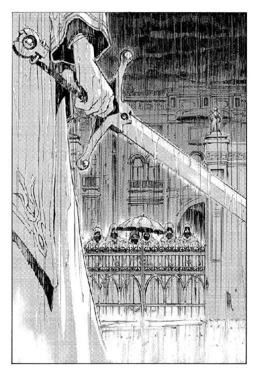
もっとも、言うほどに目立つ傘だとは彼も思わなかった──この雨の中ならば、薄ピンクのぼんやりした染みにしか見えなかったろう。女物の蛍光色の傘を気楽に差して、こちらを見ているのは、言うまでもない、カーロッタだった。いつもの神官服ではない。彼女の後ろにずらりと並んでいる数名の神官兵と似たような、もう少しラフなものを着ている。フードとマスクで顔を隠してすらいた。とはいえ彼女の目を一度でも見ていたことがあるならば、顔のほかの部分を隠したところで見間違える者などいないだろうが......
彼女はこちらの言葉など耳に入った素振りもなく、マイペースに聞いてきた。
「使用人たちは？」
「暇を出しておいた。明日までは帰って来ないだろう」
「そう」
気楽に言いながら、カーロッタは──あごをしゃくって、控えている神官兵のひとりを促した。神官兵は言葉もなく進み出ると、門を開けようというつもりか、鉄柵の門の上に、その手を置いた...
瞬間、ラポワントは持っていた剣の刃を、その神官兵の手の上に軽く置いた。神官兵の動きが、ぴたりと止まる。
その神官兵だけではない。カーロッタも、みなすべて意表を突かれた表情で動きを止めた。ざああという雨音だけが、あたりを満たしている。
「どういうつもりかしら？」
にこりともせずに聞いてきたカーロッタに、ラポワントは告げた。雨に濡れた前髪が、まぶたの上に張り付いているのが自分にも見える。
「......わたしの屋敷に入る前に、聞きたいことがある」
「ここは教主様のお言葉に守られた聖都ですわよ。あなたの土地などどこにもない」
「詭弁なら、なんとでも言え。わたしの専売特許ではないなどと言われたばかりだ」
ラポワントは毒づくと、剣の柄を握る手に力を込めた。刃を当てられた神官兵は手の甲から、血がにじみ出している。
「クオが嘘をついた」
彼は鋭く囁いた。
「......《詩聖の間》に、魔術士が入り込んでいる可能性がある。これはなににも優先する問題だ。神殿に取って返して、事態を処理しろ。これは神殿庁の命令だと思え」
だが──
返ってきたのは、長々としたため息だけだった。
はぁぁ......と、そのため息の主──カーロッタが、軽くかぶりを振る。彼女は目を細めて、猫でも可愛がるような口調で言ってきた。
「それならば、教主様も知っておりますわよ」
「............なに？」
彼女の言葉は、二重の意味で衝撃だった。身体が震えるのを感じる。雨の冷たさのせいではなく。
「教主様が知っている、だと!?──いやそれより、カーロッタ、貴様が教主様のお言葉を賜ったというのか!?」
「門をお開けなさい、ラポワント教師長。それ以上ごねるようならば、弟をかばい立てしていると見なしますわよ」
彼女の目が、絞られるように細くなっていくのが見えて──
「くっ......！」
ラポワントは、後方に跳び退いた。同時に、剣を両手で構え直す。しっかりと構えた剣を、横殴りに銀の輝きが叩きつけてきた。
ぎぃんっ！ と──
鋭い音と、そして衝撃が腕に伝わってくる。見ると、この剣で手を押さえつけられていたはずの神官兵が、もう一方の手で抜刀していた。
誰が蹴破ったのか、門が開く。カーロッタを除き、全部で五人の神官兵が、いっせいに庭へとなだれ込んできた。すべていつの間にか抜刀している。すべて同じ、少しばかり刃がいびつな剣である。
「ちぃっ！」
歯の間から軋るような息を吐いて、ラポワントは神官兵のひとりが繰り出してきた剣を、切っ先にからめ取るようにして弾き飛ばした。同時に、後退から前進へと転じて、刃を斜めに跳ね上げる。
びっ──と、なにかを引っかけるような音がして、神官兵の首を覆っているフードが、あっと言う間に血の色に染まった。悲鳴もなく、ばたばたともがきながら、雨に濡れた地面へと倒れる。
ラポワントはまだ動きを止めていなかった。視線を左右に動かすと、右に跳びながら、迫ってきていた別の神官兵の刃へと剣を合わせる。剣を触れ合わせているのは一瞬だった。相手が力を入れて刃を押し出そうとしてきたところで──相手の踏み出しよりも長い距離を跳び退く。と、つまずいて倒れる相手の首の後ろに、ラポワントは鋭く切っ先を打ち付けた。やはりフードに覆われていた首を、一度だけがくんと震わせて、あとは血を噴き出しながら動かなくなる......
「たいしたものねぇ......サルアの坊やより、腕は上かしら？」
唐突に、声。カーロッタのものだった。
気が付けば、残りの神官兵三人が、彼女の後ろへと退がっている。彼女は悠々と庭に入ってくると、死体となったふたりをそれぞれ一瞥し、自分のマスクを口元から下ろしてみせた。ふっくらとして見える唇の間から、ほんのわずかだけ舌の先を見せて、彼女は続けた。
「でもなんで、こんな馬鹿げたことをするのかしら？ 死の教師の追跡審問を妨害し、神官兵をふたりも殺害......あなたがいくら神殿庁のお偉い方でも、これはどうしようもないですわよ」
「なんで、だと？......貴様らこそ、いったいどうしたというのだ」
ラポワントははっきりと、自分の歯ぎしりの音を聞いた。雨に混じって血の臭いが漂ってくる。
「裏切り、仲間割れ、騙し合い......諜報のままごと遊びでもやっているつもりか!? 貴様らはこの聖都の守護の任を負った者だろうが！ それをなんだと思っている！」
「さて、どうかしら」
カーロッタは顔色も変えずに言いながら──軽く肩をすくめてみせた......
「わたくしには、むしろこの聖都のほうが、玩具の箱庭のように見えますけれどね」
「貴様っ！」
ラポワントは叫び、そして踏み出した。
一瞬──
カーロッタが笑ったことだけは見えた。ただし顔の下半分だけ。上半分が見えなかったのは、彼女が傘を──目深にするように下げたからだった。
その瞬間は、彼女がなぜそんなことをしたのか理解できなかった。派手な色彩の彼女の傘が、雨の中、ぱっと弾けるように揺れて......
ラポワントは、なにも見えなくなった。
「────！」
喉から出そこねた悲鳴が、胃の中で爆発する。
「あああ......ああああっ!?」
剣を取り落とし、彼はその場に倒れ込んだ。顔面が熱い──猛烈に、頭蓋の奥からしびれるような痛みが染みだしてくる。
ばさっ......と、これはカーロッタが傘をまた上に向けた音。自分の悲鳴の中であっても、ラポワントはそれを聞き取っていた。鮮血の噴き出る自分の左目を押さえながら。
「き──貴様ぁっ......」
荒れる息で、彼はうめいた。カーロッタが哀れみの視線を投げてきているのをにらみ返して......
彼女は気にもせず、ただふと思いついたように、自分の傘を見上げた。そして、傘の先端になにかこびりついていることに気づいたようだった。少しだけ顔をしかめて──ラポワントはこの傘が彼女のお気に入りだったに違いないと確信した──、傘を畳むと、ばっ、と一振りする。
尖った傘の先端にくっついていた肉片が、地面に落ちた。見なくとも分かる。彼の眼球だった。
「残念だわ」
彼女は心底残念そうに、かぶりを振りながら傘を開いた。
「......ふたりも先に殺されてしまっては、あなたを殺したところで、絶対に帳尻が合わないんですもの」
そしてラポワントは、彼女が背後にいる神官兵たちに、なにか合図するのを見た。なんの合図であるかは、聞くまでもない──落としてしまった剣を探しつつ、彼は絶望的にうめき声をあげた。落とした剣は死角に転がったのか、どこにも見つからない。
剣を携えた、三人の神官兵が近づいてくる。カーロッタは微笑みを浮かべて──既にこちらを見てすらいないようだった。
「......そういえばあなた、ご自分の寝室で死ねなければ、浮かばれないんですってね？」
からかうような、陽気な声。
「駄目。ここで死になさい」
◆◇◆◇◆
「さて、問題はだ」
ボルカンの終わらないおしゃべりを──そんな可愛いものでもないが──聞きながら、ドーチンは歩いていた。闇の中を手探りして進むのはなんとも心許ないが、なかなか便利なもので、ずっと暗闇を進むうちに、なんとなく足下が見えるような気がしてくる。本当にちゃんと見えているのかどうかは分からないし、彼ら自身知ったことではなかったが、彼ら兄弟はいつまでも続くその地下道をてくてくと歩き続けていた。
なんにしろその横穴は真っ直ぐで、水平で、真っ平らで。まったくもって、見事なまでになにもない通路だった。転ばずにすんでいるのもそのせいだが、退屈きわまりないのもそのせいではある。
──幸運なのか不運なのか、正直ドーチンには断定できる自信がなかった。毎度のことだが。
「聞いているのか、ドーチン？ 問題は、だぞ」
「うん。問題は？」
上の空でドーチンは、前を行く──行っているらしい──ボルカンに聞き返した。かなりの時間歩き続けている。地人には体質的に筋肉痛は起こらないが、疲労は人間と変わらない。こわばった足の筋肉は、いったん立ち止まったら半日は動き出してくれそうにないなと、彼は陰鬱に考えていた。
──そんな疲れなどなにひとつとして感じさせない兄の声が返ってくる。
「問題は、この通路に蛇が出たらどうしようってことなのだが」
考えたくもなかった。
が──言われてしまっては、無視するわけにもいかない。ドーチンはため息をつきながら答えた。
「......ここに餌がないんなら蛇なんていないだろうし、餌がたくさんあるんなら、蛇はお腹いっぱいなんじゃないかな」
そんな気休めでも、ボルカンは納得してくれたようだった。
「それもそうだな」
うん、と安心したような声を出し──数秒後に、また聞いてくる。
「......熊が冬眠してたら、どうしたものだろう」
「しゃべりながら歩いてれば、熊は近づいてこないらしいよ」
「うむ」
また、数秒後。
「......シャチは、強敵だな？」
「そだね」
結局のところ兄は退屈しているだけなのだと、ドーチンは判断した。
あとは、言葉少なになってまた通路を進む──
時間の感覚も麻痺した中、長いような短いような沈黙を隔てて、再びボルカンが声をあげるのが聞こえた。
「ふと、思ったんだが」
「なあに？ 兄さん」
「なんで俺たちは、こんなところを歩いているのだ？」
気のきいた返事が思いつかず、ドーチンは適当に返した。
「さあ......落っこちたせいだと思うけど」
「なんで落っこちた？」
「クリーオウって子に、なんとなく成り行きで......かな」
「ただの成り行きにしては、ひどく過酷な状況のような気がするんだが」
「それは、ぼくも思ってたとこ」
「こんなことが許されると思うか？ 陪審員はなんて言うと思う？──あの逆噴射小娘に毛生え薬を飲ませてひげ剃り殺すアイデアに、みんなして署名してくれるだろーか」
「......多分それよりも、なんで法廷に地人がいるんだ？ って言い出すと思うけど」
「種族差別だな。まあ、小人どもは英雄を妬むものだ。有名税というやつだな」
「まったく違うと思うけど、まあ別にいいよ。誰も迷惑しないし」
「うむ。ところで、ひとつ気にかかるんだが」
「うん。なに？」
「頭が、割れるよーに痛い」
「ぼくも痛いよ。前からだけど」
「というか俺様の場合、なんか血がだらだら流れ出てるよーなのだがバタン」
「え？」
前方に、実際になにかが倒れたような音を聞いて──ドーチンは足を止めた。心底嫌な予感を覚えながら、ゆっくりと進む。と、つま先になにかが当たった。
柔らかい。石ではない。慣れた手触りの、毛皮のマント。ドーチンが着ているものと同じである。
兄が倒れているようだった。
「あ～あ」
深々と吐息して──ドーチンは、その場に座り込んだ。ひきつったももの筋肉が、そこに根を下ろすのが夢だったとばかりに、休息を歓迎している。実際、休憩はありがたかった。どうせ兄は、何分かで復活するだろうし。
（まったく......ついてないよな、今さらだけど。そーいえば、あの変な劇場とかでも、似たような目にあったっけ）
嫌な思い出を──嫌でない思い出というのも思いつかなかったが──心に浮かべてしまい、彼は後悔した。あれは最悪だった。
もっとも、最悪であったのは、ようするにあの時はこういった通路に閉じ込められたあげく水攻めになったからであって、その一点を除けば、今の状況も大差ないのであるが。そういう悲しい現実には、なるたけ気づきたくなかった。
（でも気づきたくないって思った時点で気づいてるってことだよね。まったく......あれ？）
ドーチンは、ぴくりと耳を動かした──というか、動かしたような気分になった。当然、通路は相も変わらず真っ暗なままだが、どこからか、音が聞こえてきている。
ちょろろろ──という、小さな水の流れである。
（水の流れ......なんだろ？ 飲める水かな？）
ドーチンは、さっと立ち上がった。疲労も忘れて、水音がどこから聞こえてきているのか、耳を澄ます。喉はからからだった。見えないが、当然空気に混じっているであろう黄塵のせいもあって、口の中に苦い味が染みついている。飲み水が確保できれば、こんなにありがたいことはない。
とりあえず、兄の──足だか襟首だかをつかんで、それを引きずりながら歩き出す。水音は小さかったが、意外と近いようではあった。進んでいくうちに、空気に水の臭いが感じられるようになる。
「あ！」
彼は思わず声をあげた。ふと、壁に手を突いたのだが、その壁が湿っていたのだ。
と──
ごん。と、頭がなにかにぶつかって、足を止める。
「なんだろ？」
手を伸ばしてみると、それまでとても背のとどかなかった天井が、そこだけ極端に低くなっているようだった。いや──どちらかというと、天井がそこだけ崩れているといったほうが近いか。そして、その崩れてめり込んできている先端の部分から、水は滴っており──
ぼろっ......
手探りで探っていた天井が、唐突に、一部もげた。
「......え～と......」
頭ほどの大きさの部分が、手の中に残っている。兄を片手で引きずり、もう一方の手にそれを抱えて、ドーチンはなんとか状況を分析してみようと自分に言い聞かせた。
雨が降っていた。というか、ずっと降っていた。
その雨は、当然、空から降ってきた。
重力に従い落ちてきた。
地面に落ちてからも、さらに地下へと落ちていくだろう。
彼らは地下にいる。
今、キムラック市に降り注いでいる水量を、できる限り過小に想像してみる（過小のほうがいいような気がしたのだ。猛烈に）。
どぼべばぼぼばどばどば......
さっきの、崩れた天井から滴る──いや、流れ落ちてくる水音は、すっかり変化していた。
「え～と......」
まだあくまで状況分析に努めているドーチンは、豪快に流れ落ちてくるその水から跳ねまくる飛沫を全身に浴びながら、陪審員にでもなんでも助けを求めたい気分ではあった。
◆◇◆◇◆
「わたしだけが、駄目だったと思った」
天魔の魔女は、落ち着いた表情でそうつぶやいた。洞穴の天井へと、捧げるように両手をあげて──
「なにが？」
オーフェンは彼女に、聞き返した。少し離れた場所で、彼女の姿を見ている。
彼女は、視線だけをこちらに向け──まぶたを少し落として、笑みのようなものを作ってみせた。
「サクセサー・オブ・レザー・エッジ──鋼の後継。チャイルドマン・パウダーフィールドのすべてを引き継ぐ者のひとりとして、わたしだけが駄目だと思った」
「なにを言ってるんだか」
呆れたような声で、オーフェンはうめいた。が、彼女はやめない。独白のようにただ言葉を連ねている。
「フォルテはあの人の立っていた場所を求めて戦っている。先生の地位を受け継いだのが彼。コルゴンは......どこにいるのか見つけられなかったけど、彼はきっと先生の強さを受け継いでいたはず。五年前ですら、彼は完璧だったわ。それで──あなたは？ あなたは先生の技を受け継いだ。わたしはあなたを試したかった。人形を使って『キリランシェロ』を造り、あなたを挑発した。もちろんほかの目的もあったけど。あなたの力は、それを上回った。そして勝った」
「あれは、偶然──」
反駁しかけた彼を──アザリーは、ただ視線を強めるだけで黙らせた。そして、そのまま続ける。
「ティッシやハーティアやコミクロンは？ 分からない。でもわたしは彼女たちが羨ましかった。彼らは......ひょっとしたら、先生の願望を、それぞれ体現しているのかもしれないから」
「願望？」
「人を愛することへの願望......誰にも注視されない願望......そして──人生を終わらせる願望......」
「アザリー......？」
意思の抜けた声が喉から漏れる──オーフェンは自分の胸に触れながら、もう声は出すまいと心に決めた。彼女にしゃべらせるべきだ。誰かがそう告げた。彼女自身かもしれない。自分かもしれない。違う誰かかもしれない。
アザリーはもうこちらを見てはいなかった。天井を見ている。彼女が見つめた場所から──なにか、鋭いものが、するりと現れるのが見えた。
彼女は続ける。
「わたしは？ わたしは先生の知識を受け継ぐはずだった......彼がわたしに用意してくれようとしていた遺産は、知識。彼の知識」
天井から現れたものは、切っ先だった。見ているうちにも、壁を通り抜けてするすると姿を見せる──長大な剣。その刀身には、魔術文字が刻まれている。
「でもわたしは、彼の持っていたすべてを受け継ぐ前に、彼を殺してしまった......」
剣が、完全に天井から抜け落ちた。床に落下して、からんと音を立てる。
「わたしが継承者を名乗るには、彼のことをすべて知らなければならない。そうでしょう？ だからわたしは、ここに......来た。暗殺者チャイルドマンの名声が歴史に登場した、この場所から始めようと思ったのよ」
決然と告げながら、アザリーは、足下の剣を拾い上げた。バルトアンデルスの剣を。
そして──こちらを向いた。
瞳がわずかに曇ったように見える。涙の曇りだ。
「......彼をこの世から消してしまった償いは、きっとできると思ってる。せめて、彼という人間がこの世に存在したことを無駄にしたくない。彼の持っていたものはすべて伝えなければならないわ。それが......わたしの償い」
曇りはすぐに消えた。瞬きすらせずに。
オーフェンは、なにも答えなかった。ただ──ゆっくりとうなずいた。
彼女も──うなずいてくる。
「行くわよ、キリランシェロ。ここから逃げるわけじゃない。この《詩聖の間》で彼がなにを見たのか、それを知るために」
「彼女が知っていそうだけどな」
彼はつぶやきながら、洞穴の外を見やった。
地底湖の上に吊された女は──やはりまだ、黙してこちらを見つめていた。
◆第十二章 凶悪借金取り
世界が開くように、闇に光が。
それは湖面に輝くきらめきを、剣が反射したものに過ぎなかった。眩しくもない。明るくすらない。ただ闇の中に閃いたからこそ、気づいた光。湖面は相変わらず、肌がひきつるような冷気を放射している。その水そのものが死の世界であるかのように。死の世界への門であるかのように。
洞穴の淵から、オーフェンは湖面を見つめていた。音はなく、ただ光だけがさざめいている。と、背後に気配を感じた。
「行くわよ」
アザリーが立っている。彼は肩越しに彼女を見つめた。精悍な彼女の顔の中に、いつもあったいたずらっぽい目の光はない。厳めしい眼差し──寂しげな瞳でもある。
オーフェンは彼女にうなずいてから、淵から足を滑り落とした。彼が水面まで落ちる前に、彼女が手に持っている剣の先を、水に突き刺す。
刀身が輝いた。輝きが黒い湖面に移り、閃いて消える。
一瞬で、湖面は厚い氷へと変化していた。湖面すべてが凍りついたわけではないが、かなりの広さが氷原となっている。ブーツの裏が、その氷へと触れる。凍った湖面は静かに彼の体重を受け止めてくれた。
と。
ぽたっ......という音とともに、首筋に悪寒を覚えて、オーフェンは身体をすくませた。手をやってみると、天井から──はるか高い天井から、水滴が落ちてきたらしい。
地上の雨はまだ止んでいないのだろう。地下のこの場所には、その水量がほとんどすべて流れ込んできているらしい。オーフェンは濡れた指先を振ると、水滴を切った。指先から弾かれた水滴が、氷の上に散る。
黒々と広がる湖面──それは瞳のようだが瞬きもせず、なにも映さず、ただじっと、そのすぐ上にぶら下がっている女を見つめているようだった。
女......やはりこちらを見下ろしている。指ひとつ動かすことなく、ずっと。
「あれは──女神じゃあないわ」
横から進み出てきたアザリーが、ぽつりとつぶやく声。それが、凍った湖面を吹く風のように遠ざかっていく。
「天人の遺跡をのぞいて、世界書を読んで、わたしなりに推測したことがある。あれは女神じゃない......」
「ご名答」
答えは──
はるか上、光が射し込んでくる神殿のほうから聞こえてきていた。声は続く。
「それはオーリオウル。天人種族の始祖魔術士だ」
アザリーと顔を見合わせて、オーフェンは警戒を目で合図した。言うまでもなく分かった表情で、彼女がうなずく。
声は続く。
「かつて、キエサルヒマ史以前、千年以上もの昔......神々を直接のぞき、魔法の秘義を盗み出した者──それが、始祖魔術士と呼ばれるドラゴン種族たちの王」
オーフェンはその声を聞きながら、額を──バンダナのない額を手のひらでこすった。アザリーが、低い声音で唱える。
「浮かべ......」
ふっ──
と、体重が消える。
ゆっくりと、彼の身体は浮かび上がった。見ると、すぐ横にアザリーも同じく浮かび上がっている。重力から解き放たれ、彼と彼女はなにごとにも束縛されず高度を上げていった。手がかりもろくにない壁面を見つめながら、まっすぐに、上に。
声は続く。
「誰よりも深く〝魔術〟を理解し、行使する者......それが始祖魔術士」
オーフェンはなにも答えなかった。答えるべき言葉を持っていなかったわけではないが、それを答えるべきが誰だか、分かりすぎるくらいに分かっていた。
アザリーにも分かっていただろう。その声と対決しなければならないのが、誰であるか。
彼女は相手の顔も見えないこの状態で、はっきりと声をあげた。
「あなたたちが崇める物が、それであるはずはないわね......？」
キムラック教会の教義は、不可解な秘密主義に守られてきたが──それでもはっきりとしている部分がある。たったひとつだけ。
「魔術を滅ぼせ──それが、あんたたちの教義のはず」
だが。
声は続く。
「......勘違いしてもらっては困るな。我々が越えなければならない壁は......貴様らだけだ。過去の過ちから人間種族に出現した魔術士──ただ、それだけだ」
瞬間──
オーフェンは、相手の姿を見た。
高度が上がり、《詩聖の間》を望む通路へと視界が開ける。いまだ不安定に宙に浮いたまま、オーフェンはただ自然体に視線を投げていた。きっかり六時間前、アザリーの魔術によって破壊され尽くした感のある、広い通路......
視界の端に、真紅の鎧を身にまとったクオがいた。壁にもたれて、腕組みしてこちらを見ている。引き結んだ唇には、厳めしさよりも薄い苦痛が見えたように思えた。それ以外には人間はいない──人間は。
オーフェンは、怪訝に思って眉根を寄せた。クオから離れて立っているのは、もうかなり見慣れた姿。
「人形......？」
我知らず、唇から声が漏れる。
それはかつて見た殺人人形──天人種族の造りだした殺人ゴーレムだった。特徴のある、いびつな骨格。その硬質さを容易に想像させる光沢のある肌。丸ハムに刃物でつけた切れ目のような口。ガラスのような瞳。瞳？
さらに訝る。その人形は、瞳だけが際だっていた。鮮やかな緑色。人間にはない、ほぼ原色の緑色。光彩か、あるいはもっと深い場所からこぼれだしているような輝き。三角形に、つり上がった醜い双眸......
なにかが違った。判然とはしないが、オーフェンは直感した。反射的に身構えようとして、足場がないことに気づく。
「人形、か」
その人形は、にやり、と口を開いた。
「人形に、これができるか......？」
刹那、人形の姿がかき消える。
理不尽な勘で──オーフェンは、振り返った。偶然かもしれないが、ぴったり振り返った先に、人形の姿を見つける。
「空間転移......!?」
うめくオーフェンに合わせるように、アザリーも叫んでくる。
「擬似転移じゃない──確かに転移したわ！」
人形は答えない。向こうも宙に浮いたまま、その細い腕をこちらへと向けて振り上げる。
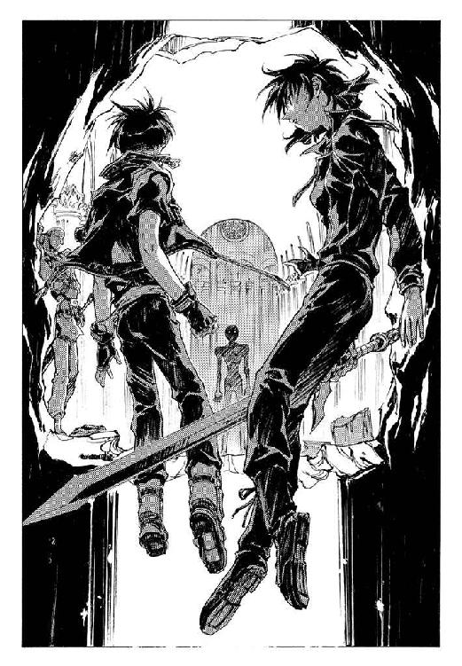
関節がよじれた奇妙な指を五本、ぱっと、弾けさせるように開く。
それだけだった。
（────っ!?）
衝撃が、後方へと──神殿の通路のほうへと、ふたりを吹き飛ばした。吹き散らされるように宙から転げ落ち、そして通路の床へと投げ出される。受け身も取りようがないほど強く背中から落下して、オーフェンは小さな悲鳴をあげた。破壊され、破片だらけになった床を転がっていく。
二回転も三回転もしたわけではなかったろうが、三半規管の振動を実際に聞いているような心持ちで彼は起き上がった。打ち付けた背中を手で押さえ、左右を見回してアザリーの姿を探す──
最初に見つけたのは、クオだった。
その巨体が足音もなく動きだし──例のムールドアウルとかいう剣の柄を振りかぶっている姿が、はっきりと見える。流星のごとく、帯を引いていっせいに流れていく刃の群れ。その、流れゆく先に......
「アザリー！」
オーフェンは、叫んだ。が。
その一瞬後、床に倒れていたアザリーの胴を、クオの魔剣が斜めに引き裂くのが見えた。
彼女の身体が、大きく跳ねた。そしてそのまま、動かなくなる。傷の深さまでは分からないが、刃が当たったことは間違いない。
オーフェンは彼女に駆け寄ろうと立ち上がった。だがそれよりも早く、クオが、立ちふさがるように、ばらばらの剣の刃をこちらへと向けてくる。細かい破片に分かれたその刃のいくつかに、血のような汚れと、彼女が着ているものと思しき、黒い布がこびりついていた。
「どけ......」
凄絶な形相で、オーフェンはうめいた。クオはまったく動かない。
「控えよ」
クオの唇が、苦笑を浮かべる。
「済世者、教主ラモニロック様の御前なるぞ......」
「なんだと.........？」
だが、答えてきたのは人形の声だった。
「それだけではない」
声は──宙に浮いたままの人形の声は。
キムラック教会教主、ラモニロックの声は続く。
「貴様は、我が運命の女神の御前に醜態をさらしている──汚れた血の醜態を」
（ンなことは──）
知ったことではないと、オーフェンも独りごちた。クオがかざす刃の向こうに、アザリーがぐったりと倒れている。バルトアンデルスの剣を抱くようにして、うつ伏せに。
動きを見せない彼女の後頭部だけをじっと見据えて、オーフェンは告げた。
「どけと言っているんだ」
つい、いつもの癖で、毒づきながら魔術の構成を編む。が、構成は彼に頭痛を与えただけで、意味もなく霧散していった。
（くっそ......）
焦るが、なにもできない。真紅の鎧をまとった巨人──クオ・ヴァディス・パテルを眼前に、オーフェンは構えを取った。
（こうなったら、やってやる）
かつて天人が、人間の魔術士と戦う力を与えるために遺したという剣。そして鎧。
（どうせ魔術なんざ、使えたところで通じやしねえんだ。なら、同じことだ......）
自分に言い聞かせ、奮い立たせる。動悸はそのままだが、体温が上昇する。拳に力を込めて、彼は飛び出しかけた。と──
身体が動かなくなる。
「......死に急ぐこともあるまい？」
身体全体が石になったように、冷たく固まっている。心臓に激痛を覚えるほど唐突に下がった体温に、オーフェンは戦慄した。今さら寒気が走るでもなかったが、意識が遠くなる。この感覚は......
気配だけで、周囲を探る。既に視界が白んでなにも見えなくなっていたが、その分、ほかの感覚がシャープになっている。クオはまったく動いていない。そして背後に──彼の背後に、いる。
「教主は貴様らに、聞かねばならぬことがある」
身体が──動き出す。
指で触れられている。教主の指が、自分の首筋に当てられていた。なにがどうというわけではない。ただ触れているだけだ。だけだが。
その指先だけに身体を持ち上げられ、さらに──硬直して動けないまま、オーフェンは再び後ろへと投げ出された。教主の頭の上を越え、その肩越しに、信じられないほどの勢いで放り投げられる。
教主の指を離れた瞬間、硬直は解けた。
ぎりぎりのところで受け身を取って──顔を上げる。見ると、彼は五メートルは飛ばされたようだった。背を向けたままの教主が、にやりと、肩越しに振り向いてくる。
オーフェンは、はっきりと悟った。
「白......魔術......？」
「そうだ」
教主は笑みを浮かべたまま、うなずいた。アザリーを指し示し、続ける。
「そこの娘が扱うような拙い技とは違う。本物の白魔術というものを見たことはあるまい？ 見れば、貴族連盟がなぜ、白魔術士を監禁しているのかが分かる......彼らは、大陸脱出の鍵だからな」
（白魔術......）
見たことがなかったわけではない。アザリーは白魔術と黒魔術、双方を扱うことができたし、その才能を隠そうともしていなかった。だが、確かにアザリーの白魔術は、そのための訓練も受けていない、いわば見習いのようなレベルのものに過ぎない......
さらには肉体を捨て去り、精神体になった白魔術士というものに出会ったが、それも大したものではなかった。精神制御の特別な訓練を受けたオーフェンならばそう難しくもなく防げる程度のものだ。
だが、教主が用いた魔術には、防ぐどころか抗うことすらできなかった。呪文すら使っていない。それを、天人の用いる沈黙魔術にも匹敵するほどの力で......
オーフェンは、はっと気づいた。
「どういうことだ!? 人形が、人間の音声魔術を使うだと......？ 天人の造った人形は、天人の魔術文字しか使えないはずだ」
「貴様もまた、誤解するのだな。わたしは天人ごときに造られたものではない」
教主は告げてくると、完全にこちらを向いた。
「教主は、いかなる者の命にも伏しない......我は、誰が主命にも従わぬ。我は我が思う通りにあり......」
（人形じゃあ、ない......）
彼は、ぞっとしながら認めた。人形ではない。初めて見た瞬間から感じていた、人形たちと違うなにかは──これだった。命令によってではない。自分で動いているのだ。この教主とやらは。
教主はゆっくりと、腕を振った。
「貴様に聞かねばならないことがある......記憶を探っても良いのだが、触れるや否や壊れてしまう者が多いのでな。貴様の口から話すが良い──」
振った腕をまた引き寄せ、それは続ける。
「チャイルドマン・パウダーフィールドと貴様が呼んでいるらしいあの男......奴は今、どこにいるのだ？」
「先生......だと？」
うめきながら、ひどく痛む脇腹を押さえ──オーフェンは、聞き返した。なんとかひざを立たせたいが、床に投げ出された衝撃が、身体に残ってそれを許そうとしない。
「そんなことを聞いて、どうするつもりだ......？」
「......唯一の男だからな。この教主と相対し得る......唯一の。我が〝ネットワーク〟と同質の力を持つ......」
教主は饒舌だった。それがいつものことなのかどうか、オーフェンは分からなかったが──なにか、押し立てるようななにかが、その意思ある人形の言葉を後押ししているようにも思える。
思いついたように、付け加えてくる。
「ふむ。無知なる者からものを聞くことはできぬ、か。少し話をしてやろう」
「教主様......」
教主の後ろから、咎めるようにクオが言葉をはさむが──教主は聞きもせず、続けた。
「貴様、神なるものをいかと考える？」
（............？）
どうでもいい──
オーフェンは、胸中で歯がみした。が、ダメージを少しでも抜くために、時間稼ぎをしなければならないのも事実だった。
床に這いつくばったまま、教主の姿を睨め上げる。囁くように、彼は答えた。
「......キムラック教会が奉じるのは、運命の三女神......旧世界、巨人の大陸において、すべての存在の誕生とともにあり運命を紡ぎ、それを結びつける。ドラゴン種族は神々から、魔法の秘義を盗み出し、魔術として行使することを覚えた......」
「世界の誕生。それ自体が神の発生だった」
教主は、こちらの答えを聞いていたのかいないのか、すぐさま告げてきた。こちらから視線を外し──《詩聖の間》へと向きやる......
「神とは、無限の存在だよ。無辺広大、無限の力。世界そのものだ、神というものは。全知全能。そして......零知零能。神には、世界を知ることなど必要ない。そして力など必要ない。世界そのものが、自分なのだから！ 赤ん坊に、自分の手がなにでできているか知る必要があるか？ 血と肉と血管の構造を知ってる必要があると思うかね？」
「まるで見たような言い方じゃねえか」
「見たのだよ」
教主はあっさりと、そう言った。自分の顔を手のひらでこすり──緑色の眼だけを、ぎろりとこちらに向ける。
「そして......運命を剥ぎ取られた。魔術の力。不老不死。始祖魔術士。それがこの姿......この教主だ。天人は、このわたしの姿を見て、人間を人形へと変化させるヒントとした」
「戯言だ」
オーフェンは毒づくと、なんとか立ち上がった。身体が痛む。そして、頭痛が激しく、深くなっていく──
教主には、その痛みが分かるのではないだろうか。オーフェンがそう思わずにいられないほど、その意思ある人形は彼の苦痛に比例して笑みを大きくしていった。腕を広げ、指を広げ、そして口を広げ、叫んでくる。
「そうかな？ わたしにそれを告げたのは、貴様の師なのだぞ！」
オーフェンは──
とっさに横に跳んだ。いや、かなりの確率で予測してはいた。彼が跳び退いたその場所を、漆黒の刃の破片が叩く。
「クオ!?」
不快そうな声を、教主があげる。その教主を避けながら前に出て、クオ・ヴァディス・パテルがさらに剣の柄を振り上げるのが見えた。貫くような激痛が後頭部から額に走った──だがオーフェンは気づいていた。苦痛を我慢さえできれば、その苦痛は自分を鋭くしてくれる！
クオの次の動きが見えた。彼の予想よりはるかに遅く、ムールドアウルの剣が振り下ろされる。さらに強く、さらに遠くへオーフェンは踏み出した。横にではない。前に。
ある一点で、立ち止まる。
彼を脳天から両断する軌跡で──刃の群れは、落ちてきた。
そして、途中で......止まる。
あと数センチ。額のほんの手前で、刃のひとつが止まっていた。刃の群れの向こうに見える、クオの驚愕の顔。
そして、死の教師の分厚い胸板を背中から貫いている、剣。
バルトアンデルスの剣の刀身には、クオの血は一滴たりとついていなかった──ただ輝く文字が数個、銀光を放っている。黒い戦闘服に血をべったりと滴らせたアザリーが、その剣にもたれ掛かるように立っていた。両手で抱え込んだ柄を握り直すようにし......荒い息を吐いている。
剣でクオを貫いたまま、彼女は口を開いた。
「......その剣を捨てなさい。このバルトアンデルスの剣の力は知っていたはずね？ 今はあなたに傷ひとつつけていないけれど、わたしが手を離したり意識を失ったりしたら──この剣はただの剣にもどるわよ。わたしの命令ひとつであなたを石にでもバナナパフェにでも《変化》させられることは言うまでもないけれどね」
クオは──無言で剣の柄を床に落とした。同時に、宙に浮いて並んでいた刃の破片たちも、ばらばらと床に落ちる。
「アザリー......」
オーフェンは、安堵の吐息とともにうめいた。彼女は気丈に、ウインクしてみせる。が、笑顔を作ったところで重傷なのには違いない。その額に脂汗がにじんでいるのがはっきりと見えた。
彼女は息をついてから、教主のほうを見やると、告げた。
「......続きを言いなさい。先生が......どうしたっていうの？」
「約二百年前──」
「先生のことを言えって言ってるのよ！」
「奴の......話なのだがな」
教主ラモニロックは、皮肉な笑みを浮かべてみせた。
「この教主と、アイルマンカー結界とドラゴン種族と人間種族、天人種族の始祖魔術士オーリオウルと、その使い魔イスターシバ、さらには......イスターシバの門弟〝ＸＸ〟と呼ばれた青年の物語だ......」
「ＸＸ......？」
「裏切りの符丁として、その男の名前は歴史から抹殺された。魔術士同盟は、自分たちの歴史にその名前を残すことだけはできなかったのだ。世界でも最強最後の黒魔術士の名前を......」
波紋が収まるように、教主の顔から笑みが消える。
「貴様らは、《詩聖の間》にいながら最終拝謁を受けられなかったのか？ 魔術士であったならば、容易であろうに」
「最終拝謁？」
聞き返したのは、オーフェンだった。何度となく聞いた言葉だったが。
教主は軽く、かぶりを振ってみせた。今まで見た人形とは違う、滑らかな人間らしい挙動で。
「〝過去〟と邂逅する......最終拝謁」
「過去──」
オーフェンの脳裏に、夢の中に出てきた女と、シスター・イスターシバ、それにチャイルドマン教師の姿が浮かんだ......
「貴様は見たか？」
（見た......見たのか？ いや、あの夢は途中で終わって......）
動悸が高まる。確かに、あの夢は途中で終わったはずだ。アザリーに呼び起こされ......目覚めた......
そして、頭痛までもが高まる。
（違う──）
あの女は──ずっと、ずっとこちらを見つめていた。死んでいるはずなのに生きている眼差しで。なにかを言いたげに......
はっとしてオーフェンは、《詩聖の間》を見やった。女は今でも砂塵の中、地底湖の上に宙づりにされている。そしていまだ、こちらを見つめている。
その女の瞳の中に、自分が吸い込まれていくような感覚を覚えて、オーフェンは目を閉じた......
◆◇◆◇◆
「汝には長らくつき合わせてしまったな。罪に思う......」
その女の──自分の第一声に、彼ははっとした。身体が勝手に声を出したのだ。チャイルドマンの表情に、つらい、身を切られるようななにかが浮かんで、天井へと顔を上げる。
その女の名前は、身体のほうが知っているようだった。だが、もとよりオーフェンも記憶の片隅で覚えていた。シスター・イスターシバ。
バジリコック遺跡で、殺人人形が嘲っていた名前......
（終わる......）
オーフェンは、静かに予感していた。
水に浮かぶような、あの感覚。死後と思い違いするような浮遊感と不安感......
だが目覚めてはならない。最後まで見なければ。
彼は確信していた。
これは、イスターシバの記憶なのだ。
その魔術は彼女自身の生命力を際限なく吸い込みながら、収束していく──
だが彼女は文字を描く指を止めようとはしなかった。
そう。止めなかった。もう自分の生命が枯渇しているのは分かっている。彼を迎え入れられるのは、この魔術くらいしかない──
彼女が虚空に文字を重ねるごとに、男の顔が驚愕から悲壮なものへと変化していくのがあからさまに分かった。
「やめてください！」
彼が、弾かれたように叫ぶ、短剣を下ろして、続ける。
「あなたに、そんな大魔術を使うような余力が、残っているはずがない──」
天人種族は疲弊していた。種族すべてが斜陽の中にあった。没落の原因が、太古からの因縁......呪いにあることを、彼女は知っていた。
彼はただ震えるだけのようだった。彼女はそれを見て、内心で苦笑した──まだ弱い種族。人間種族。彼らは、自分たちの助力がなくとも生きていけるだろうか？
（恐らくは、可能だろう──）
彼女はむしろ自分を慰めるように、そう思った。できるはずだ。信じてやらなければ。彼らは、彼女の子供たちなのだから。
彼はただ力なくこちらを見つめていた。自分の死を、どう見るのだろう、その男は──彼女はあえて笑わなかった。微笑んでやりたかった。だが、その優しさはきっと、彼を悲しませる......
その代わりに、彼女は淡々と告げた。
「この文字は汝を殺す。最小単位まで分解し、そして数百年の後の時代に、再構築する」
光の文字は刻々と大きくなっていく。そして激しさも増していく。
その輝きが、ついに広間を満たした瞬間──
彼が、絶叫した。
なにを叫んでいたのか、聞こえない。聞きたい気もした。聞けば自分は泣くだろう。間違いなく泣くだろう。聞きたい。
その絶叫が終わる頃には、光も消える。
そして彼女は倒れていた。顔だけをなんとか上げる。それは魔術などよりはるかに困難なことのように思えた。背後には、もはやどこも似ている部分のない、自らの美しい肖像画を祭壇に背負っている......
そうか。彼女はまた苦笑した。絵には意味があった。
彼と彼女の、ちょうど中間あたりに、ひとつの文字が浮いていた。文字は音もなく、ゆっくりと彼に向かっていく。
だが、恐ろしく遅い。彼のもとまでとどくには、数分はかかるだろう。
彼女の、うめきにも似たつぶやき声が、広間にこぼれた。
「この文字が...我の、我の最後の魔術」
彼はなにも言ってこなかった。ただ文字を見つめていた。
「この文字に触れれば──汝の身体は消滅し、そして数百年後、この大陸のいずこかの地に再生される。だが無論」
と、彼女は自嘲した。
「無論、汝はこの文字を避けることもできるだろう......横を通り過ぎて、我にとどめを刺すのも容易であろう。我が子よ。汝は決断のできる男だ。ゆえに、決断を任せよう。いかなる決断であろうとも、我にとってはたいして重要ではない。いずれにせよ、我が死は避けられぬ。この砦は、我が種族の墓所としては申し分ない場所だ。死処で死に抗うことほど、無粋なこともなかろう」
彼が再びなにかを叫ぼうとしているのが見えた。が、声が出ないらしい。
かぶりを振る、彼。
そして彼はそのまま文字を見据えたまま、動かなくなった。彼女はただひとりで語り続けた。
「だが、どういった決断にせよ、しばしの時をもらわねばならぬ。汝にはこれから、長い物語を聞かせなければならぬゆえ──」
その物語は、そう──彼にとっては神話に過ぎなかっただろう。
だが彼女は違う。神話の中から、それを聞かせる......
彼女は、意識が白んでいくのを感じていた。その感覚が、彼と同調していくことは、彼女には喜びだった。恐らくは最後の。
ぴしっ──
乾いた音が、耳の奥で鳴り響く。思わず瞬きすると、光景は一変していた。
広大な空に、彼はいた。吹き荒れる風は彼に触れない。精神体のような感覚で、空に浮かんでいる。
海はどこまでも広がり、そして無数の大陸が眼下にある。無数の──
無数の大陸が！ キエサルヒマ大陸ではない......いくつもの大陸が。
彼女は語った。
「物語を語ろう。死ぬまでの時を以て」
ぴしっ──
またもや、耳を打つ音。また瞬きすると、見えるものが変化している。あとはその、繰り返しだった。
「それは太古の時代......我が主、我らが種族の始祖魔術士オーリオウル様の記憶によれば、八百年以上の昔......いまだ我らが、このキエサルヒマ大陸になかった頃の時代......」
彼が立っていたのは、どこかの地上だった。豊かな森が遠くに見える、小高い丘の上。日の光が惜しげもなく降り注ぎ、風が穏やかに渦巻いている。だが、豊かであったのはそうした自然ばかりではなかった。もっとも大きく視界に横たわっていたのは──壮麗な都だった。石造りの螺旋の歩道。高い尖塔。あまりにも広大で、どこが中心かすら判然としない。
文句なく美しい都だった。そこを闊歩するのは──人間のように見えた。いや、違った......違うはずだった。
黒い髪......ほぼ全員が黒い髪だが、人間とはどことなく雰囲気が違う。
天人種族によく似ていた。
「世界は緩やかに繁栄していた。なにもなかった。ただ六種の狡猾なる種族が、それぞれ独自の文明を築き......時に交流し、時に争った」
通りを歩く人混みには、女が多いように見える。が、男もいる。歩きながらしゃべり、笑い、ふざけ合いすら自然にしている。
まるで......人間種族のように。
「ドラゴン種族──それが、その種族たちの総称であった。圧倒的な軍事文明を築いた鋼鉄の軍馬、ウォー・ドラゴン＝スレイプニル。密林の果てなき放浪者たる、レッド・ドラゴン＝バーサーカー。影に息するもの、ディープ・ドラゴン＝フェンリル。芸術の美都を築いたフェアリー・ドラゴン＝ヴァルキリー。すべてを手にしていたミスト・ドラゴン＝トロール。そして我ら......、天なる人類、ウィールド・ドラゴン＝ノルニル......」
「その六種族がすべて融和した、記念すべき時代がある。そして......それがまた、破壊の始まりでもあった」
「我らは自らの文明を、より高度な次元に押し進めようと、各々の種族からひとりずつ、知恵者を送り出した。ドラゴン種族の、六人の知恵者。マシュマフラ。ガリアニ。レンハスニーヌ。プリシラ。パフ。そして......オーリオウル。彼らは賢者会議と呼ばれ、我ら種族すべての誇りであった。彼らはその誇りに恥じぬ計画を持った」
「彼らは......世界を制御する方法を......考案しようとしたのだ......」
◆◇◆◇◆
「奴らが発見したものは......この世界を構成する法則......いや、原則とも言うべきものだった」
夢と現の狭間で──オーフェンは、二者の言葉を聞いていた。再び目を開く。数秒と経過していなかったろう。だがすべてを思い出していた。夢の中で見たすべてを。
教主は超然と、こちらと、アザリーと......そして胸板を剣で貫かれたまま動けないクオまでを見回して、うなずいた。意味のある挙動だったのかどうかは分からない。が、教主はすぐにその視線を《詩聖の間》へと移した。
「《常世界法則》──奴らは、その法則をそう呼んだ。世界全般のすべての法則だ。フィジカル・ロウならぬ、フィジカル・システム......フィジカル・システム＝ユグドラシル。これは神々のあるべき姿だったのだよ。確かにシステムは絶対だった。が、不変ではなかった......」
教主につられてその《詩聖の間》を見やり、オーフェンは長い吐息をついた。女は──オーリオウルは、もうこちらを見ていない。目を閉じている。
（そうか......）
オーフェンは、うなずいた。肩から力が抜けていく。もう構えを取る必要はない。
「彼らはその法則を発見し、そして......それを操る術を見いだした」
拳を開き、彼は続けた。教主の姿を見据えて、低い声から──次第に声を大きくして。
「魔術」
緑色の目が、こちらを向いた。
「......貴様か、受け継いだ者は」
「............」
黙り込んでいると、アザリーが呼びかけてくる。
「キリランシェロ？」
それには答えずに、オーフェンは続けた。言葉が、自分のものではないようにわき出てくる。
「だが問題が起こった。法則を我がものとする魔術は......その法則である〝魔法〟そのものに矛盾を作り出した。今の俺と同じさ。法則を越えてそれを支配する法則を、法則そのものに内包してしまったんだ」
「特に、ドラゴン種族の首長──賢者会議が手に入れた力は、絶大なものだった。各々の種族の魔術とは比にならぬほどの魔力に......そして、不老不死。神々に直接接触した、かの奴らは、すべて刻印を押され、運命を剥ぎ取られた──死ぬことができなくなったのだ。奴らが喜んだのかどうかは、我は知らぬ。知りたくもない。重要なのは、その力を得た代償だ──世界に及ぼされた結果だ！」
叫びが、広大な《詩聖の間》にまで反響していく。
「結果──世界は狂ってしまったのだよ」
教主はいかにもの芝居がかった仕草で胸を張り、腕を振った。頭を傾けて、続ける。
「法則、つまり神々は全知全能にして零知零能。無限の力というものがそういったものだということは、既に言ったな。だが魔術の出現で、それが壊れた。神々は全知全能よりひとつ小さくなり、零知零能よりひとつだけ大きくなった。それが......なにを引き起こしたか、貴様は分かっているな？」
こちらへと問うてくる。オーフェンは即答した。
「〝現出〟」
「神々の現出、つまり常世界法則としてしか存在していなかったものが、生物として具現化してしまったのだ」
「神々は無限ではないがそれに近しい力を持ったまま、ただの生物として現出してしまった。さらには肉ある生物として存在したことにより、意思を持ってしまったわけさ。神々は怒り狂った。笑った。泣き叫んだ。そして......旧世界は、その力で破壊し尽くされた」
早口にしゃべりながら──やはり激しくなっていく頭痛に顔をしかめる。痛みを無視して彼は続けた。
「そして、彼らがその脳で考えたのは、ただひとつのことだった。自分たちを、世界をもとにもどすこと。そのために彼らは、ドラゴン種族を全滅させることがベストだと判断した。魔術が行使されなくなれば、法則にも矛盾がなくなる......」
「魔術を......絶滅......させる。神々の......意思。それが、あんたたちの......教義の正体だっていうの？」
息を荒らげて──もういい加減、体力も限界だろう──、アザリーがうめく。剣を抱える手が震えているのが見えた。血の気がなくなった表情には、だが、はっきりした怒りがのぞいていた。
だがそれを受け止める教主は、気楽に肩をすくめるだけだった。
「我が教義は......もう少し切実なのだよ。それに、神々がドラゴン種族を滅ぼしたいのなら、好きにすればいい。我々には関係がない。ことはすべて、我ら人間種族だけの問題なのだ」
「人間種族......人間の......魔術士」
アザリーが、激しく叫んだ。
「人間の魔術士をも、神々は滅ぼす──まさか」
「そのまさかだよ」
呆気なく、いびつな卵形の頭部が、うなずく。
「神々はこの大陸には、いまだ入り込めていない。だがいずれはその足を踏み入れるだろう。そして魔術士の存在を見れば、人間種族全体をも滅ぼすだろう！ だから神々がこの大陸に来る前に......我々は、人間種族から、世界全体の背約者たる〝魔術士〟の汚れた血をすべて、根絶しなければならない」
ぽたりっ......
水滴が再び、オーフェンの首筋を撫でた。叫ぼうとして──なにを叫ぶかはさておいて──溜めていた息が、悪寒とともに消えた。訝しく思いながら見上げると、やはり六時間前にアザリーの魔術が破壊した神殿の天井に、大きな水の染みができている。あの天井部分も地下にあるはずだから、地下水が染みだしてきているのかもしれない。つまりは、地下室の雨漏りだ。
だが、そんなことはどうでも良かった。視線を下ろすと、教主に向けて、アザリーが罵倒の叫びをあげている。
「ふざけるんじゃないわよ！」
顔色はともかく、怒りのこもった双眸にだけは生気が燃えていた。
「そんな、おとぎ話とごちゃまぜの戯言で──現出した神々!? そんなものが、いつ来るっていうのよ!?」
「もうそこにおわす」
いびつな腕による優雅な仕草で、教主は《詩聖の間》を示してみせた。相変わらず、宙づりにされたままの女──
アザリーが、さらに声を張り上げる。唇に血がにじんでいる。喉が破れたせいか。あるいはもっと深い場所からの血かは分からないが。
「それは女神じゃない！ 見れば分かるわよ！ 緑色の瞳の天人種族！ あれがあんたの言う通り、本当に始祖魔術士なのかどうかはさておいてね！」
「では、その首をつかんでいるのは誰だ」
教主は腕を引っ込めないまま、やんわりと言ってきた。アザリーの声が──ぴたりと止まる。力尽きたせいではない。その瞳に、ありありと驚愕が浮かんでいるのが分かった。大剣から、片手がずるりと落ちる。
彼女も悟ったのだ。
沈黙の中、自分の目を指さして、教主が口を開く。
「この緑の双眸について教えてやろう。これが烙印だ。神々の姿を見た者への」
その緑色の目が光った......
「わたしは神の姿を見たのだ。そして神に見られた。だからわたしは教主なのだよ。わたしは運命の女神に運命を剥ぎ取られ、人間種族の始祖魔術士とならざるを得なかった」
オーフェンは即座に思いついて、うめいた。
「くそったれが......結局......てめえの姿を、神とやらが見て刻印を与えたんなら、もう人間種族はどのみち駄目だってことだろうが......」
「違う。我が人間種族全体にはいまだ刻印が与えられておらぬ。だが魔術士の血が強まっていけば、いずれ、自ずと刻印が──ドラゴン種族の緑の目が──現れるはずだ。それが人類すべてに広がる前ならば、まだ機はある」
「そ......んな......」
声を震わせながら床に倒れようとしているアザリーを見て、オーフェンは舌打ちした。あの様子は、体力が尽きただけではない。
（精神支配！）
とっさに駆け出そうと踏み出すが、それよりも早く、クオの鎧から光の翼が広がるのが見える。
翼はくずおれようとしていた彼女の身体と、彼女の剣とを、同時に跳ね飛ばした。水平に転がっていくアザリーと、弧を描いて跳んでいくバルトアンデルスの剣。
大きく胸に含んだ息を吐き出すように、クオが雄叫びをあげる。翼が今までになく大きく展開し、翼というよりも花弁のように広がっていく。
オーフェンは全力で駆け出した。教主の横を通り過ぎる瞬間、その興味なさそうな表情を見た。叫ぶクオが、こちらを見つける──
意識が飛んだ。クオが驚くほどの素早い動作で、両腕を巻き込み、翼を羽ばたかせる。崩れた床を、光の翼が一打ちし、反動でムールドアウルの剣の柄を跳ね上げた。死の教師の左手が、それをつかみ取る。
止まらずに、オーフェンは距離を詰めようとした。クオの手に剣がもどった瞬間、ばらばらに落ちていた刃の部品も宙に浮く。
（あと一跳び！）
クオの顔のしわまで分かる距離に接近し、オーフェンはさらに踏みだしを強めた。刹那──
間に割り込むように、光の翼が眼前に現れる。
一瞬で、彼は跳ね飛ばされた。どちらの方向にか分からないが、浮遊感が身体を包み、そして衝撃。床に叩きつけられる。
結局、真後ろに弾き返されたらしい。もと立っていた位置で、彼は倒れていた。だがダメージはさほど感じない。すぐさま立ち上がる。
（すぐに反撃が来るはずだ......！）
オーフェンは身構えて......そして、クオが嘲笑を浮かべながら、こちらに背を向けるのを見た。
アザリーのほうへ、剣を向けている。
クオが剣を振り上げた。
「やめろっ！」
魔術のように──叫ぶ。だが叫びでは、敵を振り向かせることすらできなかった。
ムールドアウルの無数の刃が、起き上がろうともがいているアザリーを、再び打ち据える。今度こそはっきりと、鮮血が黄塵にしぶきを散らした。
「この──」
再度駆け出そうと、オーフェンは毒づいたが、今度は身体が動かなかった。眼球だけを動かして見やると、教主の細い指がこちらを向いている。
「クオめ......愚かな男だが、状況判断くらいはできるようだな」
なんとか身体の自由を取りもどそうともがくが、指一本動かせない。こちらを差している指と、こちらを見据えている緑色の目をにらみ返すことしかできない。
「なんで──アザリーをっ！」
オーフェンは唾の泡を飛ばして叫んだ。彼女はもう動けなかったはずだ──その彼女をもてあそぶように、クオの魔剣が二度三度と撫でていく。
答えてきたのは、教主だった。
「貴様には聞かねばならないことがあるからな......貴様を殺そうとしたならば、わたしが邪魔していた」
「なら──とっとと聞け！ 俺にゃ急ぎの用事があるんだ！」
「ふむ......？」
気を持たせるように、息をつく教主......
相手が実際に口の中にいるのならば噛み潰せると確信できるほどの力で歯を食いしばりながら、オーフェンは相手の言葉を待った。身体が動かない。なんとかこの教主の白魔術を解かなければならないのだが──
（手がとどく位置じゃねえ......）
仮にとどいたとしても、動けない。
教主は回想するように、涼しげな声を出してきた。
「わたしと同じ、過去より来たりし者......ドッペル・イクス、いや貴様がチャイルドマンと呼ぶあの男は、どこにいる？」
「過去より......来たりし......」
オーフェンは、確認するように繰り返した。夢の中の記憶が蘇ってくる。そうしているうちにも、クオの剣が跳ね、アザリーの身体が弾け、鮮血が舞う──
彼女の悲鳴に、教主がうるさげにそちらを向いた。だが一瞥だけでもどってくる。
「わたしは二百年以上も、ずっと......ここにいたのだよ。我が教義のために──人間種族の正義のために」
「御託だっ！」
「貴様らの存在が神々の怒りを買い、種族を滅ぼすかもしれぬというのにか!? 貴様などの命と言葉に、なんの意味がある！ この教主が知る必要があるのは、あの男だ！」
「あの......男......」
「我を殺す力を持つ男は、あの男だけだ。この人間種族の始祖魔術士たる我は、不老不死、決して死なぬ。神々に接触し、システムの中に組み込まれてしまったからな！ 始祖魔術士とは鍵なのだよ！ システムに食い込んだくさびだ！ 我を介して、貴様らは魔術を使っている──我の存在があって初めて、人間はシステムに介入できる！ だが......我が死ねば、人類から魔術の力は消える」
「人間は魔術の力を......天人との混血で得た......てめえは関係ねえだろ......」
「天人から得たのは制御する力だ。魔力を魔力として感知できる感覚だ。どちらが欠けても魔術とは呼べぬのは、貴様には分かるだろう。種としての生命力に富むドラゴン種族には自然に備わっていたが、人類にはなかった。だが混血によってその特性を得た」
教主はそこで言葉を切り、さらに語気を強めた。
「あの男......奴はイスターシバから、我を殺すための秘策を授かったはずだ。そのために、かのイスターシバはあの男を暗殺者として育てたのだから！ 奴の行方！ 奴は突然、我が〝ネットワーク〟から消えた──」
「死んだからさ」
その短い言葉に──
教主の表情から、感情らしい感情がすべて消えた。
呆気に取られて、こちらを見ている。その間の抜けた顔に、オーフェンは暗い満足を覚えていた。
「死んだよ。チャイルドマンは。だからアレンハタムの人形たちが動き出したんだ。あの夢──最終拝謁だかなんだか知らないが、要は、あのオーリオウルとかいう女の精神波じゃねえか──ま、なんと呼ぼうと自由だが、てめえもあれを見たんだろう？ 精神制御に長けた者ならば感応できる。魔術士になら簡単だ。そうでない者だって、偶然感応できることもあるかもしれない。あれだけ強力な幻視ならな。イスターシバか。あのオーリオウルの使い魔──司祭だとか言ってやがったか。だから記憶を共有してるんだろう。そういや、イスターシバの肖像画も燃えちまったよ。あの人形を全部ぶっ壊したのも俺だ......」
思いつくだけ口走るが、教主からは反応がない。
ただ呆然と、立ちつくしている。
（くっそ......どうせなら、精神支配も解きやがれってんだ......）
オーフェンは口の中で独りごちた。身体はいまだ動こうとしない。
そうしている間にも、クオはアザリーを切り刻んでいく──武器が武器なため、一撃で致命傷を与えられることも少ないだろうが、浅い傷でも数が増えればそれだけで十分だ。
だがこちらは一歩も動けない......
いや。
（......魔術）
オーフェンは、ふと気づいた。動けなくとも。できることはある。
（声が出せるんだ。構成さえ編めれば......魔術が使える）
思い浮かべただけでも、頭痛がぶり返してきた。顔をしかめるが、覚悟を決める。
（それしか......ない）
彼は、クオの背中を見つめた。翼は──必要がないからだろう──もう開いていない。魔術さえ使えれば、一撃で倒せるはずだった。
十字に跳ね回る刃が、ずたぼろのアザリーを、さらに打ちのめしている。彼女はもはや悲鳴もあげてはいなかった。気を失っているのか、ただ動けないだけか。
傷だらけの彼女の顔を見ながら、せめて前者であってくれとオーフェンは願った。
心の中で念じる。自分に言い聞かせるように。
（魔術が──あれば──ほんの一撃だけでもいい。数秒でいい......）
腹の底から──魔術が欲しいなどと願ったことはない。魔術はいつでも彼とともにあった。
絶対に否定はできない。魔術は、もうひとりの自分自身のようなものだ。
どちらが大きいわけでもない。どちらも自分だ。
片割れだけでは──もう生きてはいけない。
（今、必要なんだ。なにが足りないってんだ？ なにが足りなくて力が使えない？）
アザリーの言葉が、胸に甦ってくる。
──結局、あなたは心のレベルをキリランシェロ......少年時代のものまでもどしてしまっているんでしょうね。
（違う......俺は俺だ。昔も今も。俺は俺だ）
──それを、本来の成長したところにまでもどすことができなければ、つまりは、あなは今のままってことよ。
（違うって言ってるんだ！）
彼は叫び始めた。
「我は──」
構成は、最も使い慣れた単純なもの──
「放つ──」
しかし、最も強大なもの──
「光の──」
言葉よりも速やかに滑り出てくるもの──
「白刃っ！」
光が──
まぶたの裏に瞬いて、オーフェンは悲鳴をあげた。激しい苦痛が、体内を駆け回る。頭痛だけではない。内臓から皮膚まですべて念入りに灼かれるような、苛烈な痛みが彼の悲鳴を搾り取った。
魔術は──発動していない。
クオが、こちらを見ていた。涙が流れ出した視界に、その姿が見える。倒れることものたうち回ることもできず、オーフェンはただ絶叫した。結局、なにもできない......
死の教師が、もはや血のついていない破片などひとつもないムールドアウルを片手に、無力な自分を──魔術を失った魔術士を、嘲っている。クオはその切っ先をこちらへと向けた。アザリーに対して振り上げたように、こちらにも高く掲げてみせる。オーフェンは意味のまったく取れない罵りを連呼しながら──
胸の中は、やけに落ち着いていた。
（これが俺の死か。ここで終わりか......）
死には抗わなければならない。いつか言った自分の言葉さえ虚しく思える。
（身体は動かない。魔術も使えない。助けてくれる者もいない。クリーオウの奴も、マジクも、誰もいない。これで終わりか......）
ぽたり。
と、また水滴を首筋に感じた。そして。
──ぼごっ！──
その音の意味は、よく分からなかった。
ただ次の瞬間、大量の水が頭上から降り注ぎ、そして、がれきまでもがばらばらと落ちてくる。
轟音が神殿を揺らし、衝撃が床を震わせる。
最後の一瞬に、オーフェンは身体が動くようになったことを悟った。あわてて、横に跳ぶ──
クオが振り下ろした剣は、落下してきた水やがれきに阻まれて、破片のうちのいくつもこちら側まで到達してはこなかったが、どのみち狙いを外していた。
なにが起こったか、その場にいる誰もが悟れずにいるうちに──
水もがれきも、すべて床に落ちきった。
ぽかんと、オーフェンは、そのがれきの山を見つめていた。彼が飛び退いたすぐそばまで、その場の天井のほとんどが落下してきたようながれきが積み上がっている。それらは狙ったように、教主が棒立ちになっていたあたりを直撃していた。
がれきに埋もれて、その教主の姿はもう見えない。
すべてのがれきが積み重なった上に。
「きゅう......」
ボルカンとドーチンが、目を回して倒れていた。
「...........................」
沈黙。
「...........................」
深く遠く、はるかなる沈黙。
「..................あ............」
震える肺をなんとか落ち着けて、オーフェンは声を出した。
「......あ？」
聞き返してきたのは──その時には誰だか分からなかったが、クオなのだろう、恐らく。ほかには誰も、声が出せた者はいない。
「あ............」
その母音だけを繰り返して、しゃっくりするように、オーフェンは内臓がひきつるのを感じた。なにかが見えてくる。
「あ............」
ちぎれていたなにかが、つながるのが分かった。
「あほかぁぁぁぁぁぁっ！」
オーフェンは絶叫すると、右手を振り上げた。世界中のすべての力が──大げさではなくそう感じられた──、自分の望む一点へと収束していく。一瞬で、純白の光球が発生した。大気をすべて巻き込むような、激しい静電気が音を立てる。自分自身その電流の中にいながら、彼はまったく構わずに力を解放した。
光の帯が伸びる。光熱と衝撃波の渦が、やや曲線を帯びて地人たちのもとへ到達した。瞬間、つんざくような轟音と、跳ね返ってくる光、熱が、あたりをすべて真っ白に焼き尽くす──
「ぎゃああああああっ!?」
悲鳴が聞こえたような気がした。だがとにかくその熱を伴った衝撃波は、爆裂してがれきもろとも、地人たちを吹き飛ばした。光はちょうどふたりの中間に炸裂し、地人兄弟を左右に吹き飛ばしたが──がれきのほとんどは、真っ直ぐ奥に、つまり《詩聖の間》の地底湖へと落下していった。
ばらばらと落ちていく、膨大な量のがれきの中に、教主の姿も見える......
「......あれ？」
思わず、うめく。
文字通り壊れた人形のような格好で、教主はあっと言う間に、大量のがれきとともに地底湖へと沈んでいった。
呆然と──立ち尽くし、そして沈黙がもどる。
黒こげになって倒れている地人ふたりを、オーフェンは交互に見比べた。どちらがよく焦げているということもなく、ふたりまったく同じ程度にこんがり煙を上げている。ともあれ──
頭痛が、消えていた。まったく消えていた。
静かに──耳の奥で鳴っていた風のような音も、もうどこにも聞こえない。
内臓はもうひっくり返ったりしない。四肢もこわばらない。苦痛がすべて消えていた。
冷水を浴びたように、目が──大きく見開こうとする。
いや、オーフェンはまぶたが開ききる前に思いとどまった。にやりと、目つきを斜めに吊り上げる。彼は顔を上げた。そこにクオがいる。魔剣と鎧を身に着けた死の教師。
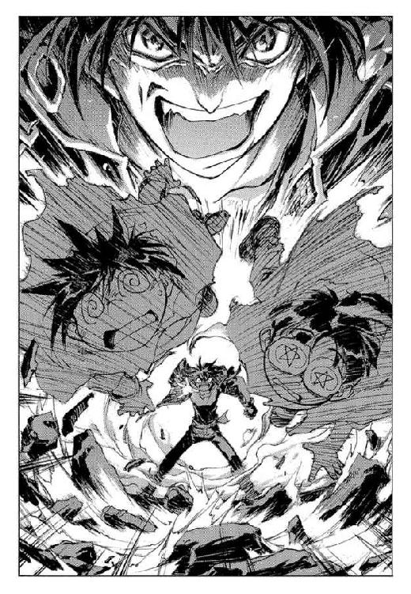
落ち着いてみれば、状況はすぐに分かった。
地下通路だ。サルアが言っていた。天人がかつて築いた砦の上に、この街はある。
それがたまたま、この神殿の地下部分の近くを通っていたのだろう。
長雨で、通路に水が溜まることは、オーフェンも思い知らされた。
地下通路に水が溜まり──そしてやはりこの街の地下に無数にあるというひび割れかなにかから、この場所の天井の上あたりに流れ込んできた。
アザリーの魔術で破壊された天井は、もともとちょっとした衝撃で崩れるほどになっていたはずだ。それが、水の重みに耐えきれずに瓦解した......
地人がいっしょに降ってくる理由が分からないが、まあそれはどうでもいい。
笑い出したかった。アザリーが起き上がって大笑いしていれば、いっしょに笑っていただろう。
彼は代わりに、クオをにらみ据えた。死の教師の巨躯の向こうに、床に血をまき散らして倒れているアザリーがいる。
「そうか......そうだな。すっかり忘れてたが、ようやく見せてやれそうだよ」
オーフェンは不敵な笑みを浮かべると、あとを続けた。
「これが俺だ」
◆第十三章 俺だ
「それは、やけくそということか？」
「ぬかしてろ」
オーフェンは、身体は相手に向けながら横に歩き始めた。ぺっ、と足下に鋭く唾を飛ばし、唇に残った滴を指でこする。
「図体ばっかり無駄にでかくしやがって。目も釣り合う程度には育てとけってんだ」
「............？」
さすがにそういった返事は想像していなかったのか、怪訝な顔でクオの言葉が消える。
怒ったというわけでもないだろうが──死の教師は無言で、翼を開いてみせた。真紅の鎧から広げられた、光の翼。
彼の手に握られている黒い柄に視線を注ぎながら、オーフェンは続けた。
「死の教師だかなんだか知らねえが、ほかにやるこたねえのか？ たまにゃ窓辺に座って詩でも書いてろってんだ。周りでぼたぼた鳥が落っこちて、猟師さん大喜びだぞ」
「............」
クオはなにも答えてこない。目線だけ、こちらを向いている。
「だいたいてめえ、初めて見た時から、なんやら嫌ぁな感じがしたと思ったら、体格から言葉遣いからして、先生にそっくりだ。もっとも先生相手にゃ、耳の穴に砂詰めて上から叩いてやりたいとは思わなかったがな──」
「チャイルドマン......か。あの若者は」
クオはゆっくりとつぶやいてくると、右手を──剣を持つ右手をゆっくりとあげた。あごを少し上げ、しっかりとこちらを見てから、振り下ろす！
飛来してくる刃の群れを、オーフェンは斜め後ろに跳び退きながらかわした。前進することに執着する必要はない......
さらに跳ね上がり、水平に薙ぎ払われた形で刃の軌道が変化する。跳ね上がったものはさらに跳び退いてかわし、そして──
「我は紡ぐ──」
一瞬で編み上げた構成を解き放つ。
「光輪の鎧！」
光の輪で編み上げられた鎖のような壁が、ムールドアウルの剣を受け止めた。その衝撃に刃のいくつかが弾け、クオがすぐに剣全体を引きもどす。防がれたことにはまったく動じた様子もなく、クオがつぶやいた。
「......十年前。十年前から、あの若者はわたしの目標となったのだよ」
「十年前、てめえは先生を退けた、って聞いたけどな」
魔術の障壁が消えていくのを見ながら、オーフェンはうめいた。クオは、改めて剣を振り上げながら──
「奴はわたしとは戦おうとしなかった」
淡々と言う。
「わたしが奴を見つけた時、既に奴はこの《詩聖の間》で最終拝謁を果たしていた。そして......わたしを見て......嘲笑したのだ」
表情のどこにも変化を見せないまま、剣を握る手だけに、クオが力を入れているのが分かった。
「奴はわたしの横を通り過ぎて、去っていった。わたしはなにもできなかった。恐れていた。それ以来......ずっとわたしは恐れていた！」
「......今日はまた饒舌じゃねえか」
「貴様を倒せば、この恐怖は消える！ サクセサー・オブ・レザー・エッジ！」
クオの絶叫が、こだまする。死の教師は魔剣を両手に構えると、大上段に振りかぶった。
「呪文を唱えてみろ。無駄な突進を繰り返してみろ！ わたしの記憶の闇は晴れる！」
叫ぶと同時に，剣を振り下ろしてくる。
「知ったこっちゃねえが──」
オーフェンは半歩横に歩いて、魔剣の刃をかわした。両手で持てば、剣は自ずと軌跡をせばめる。ばらまかれた玩具のように、石の床に当たって刃の群れが音を立てた。
刃の一個をつま先で蹴飛ばして、彼は告げた。
「アザリーにしてくれたことの借りは返すぜ」
クオはもう、なにも口に出してはこなかった。
オーフェンも、すぐに行動に移る──
敵が刃を引きもどしている隙に、彼は叫んだ。
「我は放つ光の白刃っ！」
光熱波が、クオに押し寄せる。が、クオの鎧は翼の片方だけでそれを弾き飛ばした。爆裂する余波が、跳ね返って真横へと飛んでいく。
オーフェンはその結果を見るよりも早く、駆け出していた。まだ残っているがれきを踏み越え、全力でダッシュしながらも、構成は既に編み上げている。
「我は砕く──」
これを防ぐためには、翼を両方閉じなければならないはずだった。
「我は砕く原始の静寂！」
瞬間、クオの立っている場所を中心に、空間が振動して爆砕の波紋が走る。
その一瞬前に、クオの鎧は着用者を包むように翼を閉じていた。光が複雑に変化し、魔術文字へと変化して、構成そのものをかき消す──
結果、翼で包まれた場所だけが、魔術の効果を免れたようだった。爆音はしたが、その中にいるクオは髪ひとつ揺れていない。
この密閉空間の中での爆発は、その衝撃波を均等に周囲の壁にぶつけ、そして均等にそれを跳ね返らせた──複雑な力の流れが空気をかき乱す。オーフェンはその中を駆け抜けながら、やはり既に次の構成を編み上げていた。
（時間を稼げさえすればいい......）
「我は踊る天の楼閣！」
今度は、攻撃のために放った構成ではない。
あと少しになった距離を縮めるために、オーフェンの展開した構成は彼の身体を一瞬で三メートルほど瞬間移動させた。カメラのシャッターのように視界が消え、そしてもとにもどる。
目的地に着いていた。
クオは、こちらを見ている──
オーフェンは足下に倒れているアザリーを見つめながら、彼女のすぐそばに落ちていたバルトアンデルスの剣を拾い上げた。もう刀身から魔術文字の光は消えて、金属そのものに刻まれた文字跡が冷たく残っているだけだ。彼はその文字跡に指を滑らせた。
「彼女ほどじゃねえが──」
長大な剣の重量が、ふっ、とゼロに近くなり──そして、刀身に銀色の光で、魔術文字が燃え上がる。
「この剣の使い方なら、俺だって知ってるんだぜ......！」
クオとの距離、五メートル。
これが最後の瞬間になる。オーフェンはなんとなく予感した。
互いに切り札となる武器を持っている。これ以上、戦いを長引かせる理由もない。
死の教師の光の翼は、もう開いている。クオは剣を腰の横に、全体を切り払う構えを取っていた。
順番を待つように、ムールドアウルの剣は刃を並べていた。距離がある。圧倒的に有利なのは、奴のほうだ──オーフェンは剣を手に提げて冷静に分析していた。アザリーに視線を落とす。
クオが動き出す──よりも早く。
彼は輝く剣を、アザリーの背中へと突き立てた。まったく手応えを感じないことが、ひどく不気味に感じられ、背中が粟立つ。刀身の文字が、ひとつひとつ彼女の身体へと移っていく。それがすべて移ったのを確認してから、オーフェンはバルトアンデルスの剣を彼女の身体から引き抜いた。
光の文字が、ぱっと弾けて消える。瞬時に──彼女は健康体へと変化した。
ひょっとしたら、あの満身創痍の状態でも意識は保っていたのかもしれない。彼女は待ちかまえていたように素早く、転がって身体の向きを変えると、両手をクオに向けて突き出した。
「光よ！」
彼女の魔術が、炎と爆音を轟かせるのに少し後れて──
オーフェンは足下に転がっているがれきのひとつを、つま先で上に蹴り上げた。顔の前くらいまで跳ね上がったその石片を手のひらで前方へ弾くと同時、叫ぶ。
「我は踊る天の楼閣！」
疑似空間転移。だが転移するのは、その石片──
光速にも近い速度で、石片はクオへと飛んでいった。一瞬。つまり石片がクオの身体を貫通して、その後方へと実体化するまでの一瞬。アザリーの魔術で既に炎に包まれていたクオの周囲から音が消えた。空気をすべて引き込むように静寂を作ったあと、その空間が一気に破裂する。衝撃が、風となってオーフェンの顔面を叩いた。
すべてが終わったあと......
クオはまだ、立っていた。まったくの無傷で。
翼はまだ勢いを失わずに、その光を放っている。
「............」
オーフェンは無言で、それを見つめていた。横で、むっくりとアザリーが立ち上がるのを気配で感じる。彼女はなにも言わないまま、さっと手を差し出してきた。その手にオーフェンは、バルトアンデルスの剣を手渡した。
クオは動かない。右手に剣。双翼を挙手するように上げて、直立している。険しい表情にも変化はなかった。
「無駄だったな」
それだけを、クオは言ってきた。ただそれだけを。
「......やれるところまでやるさ」
手ぶらになった両手の指を鳴らしながら、オーフェンは告げた。
「少なくとも、あの教主はいなくなった。打つ手がなくなるまで打ち続けてやる。クオ・ヴァディス・パテル」
「我が信仰はいずこ......」
こちらがなんという気もなしに発した名前を、クオは繰り返してきた。その口元が壊れ、数時間前にも見た異様な笑みを作り始める。全身の筋肉を使って嘲笑するような、病的な笑み。
「教主など......奴は偽善者だ」
「......偽善？」
予想の中になかった単語に、オーフェンは聞き返した。聞いていたかいなかったか分からないが、クオが続ける。
「チャイルドマンが、奴を殺す方法を知っている？ そんなものはありはしない。我が女神ですら、三百年もあのままで始祖魔術士を殺せずにいる。自分が死ねないことを知っていて、それを探しているような気になっているだけだ、奴は......そしてこれからも、ずっとそうし続けるだろう。わたしが、お前が、すべての死の教師たちと魔術士どもと、それ以外の人間が死んだのちも、ずっと」
言いながら彼が示したのは、《詩聖の間》だった。
「わたしは最終拝謁を果たしたことと、そしてこの鎧を一度身に着けたこともあって、教主の精神支配から逃れることができた。教主と接触したことのないサルアやメッチェン、カーロッタも、今はまだ大した影響は受けていまい......」
「──なにが言いたいわけ？」
剣を構え、アザリーが詰問口調でうめく。
クオは即答した。やはりそちらも──剣を構えて。
「足音が聞こえてきたのでな......時間を稼ぎたかったのだ」
「......なに？」
オーフェンは、聞き返した。彼らは《詩聖の間》を背に立っている──それと対峙するクオの背後には、神殿の地下部分へと続く広い階段があった。
（足音？ 時間稼ぎ......？）
「難しいことではない」
クオの返事を聞きながら──オーフェンはとりあえず、あたりを見回した。ボルカンとドーチンが、いまだ焦げて転がっている。もともとアザリーが壊していたうえ、さらに暴れたせいで、通路はもう無事な箇所など残っていないほど完全に破壊されていた。あちこちに落ちた天井の破片。アザリーがすぐとなりで剣を構えている。
やがて。
クオの背後から続く階段に、影が差した。五人ほど──いや七人。一番最初に姿を見せたのは、女だった。扇子を手にした、三十歳ほどの女。白い肌にブロンドはよく似合っているが、のんきそうでいて剣呑な雰囲気を持った眼差しは、それ以外の印象のすべてを打ち消してしまいそうだった。
彼女の後に続くようにして、知った顔が四人。サルアとメッチェン、クリーオウとマジクである。四人とも両腕を頭の後ろに回して、その女についてきている。四人の後ろにふたりの神官兵がいた。それで全員である。
人質──
「これでまだ、打つ手があると言えるかな？」
ぽつりと、クオがつぶやいた。
「............」
オーフェンはなにも答えなかった。アザリーも、まったく動かずに黙している。
ブロンドの女に連れられた一団は、階段を下りきる寸前まで進んだところで、足を止めた。
振り返らずにこちらを見据えたまま──クオが言う。
「よく来てくれた、カーロッタ」
「......はい、クオ」
ブロンドの女──カーロッタと呼ばれたが、とにかく彼女が気楽に答える。
「............」
あくまで言葉なく、オーフェンは立っていた。
「一応、早いうちに報告しておきますわね、クオ。ラポワント・ソリュード教師長がわたくしの審問を妨害してきたので、処刑いたしましたわ」
「ふん。そんなものだろう」
「それと、クオ......聞きたいのですけれど」
「ん？」
「その方たちは？」
と、カーロッタとかいう女が扇子で示してきたのは、こちらだった。クオはなんということもなく、すらすらと答える。
「侵入者だ。もうじき、終わる」
「......そうですか」
これまたなんということもない調子で、答えるカーロッタ。
オーフェンは、うつむいた。前髪で顔を隠すように──自分のつま先を見つめる。
彼は必死に、感情を出すまいと耐えた。見せたくはなかった。
「............」
「どうした？ サクセサー・オブ・レザー・エッジ」
クオの言葉のひとつひとつに反応したくなるが、それも耐える。
耐えようという必死の思いが──ほんの少しはみ出て、肩を震わせた。
アザリーがどうしているのかは、よく分からなかった。ただ彼女も黙っているところを見ると、彼と同じく──耐えているのだろう。
哄笑が......いや、嘲笑が、静かに響き始めていた。
「くっふっ......ふ、ははは......」
無論、クオだった。
その背後で、クリーオウの金髪の中から、ひょこんと、黒い尻尾が飛び出している......
「ふははははははは......」
哄笑は少しずつその声量を上げていった。それを聞きながら、オーフェンはただ肩を震わせていたが──やはり、その程度の「はみ出し」では足りなくなってきていた。喉が震えて、声に出始める。
「へ、へへへへへ......」
「はははははははは──」
クオの笑い声に比べれば、小さなものだったが、オーフェンはどうしても笑いが止まらなかった。ヒステリーのように、身体の中のなにかが痙攣している。
メッチェンが、左手でカーロッタの肩をぐいと押している......
「へへへへへへへへ──」
「はははははははは──」
メッチェンに強く肩を押されたカーロッタが、どこか呆れ顔で横にどき、後ろの四人に道を譲っている......
「へへへへへへへへへへ──」
「はははははははははは──」
サルアが後頭部に回していた手を前に出すと、その手に刀身がガラスでできた長大な剣が握られている......
「へへへへへへへへへへへ──」
「ははははははははははは──」
同調したように、オーフェンとクオは笑い続けた。オーフェンも、もう顔を上げていた。はっきりとクオの顔を見て笑い声をあげている。両手を広げ、自分でも馬鹿馬鹿しいと思うほどに、笑いが止まらない。
クリーオウまでもが、なにやら大層な拵えの剣を構えている......
ついでに言えばマジクもだ。こちらは抜刀してはいないが、短刀を抱えて厳しい表情を見せている......
「へへっへへへへへへへへ──」
「はぁはぁははははははは──」
笑い続けるクオの背中で。
大爆発が起こった。レキの魔術だろう──前触れもなく白い爆炎が立ち上ったかと思うと、クオの巨体が玩具のように一度床に沈み、そして跳ねた。
光の翼が、片方だけ、ちぎれて消える。
引き裂かれた絹のように、無数の光の糸となって、翼は虚空に散っていった。
クオは、なんとか振り返ろうとしたかもしれない。だが間に合ったとしても、ガラスの剣を振りかぶったサルアの顔が見えただけだったろう。
不可視の刀身に一撃され、翼を失ったほうの肩──左肩の鎖骨が、完全に陥没した。中途半端に振り向いたせいで、クオは真横を向いている。それでも振り返ろうと、ある意味最後に残ったただひとりの死の教師はこちらに背中を向けた。
その彼の横を駆け抜けて、金髪の少年が、声をあげる。
「お師様！」
マジクは持っていた短剣を、こちらに放り投げた。
「それ──使ってください！」
オーフェンはそれを両手でキャッチすると、ほとんど意識しないほどの動きで、その剣を抜いていた。真新しい黒い柄は、意外なほどに手に馴染む。鞘は彼の好きな鋼鉄製だった。《牙の塔》で支給されるものによく似ている。が、その刀身は──銀色に輝く刀身は、別の場所で見覚えがあった。
（これは......）
だが胸中ではっきりした確信を出すより早く、猛獣の遠吠えのようなクオの悲鳴が聞こえてきた。
見ると、クリーオウの剣を、クオが左腕の肉で受け止めている。血しぶきが上がって、今度はそれを見てクリーオウが悲鳴をあげていた。
サルアは──もう数瞬前の出来事だったのだろうが──まだ生きている片方だけの翼に弾かれて、今は宙を弾き飛ばされているところだった。
その直後に、クリーオウも叩き伏せられる。
「このぉぉぉぉぉっ！」
オーフェンは、短剣を構えて駆け出した。クオが、肩越しにこちらを見ている。
翼が羽ばたいた。片翼しかない魔人の翼が、音もなく──だが素早く──薙ぎ払うように迫ってくる。だが、彼はそれに対する心配はなにひとつしていなかった。
「我掲げるは──」
構成を放つべく呪文を唱えている間にも、彼のすぐ後ろを、最も信頼できる人間が守っていてくれるのを感じている。
「降魔の剣！」
なにも持っていない左手に、ふっ......と剣を握っているような重みが加わる。光の翼はもう眼前へと迫ってきていたが──
彼を打ち払う寸前、その動きを止めた。アザリーが飛び込んで、バルトアンデルスの剣をその翼に突き立てている。
彼女がなにかを叫ぶと同時、ぱんっ、と破裂音のようなものが響いて、クオの翼が消えた。同時に、無数の紙吹雪が──金、銀、白、赤、無数の色の紙吹雪が視界を埋めた。アザリーが《変化》させたらしい。
紙吹雪の中を突っ切って、オーフェンは雄叫びをあげながら、左手の〝剣〟を突き出した。剣の力場に、視界をふさいでいた紙吹雪が、渦を巻いて一点に吸い込まれ──消える。
魔術の〝剣〟はそのまま、クオの右肩を貫いていた。筋肉が肥大しているクオの肩に、大穴が開いている。
それを見ながら、オーフェンは右手の短剣を滑らせた。クオの右腕は封じた。左は、サルアの剣で鎖骨を折られて動かないはずだ。反撃はない。あとは足でも潰せば、もう完全に無力化するはずだ──
右股を狙って突き出した短剣は、なにか硬いものに当たって弾かれた。
（............!?）
わけが分からず、悲鳴をあげる。短剣を受け止めたのは、クオの持つムールドアウルの剣──その柄だった。クオが、右手で持っている......
（本物の化け物か!?）
右肩に穴の開いた状態で、クオは、信じられない怪力を出してきた──魔剣の柄を振り上げて、一息で、周囲三百六十度、すべてを横殴りに剣を振る。
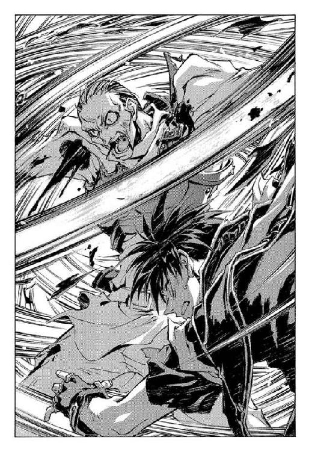
「うわああああっ!?」
一番大きい悲鳴は、サルアのものだった。オーフェンはとっさに身をかがめて刃をかわしたが、全員がそううまくはいかないだろう。実際、階段に棒立ちになっていた神官兵ふたりが、血を噴き上げながら倒れるのが見えた。サルアも多少、浅い傷を負ったらしい。クリーオウはもとから床に倒れていたのが幸いして、無傷のようだった。ほかの人間も、うまくかわしたか、たまたま範囲外だったか、やはり無傷らしい。
オーフェンはすぐさま反撃に転じようとしたが──クオのほうが早かった。ただし、攻撃をしてくるわけではなかったが。クオは相変わらず巨体に似合わない素早さで、誰もいないほうへと戦場を離脱していった。通路の端から端まで逃げると、この数秒で彼に跳びかかった者全員と対峙するような格好で、こちらを向いてくる。
無事──とは言えない満身創痍である。光の翼を造り出していた真紅の鎧は、無惨に変形していた。最初の一撃で、左半分がねじ切れてなくなっている。右肩のほうは、きれいさっぱり消失していた。アザリーの剣で、鎧の一部分ごとあの紙吹雪に変化させられたのだろう。翼がなくなると、鎧は途端に無防備だった。左鎖骨をサルアが砕いている。そうでなくとも左腕もクリーオウの剣を受け止めて、ひどい出血をしていた。右肩は、オーフェンが魔術で潰した。それぞれがすべて致命傷という状態だった。
常人なら、とっくに戦意を失っていても良さそうなものだが......
クオは凄絶な眼差しで、カーロッタをにらみ据えた。
「どういうことだ──裏切るつもりか!?」
だがカーロッタは、涼しげなものだった。
「考えてもみてくださいな。クオ......」
お手上げというような仕草をしてみせる──扇子を持ったまま。
「魔術士にディープ・ドラゴン。凄腕の死の教師がふたりも敵に回って......わたくしひとりでは、荷が勝ちすぎていたのですわ。そうでしょう？」
と、ちらりとすぐ横に立ちメッチェンを視線で示している。メッチェンが左手に持った剣の切っ先を、カーロッタの首筋にぴたりと当てていた。というより、刃が既に二、三ミリ突き刺さっているようにも見えたが。
クオが、舌打ちするのがはっきりと聞こえる。
「こんな時に......」
「それに教主様の命令ですもの。隙あらば......って」
ちょっとしたわがままだとでもいうように、小首を傾げて、カーロッタ。
「仕方ないですわよね？」
「貴様も──背約するかっ！」
クオが、絶叫する。穴の開いた肩で──実際に見ても信じられなかったが──右腕を振り上げ、剣を振り下ろす。無数の刃の奔流が、メッチェンごと、カーロッタを打ち倒した。
「メッチェン!?」
サルアが、叫び声をあげる。メッチェンは仰向けに倒れたまま、顔を上げると、
「大丈夫──それよりも、クオを！」
無事だったのは、彼女だけではないらしい。カーロッタも身を翻すと、素早く階段を上って逃げていく。それを追おうとしたメッチェンを、サルアが呼び止めた。
「ほうっておけ！」
メッチェンが、立ち止まる。驚くほど速い逃げ足で、カーロッタはもう階段上から姿を消していた。
振り向くメッチェン──唇を噛んでいる──に、サルアがかぶりを振る。
「あの女はどうでもいい......今は、まだ」
「......分かったわ」
うなるように言葉を発して、彼女がクオへと向き直る。
オーフェンは短剣を手に、静かにクオを見つめていた。もう言葉はいらなかった──が、平静なのはそのせいではない。
剣を片手にぱたぱたと、金髪の少女が駆け寄ってくる。頭の上には子犬のようなドラゴンが、気楽に尻尾を振っていた。クリーオウは彼の横まで来ると──くるりと向きを変え、その切っ先をクオへと向ける。
走ってはいないマジクは、彼女の後ろにすいっと陣取ったようだった。とりあえず、そこが一番安全だと踏んだのだろう──いい判断だ、とオーフェンは苦笑を浮かべた。
アザリーは先ほどから変わらず、剣を手にじっと立っている。サルアとメッチェンも、階段の下から自分たちの上司を睨めつけていた。
それらすべてと、クオはひとりで対峙している......
「終わりだな、御大」
ガラスの剣を掲げて、サルアが告げた。天井のすぐ下の空間になにかをよどませるような、なにかのこもった口調。
「あんたを殺させてもらうぜ」
「......なぜカーロッタは、貴様らを殺さなかった」
クオ・ヴァディス・パテルは、まるで他人事のようにうめいた。いや、あるいは自問しただけだったのかもしれないが。
「貴様らが彼女の手に余った？ もしそうだったなら、彼女はもとから貴様らなど発見しようとしなかったろう......」
「あの女の対処法で、俺がひとつだけ心得てるものがある」
サルアがにやりと、笑うのが見えた。
「取り引きしたのさ。俺らはてめえを殺す。彼女は俺たちを無事ここまで連れてくる」
「ふ......」
笑いとも、吐息ともとれるようなどっちつかずの音を、クオが漏らす。
「結局......彼女がわたしの死を持ってきたか。教主と聖都......わたしの精神支配は、解けていなかったということなのかもしれんな......」
「......？」
意味が分からず、オーフェンは眉根を寄せた。クオは、牽制するように右腕を振り上げると、その視線を《詩聖の間》へと向けやった。
暗い地底湖は今でも黄塵に包まれて、ただ沈黙している。この戦いのすべてを見ていたのだろうか──あるいはまったく見えてなどいないのだろうか。始祖魔術士オーリオウルの瞳が、虚しく光を放っている。
「過去......何人の人間がここで最終拝謁を受けたのか......」
肩と腕と。大量の出血を抱えて、クオの全身は鎧の色とは違う真紅に染まっていた。
「あれはこの大陸の滅びの鍵だ」
と、オーリオウルと、彼女の首をつかむ腕とを示す──
「わたしが天人の遺産を解読するうちに、理解したことがある。この大陸は、始祖魔術士結界と呼ばれる強大な防壁で覆われている──そのために外界からは隔絶されている......この黄塵は、死の砂だ。外界から吹き込んでくる、死んだ砂だ......」
血を失って蒼白になっていく顔色に反比例するように、クオの眼差しに力が入っていくことに、オーフェンは気づいていた。短剣を手に、全身が粟立つのを感じる。クオはまだ......死なない。そんなことに、慄然とする。
クオはゆっくりと続ける。
「神々をも通さぬ始祖魔術士結界......そのせいでドラゴン種族は、過去幾度にも亘る神々の救済の手から隠れおおせてきた」
「救済？」
アザリーが聞き返す。クオは視線を《詩聖の間》からもどしはしなかったが、答えてはきた。
「神々は世界を......もとにもどそうとしておられるのだ。それだけが、この閉ざされた大陸の救済となる。そうであろうが？」
誰も答える者はいなかった。
「どのみち、結界には抜け穴があったのだ。その抜け穴から、魔獣と呼ばれる神の下僕たちが降臨したが、いずれも敗退した」
クオの息が荒くなっていく。体力は見る見るうちに衰退していくのが分かるというのに──オーフェンは、彼が言葉を連ねるごとに不安が増していくのを感じていた。
誰もがそうだったのかもしれない。だが誰も動けない。
「抜け穴の存在を......ドラゴン種族は、最初の魔獣バジリコックが大陸に侵入してくるまで知らなかった。結界に抜け穴があることを知った時、彼らは戦慄したという。大陸は安全なはずだったのだ。かろうじて彼らが出した仮説は......単純なものだった。魔術は、必ずその力に限界がある──始祖魔術士たちの力の総量に対して、このキエサルヒマ大陸がほんの少しだけ、広すぎたのではないかと......結界の不備を知りながらも、決定的な対策は取れないまま月日は過ぎた。そして、三百年前......」
生気そのものを吐き出しているかのような、クオの言葉。それが続く。
「三百年前。大陸への最後の侵攻──それは、女神御身、自らの来臨......」
ずるり......と、奇妙な音。ぞっとしながらオーフェンは悟った。クオの足音だった。今までは聞くことのなかった、クオの足音。
「ラグナロク砦の、戦い......始祖魔術士オーリオウルは、自分自身を道連れに、女神を結界の外へと押しもどした」
クオは《詩聖の間》へと向かっている。ゆっくりと。血を滴らせながら。
「オーリオウル自身の身体によって、結界の抜け穴もふさがれた。これで女神に打つ手はなくなったのかもしれなかった。だがそれまでの戦いで、ドラゴン種族は既に深い傷を受けていた。種としてのダメージをな。特に天人種族は深刻だった。かってのバジリコックの毒によって、子孫を残せなくなってしまったのだ」
「............」
「あとのことは、最終拝謁が語ってくれた通りだ、キリランシェロ」
その時になって初めて──オーフェンは、クオの言葉が自分に向けられたものだったのだということに気づいた。なにも答えられずにいるうちに、クオは続ける。
「天人種族はオーリオウルを失った後、二派に分かれた......《フェンリルの森》の聖域に隠遁するオーリオウル派と、オーリオウルの使い魔、そして彼女を崇めるただひとりの司祭でもあるイスターシバを新たな首長とする派とに。イスターシバは、自分たちの子孫を残すために、あるひとつの計画を目論んでいた......」
「......人間との、混血......」
我知らず、オーフェンはつぶやいていた。クオがうなずく。
「そうだ。可能な限り遺伝情報を組み替え、異種族の混血を行った──だが生まれた者は......人間の魔術士に過ぎなかった。ノルニルではなく」
クオはいつしか──《詩聖の間》を望む、通路のぎりぎりの淵にまで進んでいた。
「その頃、とある愚かな男が、この不毛の戦場跡で、虚空から突き出した女の足を発見した。なにも知らない愚か者は、それをこちら側に引き込んだのだ──だがそれによって、女神に勝機が訪れた。結局のところ、それでイスターシバなる女は焦ったのだよ。教主が始祖魔術士となり──彼女らの造り出した子供たちが、本格的に魔術の力を得てしまった──それまでは、せいぜいが魔術の構成が見えるだけだったものがな。ドラゴン種族の遺伝情報を持っているというだけで危険だったものが、まず確実に女神のお怒りを買うものへと悪化した。彼女は聖域から糾弾され、そして十数年後、人間種族の魔術士と、ドラゴン信仰者ひいては天人そのものとの戦争──〝魔術士狩り〟が起こった。幻視で見ることができるのは、その末期の記憶だ......」
ここまで語って初めて、クオはこちらを振り向いた。魔剣を掲げて──息を吐く。
「......わたしがなにをするか、分かるな......？」
正直なところ、分からなかった。不安を感じはするが、それしか分からない。
クオは唐突に、サルアへと視線を向けた。
「......なにを、大陸に公開するつもりだったのだ？ サルア。愚かな若者よ」
「なんだと？」
サルアが聞き返す。だがクオは構いもしない。
「このすべての茶番をか？ 愚かしい。なにができるというのだ......我々などに。傀儡は無力なお前自身だ。お前が、この教主と、聖都と、伝説と──なにもかもに、傀儡にされていたのだ。そうだ。わたしを見ているな？ お前の思った通りだ。わたしもなのだよ。傀儡だ」
そううそぶく巨人の口元から、つうっと......一筋の赤い筋が垂れた。血。だがそれが吐血だとは思えないほどに鮮やかに美しい。
「お前たちの愚かな行動のせいで、わたしは、準備もできていないまま行動を起こさなければならなくなった。わたしがやらなければならないというのに、わたしの命がここで終わる。だが、魔術士の汚れた血も、それを受け入れようとする背約者どもも──すべての愚かな背約者どもも、これで、これで終わりだ」
血をぬぐいもせず、クオは剣を掲げてみせた。
「世界をすべて、もとの持ち主へと返上する──それでこの不完全な蛇の中庭が、まっとうなる神の園、ユグドラシルへともどるというのなら！」
「しまった！」
アザリーが、悲鳴をあげる。
その声に触発されるように、オーフェンもはっと感づいた。
（そうだ......当たり前だった！）
だがクオの動きのほうが早かった。彼は身を翻し──
最期の息を吐いた。
「女神よ！──来たれ......あなたを迎える者が、ここにいる......」
クオ・ヴァディス・パテルが、星の紋章の剣を《詩聖の間》へと突き出す。
オーフェンは飛び出したが、もう遅いことは自分でよく分かっていた。絶望的に、叫ぶ──
「駄目だぁぁっ！」
クオの剣が、その無数の刃が、暗い地底湖の上を真っ直ぐに貫いていき──
びしっ......！
小さな音を立てて、オーリオウルの蒼白の眉間に、赤いものが散った。黒い刃が頭蓋を貫き、赤い糸と半透明のしぶきとを、その天人の頭蓋骨から飛び散らせた。
そして、鳴動が始まった。
ずるり......と、オーリオウルの肩が落ちたように見えた。衝撃に口を開き、四肢を痙攣させている。
彼女の首を握りしめている腕が──
ゆっくりと、動き出しているようにも見える。それが、オーリオウルの身体が震えだしたせいなのか......腕そのものが動き出したのか。その時点では、まだ分からなかった。
「はぁははははははは！」
揺れ動く神殿の中で──クオ・ヴァディス・パテルが哄笑をあげていた。傷だらけの身体で、血だらけの身体で、その全身をすべて嘲りと驚喜につぎ込んで、彼が笑っていた。
振動を激しくした床に足を取られそうになりながら──こちらを向く。深く低い鳴動が、彼の嘲笑と唱和するようだった。
「始祖魔術士は不死......この程度のことでは死なんよ。だが、少しでも彼女の力が弱まれば──女神を押しとどめているものはなくなる！」
眼を見開き、血走った目を剥いて、死の教師は首長たる男は叫び続けた。
「仕方がない......良かろう！ 人類すべての命を贖おう！ それが世界を蘇生させる方法であるのなら！ 女神よ──わたしが済世者だ！」
「あんたはぁぁっ！」
アザリーが、完全に声を裏返らせて、叫び声をあげるのが聞こえた。彼女の放った光熱波が、クオの半身を巻き込む。
爆音とともに、大男の身体が砕けた。右腕と右足とがちぎれ飛び、地底湖へと落ちていく。その反動で、残った胴体は通路の側へと倒れ込んだ。クオの右腕とともに、ムールドアウルの剣も黒い湖底へと沈んでいく。
死の教師は悲鳴をあげたかもしれない。だが聞こえなかった。満面に嘲りを浮かべたまま、仰向けに倒れる。
「はぁ......ははは」
弱まった──だが鋭さはそのままの嘲笑が、その開いた口腔からこぼれた。
「はぁ......」
クオの肺から、しゅーっという息が漏れるのが聞こえる。そのまま大男は、動かなくなった。
だが......鳴動は止まらない。
「女神......様？」
メッチェンが、熱に浮かされたような声でうめいているのが聞こえた。見てみると、剣を床に落とし、ひざを震わせながら......片手だけで聖印を切ろうとしている。
「違う！」
否定の声をあげたのは──サルアだった。彼は剣を捨てていない。
「自分の死を崇めちまったら、もう駄目なんだよ！」
空いているほうの手で、聖印を切ろうとしたメッチェンの手を、ぐいとつかみ上げる。ひざまずいた彼女を引っぱり上げるように、サルアが力を込めても、メッチェンは動くことを拒むように肩を揺らした。
と──
「おわわわわわわわ！」
がたがたと揺れながら、耳障りな面倒くさい声が──とオーフェンは思った──聞こえてくる。床の振動で頭を何度も打って目を覚ましたのだろう。ボルカンが、むっくりと起き上がっている。
「なんだ──どーした!? なんとゆーか、水に流され高いところから落下したうえ困窮魔術士の根性曲がり魔術を食らったかのよーな痛みだぞっ!?」
「......服が濡れてて天井に穴が開いててがれきが転がっててちょっと焦げてるってことは、多分その通りなんじゃないかな」
えらく大ざっぱに──だが正しく、ドーチンが分析してぼやいている。こちらもいつの間にか目覚めて、ボルカンの近くに移動していたようだった。もっとも、落下してきた時から意識があったのだったとしても、オーフェンは意外だとは思わなかったが。
「と・いうことはっ──！」
ボルカンは立ち上がると、びしっとこちらを指さしてきた。
「やはり貴様か！ このマスマテュリアの闘犬・戦士ボルカノ・ボルカンの栄光の往路に最後に立ちふさがる凶悪借金取り！」
剣を抜き、なにが楽しいのか生き生きと気勢を上げる。
となりで、ドーチンは沈痛な面持ちだったが。
「......その栄光の往路とやらに、なぜいっつも復路がないのか、すごく簡単なことなんだけど答えが分からないんだ......」
なにやら哲学的な袋小路に入り込んでいるらしい。
そんなことには関わりもないといった風情で、ボルカンは続けてきた。
「つまり貴様を倒すため、俺様の究極必殺技で、ぬるま湯でぬるまって殺す......あれ？ いやちょっと待て。うまくまとまらなかっ──」
ごぎん！
背後から、サルアのガラスの剣で脳天を一撃され、ボルカンはずるずると床に沈んでいった。ぽてりと倒れた兄の横で、ドーチンがため息をついている。
「ったく、このクソ忙しい時に......」
ぶつぶつ言いながら、サルアはこちらへと視線を上げた。
「──どうするんだ？ キリランシェロ！」
「どうするったって......」
オーフェンはうめいて、短剣を握る手に力を入れた。いまだに鳴動収まらぬ《詩聖の間》と──そして、アザリーの顔とを見比べる。彼女はただじっと、剣を肩に背負ったまま、オーリオウルと女神の腕とを複雑な表情で見据えている......
鋭い眼差しに、困惑の色を深めて、もうクオの死体のほうには視線を向けてもいない。
彼は、唐突に気づいた。
（......打つ手が、ないんだ）
なにかあるのならば──彼女はもう動いているはずだ。
（アザリーですらなにもできないのなら......俺にできることなんて、ない......）
絶望的な感情の波が押し寄せてくる。
オーフェンは、視線をアザリーからサルアへと移した。死の教師は剣を手に、やはりこちらを見返している。
「もう──」
駄目だ。
声を出しながら、鳴動する《詩聖の間》へ向き直る。黒い湖面が泡立っている。細かい振動が、無数の波紋を水面に刻んでいた。オーリオウルの足下に、ひとつだけ、大きな波紋がある。
始祖魔術士の首をつかむ腕が、少しずつ──伸びてきていると、オーフェンは認めた。もう、腕だけではない。肩が見えてきている。
「オーフェン！」
クリーオウが、マジクといっしょに駆け寄ってくる。
「どうしたの？ いったいなにが──」
「危険だ！ さがれ！」
オーフェンは近づいてきた彼女を後ろに押しやりながら、叫んだ。そうしているうちにも、《詩聖の間》に、ぱちっと火花のようなものが走る。空間に対するひび割れのような閃光。黄塵が......ひときわ濃い黄塵が、オーリオウルの周囲で、ぶわっと渦巻く。
突然、アザリーの声が響いた。
「──みんな、伏せてっ！」
なにが分かったというわけではなかろう──明確な兆候があったわけではなかった。それよりは、単に臭いとして危険を感じ取ったのか。オーフェンには分からなかったが。
それでもとっさにオーフェンは床に伏せた。刹那。
────！
音にしようがない。莫大な量の炭酸を弾けさせたような、そんな衝撃に大気が波打つ。爆音に大地が揺れた。目を閉じ、身体を包む無感覚に、オーフェンははっきりと恐怖した。
やがて──
全身をなにか小さな凶器で無数に叩かれる。あっと言う間に血で濡れた身体を、彼はかき抱いた。息ができなくなる。大きな音。そして風......
彼は、目を開いた。
見上げる。彼の身体を叩いていたのは、雨だった。激しい雨。土砂降りの雨が《詩聖の間》と通路とに降り注いでいる。天井がなくなっていた。
無論、その上にあった神殿もだ。神殿のほぼ半分が消え去ったようだった。はるか高くそびえる巨大な神殿が、縦割りの断面図のように立っている。
衝撃波に、みな倒れていた。地人の兄弟はダンゴ虫のように硬直して転がっているし、クリーオウとマジクも、サルアにメッチェンまでもが失神している。アザリーは、彼女は立っていた。
「そんな......」
オーフェンは、毒づいた。雨の降り注ぐ《詩聖の間》には、相変わらずオーリオウルと、女神の腕がある。腕がなにをしたというわけではない。ただ、それが動いたというだけで──これだけの破壊が起こってしまった。
惨事が起こってから数秒遅れの悲鳴が、雨音の中、聞こえてきた。
ざわめきが、響く。先刻からの戦闘音に、既にしびれを切らしていたのだろうが──地上から、神官やらなにやらの足音が聞こえてくるようだった。ずっと閉ざされていた《詩聖の間》──今は、地上から見下ろせばすべてを見渡せる。
もっとも、大陸が崩壊するまでの話だが......
「ドラゴン種族......」
オーフェンは、破れかぶれでうめいた。激しい雨に打たれ、顔面にしたたる滴を手でぬぐいつつ、
「ドラゴン種族なら、あの女神とやらと戦えるはずだ......」
「三百年前ほどの力が、まだ彼らにあるのなら......ね」
静かに、答えてきたのはアザリーである。彼女は剣を肩から下ろし、皮肉な笑みを浮かべてみせた。
鳴動。この揺れは、どこまで響いているのだろうと、オーフェンは訝った。この神殿だけか？ キムラック全体か？ それとも大陸のすべてか？
雨。黄塵。そして鳴動。その中で、アザリーの姿はひどく小さくなったように見えた。震えている。オーフェンは、信じられない思いでそれを悟った。
彼女は続ける。
「......聞かされた話をすべて信じれば、だけど──三百年前のドラゴン種族には、すべての始祖魔術士がそろっていた。彼らは砦まで築いて敵を待ち受けていた。現在、聖域に隠れ棲んでいる彼らに、どれだけの力があるのかしら......？」
幻視の中で──イスターシバの語った言葉を、オーフェンは思い出していた。ドラゴン種族が隠遁する聖域には......もう余力はない。
「分かったわ。ようやく分かった......」
アザリーが、こちらを向いてくる。その瞳には、昔見た、いたずらするように輝くブラウンの光はもうない。彼女の目は、なにかの覚悟と恐怖、そして歓喜に燃えていた。
「先生は......滅びゆくドラゴン種族の後継を見いだそうとしていた──彼の『母親』の遺言に従って......」
「アザリー？」
「わたしもね、今になって思い出したのよ。わたしもあの幻視を、夢で見ていた......寝ている間に」
かっ──！
閃光が、雨粒の間隙を裂いて、闇と影を圧倒した。衝撃音に、顔を腕でかばいながら、オーフェンはその轟音が炸裂したほうをのぞき見ていた。雷が、女神の腕を直撃している──雨雲から稲妻が発せられたのか、それとも女神の腕から放電したものかは分からないが......
なんにしろ、その轟音の中、アザリーは微動だにせず《詩聖の間》と向き合っていたようだった。
女神の腕は、もう明らかに肩まで入り込んできているようだった。その細くしなやかな腕が動くたび、黄塵が大量にまき散らされる。
「分かったわ。全部分かったわ。世界書に書かれていたことは、意味のない物語なんかじゃなかった......」
取り憑かれたように、アザリーが独りごちる。
「あれが入り込んできたら......大陸は滅びる。それを......もうドラゴン種族は止めることができない......」
「アザリー？」
オーフェンは彼女の名前を繰り返した。短剣を鞘に収めて、彼女へと近寄る。
彼女は、予期していたように、こちらを振り向いた。そのまま、言ってくる。
「手は......あるわ」
「え？」
「キリランシェロ。精神士って、知ってる？」
「......見たことはある......けど──」
つぶやきながら、彼は──彼女の考えを、不意に悟った。
「駄目だ！」
叫ぶ。彼は、アザリーのもとへ駆け寄った。
「絶対に駄目だ！ そんなことは──」
アザリーの着ている通水性のない戦闘服は、雨に濡れて窒息しているような光沢を見せていた。彼女は有無を言わさない目つきで、こちらの手に──バルトアンデルスの剣を押しつけてきた。
そして、淡々と告げてくる。
「精神士......肉体を精神体にすべて変換した、白魔術士の一形態よ。精神体となった術者は、極めて不安定な存在になるけれど、その代わり一切の物理的・肉体的な束縛から解放される。その魔力も、ドラゴン種族並みに増大する......」
「できるもんか！」
オーフェンは渡された剣を床に叩きつけ、怒声をあげた。
「無理だ、アザリー──精神体になるような大魔術には時間も技術も必要なはずだろ!?」
「できるわ。一瞬で」
アザリーは落ち着いた声音で断言すると、彼が叩きつけた剣を拾い上げた。そして再び、こちらへと差し出してくる。
「この剣でなら、肉体を精神体へと《変化》させられる......」
「────！」
言葉よりも強い息が喉に詰まって、オーフェンは言葉にならない叫びを発していた。言い直そうと息を吸いなおしている間に、彼女は続ける。
「ほかに手はないのよ！ 精神体になっても存在を保てるのはわたしだけだし──わたし以外には、この剣を使えるのはあんたしかいないの！」
「俺はもう姉さんを失うつもりなんてないんだ！」
雨が、鳴動が、雷鳴が轟く。もがくように、オーフェンは顔を上げた。
失望したように、アザリーが舌打ちする。
「......大陸を守るために、先生は二百年の時を越えてきた......」
彼女の声よりも、もはや鳴動のほうが大きい。はっきりとした揺れが、床に転がったがれきやらなにやらをかたかたと鳴らしていた。地上から雨水が流れ込み、くるぶしを濡らすほどになっている。勢いのある水流が、地底湖へと流れ込んでいた。湖面はもう黒くない──光に触れて、澄んだ水面を見せている。
オーフェンは雨音のノイズの中で、彼女の言葉を聞いていた。すぐ前にいるというのに、遠くから聞こえてくるような声。
「あの始祖魔術士のために生涯を捧げたシスター・イスターシバは、その命を賭して、先生をわたしたちの時代に送り込んだ......わたしにはそれが、わたしのためだったように思える」
「アザリーが犠牲になる必要はないだろう？」
「先生だって、自分の生きていた時代を捨てる必要なんてなかった──彼はイスターシバの魔術に従う必要もなかった。わたしだって......」
「どのみち......精神体になったところで、女神に対抗することなんてできるわけがない」
「できるわ」
彼女は断言すると、《詩聖の間》を示した。見ると、女神の腕はもう肩だけではなく、片方の胸まで入り込んできている。そらした首筋が見えた。なにもかも、絶望的に思える。が──
その腕の先で、オーリオウルが、自分の首をつかんでいる手を、つかみ返している。始祖魔術士についていた傷は、もう消えていた。
オーリオウルは横目で厳しく女神のほうをにらみながら──左手の指で小さく、光の文字を描いた。鬼火のように揺れながら、銀光の文字が女神の首筋に触れ、弾ける。
大爆発が、湖水の大半を吹き飛ばした。地上から流れ込んでくる雨水とは逆方向から、湖水が津波となって押し寄せてくる。オーフェンたちが立っている場所にまで達する頃には高さも膝ほどまで下がっていたが、それでも彼は湖水の重さに足を取られかけた。
じっと、女神を見据えて──アザリーが口を開く。彼女は体重が軽い分、片膝をついていたが、ゆっくりと立ち上がりながら、
「オーリオウルが力を取りもどしている。女神を押し返すには足りないけれど......加勢すれば、ひょっとして──」
「それでも──駄目だ」
オーフェンは、彼女が差し出してきている剣を横に押しのけた。瞬間──
彼女の拳が、彼の顔面に炸裂した。目に雨が流れ込んでいたためにせまくなっていた視界の、死角から飛んできた一撃だった。目の裏に火花が散り、横倒しにはり倒される。雨の中、彼は受け身を取った──が、かえってそれを後悔した。身体を転がしたせいで、彼女から数メートル離れてしまっている。
「もういい」
彼女はそれだけ言い残すと、彼に背を向けた──《詩聖の間》へと、ゆったりと進みながら、自分で剣の刀身に指を走らせる。
「自分でやるわ」
「自分で自分を《変化》させることはできないって、あんたは知ってるだろう!?」
オーフェンは、濡れた床にブーツの底を滑らせながらも、なんとか立ち上がった。バルトアンデルスの刀身に、ひとつ、またひとつと、光の文字が灯る。
そして《詩聖の間》は。
いまだ女神と始祖魔術士とのせめぎ合いが続いている。女神の腕が動こうとし──オーリオウルが、それを押さえ込もうとあがく。
稲光が、灰色の雨を青白く染めた。次いで、耳をつんざくような雷。
彼は叫んだ。
「絶対に──させない！ 俺はあんたを──」
──殺せる唯一の──
駆け出す。水の重みが一歩一歩を阻んだが、彼は全力でアザリーの背中へと駆け寄っていった。
「あんたを止められる唯一の人間なんだからな！」
叫びながら、理解する。
（そうだ──俺もだ、アザリー。ようやく分かった。なんで先生が、俺をあんたに対抗できる人間に育てたかったのか......）
アザリーが振り向く。
だがオーフェンは、彼女ではなくチャイルドマン・パウダーフィールドの姿を見ていた。いや、というよりは、幻視の中で見た、絶望に泣いたあの男を。
（あんたを殺すことだったら、先生にだってできた──先生は俺に、彼にはできなかったことをさせたかったんだ）
ドッペル・イクス──〝裏切りの符丁〟と教主は読んでいたか。イスターシバを、最愛の相手を自分のもとに止められなかった男。
（姉さんは世界に必要になる人間だ......先生にとっても必要だった人間だ──だが理由なんかどうでもいい。俺はあんたを止めるんだ！ 五年前だって、俺が止めなけりゃならなかった──）
五年前。
「見ないで......」
まったく同じつぶやきが、聞こえた。
思わず、足を滑らせる──
流れ込む雨水に足を取られ、オーフェンは前のめりに転倒した。あまりにも速く下へと沈む視界の中、はっきりと、彼女の胸に、バルトアンデルスの剣が刺さっていたのが見える。
見ないで──
五年前との違いは、それが悲鳴ではなく、懇願でもなく、ただ忠告だったということかもしれない。
水の中に思い切り突っ伏して、水の跳ねる音が鼓膜に響く。
それでも無理やりに顔を上げる。見えたのは、アザリーのつま先だけだったが──
その輪郭が、ふっと消えるのを見て、心臓が跳ねた。
最後の数瞬は、彼は動けず、瞬きすらできず、ただすべてを見ているだけだった。
だがあとになって、彼は自分の記憶がところどころ定かではないことを知った。
見てはならない。彼女の忠告に従おうと、どこかで思っていたのかもしれない。
彼女の足が消えた。その場に、ばしゃんと、バルトアンデルスの剣が落ち──力を使い果たしたのか、ぼろっと崩れて雨水に混ざる。黒ずんだ剣の残骸は、勢いよく流れる雨水に乗って《詩聖の間》へと広がっていった。
光が視界を灼く。始祖魔術士が、再び魔術文字で女神を攻撃したのだろう。先刻と同じ光だった。その光の中に、白い人影が、吸い込まれていくのを──見たような気がした。
立て続けに光が──直前に閃いた光が消える前に次の光が瞬くという形で、連続して爆発する。光だけではなく熱風が吹き寄せてくる。雨水から湯気が立ち、あたりの湿度を極端に上昇させた。
唐突に光が消え......
オーフェンは、ほんの一瞬だけ、それを見た。虚空に引きずり込まれるように消えていく、始祖魔術士の足──
女神の腕はもうどこにもなく──
そして、オーリオウルとともに、白い影となったアザリーの後ろ姿が、結界の〝穴〟へと吸い込まれて消えていくのを。
「そんな......」
彼は力なくうめいた。
虚空に残ったのは、黒々とした穴だった。空間に開いている、球形の影。結界の穴なのだろうが──それが、見ていて分かるほどに、急速に小さくなっていく。
結界の穴が、閉じているのだ。
と──
「これで......終わったと思うな......よ」
聞こえてきたのは、クオの声だった。ぞっとしながら、振り向くと──さきほど転がっていた場所に、まだクオはいた。だが度重なる地底湖からの津波や、雨水の流れのせいで、徐々に《詩聖の間》へと落下しようとしている......
半身が吹き飛ばされ、生きているはずなどない身体で、クオは笑みを浮かべていた。
「忌々しい始祖魔術士結界には......その力の総量に......限界が......ある。この場所で穴が閉じたということは......大陸のいずこかで、また別の穴が開いたという......ことだ。どこだ？ マスマテュリアか？ 王都か？ それとも大陸の中心──ドラゴン種族の聖域か!? どこでもいい──我が女神は......必ず勝つ......」
もう、高い哄笑をあげるような力は残っていないだろう。だが、それよりもはるかに強い笑みを浮かべたまま──クオは、地底湖へと落下していった。
「............」
オーフェンは、無言のまま、ただそれを見つめていた。静かだった。驚くほどに。もうなにも残っていない──
彼は《詩聖の間》を見上げた。結界の穴も、もうどこにもない。
黄塵も、薄まったような、そんな気がした。
雨だけが強く降り続く。
短剣を抱くように握りしめ──短剣に語りかけさえしながら、彼はあたりを見回した。
マジクは少し離れたところに倒れていた。クリーオウも、同じ場所で。水の中でブロンドを花弁のように開いている少女の顔の上に、レキがいる。いかにもディープ・ドラゴン種族らしく水を怖がってなどいない。一心にクリーオウの顔をなめていた。
サルアとメッチェン。倒れている。サルアは剣を抱えたまま。メッチェンの剣は少し流されていた。死の教師。だが本当の意味で死の教師と言えた唯一の男は──死んだ。
ボルカンは、言うまでもなく無事だった。だが言うまでもなく気絶したままでもあった。ドーチンも同様である。オーフェンはため息をついた──色々な意味で。なによりも気が重かったのは、このふたりに礼のひとつも言わなければならないだろうと思いついたからだった......
オーフェンは、立ち上がった。重い。雨に濡れて重く、そして内からくる疲労と痛みのせいで重い身体を自分で引きずり起こす。
「またどこかに......結界の穴は......開く」
自分に言い聞かせるように、彼はうめいた。
そして──無理やり、笑った。まだ終わってはいない。あきらめる必要もない。
雨だけが強く降り続く。いずれは止む雨ではあったが、今は永遠にこの聖都に降り続く。
◆エピローグ
キムラックを包む日の光は、大気に残った湿気に反射して、いつになくきらびやかに輝いていた──
反射した輝きが宝石のように形を持って、見る者の目を灼きそうなほどに光を放っている。白い都市。濡れた土地にたたずんだ石造りの聖都。スラムに囲まれた美しき神殿......
その神殿は、半壊していた。
そして数百年に亘りこの地に吹き荒れていた黄塵──
破壊された旧世界より吹き込んできている、死の砂。それを舞い上がらせていた、荒廃の旋風──
それももう、ない。
神殿の外殻の大半が崩れ落ちても、最奥たる教主の聖室だけは、まったくの無傷だった。そう、まったくだった──蝋燭の一本も倒れてはいない。カーロッタは、そんな皮肉は毛の筋一本にも出すことなく、神妙にひざまずいていた。彼女が頭を垂れる先──薄紙に映る聖者の影。
それはいつまでも変わらない、聖都の持つ永遠性の一部だった。
視線は動かさずに横を見ると、頭に鉄仮面を被せられた少年が深々と最敬礼している。床に這いつくばったその姿は、ほとんどなにかの置物のようでもあった。こちらもまた、変わらないものの一部。ただしこちらは、なにかが変わらない限り変わらないというだけの、かりそめの永遠だが。
カーロッタは聖者の言葉を待っていた。待つことは苦痛ではなかった。どのみち、もう既に何年も待たされたのだから。
「カーロッタよ」
教主ラモニロックの至聖たる言葉が、聖堂の空気に染みいっていく。
「お前を、死の教師の首長と任命する。かつてない艱難辛苦の時代を、その任を負って生きよ。これは教会の機密である......」
彼女は深々と頭を下げた。
変化が始まるだろう。
カーロッタは、皮肉げに打算した。
背約者たち──メッチェンとサルア。忌々しいあのふたり。少なくとも彼女らは、目的は果たしたわけだ。いずれ、この聖都に変化が訪れるだろう。決定的な変化が。
だが、変わらないものも残る。
変化。
その中で、変わるものと変わらないものを見定めた者だけが、後者に収まることができるはずだ。
彼女は知っていた。それを平穏と言う。平和とも言う。
◆◇◆◇◆
「......先に出るんだってな？」
ナッシュウォータはレジボーンのすそ野に位置する、大きくもなく、小さくもない、そんな都市である。ゲイト・ロックのすぐ南に位置するこの街に、オーフェンは投宿していた。
外壁があるでもなく、検問があるでもなく、その街の外れで、オーフェンはふたりを見送っていた。サルアとメッチェンである。
「もうちょっと、療養してったほうがいいんじゃねえのか？ もうちっと山を登れば、いい湯治場があるらしいぜ」
メッチェンの右腕──包帯で首に吊っている──を見やりながら、オーフェンは一応言ってみた。が、彼女は案の定、青い布を巻いた頭を左右に振った。
「オレイルが心配だから......一度彼の家に寄ってから、それから、またどこに行くか考えるわ。たたでさえ、聖都からの脱出に時間がかかってしまったし......」
「──だそうだ」
憮然とした面持ちで、サルアのつぶやきである。
癖のある目つきでそちらを見やり、メッチェンが笑う。腕を吊るのに不便だからという理由で、彼女は鎧を着けていないが、その荷物はすべてサルアが持たされていた。
まあそれに関しては、そういうものなのらしい。
「......というわけで、これ」
メッチェンが差し出してきたのは、赤いバンダナと、ふたつの紋章だった──剣にからみついた、一本脚のドラゴンの紋章。彼のものと......もうひとつ。
「服とか武器とかはかさばるから持ち出せなかったけど、このくらいは、と思ってね」
それらを受け取って、オーフェンはうなずいた。
メッチェンから受け取ったバンダナを、きつく巻き付ける。しばらくしていなかったせいで、どこかむずがゆい。彼はさらに、紋章のペンダントを胸に落とした。首の後ろに慣れた、細い鎖の感触。
と、思いついて、オーフェンは懐から短剣を取り出した──黒い鞘に収められた短剣。神殿で受け取ったものだ。それをサルアに見せながら、聞く。
「こいつ、本当にもらってもいいのか？」
この剣の形は、はっきりと覚えていた。最終拝謁、その幻視の中で、チャイルドマンが携えていた銀の短剣......
「......お前以外、誰が使うんだ？」
メッチェンの皮鎧が入った巨大なリュックを背負いなおしながら、サルアが笑う。
「チャイルドマン・パウダーフィールドが十年前、オレイルの戦士としての生命を奪った代物だ。おっさんの太股に根元まで刺さったんだとよ。色気のある話じゃねえが、いわくとしちゃ申し分ねえだろ？ かくて──魔剣がまた一本てわけだ。銘、勝手につけてくれよな」
◆◇◆◇◆
「はぁーっはっはっ！ というわけで、水に流され高いところから落下したうえ困窮魔術士の根性曲がり魔術を食らったかのよーな痛みではあったが、やはり勇者が勇者たるミソは回復力！ もーとっくに治って元気になった！」
「っていうか、車椅子から降りて言ったほうがいいと思うけど......」
からころと車椅子を押しながら、ドーチンはうめいた。
◆◇◆◇◆
キムラック教会の管理区、俗にゲイト・ロックと呼ばれる土地が、大陸の北部に広がっている。
なにもない──それこそ聖都キムラック以外にはなにもない、つまらない土地だが、その土地に入る手前に、さらに誰も知らない小さな小屋がある。
小屋とはいっても人の住んでいる気配があった。もう耕していない畑に囲まれた、木造の家。窓にはカーテンがかけられている。ゴミ捨て場には、まださほど古くないゴミが出されている。
だが、その小屋には、誰もいない。
小屋も納屋も、なにもかも、今は風に揺られて、少しずつ風化するのを待っている。黙ってただ、朽ち果てるのを待っている......
◆◇◆◇◆
雨が止んだと、女房は騒いでいた。降れば止むのは分かっている。湿気がなくなると黄塵が空気に浮くので、聞かなくとも分かっていた。つまらんことで騒ぐなと言ったら、朝飯を食わせてくれなかった。理不尽な扱いではある。
ランドは不格好なギプスに覆われた足を、ぽんぽんと叩いた。しばらくはベッドで寝て過ごそう。そう思うくらいしか慰めがない。
先日、酒場で彼の足を蹴り折った若造の顔を思い出して、気分が悪くなる。ベッドもひどく硬く感じた。マットもたまには干せと言っているのを、彼の命たるジェシーはやってくれたことがない。
まあ、そこが彼女たる所以だ──とひとりでのろけた笑いを浮かべながら、彼はベッドのすぐ近くにある窓枠にしがみついて起き上がった。カーテンを開ける。
雨上がり。なにも変わっていない。遠くにそびえる神殿の影が、一回り小さくなったような気もするけれど。
「ふ・あ～ぁ」
彼は大きくあくびをして、あっさり気を変えた。やはり酒場には行こう。このケガはラニオットの奴のせいなのだから、奴に治療費を請求するのは道理が通っている。ジェシーの稼ぎもそう多いものではない。倹約もいいアイデアだろう。奴がこの時間、酒場に来てないなんてことはないんだ。
◆◇◆◇◆
「はぁ～っはっは！ まあ、いろいろあって、車椅子ごと階段から転げ落ちたかのようなダメージも、難なく快癒してしまうこの生命力！ まさしくマスマテュリアの闘犬・英雄様ボルカノ・ボルカンって、最初の英雄に様をつけてしまったらあとのボルカンに様がつけられんじゃないかパーンチ！」
「とりあえず殴られながらなんでこんなこと言わなくちゃならないのか分からないけど、どーしてもつけたかったら、両方つけてもいちいち文句言う人もいないと思うよ」
壊れた車椅子をごっとんごっとん押しながら、ドーチンはうめいた。
◆◇◆◇◆
キムラックからはるかに南下した土地を、三人の人影が歩いていた。
ひとりは巨大な剣を背負うように持った、ひょろりとした男。大きなリュックも背負っている。もうひとりは、右腕を包帯で吊った女。彼女は頭の周りに青い布を巻いている。最後のひとりは背の低い老人だった。
「なんだかなぁ」
意味のない愚痴を、男がぼやいている。
「なんなのよ」
と、これは女。
老人はなにも声を出さず、ふたりのあとをついていっている。もっとも、足が遅いというわけでもなく──むしろ、へらへらと先を歩いている男に合わせて、あえて遅らせているようですらあった。
男はさらに大げさにため息をつくと、
「せっかく身軽になったと思やぁ、保護者つきってのはどういうことなんだよ？」
「なにが『せっかく』よ。完全に逃亡生活じゃない......で、なにがどういうことだっていうのよ」
「決まってんだろ？」
男は答えながら、道ばたの草を蹴散らした。名もない白い花が、ぱっと散る。
それを見ながら、女が嫌そうに抗議する。
「やめなさいよ、ちんぴらみたいな」
「うっせぇな」
「なにがうるさいのよ。で、どういうことが決まってるっていうの？」
「............」
男はなんとなくタイミングを逸して言いにくくなったのか、一度口の中をもごもごとさせた。そして──
「また退屈だってんだよ」
老人は、二人のあとを無言でついていく。
◆◇◆◇◆
「はぁっはっはぁっ！ なにしろそんなわけだからして、ちょっと車輪が変形していたせいで真っ直ぐ走れないこの豪華装甲戦車が、運転下僕・ドーチンの愚かなミスによってたまたま道を歩いていたちんぴらにぶつかってしまい、なんやかや因縁をつけられてもちろん無事撃退したもののえーと、ほら、なんだ......」
「............」
もはや動かない（車輪がないから）車椅子にひもをつけてずるずると引きずりながら、ドーチンはもはやなにも言わなかった。
◆◇◆◇◆
「......こんな本、出版できるわけないじゃないですか。教会に殺されっちまいますよ」
「なにも、大々的に売り出したりしなくたっていいんだよ」
「なんですか、それ」
「一冊だけでいいんだ。一冊だけ作って、そこらの古本屋にでも売り払っちまってくれていい」
「......そんなの、商売になりませんよ」
「損した分は、タフレム市のレティシャ・マクレディに請求してくれよ。住所書いとくからさ」
「まあ、そこまでおっしゃるのなら......うちとしちゃ特に損がなければ、やりますがね」
「おしおし。偉い偉い。そうこなくっちゃな」
「......で、この本のタイトル、どうするんです？」
「なんもなくたっていいさ。あ、いや......そうだな。世界書でいいさ。そうタイトルつけといてくれよ。できる限り派手に頼むぜ。縁取り箔押しエンボス加工。表紙もピンクで、緑のストライプなんてのどうだ？」
◆◇◆◇◆
そして──
「温泉だぁぁ♪」
ぱたぱたぱたぱた......
となりの部屋からやたら能天気な歓声が聞こえてきたかと思うと、しばしして足音が廊下を通って接近してくる。
ばたんっ！
ノックもなしに、扉は開いた。オーフェンが、寝起きの頭でぼーっと戸口を見ているのにも構わず、遠慮もなく現れた金髪の少女は、頭にのっけた黒い子ドラゴンごとくるくると回転すると、スカートの裾を舞い上がらせた。滑り止めにでも引っかかったように、ぴたと急停止すると、にこにこしながら手をぱんと打ち合わせる。
「ねえねえ温泉おはよう温泉、オーフェン温泉まだ寝てたの温泉？ 早く温泉出発しないと温泉、お湯が冷めちゃったら沸かすの大変よ温泉」
「いや......そんなにはしゃぐほどのことでもないと思うんだが......ただの湯治だし......」
ベッドの上に座ったまま、オーフェンは半眼で告げた。クリーオウはちょこんと飛び込むように部屋に入ってくると、
「湯治？」
機嫌はいい時はひどく素直に首を傾げたりする。
「オーフェン、ケガなんてしてた？」
「いや、してねえけど......ここんとこいろいろと大変だったから、疲れを取りたいとゆーか、なんてゆーか」
「じゃあ、早く行かなきゃ駄目じゃない。温泉街、この山の上のほうにあるんでしょ？ 馬車で半日だったっけ。今日出発するって約束だったじゃない。早く早く。起きないと下の階から床に穴開けて無理やり外に出しちゃうわよ」
（冗談と思えないところが怖いんだが......）
ぶつぶつと、オーフェンは独りごちた。
「いや......俺としてはこの街にもーちょっと滞在してから、ゆっくりと──」
「なに言ってんのよ！ ゆっくりって、もう一か月もここにいるじゃない！ だいたい、そんなことしてたら疲れが取れちゃうわよ。三日分くらいたっぷり疲れをためてから入ったほうがいいと思わない？」
「ンな、一週間ぶりに脂身じゃないホントの肉が食えるって三食抜いて備えるガキじゃねえんだから......」
「そんな怖い生活送ってる人、オーフェンくらいよ」
彼女は言いながらすたすた近寄ってくると、こちらの腕を取って引っぱり始めた。
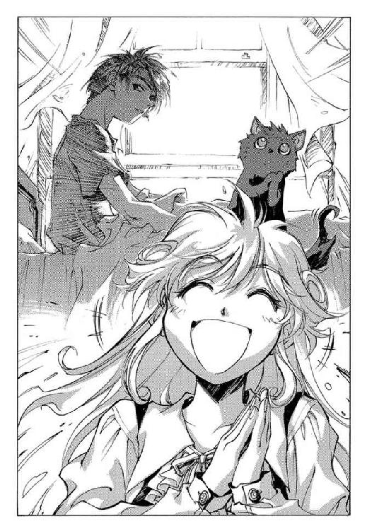
「早く早く。って、そういやマジクはどうしたの？」
「あいつは早起きしてジョギング行ってるよ。それが帰ってくるまでは、とにかく出られねえだろ。それより、俺は着替えもしてねえんだからな。出てってくれよ」
「えーん。オーフェンがいじめるー」
泣き声をあげながら出ていくクリーオウを、半眼で見送る。
彼女が後ろ手にばたんと閉じた扉に向かってため息をついてから、彼はベッドから抜け出した。もそもそと着替えをする。
窓の外へ、彼は視線を上げた。よく晴れている。
夜の間、窓は開けっ放しだったのだが、そのせいで明け方は少し冷え込んだ。もうそろそろ、窓は閉めて寝たほうがいいのかもしれない。
なんとなく、窓に寄る。窓枠に手をかけ、彼は身を乗り出した。レジボーン高地の冷たい空気が心地良い。
と──
しゅごっ！
窓の外から、なにかがほおをかすめて飛び込んできた。並大抵の勢いではない──少なくとも、視界には影しか映らないほどの速さだった。ゆっくり振り向くと、後方の壁に、一本の矢が突き刺さっている。
オーフェンは無言できびすを返すと、壁に突き立った矢のところまで引き返した。力任せに引っこ抜く。どこかの木の枝に、石で研いで作ったやじりをつけたというぞんざいな代物で、あれだけの勢いで飛んできたことが奇跡だった。とりあえずそれを抱えたまま、窓までもどる。
と、今度は声が聞こえてきた。
「はぁーっはっはっ！ 見たかドーチン、あの借金取り、本気でビビってたぞ！ この最強戦車から放たれた砲弾が、今日もまたひとつ悪を射抜いた！ これこそまさに、この民族の英雄様ボルカノ・ボルカン様の『わざわざあんな愚劣な男のために歩行距離を伸ばす必要なんてないからして、遠方からの射撃によりハンガーで吊り殺してあげちゃおう作戦』！ はっきりと今、歴史にこの俺様の勝利が刻み込まれた──」
「『様』を──」
オーフェンは窓から身を乗り出して、矢を肩の上に振りかぶると──
「二度もつけるなぁぁぁぁぁっ！」
怒鳴りながら、それを全力で投げつけた──窓のすぐ下で、やはりぞんざいな造りの弓を構えている包帯まみれのボルカンに向かって。
矢は真っ直ぐに、地人の脳天に命中した。突き刺さるのではなく激突して、ボルカンが地面に沈む......
ドーチンが紐をつけて引きずっている、なぜかぼろぼろの車椅子の上から、ぽてりと落下するボルカン。それを二階の窓から見下ろしつつ、オーフェンはうんうんとうなずいた。
「よしよし。これで通算二百四十八勝無敗。二百五十まであとふたつだな」
「いちいち記録してたんですか......？」
ドーチンが、ぼやくように言ってくる。
「そーゆう人なんですよ、本質的に」
まるっきり通りがかったように──
そう言ったのは、マジクだった。タオルを首にかけたジョギング姿で、駆け足の足踏みをしながら、ドーチンの背後にいる。
「なんか言ったか？」
オーフェンは問うと、マジクはさっと目をそらした。
「というようなことを、この人が言ってたみたいです」
「なんでっ!?」
マジクに無責任に指さされて、ドーチンが悲鳴をあげる。オーフェンは、ため息をついた。
たいして困りはしないが。
「......ずいぶん遅かったじゃねえか。出発が遅れたせいで、クリーオウの奴お冠だぜ？」
「ちょっと回り道してきたんですよ」
足踏みはかえって疲れるからか、その場を小さくくるくるとジョギングで回りながら、マジクが答えてくる。
「最近気づいたんですけど、お師様はちょっと訓練メニューがゆるいみたいですから。制御法の講義だって、昨日は眠いとかなんとか言ってさぼったじゃないですか」
「まあ、そーいやそうなんだが」
ほおを指でかきながら、オーフェンは曖昧に答えた。
マジクは、こちらを見上げて口を尖らせている。
「今夜はちゃんとやってくださいよ。覚えなくちゃならないこと、たくさんあるんでしょう？」
「まあ......な」
なにがあったかのか知らないが──
オーフェンは、内心、思わずにやりとしていた。厳しくしろということならば、いくらでもしてやれることはある。
なにか言ってやろうと思ったが、それより早く。
「マジクっ！」
どばんっ！ と、宿の玄関を内側から蹴り開けて、クリーオウが道へと飛び出した。やはりレキを頭にのっけたままで、びしりとマジクを指さす──少年の顔が、はっきりとひきつるのが見えた。
「あんたちょっと、遅すぎよ！ ジョギングくらい、なんで二秒で終わらせられないのっ!? おしおきってなんだか知ってる!? 今までのは茶番よ！ 本格的なものはこれから五秒後っ！」
「なんでぇぇぇぇっ!?」
悲鳴をあげながら──ジョギングではないスピードで、マジクが逃げ出す。
「あ、ちょっと待ちなさい！ 逃げたら罪は重くなるのよ!?」
クリーオウもまた、マジクを追って、通りの向こうへと走り去っていった。しばらくして──
何ブロックか遠くで、ちょっとした爆発が起こる。まあ、ここ一か月の滞在で、この街の住人もそういったことには慣れただろうが......
「え～と」
ドーチンが、困ったようにつぶやいている。
「とりあえず、ぼくはどうしたらいいんでしょう」
「多分、取り急ぎやるべきことは、そこのろくでなしと縁を切ることだと思うぞ」
「......ぼくも前からそう思ってはいたんですけどね」
ぼんやりとうめきながら──ドーチンが、血塗れの兄を車椅子（と呼べるかどうかは知らない。車輪がないのだから）に積み込んで、引きずって退場していく......
オーフェンは、ふっと笑った。窓枠に体重を預けて、風を楽しむ。
（終わらねえか......ま、しょせんははぐれ旅だ）
結界の穴は、また大陸のいずこかで開いている。
無論──そこからならば、結界の外に出ることができる。
キエサルヒマ大陸の外界。アザリーも、そこにいるはずだ。
彼は空を見上げると、少し身をすくませるような風の吹く中、つぶやいた。
「これから、秋になるな...」
●あとがき
「あとがき......おお！ あとがき とゆーことは全部終わったんだな!? 著者校（せんもんよーご）も終わりだな!? 素晴らしいぞ！ びば・あとがき！ どうしよう。この晴れやかな気持ちを、通りすがりの君！ 君にもプレゼントだ──あ!? なぜ逃げる!? 待てや、おらぁぁぁぁっ！」
「おやめなさいって（げし）」
「おうっ!?......血が......」
「出てない出てない」
「むう。誰だ!? この作者の歓喜に水を差す不届き者は！」
「自分で出したキャラくらい覚えときなさいっての！」
「ううむ......ええと......そうだな。榊原郁恵......おやつに......おお！ カール！ カーロッタ・マウセン！」
「......どんな経路で思い出しているのやら......まあいいですわ。で、なにをとち狂っていましたの？」
「うむ。よーやく十巻の原稿が書き終わったからな。しばらく部屋の真ん中で四メートルくらいに広がってのんびりしようかと」
「四メートル？」
「その通り。しかし、広がっているところでお湯をかけられたらピンチなので、重要なのは傘とかだ。もしくは会社からガメてきた、壊れた機械の操作パネル」
「............？」
「それだけ気を付けておけば、まあ万全だな。嘘だが」
「......嘘なんですの？」
「まあ、とにかくそんなことを口走ってしまうくらい、作者は今ほっとしているとゆーことだ」
「......ほっとしてるというか、人格防御に重大な欠陥を抱えつつあるよーに見えるのですけれど......」
「（無視）しかしまあ、途中どうなることかと思いつつも、なんとか終わってくれたからね。枚数は大幅にオーバーしたけど。ううむ。しかしここまで来るのに十巻もかかったんだなぁ。しみじみ」
「無駄な時間でしたわねぇ」
「（また無視）まあこうなると、これから次の展開を考えなければならないわけだけど。番外編は、やっぱりボツにしよう（即断）。なんにしろ次の巻では、気楽にどたばたやるよーな話をするつもりだし」
「頭の悪い人が考えもなしに下す決断って、しばしば即断してるように見えるものなんですのねぇ」
「........................」
「............」
「............おい......」
「さ、どうぞ続きを」
「やかましいわっ！ いちいちっ！」
「そんなこと言われましても、正直なところを率直に言ってみただけですし」
「涼やかに言うな涼やかに」
「正直って、損なことなのですね......」
「（無視）馬鹿はほっといて、まあなんとか、よーやく一応の区切りを迎えたこのシリーズです。皆様には長らくのお付き合い、ありがとうございました（ぺこり）。って、別にこれが最終巻じゃなかったりするあたりがこのシリーズのシリーズたる所以というところですが。次からは、新展開を考えております──まあ、やることは、たいして変わらないと思いますけど（笑）」
「芸が無い──」
「（げし）さて。ご想像の通り、これまでが〝西部編〟ときたからには、次からは〝東部編〟です。今まで名前ばかり出てきたけど、ほかは一切不明だったという舞台がぞろぞろ出てくることになりそーです。まあ、ご期待いただければ、それには応えたいと思っております......って、どした？ カーロッタ」
「一句、浮かびましたわ」
「ほう......？」
「『そうやって、読者の前では、いい人ぶる』字余り」
「季語がなぁぁぁぁぁいっ！（げし）」
一九九七年九月
秋 田 禎 信
本書は、富士見ファンタジア文庫（富士見書房）で１９９７年６月に刊行された「魔術士オーフェンはぐれ旅 我が神に弓ひけ背約者（上）」と、１９９７年10月に刊行された「魔術士オーフェンはぐれ旅 我が神に弓ひけ背約者（下）」に収録された作品を、再編集したものです。
この作品はＴＯブックス（株式会社ティー・オーエンタテインメント）「魔術士オーフェンはぐれ旅 新装版５」（２０１２年１月31日初版第１刷発行）に基づいて制作されました。
魔術士オーフェンはぐれ旅 新装版５
発行日 ２０１２年１月31日初版第１刷
著 者 秋田禎信
発行者 柴田 維
発行所 ＴＯブックス（株式会社ティー・オーエンタテインメント）
〒150-0011
東京都渋谷区東3-13-11 フロンティア恵比寿４Ｆ
TEL：03-6427-9625
URL：http://www.tobooks.jp
©2012 Yoshinobu Akita
本作品の内容を無断で複製・複写・放送・データ配信などすることは、固くお断りいたします。